NIST IR 8454 日本語訳
英語タイトル : Status Report on the Final Round of the NIST Lightweight Cryptography Standardization Process日本語タイトル : NIST 軽量暗号標準化プロセスの最終ラウンドに関する状況報告
公開日 : 2023-06-16
原文URL : https://csrc.nist.gov/pubs/ir/8454/final
翻訳編集 : 自動生成（有志による非公式の日本語訳）, 原文取得日 : 2026-10-31, 訳文 : 1345 / 1346 ブロック
[要約] NIST IR 8454 は、NIST 軽量暗号標準化プロセスの最終ラウンドについて、最終候補に対する公開フィードバックと内部審査に基づく評価基準と選定プロセスを説明する状況報告です。このプロセスは、関連データ付き認証暗号（AEAD）とオプションのハッシュ機能を提供し、制約のある環境に適した方式を 1 つ以上選定するために開始されました。2019年2月に 57 件の候補が提出され、第 1 ラウンドで 56 件、第 2 ラウンドで 32 件が受理・選出され、2021年3月に 10 件の最終候補が発表されました。2023年2月7日、NIST は軽量暗号の用途向けに ASCON ファミリーを標準化する決定を発表しました。
NIST Internal Report
NIST 内部報告書
NIST IR 8454
NIST IR 8454
Status Report on the Final Round of the NIST Lightweight Cryptography Standardization Process
NIST 軽量暗号標準化プロセスの最終ラウンドに関する状況報告
Meltem Sönmez Turan Kerry McKay Donghoon Chang Lawrence E. Bassham Jinkeon Kang Noah D. Waller John M. Kelsey Deukjo Hong
Meltem Sönmez Turan Kerry McKay Donghoon Chang Lawrence E. Bassham Jinkeon Kang Noah D. Waller John M. Kelsey Deukjo Hong
This publication is available free of charge from: https://doi.org/10.6028/NIST.IR.8454
本刊行物は次の場所から無料で入手できます: https://doi.org/10.6028/NIST.IR.8454
［NIST のロゴ。公的な標章のため、この非公式サイトには掲載していません。原本 PDF を参照してください。］
NIST Internal Report
NIST 内部報告書
NIST IR 8454
NIST IR 8454
Status Report on the Final Round of the NIST Lightweight Cryptography Standardization Process
NIST 軽量暗号標準化プロセスの最終ラウンドに関する状況報告
Meltem Sönmez Turan Kerry McKay Donghoon Chang Lawrence E. Bassham Jinkeon Kang Noah D. Waller John M. Kelsey Deukjo Hong Computer Security Division Information Technology Laboratory
Meltem Sönmez Turan Kerry McKay Donghoon Chang Lawrence E. Bassham Jinkeon Kang Noah D. Waller John M. Kelsey Deukjo Hong コンピュータセキュリティ部門 情報技術研究所
This publication is available free of charge from: https://doi.org/10.6028/NIST.IR.8454
本刊行物は次の場所から無料で入手できます: https://doi.org/10.6028/NIST.IR.8454
June 2023
2023年6月
U.S. Department of Commerce Gina M. Raimondo, Secretary
米国商務省 Gina M. Raimondo 長官
National Institute of Standards and Technology
米国国立標準技術研究所
Laurie E. Locascio, NIST Director and Under Secretary of Commerce for Standards and Technology
Laurie E. Locascio、NIST 所長兼商務次官（標準・技術担当）
Certain commercial equipment, instruments, software, or materials, commercial or non-commercial, are identified in this paper in order to specify the experimental procedure adequately. Such identification does not imply recommendation or endorsement of any product or service by NIST, nor does it imply that the materials or equipment identified are necessarily the best available for the purpose.
本書では、実験手順を十分に特定するために、商用・非商用を問わず、特定の機器、装置、ソフトウェア、または資材を挙げています。こうした記載は、NIST がいかなる製品やサービスも推奨または保証していることを意味せず、また、挙げられた資材や機器がその目的に最適であるとは限らないことを意味するものでもありません。
There may be references in this publication to other publications currently under development by NIST in accordance with its assigned statutory responsibilities. The information in this publication, including concepts and methodologies, may be used by federal agencies even before the completion of such companion publications. Thus, until each publication is completed, current requirements, guidelines, and procedures, where they exist, remain operative. For planning and transition purposes, federal agencies may wish to closely follow the development of these new publications by NIST.
本刊行物では、法令で定められた責務に従って NIST が現在策定中の他の刊行物に言及している場合があります。概念や方法論を含む本刊行物の情報は、そうした関連刊行物が完成する前であっても、連邦政府機関が利用してかまいません。したがって、各刊行物が完成するまでは、現行の要件、ガイドライン、および手順が存在する場合、それらは引き続き有効です。計画および移行のため、連邦機関は、NIST によるこれらの新しい刊行物の策定状況を注意深く追うことを検討してもよいです。
Organizations are encouraged to review all draft publications during public comment periods and provide feedback to NIST. Many NIST cybersecurity publications, other than the ones noted above, are available at https://csrc.nist.gov/publications.
組織には、すべてのドラフト刊行物についてパブリックコメント期間中に内容を確認し、NIST にフィードバックを提供することが促されています。上記以外にも、多くの NIST サイバーセキュリティ刊行物が https://csrc.nist.gov/publications で入手できます。
NIST Technical Series Policies
NIST テクニカルシリーズのポリシー
Copyright, Use, and Licensing Statements
著作権、使用、およびライセンスに関する声明
NIST Technical Series Publication Identifier Syntax
NIST テクニカルシリーズ刊行物識別子の構文
Publication History
刊行の経緯
Approved by the NIST Editorial Review Board on 2023-06-03
2023年6月3日に NIST 編集審査委員会が承認
How to cite this NIST Technical Series Publication:
本 NIST テクニカルシリーズ刊行物の引用方法:
Sönmez Turan M, McKay K, Chang D, Bassham LE, Kang J, Waller ND, Kelsey JM, Hong D (2023) Status Report on the Final Round of the NIST Lightweight Cryptography Standardization Process. (National Institute of Standards and Technology, Gaithersburg, MD), NIST Interagency or Internal Report (IR) NIST IR 8454. https://doi.org/10.6028/NIST.IR.8454
Sönmez Turan M, McKay K, Chang D, Bassham LE, Kang J, Waller ND, Kelsey JM, Hong D (2023) Status Report on the Final Round of the NIST Lightweight Cryptography Standardization Process. (National Institute of Standards and Technology, Gaithersburg, MD), NIST Interagency or Internal Report (IR) NIST IR 8454. https://doi.org/10.6028/NIST.IR.8454
Author ORCID iDs
著者の ORCID iD
Meltem Sönmez Turan: 0000-0002-1950-7130 Kerry McKay: 0000-0002-5956-587X Donghoon Chang: 0000-0003-1249-2869 Lawrence E. Bassham: 0000-0003-0856-9990 Jinkeon Kang: 0000-0003-2142-8236 Noah D. Waller: 0000-0002-6979-9725 John M. Kelsey: 0000-0002-3427-1744 Deukjo Hong: 0000-0002-0998-2958
Meltem Sönmez Turan: 0000-0002-1950-7130 Kerry McKay: 0000-0002-5956-587X Donghoon Chang: 0000-0003-1249-2869 Lawrence E. Bassham: 0000-0003-0856-9990 Jinkeon Kang: 0000-0003-2142-8236 Noah D. Waller: 0000-0002-6979-9725 John M. Kelsey: 0000-0002-3427-1744 Deukjo Hong: 0000-0002-0998-2958
Contact Information
連絡先
lightweight-crypto@nist.gov
lightweight-crypto@nist.gov
All comments are subject to release under the Freedom of Information Act (FOIA).
すべてのコメントは、情報自由法（FOIA）に基づき公開される場合があります。
Abstract
要旨
The National Institute of Standards and Technology (NIST) initiated a public standardization process to select one or more schemes that provide Authenticated Encryption with Associated Data (AEAD) and optional hashing functionalities and are suitable for constrained environments. In February 2019, 57 candidates were submitted to NIST for consideration. Among these, 56 were accepted as first-round candidates in April 2019. After four months, NIST selected 32 of the candidates for the second round. In March 2021, NIST announced 10 finalists – namely ASCON, Elephant, GIFT-COFB, Grain-128AEAD, ISAP, PHOTON-Beetle, Romulus, SPARKLE, TinyJAMBU, and Xoodyak – to move forward to the final round of the selection process. On February 7, 2023, NIST announced the decision to standardize the ASCON family for lightweight cryptography applications. This report describes the evaluation criteria and selection process, which is based on public feedback and internal review of the finalists.
米国国立標準技術研究所（NIST）は、関連データ付き認証暗号（AEAD）とオプションのハッシュ機能を提供し、制約のある環境に適した方式を1つ以上選定するため、公開の標準化プロセスを開始しました。2019年2月に57件の候補が NIST に提出され、このうち56件が2019年4月に第1ラウンドの候補として受理されました。4か月後、NIST は候補のうち32件を第2ラウンドに選びました。2021年3月、NIST は10件の最終候補（ASCON、Elephant、GIFT-COFB、Grain-128AEAD、ISAP、PHOTON-Beetle、Romulus、SPARKLE、TinyJAMBU、Xoodyak）を発表し、選定プロセスの最終ラウンドに進めました。2023年2月7日、NIST は、軽量暗号の用途向けに ASCON ファミリーを標準化する決定を発表しました。本報告書は、最終候補に対する公開フィードバックと内部審査に基づく、評価基準と選定プロセスを説明しています。
Keywords
キーワード
authenticated encryption; constrained devices; cryptography; hash functions; lightweight cryptography; standardization.
authenticated encryption; constrained devices; cryptography; hash functions; lightweight cryptography; standardization.
Reports on Computer Systems Technology
コンピュータシステム技術に関する報告書
The Information Technology Laboratory (ITL) at the National Institute of Standards and Technology (NIST) promotes the U.S. economy and public welfare by providing technical leadership for the Nation’s measurement and standards infrastructure. ITL develops tests, test methods, reference data, proof of concept implementations, and technical analyses to advance the development and productive use of information technology. ITL’s responsibilities include the development of management, administrative, technical, and physical standards and guidelines for the cost-effective security and privacy of other than national security-related information in federal information systems.
米国国立標準技術研究所（NIST）の情報技術研究所（ITL）は、国の測定・標準のインフラストラクチャに関する技術的リーダーシップを提供することで、米国の経済と公共の福祉を促進しています。ITL は、情報技術の発展と生産的な利用を進めるため、テスト、テスト方法、参照データ、概念実証の実装、技術分析を開発しています。ITL の責務には、連邦情報システムにおける、国家安全保障に関するもの以外の情報について、費用対効果の高いセキュリティとプライバシーのための、管理的、事務的、技術的、物理的な標準とガイドラインの開発が含まれます。
Acknowledgments
謝辞
NIST thanks the submission teams, who developed and designed the candidates, and the cryptographic community, who analyzed the candidates, shared their comments through the lwc-forum, and published papers on various technical aspects of the candidates.
NIST は、候補を開発・設計した提出チームと、候補を分析し、lwc-forum を通じて意見を共有し、候補のさまざまな技術的側面に関する論文を公表した暗号コミュニティに感謝します。
NIST also thanks the developers, who provided optimized implementations of the finalists as well as the hardware and software benchmarking initiatives, for their contribution to the understanding of the performance characteristics of the algorithms on various target platforms.
NIST はまた、最終候補の最適化された実装を提供した開発者、およびハードウェアとソフトウェアのベンチマークの取り組みに対し、さまざまな対象プラットフォームにおけるアルゴリズムの性能特性の理解に貢献したことに感謝します。
The authors of this report acknowledge and appreciate contributions from their colleagues at NIST – Lily Chen, Dustin Moody, Andrew Regenscheid, Sara Kerman, Isabel Van Wyk, and Michael Fagan, who provided technical and administrative support and contributed to discussions.
本報告書の著者は、技術的・事務的な支援を提供し、議論に貢献した NIST の同僚である Lily Chen、Dustin Moody、Andrew Regenscheid、Sara Kerman、Isabel Van Wyk、Michael Fagan の貢献を認め、感謝します。
Table of Contents
目次
List of Tables
表の一覧
List of Figures
図の一覧
1. Introduction
1. はじめに
The deployment of small computing devices such as RFID tags, industrial controllers, sensor nodes and smart cards is becoming much more common. The shift from desktop computers to small devices brings a wide range of new security and privacy concerns. In many conventional cryptographic standards, the tradeoff between security, performance and resource requirements was optimized for desktop and server environments. As a result, implementing the current cryptography standards (e.g. AES-GCM [1, 2], and SHA-2 [3]) in resource-constrained devices becomes challenging due to the inherent limitations of such devices. When they can be implemented, their performance may not be acceptable.
RFID タグ、産業用コントローラ、センサーノード、スマートカードなどの小型計算デバイスの配備が、ますます一般的になっています。デスクトップコンピュータから小型デバイスへの移行は、セキュリティとプライバシーに関する幅広い新たな懸念をもたらします。従来の暗号標準の多くでは、セキュリティ、性能、リソース要件のトレードオフが、デスクトップ環境とサーバー環境向けに最適化されていました。その結果、現行の暗号標準（例: AES-GCM [1, 2] や SHA-2 [3]）をリソースの限られたデバイスに実装することは、こうしたデバイスに固有の制約のために困難になります。実装できる場合でも、その性能は許容できないことがあります。
In 2015, the National Institute of Standards and Technology (NIST) initiated the lightweight cryptography standardization process to select one or more schemes for Authenticated Encryption with Associated Data (AEAD) and optional hashing functionalities that are suitable for use in constrained environments. NIST sought a pairing of AEAD and hashing schemes with shared components in order to reduce implementation size for supporting both functionalities.
2015年に、米国国立標準技術研究所（NIST）は、制約のある環境での使用に適した、関連データ付き認証暗号（AEAD）とオプションのハッシュ機能のための方式を1つ以上選定するため、軽量暗号標準化プロセスを開始しました。NIST は、両方の機能をサポートする際の実装サイズを減らすために、構成要素を共有する AEAD 方式とハッシュ方式の組合せを求めました。
In February 2023, NIST announced the decision to standardize the ASCON family for lightweight cryptography applications. The aim of this report is to provide a public record of the third round of the standardization process and explain the evaluation of the finalists to be selected for standardization.
2023年2月に、NIST は、軽量暗号の用途向けに ASCON ファミリーを標準化する決定を発表しました。本報告書の目的は、標準化プロセスの第3ラウンドの公開記録を提供し、標準化に選定される最終候補の評価を説明することです。
1.1. Background
1.1. 背景
After hosting two public workshops (in 2015 and 2016), NIST published the submission requirements and evaluation criteria [4] in 2018 and received 57 submissions in response to the call. In April 2019, NIST announced 56 first-round candidates. In August 2019, NIST announced 32 second-round candidates (see Table 1) and published NIST Internal Report (NIST IR) 8268 [5] to explain the evaluation criteria and selection of the second-round candidates.
NIST は、2回の公開ワークショップ（2015年と2016年）を開催した後、2018年に提出要件と評価基準 [4] を公表し、この募集に応じて57件の提出を受けました。2019年4月に、NIST は56件の第1ラウンド候補を発表しました。2019年8月には、32件の第2ラウンド候補を発表し（表 1 を参照）、評価基準と第2ラウンド候補の選定を説明するために NIST 内部報告書（NIST IR）8268 [5] を公表しました。
Table 1. List of second-round candidates
表 1. 第2ラウンド候補の一覧
| Second-round Candidates |
|---|
| ACE, ASCON, COMET, DryGASCON, Elephant, ESTATE, ForkAE, GIFT-COFB, Gimli, Grain-128AEAD, HyENA, ISAP, KNOT, LOTUS-AEAD and LOCUS-AEAD, mixFeed, ORANGE, Oribatida, PHOTON-Beetle, Pyjamask, Romulus, SAEAES, Saturnin, SKINNY-AEAD, SPARKLE, SPIX, SpoC, Spook, Subterranean 2.0, SUNDAE-GIFT, TinyJAMBU, WAGE, Xoodyak |
| 第2ラウンド候補 |
|---|
| ACE, ASCON, COMET, DryGASCON, Elephant, ESTATE, ForkAE, GIFT-COFB, Gimli, Grain-128AEAD, HyENA, ISAP, KNOT, LOTUS-AEAD および LOCUS-AEAD, mixFeed, ORANGE, Oribatida, PHOTON-Beetle, Pyjamask, Romulus, SAEAES, Saturnin, SKINNY-AEAD, SPARKLE, SPIX, SpoC, Spook, Subterranean 2.0, SUNDAE-GIFT, TinyJAMBU, WAGE, Xoodyak |
In August 2020, NIST invited the submitters of the second-round candidates to provide short updates on their algorithms. During the second round of the process, NIST hosted the third and fourth lightweight cryptography workshops to discuss various aspects of the second-round candidates and obtain valuable feedback for the selection of the finalists. NIST announced the 10 finalists in March 2021 (see Table 2 and 3) and published NIST IR 8369 [6] to explain the selection of the finalists.
2020年8月に、NIST は第2ラウンド候補の提出者に、各アルゴリズムについての短い更新情報の提供を依頼しました。プロセスの第2ラウンドの間に、NIST は第3回および第4回の軽量暗号ワークショップを開催し、第2ラウンド候補のさまざまな側面を議論して、最終候補の選定に向けた貴重なフィードバックを得ました。NIST は2021年3月に10件の最終候補を発表し（表 2 と表 3 を参照）、最終候補の選定を説明するために NIST IR 8369 [6] を公表しました。
Table 2. List of finalists
表 2. 最終候補の一覧
| Finalists |
|---|
| ASCON, Elephant, GIFT-COFB, Grain-128AEAD, ISAP, PHOTON-Beetle, Romulus, SPARKLE, TinyJAMBU, Xoodyak |
| 最終候補 |
|---|
| ASCON, Elephant, GIFT-COFB, Grain-128AEAD, ISAP, PHOTON-Beetle, Romulus, SPARKLE, TinyJAMBU, Xoodyak |
NIST hosted the fifth workshop (virtual) in May 2022 and received status updates from the designers in September 2022. The timeline of the standardization process is summarized in Table 4.
NIST は2022年5月に第5回ワークショップ（オンライン）を開催し、2022年9月に設計者から状況の更新情報を受け取りました。標準化プロセスのタイムラインを表 4 にまとめています。
1.2. Organization
1.2. 構成
Section 2 provides information about the evaluation criteria and the selection process. Section 3 includes overviews of the finalists, including the design principles, security claims, and summaries of third-party analyses. Section 4 summarizes the software and hardware benchmarking initiatives, including the protected implementations. Section 5 explains the plans for next steps. Appendices include a list of acronyms and detailed results on NIST’s internal software benchmarking.
第2節では、評価基準と選定プロセスに関する情報を示します。第3節には、設計原則、セキュリティ主張、第三者による分析の要約を含む、最終候補の概要を載せています。第4節では、保護された実装を含め、ソフトウェアとハードウェアのベンチマークの取り組みを要約します。第5節では、今後のステップの計画を説明します。付録には、略語の一覧と、NIST 内部のソフトウェアのベンチマークに関する詳細な結果を含めています。
Table 3. The submission teams of the finalists
表 3. 最終候補の提出チーム
| Finalist | Team |
|---|---|
| ASCON [7–11] | C. Dobraunig, M. Eichlseder, F. Mendel, M. Schläffer |
| Elephant [12–16] | T. Beyne, Y. Long Chen, C. Dobraunig, B. Mennink |
| GIFT-COFB [17–21] | S. Banik, A. Chakraborti, T. Iwata, K. Minematsu, M. Nandi, T. Peyrin, Y. Sasaki, S. M. Sim, Y. Todo, A. Inoue 1 |
| Grain-128AEAD [22–25] | M. Hell, T. Johansson, A. Maximov 2, W. Meier, J. Sönnerup, H. Yoshida |
| ISAP [26–30] | C. Dobraunig, M. Eichlseder, S. Mangard, F. Mendel, B. Mennink, R. Primas, T. Unterluggauer |
| PHOTON-Beetle [31–34] | Z. Bao, A. Chakraborti, N. Datta, J. Guo, M. Nandi, T. Peyrin, K. Yasuda |
| Romulus [35–39] | C. Guo 3, T. Iwata, M. Khairallah, K. Minematsu, T. Peyrin |
| SPARKLE [40–44] | C. Beierle, A. Biryukov, L. Cardoso dos Santos, J. Großschädl, A. Moradi 4, L. Perrin, A. Rezaei Shahmirzadi 4, A. Udovenko, V. Velichkov, Q. Wang |
| TinyJAMBU [45–49] | H. Wu, T. Huang |
| Xoodyak [50–54] | J. Daemen, S. Hoffert, S. Mella 5, M. Peeters, G. Van Assche, R. Van Keer |
| 最終候補 | チーム |
|---|---|
| ASCON [7–11] | C. Dobraunig, M. Eichlseder, F. Mendel, M. Schläffer |
| Elephant [12–16] | T. Beyne, Y. Long Chen, C. Dobraunig, B. Mennink |
| GIFT-COFB [17–21] | S. Banik, A. Chakraborti, T. Iwata, K. Minematsu, M. Nandi, T. Peyrin, Y. Sasaki, S. M. Sim, Y. Todo, A. Inoue 1 |
| Grain-128AEAD [22–25] | M. Hell, T. Johansson, A. Maximov 2, W. Meier, J. Sönnerup, H. Yoshida |
| ISAP [26–30] | C. Dobraunig, M. Eichlseder, S. Mangard, F. Mendel, B. Mennink, R. Primas, T. Unterluggauer |
| PHOTON-Beetle [31–34] | Z. Bao, A. Chakraborti, N. Datta, J. Guo, M. Nandi, T. Peyrin, K. Yasuda |
| Romulus [35–39] | C. Guo 3, T. Iwata, M. Khairallah, K. Minematsu, T. Peyrin |
| SPARKLE [40–44] | C. Beierle, A. Biryukov, L. Cardoso dos Santos, J. Großschädl, A. Moradi 4, L. Perrin, A. Rezaei Shahmirzadi 4, A. Udovenko, V. Velichkov, Q. Wang |
| TinyJAMBU [45–49] | H. Wu, T. Huang |
| Xoodyak [50–54] | J. Daemen, S. Hoffert, S. Mella 5, M. Peeters, G. Van Assche, R. Van Keer |
2. Evaluation Criteria and Selection Process
2. 評価基準と選定プロセス
2.1. Evaluation Criteria
2.1. 評価基準
In addition to the submission requirements, the call for submissions [4] also listed the evaluation criteria for the standardization process. These criteria were further discussed and clarified during the NIST lightweight cryptography workshops. This section summarizes the evaluation criteria used during the third round of the standardization process.
募集要項 [4] には、提出要件に加えて、標準化プロセスの評価基準も記載されていました。これらの基準は、NIST 軽量暗号ワークショップでさらに議論され、明確化されました。本節では、標準化プロセスの第3ラウンドで使用した評価基準を要約します。
The cryptographic security of the finalists is the most important criterion. The security of the finalists was evaluated based on the analysis available in the submission packages, the security claims of the designers, security proofs, publicly available third-party analysis, and observations. The security evaluation of each finalists are summarized in Section 3. Although not explicitly required by the submission call, there are some additional considerations, such as nonce-misuse security, releasing unverified plaintext (RUP) security, the impact of state recovery, and post-quantum security of the candidates.
最終候補の暗号学的セキュリティは、最も重要な基準です。最終候補のセキュリティは、提出パッケージで入手可能な分析、設計者によるセキュリティ主張、セキュリティ証明、公開されている第三者の分析、および所見に基づいて評価しました。各最終候補のセキュリティ評価は第3節にまとめています。提出募集で明示的に求められてはいませんでしたが、ナンス誤用時のセキュリティ、未検証平文の公開（RUP）時のセキュリティ、状態回復の影響、候補の耐量子セキュリティといった追加の考慮事項もあります。
Another criterion is the hardware and software performance of the finalists in constrained environments, which is evaluated and compared in terms of various performance and cost metrics. The finalists are expected to perform significantly better than the current NIST standards for authenticated encryption and hashing, in particular AES-GCM [1, 2] and SHA-2 [3]. Performance comparisons of the finalists are provided in Section 4 and Appendix B.
もう1つの基準は、制約のある環境における最終候補のハードウェアとソフトウェアの性能であり、さまざまな性能指標とコスト指標で評価・比較されます。最終候補には、認証暗号とハッシュに関する現行の NIST 標準、特に AES-GCM [1, 2] と SHA-2 [3] を大幅に上回る性能が期待されています。最終候補の性能比較は、第4節と付録 B に示します。
Resistance to side-channel and fault attacks is listed as another criterion. While the submitted implementations were not required to provide side-channel resistance, the ability to provide it easily and at low cost is highly desired. The results on side-channel resistance and fault attacks are provided in Section 4.3.
サイドチャネル攻撃およびフォールト攻撃への耐性は、もう1つの基準として挙げられています。提出された実装にサイドチャネル耐性の提供は求められていませんでしたが、サイドチャネル耐性を容易かつ低コストで提供できることが強く望まれます。サイドチャネル耐性とフォールト攻撃に関する結果は、4.3 節に示します。
Intellectual property statements are also part of the evaluation criteria. In principle, NIST does not object to algorithms or implementations that may require the use of a patent claim. However, when technical reasons justify this approach, NIST considers any factors that could hinder adoption in the evaluation process (see Section 2.2).
知的財産に関する声明も、評価基準の一部です。原則として、NIST は、特許の権利主張の使用が必要となる可能性のあるアルゴリズムや実装に反対しません。ただし、技術的な理由でこの方法が正当化される場合、NIST は、採用を妨げる可能性のあるあらゆる要因を評価プロセスで考慮します（2.2 節を参照）。
2.2. Selection Process
2.2. 選定プロセス
Fairly evaluating the finalists and selecting algorithms to be standardized and used long-term was a challenging task. Part of the challenge was due to the variability of the finalists in their functionalities, security claims, underlying building blocks, supported parameter sizes, design approaches, the number of variants (see Table 5 and 6), different amount of third-party security analyses and optimized implementations that were available for consideration.
最終候補を公平に評価し、標準化して長期的に使用するアルゴリズムを選定することは、困難な作業でした。この困難さの一因は、最終候補の間で、機能、セキュリティ主張、基盤となる構成要素、サポートするパラメータサイズ、設計手法、バリアントの数（表 5 と表 6 を参照）が多様であったこと、および検討に利用できる第三者のセキュリティ分析と最適化された実装の量が異なっていたことにありました。
Since the announcements of the first-round candidates in 2019, the NIST lightweight cryptography team had weekly meetings to discuss the security and the performance of the submissions. The NIST team primarily evaluated candidates based on the submission packages, status updates, publicly available third-party security analysis papers, implementation and benchmarking results, and feedback received during workshops. The lwc-forum email forum (with over 750 members) served as an additional venue to receive comments and share ideas. NIST did not consider any other source that was not publicly available during the selection process.
2019年に第1ラウンド候補を発表して以来、NIST 軽量暗号チームは、提出物のセキュリティと性能を議論するために毎週会議を開いてきました。NIST チームは主に、提出パッケージ、状況の更新情報、公開されている第三者のセキュリティ分析論文、実装とベンチマークの結果、およびワークショップで受けたフィードバックに基づいて候補を評価しました。lwc-forum のメールフォーラム（会員750名超）は、意見を受け取り、考えを共有するためのもう1つの場として機能しました。NIST は、選定プロセスの間、公開されていないその他の情報源は一切考慮しませんでした。
The NIST team published NIST IR 8268 [5] and NIST IR 8369 [6] to explain the selection process for the first and the second rounds of evaluation, respectively. The NIST team also published security analysis papers on some of the candidates (e.g., [58–63]) and performed software benchmarking on microcontrollers (see Appendix B).
NIST チームは、第1ラウンドと第2ラウンドの評価における選定プロセスを説明するために、それぞれ NIST IR 8268 [5] と NIST IR 8369 [6] を公表しました。NIST チームはまた、一部の候補に関するセキュリティ分析論文（例: [58–63]）を公表し、マイクロコントローラ上でソフトウェアのベンチマークを実施しました（付録 B を参照）。
Target Applications and Profiles: During the early stages of the standardization process, NIST asked for public feedback on target applications and identified the following two profiles [56]:
対象となる用途とプロファイル: 標準化プロセスの初期段階に、NIST は対象となる用途について公開フィードバックを求め、次の2つのプロファイルを特定しました [56]:
•Profile I – AEAD and hashing for constrained software and hardware environments,
•プロファイル I – 制約のあるソフトウェア環境およびハードウェア環境向けの AEAD とハッシュ、
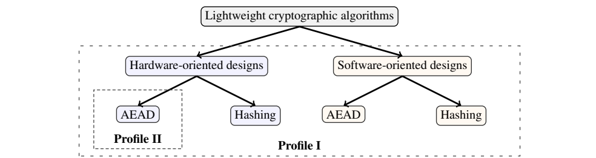
木構造の図です。「Lightweight cryptographic algorithms」（軽量暗号アルゴリズム）が「Hardware-oriented designs」（ハードウェア向けの設計）と「Software-oriented designs」（ソフトウェア向けの設計）に分かれ、それぞれがさらに「AEAD」と「Hashing」（ハッシュ）に分かれます。2つの設計とその下の4項目全体を「Profile I」と書かれた大きな破線の枠が囲み、ハードウェア向けの設計の下の AEAD だけを「Profile II」と書かれた小さな破線の枠が囲んでいます。
Fig. 1. Profiles for lightweight cryptography applications
図 1. 軽量暗号の用途に対するプロファイル
and
および
•Profile II – AEAD for constrained hardware environments,
•プロファイル II – 制約のあるハードウェア環境向けの AEAD、
as shown in Figure 1. Although a single call for algorithms that covered both profiles was published, NIST also considered selecting multiple algorithms for standardization (e.g., one for each profile).
図 1 に示すとおりです。両方のプロファイルを対象とするアルゴリズムの募集が1件だけ公表されましたが、NIST は、標準化のために複数のアルゴリズムを選定すること（例: プロファイルごとに1つ）も検討しました。
Security Evaluation: The finalists received a large number of third-party security analyses that challenged the correctness of the security claims provided in the submission packages. A summary of the third-party analyses is provided in Section 3. Table 7 provides a list of selected results on the classical security of AEAD variants. None of the publicly available analyses invalidate the claims of the submitters in single-key and nonce-respecting settings, and most candidates have comfortable security margins. 1
セキュリティ評価: 最終候補は、提出パッケージで示されたセキュリティ主張の正しさを問う、多数の第三者によるセキュリティ分析を受けました。第三者の分析の要約は第3節に示します。表 7 は、AEAD バリアントの古典的セキュリティに関する選定した結果の一覧です。公開されている分析のいずれも、単一鍵かつナンスを守る設定における提出者の主張を覆すものではなく、ほとんどの候補は十分なセキュリティマージンを備えています。1
Variants: The submissions were allowed to include multiple variants (maximum of 10 for AEAD and hashing) that support different input/output sizes and/or have different underlying building blocks. NIST asked the teams to identify a primary variant for AEAD and hashing with specific input/output sizes so that a fair comparison of the finalists would be possible. Although the submission call only asked for AEAD and hashing functionalities, some of the submissions (e.g., ASCON, SPARKLE, and Xoodyak) also included eXtendable Output Function (XOF) variants, which were not considered as official variants. However, the flexibility of providing a XOF functionality was considered to be an advantage of the design during the selection process.
バリアント: 提出物には、入出力サイズが異なる、または基盤となる構成要素が異なる複数のバリアントを含めることが認められていました（AEAD とハッシュで最大10個）。NIST は、最終候補を公平に比較できるように、各チームに、特定の入出力サイズを持つ AEAD とハッシュの主要バリアントを示すよう求めました。提出の募集では AEAD とハッシュの機能のみが求められていましたが、一部の提出物（例: ASCON、SPARKLE、Xoodyak）には、拡張可能出力関数（XOF）のバリアントも含まれていました。これらは正式なバリアントとはみなされませんでしたが、XOF 機能を提供できる柔軟性は、選定プロセスにおいて設計の利点と考えられました。
Table 4. Timeline of the NIST lightweight cryptography standardization process
表 4. NIST 軽量暗号標準化プロセスのタイムライン
| Date | Event |
|---|---|
| July 2015 | First Lightweight Cryptography Workshop at NIST |
| October 2016 | Second Lightweight Cryptography Workshop at NIST |
| March 2017 | NIST IR 8114 Report on Lightweight Cryptography [55] |
| April 2017 | (draft) Profiles for Lightweight Cryptography Standardization Process [56] |
| August 2018 | Federal Register Notice [57] |
| Submission Requirements and Evaluation Criteria for the Lightweight Cryptography Standardization Process [4] | |
| February 2019 | Submission deadline |
| April 2019 | Announcement of the first-round candidates |
| August 2019 | Announcement of the second-round candidates |
| October 2019 | NIST IR 8268, Status Report on the First Round of the NIST Lightweight Cryptography Standardization Process [5] |
| November 2019 | Third Lightweight Cryptography Workshop at NIST |
| September 2020 | Submission deadline for optional status updates |
| October 2020 | Fourth Lightweight Cryptography Workshop (virtual) |
| March 2021 | Announcement of the finalists |
| July 2021 | NIST IR 8369, Status Report on the Second Round of the NIST Lightweight Cryptography Standardization Process [6] |
| May 2022 | Fifth Lightweight Cryptography Workshop (virtual) |
| September 2022 | Submission deadline for optional status updates |
| February 2023 | Selection announcement |
| June 2023 | Sixth Lightweight Cryptography Workshop (virtual) |
| 日付 | イベント |
|---|---|
| 2015年7月 | NIST での第1回軽量暗号ワークショップ |
| 2016年10月 | NIST での第2回軽量暗号ワークショップ |
| 2017年3月 | NIST IR 8114 Report on Lightweight Cryptography [55] |
| 2017年4月 | （ドラフト）Profiles for Lightweight Cryptography Standardization Process [56] |
| 2018年8月 | Federal Register Notice [57] |
| Submission Requirements and Evaluation Criteria for the Lightweight Cryptography Standardization Process [4] | |
| 2019年2月 | 提出期限 |
| 2019年4月 | 第1ラウンド候補の発表 |
| 2019年8月 | 第2ラウンド候補の発表 |
| 2019年10月 | NIST IR 8268, Status Report on the First Round of the NIST Lightweight Cryptography Standardization Process [5] |
| 2019年11月 | NIST での第3回軽量暗号ワークショップ |
| 2020年9月 | 任意の状況更新情報の提出期限 |
| 2020年10月 | 第4回軽量暗号ワークショップ（オンライン） |
| 2021年3月 | 最終候補の発表 |
| 2021年7月 | NIST IR 8369, Status Report on the Second Round of the NIST Lightweight Cryptography Standardization Process [6] |
| 2022年5月 | 第5回軽量暗号ワークショップ（オンライン） |
| 2022年9月 | 任意の状況更新情報の提出期限 |
| 2023年2月 | 選定の発表 |
| 2023年6月 | 第6回軽量暗号ワークショップ（オンライン） |
Table 5. Overview of the AEAD variants
表 5. AEAD バリアントの概要
| Finalists | Variant | Building Block | Mode | Key size | Nonce Size | Tag Size |
|---|---|---|---|---|---|---|
| ASCON | ASCON-128 | ASCON Permutation | MonkeyDuplex | 128 | 128 | 128 |
| ASCON-128a | 128 | 128 | 128 | |||
| ASCON-80pq | 160 | 128 | 128 | |||
| Elephant | Dumbo | Spongent-\(\pi\)[160] | Encrypt-then-MAC | 128 | 96 | 64 |
| Jumbo | Spongent-\(\pi\)[176] | 128 | 96 | 64 | ||
| Delirium | KECCAK-\(f\)[200] | 128 | 96 | 128 | ||
| GIFT-COFB | GIFT-COFB | GIFT-128 | Combined Feedback | 128 | 128 | 128 |
| Grain-128AEAD | Grain-128AEAD | Feedback shift register | Encrypt-and-MAC | 128 | 96 | 64 |
| ISAP | ISAP-A-128a | ASCON Permutation | Encrypt-then-MAC | 128 | 128 | 128 |
| ISAP-K-128a | KECCAK-\(f\)[400] | 128 | 128 | 128 | ||
| ISAP-A-128 | ASCON Permutation | 128 | 128 | 128 | ||
| ISAP-K-128 | KECCAK-\(f\)[400] | 128 | 128 | 128 | ||
| PHOTON-Beetle | PHOTON-Beetle-AEAD[128] | PHOTON\(_{256}\) Permutation | Sponge with Combined Feedback | 128 | 128 | 128 |
| PHOTON-Beetle-AEAD[32] | 128 | 128 | 128 | |||
| Romulus | Romulus-N | Skinny-128-384+ Tweakable Block Cipher | Combined Feedback | 128 | 128 | 128 |
| Romulus-M | MAC-then-Encrypt | 128 | 128 | 128 | ||
| Romulus-T | Encrypt-then-MAC | 128 | 128 | 128 | ||
| SPARKLE | SCHWAEMM256-128 | SPARKLE\(_{384}\) | Sponge with Combined Feedback | 128 | 256 | 128 |
| SCHWAEMM128-128 | SPARKLE\(_{256}\) | 128 | 128 | 128 | ||
| SCHWAEMM192-192 | SPARKLE\(_{384}\) | 192 | 192 | 192 | ||
| SCHWAEMM256-256 | SPARKLE\(_{512}\) | 256 | 256 | 256 | ||
| TinyJAMBU | TinyJAMBU-128 | Keyed Permutation | Sponge | 128 | 96 | 64 |
| TinyJAMBU-192 | 192 | 96 | 64 | |||
| TinyJAMBU-256 | 256 | 96 | 64 | |||
| Xoodyak | Xoodyakv1 | Xoodoo Permutation | Sponge-variant Cyclist | 128 | 128 | 128 |
| 最終候補 | バリアント | 構成要素 | モード | 鍵サイズ | ナンスサイズ | タグサイズ |
|---|---|---|---|---|---|---|
| ASCON | ASCON-128 | ASCON 置換 | MonkeyDuplex | 128 | 128 | 128 |
| ASCON-128a | 128 | 128 | 128 | |||
| ASCON-80pq | 160 | 128 | 128 | |||
| Elephant | Dumbo | Spongent-\(\pi\)[160] | Encrypt-then-MAC | 128 | 96 | 64 |
| Jumbo | Spongent-\(\pi\)[176] | 128 | 96 | 64 | ||
| Delirium | KECCAK-\(f\)[200] | 128 | 96 | 128 | ||
| GIFT-COFB | GIFT-COFB | GIFT-128 | 複合フィードバック | 128 | 128 | 128 |
| Grain-128AEAD | Grain-128AEAD | フィードバックシフトレジスタ | 暗号化と MAC | 128 | 96 | 64 |
| ISAP | ISAP-A-128a | ASCON 置換 | Encrypt-then-MAC | 128 | 128 | 128 |
| ISAP-K-128a | KECCAK-\(f\)[400] | 128 | 128 | 128 | ||
| ISAP-A-128 | ASCON 置換 | 128 | 128 | 128 | ||
| ISAP-K-128 | KECCAK-\(f\)[400] | 128 | 128 | 128 | ||
| PHOTON-Beetle | PHOTON-Beetle-AEAD[128] | PHOTON\(_{256}\) 置換 | 複合フィードバック付きスポンジ | 128 | 128 | 128 |
| PHOTON-Beetle-AEAD[32] | 128 | 128 | 128 | |||
| Romulus | Romulus-N | Skinny-128-384+ tweak 可能なブロック暗号 | 複合フィードバック | 128 | 128 | 128 |
| Romulus-M | MAC-then-Encrypt | 128 | 128 | 128 | ||
| Romulus-T | Encrypt-then-MAC | 128 | 128 | 128 | ||
| SPARKLE | SCHWAEMM256-128 | SPARKLE\(_{384}\) | 複合フィードバック付きスポンジ | 128 | 256 | 128 |
| SCHWAEMM128-128 | SPARKLE\(_{256}\) | 128 | 128 | 128 | ||
| SCHWAEMM192-192 | SPARKLE\(_{384}\) | 192 | 192 | 192 | ||
| SCHWAEMM256-256 | SPARKLE\(_{512}\) | 256 | 256 | 256 | ||
| TinyJAMBU | TinyJAMBU-128 | 鍵付き置換 | スポンジ | 128 | 96 | 64 |
| TinyJAMBU-192 | 192 | 96 | 64 | |||
| TinyJAMBU-256 | 256 | 96 | 64 | |||
| Xoodyak | Xoodyakv1 | Xoodoo 置換 | スポンジ変種 Cyclist | 128 | 128 | 128 |
Table 6. Overview of the hash function variants
表 6. ハッシュ関数バリアントの概要
| Finalists | Variant | Building Block | Mode | Digest size |
|---|---|---|---|---|
| ASCON | ASCON-Hash | ASCON Permutation | Sponge | 256 |
| ASCON-Hasha | 256 | |||
| PHOTON-Beetle | PHOTON-Beetle-Hash[32] | PHOTON\(_{256}\) Permutation | Sponge | 256 |
| Romulus | Romulus-H | Skinny-128-384+ | MDPH1 | 256 |
| SPARKLE | ESCH256 | SPARKLE\(_{384}\) | Sponge | 256 |
| ESCH384 | SPARKLE\(_{512}\) | 384 | ||
| Xoodyak | Xoodyak | Xoodoo Permutation | Sponge | 256 |
| 最終候補 | バリアント | 構成要素 | モード | ダイジェストサイズ |
|---|---|---|---|---|
| ASCON | ASCON-Hash | ASCON 置換 | スポンジ | 256 |
| ASCON-Hasha | 256 | |||
| PHOTON-Beetle | PHOTON-Beetle-Hash[32] | PHOTON\(_{256}\) 置換 | スポンジ | 256 |
| Romulus | Romulus-H | Skinny-128-384+ | MDPH1 | 256 |
| SPARKLE | ESCH256 | SPARKLE\(_{384}\) | スポンジ | 256 |
| ESCH384 | SPARKLE\(_{512}\) | 384 | ||
| Xoodyak | Xoodyak | Xoodoo 置換 | スポンジ | 256 |
1 MDPH stands for Merkle-Damgård with Permutation using Hirose’s DBL compression function [64, 65]
1 MDPH は、Hirose の DBL 圧縮関数を用いた置換付き Merkle-Damgård（Merkle-Damgård with Permutation）の略です [64, 65]。
Design Tweaks: In the beginning of the final round, the submitters were allowed to make design modifications (i.e., tweaks) to improve the security or the performance of their candidates. NIST expected these modifications to be relatively minor and not to invalidate previous security analyses. There were no design tweaks for ASCON, GIFT-COFB, ISAP, PHOTON-Beetle, and SPARKLE. New variants were added to the families of ASCON and Romulus, and some of the existing variants of the Romulus family were withdrawn. The assignments of the primary variants were changed for ISAP and SPARKLE. Romulus and Xoodyak were modified to improve their performance. The Elephant design was slightly modified to achieve authenticity under nonce-misuse. The only two finalists that were modified in response to third-party security analysis were Grain-128AEAD and TinyJAMBU.
設計の微調整: 最終ラウンドの開始時に、提出者は、候補のセキュリティまたは性能を改善するために設計を修正（すなわち微調整）することが認められました。NIST は、これらの修正が比較的軽微で、従来のセキュリティ分析を無効にしないものであることを期待していました。ASCON、GIFT-COFB、ISAP、PHOTON-Beetle、SPARKLE には設計の微調整はありませんでした。ASCON と Romulus のファミリーには新しいバリアントが追加され、Romulus ファミリーの既存のバリアントの一部は取り下げられました。ISAP と SPARKLE については、主要バリアントの割り当てが変更されました。Romulus と Xoodyak は、性能を改善するために修正されました。Elephant の設計は、ナンス誤用下での真正性を達成するために、わずかに修正されました。第三者のセキュリティ分析を受けて修正された最終候補は、Grain-128AEAD と TinyJAMBU の2つだけでした。
Performance Benchmarking: The finalists are expected to perform significantly better than current NIST standards, particularly AES-GCM and SHA-2. One of the key elements of lightweight cryptography is the ability for implementors to make trade-offs that best tailor the implementation for a specific use. In such a context, it is essential that not only the fastest (or smallest) implementations are reported, but several metrics are needed to understand the potential for making implementation trade-offs. Therefore, benchmarking efforts provided valuable information to compare the performance of the finalists. For software benchmarking, the finalists ASCON, GIFT-COFB, SPARKLE, TinyJAMBU, and Xoodyak showed performance advantages in various platforms, as presented in Section 4.1 and Appendix B. For hardware benchmarking, the best-performing finalists were ASCON, Xoodyak, and TinyJAMBU, as summarized in Section 4.2.
性能のベンチマーク: 最終候補には、現行の NIST 標準、特に AES-GCM と SHA-2 を大幅に上回る性能が期待されています。軽量暗号の重要な要素の1つは、実装者が特定の用途に最も適した実装にするためのトレードオフを行えることです。こうした状況では、最速（または最小）の実装だけを報告するのではなく、実装上のトレードオフを行う可能性を理解するために、複数の指標が必要になります。したがって、ベンチマークの取り組みは、最終候補の性能を比較するための貴重な情報を提供しました。ソフトウェアのベンチマークでは、4.1 節と付録 B に示すように、最終候補のうち ASCON、GIFT-COFB、SPARKLE、TinyJAMBU、Xoodyak がさまざまなプラットフォームで性能上の優位性を示しました。ハードウェアのベンチマークでは、4.2 節にまとめたように、最も性能が高かった最終候補は ASCON、Xoodyak、TinyJAMBU でした。
For protected implementations, NIST considered the resistance of the finalists to side-channel and fault attacks, and the implementation overhead needed to mitigate such attacks. The finalists ASCON, ISAP, Xoodyak, and TinyJAMBU demonstrated strong performance, as summarized in Section 4.3.1, which provides insight into the cost of side-channel protection for each of the finalists.
保護された実装について、NIST は、最終候補のサイドチャネル攻撃およびフォールト攻撃への耐性と、そうした攻撃を緩和するために必要な実装のオーバーヘッドを検討しました。最終候補のうち ASCON、ISAP、Xoodyak、TinyJAMBU は高い性能を示しました。これは 4.3.1 節にまとめており、各最終候補のサイドチャネル保護のコストに関する知見を与えます。
Post-Quantum Security: Although providing security against quantum threats is not one of the main concerns of the lightweight cryptography standardization process, it was also considered during evaluation. In general, most symmetric cryptosystems are considered to be relatively secure against quantum threats. The best generic attack against symmetric ciphers is Grover’s algorithm [80], which provides a quadratic speedup for exhaustive key search (or finding collisions in hash functions). To avoid the attack, variants with larger key sizes (or larger digest sizes) are preferred. Among the finalists, three of the candidates supported keys longer than 128 bits. In particular, the SPARKLE and TinyJAMBU families included AEAD variants with 192-bit and 256-bit keys and one ASCON variant supported 160-bit keys. Note that, due to the requirement of running Grover’s algorithm with sequential queries, the practical implications of the attack may be limited. Additionally, there are some results that exploit the internal structure of symmetric ciphers, particularly the Even-Mansour construction [81, 82], which may impact the quantum security of Elephant.
耐量子セキュリティ: 量子的脅威に対するセキュリティの提供は、軽量暗号標準化プロセスの主要な関心事の1つではありませんが、評価の際にも考慮しました。一般に、共通鍵暗号システムの大半は、量子的脅威に対して比較的安全と考えられています。共通鍵暗号に対する最良の汎用攻撃は Grover のアルゴリズム [80] で、全数鍵探索（またはハッシュ関数の衝突探索）を2次の速度で高速化します。この攻撃を避けるには、より大きな鍵サイズ（またはより大きなダイジェストサイズ）を持つバリアントが望まれます。最終候補のうち3件の候補は、128ビットより長い鍵をサポートしていました。具体的には、SPARKLE ファミリーと TinyJAMBU ファミリーに192ビットおよび256ビット鍵の AEAD バリアントが含まれ、ASCON の1つのバリアントが160ビット鍵をサポートしていました。Grover のアルゴリズムを逐次的な問合せで実行する必要があるため、この攻撃の実用上の影響は限定的である可能性があることに注意してください。さらに、共通鍵暗号の内部構造、特に Even-Mansour 構成 [81, 82] を悪用する結果があり、Elephant の量子セキュリティに影響する可能性があります。
Table 7. Selected key recovery, forgery, and distinguishing attacks on the AEAD variants in the nonce-respecting setting
表 7. ナンス遵守の設定における AEAD バリアントに対する、選定された鍵回復攻撃、偽造攻撃、識別攻撃
| Finalists | Variant | Selected Results |
|---|---|---|
| ASCON | ASCON-128 | KR (7 out of 12 rounds) [66] |
| ASCON-128a | KR (7 out of 12 rounds) [66] | |
| ASCON-80pq | KR (7 out of 12 rounds) [66] | |
| Elephant | Dumbo | Distinguisher (40 out of 80 rounds) [67] |
| Jumbo | Distinguisher (46 out of 90 rounds) [68] | |
| Delirium | KR (8 out of 18 rounds) [69] | |
| GIFT-COFB | GIFT-COFB | KR of GIFT-128 (27 out of 40 rounds) [70] |
| Grain-128AEAD | Grain-128AEAD | KR (192 out of 512 rounds for Initialization) [71] |
| ISAP | ISAP-A-128a | Forgery (4 out of 12 rounds) [72] |
| ISAP-K-128a | Forgery (4 out of 16 rounds) [73] | |
| ISAP-A-128 | Forgery (4 out of 12 rounds) [72] | |
| ISAP-K-128 | Forgery (4 out of 20 rounds) [73] | |
| PHOTON-Beetle | PHOTON-Beetle-AEAD[128] | Distinguisher (10 out of 12 rounds) [74] |
| PHOTON-Beetle-AEAD[32] | Distinguisher (10 out of 12 rounds) [74] | |
| Romulus | Romulus-N | RKR of Skinny-128-384+ (32 out of 40 rounds) [75, 76] |
| Romulus-M | RKR of Skinny-128-384+ (32 out of 40 rounds) [75, 76] | |
| Romulus-T | RKR of Skinny-128-384+ (32 out of 40 rounds) [75, 76] | |
| SPARKLE | SCHWAEMM256-128 | KR (4.5 out of 11 steps for Initialization) [42] |
| SCHWAEMM128-128 | KR (4.5 out of 10 steps for Initialization) [42] | |
| SCHWAEMM192-192 | KR (4.5 out of 11 steps for Initialization) [42] | |
| SCHWAEMM256-256 | KR (3.5 out of 8 steps for Message Processing) [42] | |
| TinyJAMBU | TinyJAMBU-128 | WKD (476 out of 1024 rounds) [77] |
| TinyJAMBU-192 | RK-Forgery (full rounds) [78] | |
| TinyJAMBU-256 | RK-Forgery (full rounds) [78] | |
| Xoodyak | Xoodyak | KR (6 out of 12 rounds) [79] |
| 最終候補 | バリアント | 選定した結果 |
|---|---|---|
| ASCON | ASCON-128 | KR（12ラウンド中7ラウンド） [66] |
| ASCON-128a | KR（12ラウンド中7ラウンド） [66] | |
| ASCON-80pq | KR（12ラウンド中7ラウンド） [66] | |
| Elephant | Dumbo | 識別攻撃（80ラウンド中40ラウンド） [67] |
| Jumbo | 識別攻撃（90ラウンド中46ラウンド） [68] | |
| Delirium | KR（18ラウンド中8ラウンド） [69] | |
| GIFT-COFB | GIFT-COFB | KR（鍵回復）: GIFT-128（40ラウンド中27ラウンド） [70] |
| Grain-128AEAD | Grain-128AEAD | KR（初期化の512ラウンド中192ラウンド） [71] |
| ISAP | ISAP-A-128a | 偽造（12ラウンド中4ラウンド） [72] |
| ISAP-K-128a | 偽造（16ラウンド中4ラウンド） [73] | |
| ISAP-A-128 | 偽造（12ラウンド中4ラウンド） [72] | |
| ISAP-K-128 | 偽造（20ラウンド中4ラウンド） [73] | |
| PHOTON-Beetle | PHOTON-Beetle-AEAD[128] | 識別攻撃（12ラウンド中10ラウンド） [74] |
| PHOTON-Beetle-AEAD[32] | 識別攻撃（12ラウンド中10ラウンド） [74] | |
| Romulus | Romulus-N | RKR（関連鍵回復）: Skinny-128-384+（40ラウンド中32ラウンド） [75, 76] |
| Romulus-M | RKR（関連鍵回復）: Skinny-128-384+（40ラウンド中32ラウンド） [75, 76] | |
| Romulus-T | RKR（関連鍵回復）: Skinny-128-384+（40ラウンド中32ラウンド） [75, 76] | |
| SPARKLE | SCHWAEMM256-128 | KR（初期化の11ステップ中4.5ステップ） [42] |
| SCHWAEMM128-128 | KR（初期化の10ステップ中4.5ステップ） [42] | |
| SCHWAEMM192-192 | KR（初期化の11ステップ中4.5ステップ） [42] | |
| SCHWAEMM256-256 | KR（メッセージ処理の8ステップ中3 | |
| TinyJAMBU | TinyJAMBU-128 | WKD（1024ラウンド中476ラウンド） [77] |
| TinyJAMBU-192 | RK-Forgery（全ラウンド） [78] | |
| TinyJAMBU-256 | RK-Forgery（全ラウンド） [78] | |
| Xoodyak | Xoodyak | KR（12ラウンド中6ラウンド） [79] |
KR: Key Recovery, RK: Related Key, RKR: Related Key Recovery, WKD: Weak Key Distinguisher
KR: 鍵回復（Key Recovery）、RK: 関連鍵（Related Key）、RKR: 関連鍵回復（Related Key Recovery）、WKD: 弱鍵識別器（Weak Key Distinguisher）
Intellectual Property Statements: The initial call for submissions [4] stated the goal of worldwide, royalty-free availability for selected algorithms. NIST required that algorithm submitters identify all known intellectual property that could be infringed by implementing their candidate algorithm. Among the finalists, applicable patents were only identified for PHOTON-Beetle [31]. After the review process was completed, intellectual property considerations did not factor into decisions made during the selection process.
知的財産に関する声明: 最初の募集要項 [4] は、選定されたアルゴリズムを世界中でロイヤリティフリーで利用できるようにするという目標を述べていました。NIST は、アルゴリズムの提出者に対し、候補アルゴリズムの実装によって侵害される可能性のある既知の知的財産をすべて特定するよう求めました。最終候補のうち、該当する特許が特定されたのは PHOTON-Beetle [31] だけでした。審査プロセスの完了後、知的財産に関する検討事項は、選定プロセスでの決定の要因にはなりませんでした。
2.2.1. Selection of ASCON
2.2.1. ASCON の選定
After evaluating the finalists according to the criteria presented above, NIST has selected the ASCON family for standardization.
上記の基準に従って最終候補を評価した結果、NIST は ASCON ファミリーを標準化の対象として選定しました。
The ASCON family includes AEAD and hash functions, as well as additional XOFs. This allows it to satisfy a wide range of application needs and there is low additional cost to implement additional functionalities thanks to its permutation-based design.
ASCON ファミリーには、AEAD とハッシュ関数に加えて、追加の XOF も含まれています。このため、幅広い用途のニーズを満たすことができ、置換に基づく設計のおかげで、追加の機能を実装するための追加コストも低く抑えられます。
ASCON is the most mature of the finalists in terms of security. While some of the other finalists were not published prior to the lightweight standardization process, the AEAD variants of the ASCON family had already been presented and analyzed as part of the CAESAR competition.2 Three profiles were created during the competition, including one for lightweight authenticated encryption. Ultimately, the AEAD variants of ASCON were selected as the primary choice for lightweight applications in the final CAESAR portfolio. ASCON’s maturity can also be seen in the tweaks for the final round, where there were additional variants added but none of the second-round variants were modified. This is in contrast to some other finalists that included design tweaks to address attacks.
ASCON は、最終候補の中でセキュリティの面で最も成熟しています。他の最終候補の一部は軽量暗号標準化プロセスの前には公表されていませんでしたが、ASCON ファミリーの AEAD バリアントは、CAESAR コンペティションの一環としてすでに発表され、分析されていました。2 このコンペティションでは3つのプロファイルが作成され、その中には軽量認証暗号向けのものも含まれていました。最終的に、ASCON の AEAD バリアントは、最終的な CAESAR ポートフォリオにおいて、軽量用途の第一の選択肢として選ばれました。ASCON の成熟度は、最終ラウンドに向けた微調整にも表れています。そこでは追加のバリアントが加えられましたが、第2ラウンドのバリアントは1つも修正されませんでした。これは、攻撃に対処するための設計の微調整を行った他の一部の最終候補とは対照的です。
With ASCON’s long history comes a wealth of analyses. It was the submission with the most third-party analysis and implementations. Despite the head-start on cryptanalytical attacks, ASCON has remained strong. AEAD variants of the ASCON family provide a high security margin in the nonce-respecting setting and also provide high integrity assurances in the nonce-misuse setting. Additionally, the AEAD mode provides a mode-level protection mechanism for security against leakage.
ASCON の長い歴史に伴い、豊富な分析があります。ASCON は、第三者による分析と実装が最も多い提出物でした。暗号解読による攻撃で先行されていたにもかかわらず、ASCON は強固さを保ってきました。ASCON ファミリーの AEAD バリアントは、ナンス遵守の設定において高いセキュリティマージンを提供し、ナンス誤用の設定においても高い完全性の保証を提供します。さらに、AEAD モードは、情報漏えいに対するセキュリティのためのモードレベルの保護機構を提供します。
Performance in constrained environments, such as dedicated hardware and embedded systems, was a significant factor in the decision. ASCON performed very well in hardware and software, demonstrated implementation flexibility supporting various trade-offs between cost and performance, and showed performance advantages over current NIST AEAD and hash standards in a variety of hardware and software platforms with limited resources. ASCON was also shown to incur a lower additional cost for protected implementations over unprotected ones.
専用ハードウェアや組込みシステムなどの制約のある環境における性能は、決定の重要な要因でした。ASCON は、ハードウェアとソフトウェアの両方で非常に高い性能を示し、コストと性能の間のさまざまなトレードオフに対応できる実装の柔軟性を示し、リソースが限られたさまざまなハードウェアおよびソフトウェアのプラットフォームで、現行の NIST の AEAD およびハッシュ標準に対する性能上の優位性を示しました。ASCON はまた、保護なしの実装に対する保護された実装の追加コストが低いことも示されました。
Another finalist, ISAP, also had two AEAD variants that relied on the ASCON permutation. It was ultimately deemed less flexible than ASCON, as its mode-level leakage resistance caused implementations to be larger and slower.
もう1つの最終候補である ISAP にも、ASCON 置換に依拠する2つの AEAD バリアントがありました。ISAP は、モードレベルの漏えい耐性のために実装が大きく遅くなることから、最終的に ASCON より柔軟性が低いと判断されました。
One important limitation of the ASCON variants studied in the lightweight standardization process is the lack of an option for 256-bit keys. This can be an issue when 128-bit security against quantum attacks is needed. However, NIST emphasizes that the main purpose of this selection process was for lightweight AEAD and hashing. When post-quantum security and 256-bit keys are required, AES-GCM can be used. NIST may also consider additional variants providing higher post-quantum security at a later date.
軽量暗号標準化プロセスで検討された ASCON バリアントの重要な制約の1つは、256ビット鍵の選択肢がないことです。量子攻撃に対して128ビットのセキュリティが必要な場合、これは問題になる可能性があります。ただし NIST は、この選定プロセスの主な目的が軽量な AEAD とハッシュであったことを強調します。耐量子セキュリティと256ビット鍵が必要な場合は、AES-GCM を使用できます。NIST は、より高い耐量子セキュリティを提供する追加のバリアントについて、後日検討する可能性もあります。
NIST believes that the ASCON family will provide sufficient security in target environments for the foreseeable future. Further, NIST has decided that a secondary algorithm is not necessary at this time as the performance of ASCON is expected to be acceptable for target devices and applications.
NIST は、ASCON ファミリーが、対象環境において当面の間十分なセキュリティを提供すると考えています。さらに NIST は、ASCON の性能が対象となるデバイスと用途にとって許容できると期待されることから、現時点では第2のアルゴリズムは必要ないと判断しました。
3. Finalists
3. 最終候補
This section provides an overview of each finalist and focuses on their design principles, security claims, and summaries of third-party analyses (See also [83, 84]).
本節では、各最終候補の概要を示し、設計原則、セキュリティ主張、および第三者による分析の要約に焦点を当てます（[83, 84] も参照）。
3.1. ASCON
3.1. ASCON
3.1.1. Overview of the Design
3.1.1. 設計の概要
ASCON [9] is a permutation-based AEAD and a hashing scheme. The main component of the ASCON family is a 320-bit permutation instantiated with different constants and number of rounds for different variants. ASCON-AEAD uses the monkeyDuplex construction [85] with additional key additions during initialization and finalization, whereas ASCON-Hash uses the sponge construction [86]. The ASCON family [87], including ASCON-128 and ASCON-128a, was selected as the primary choice for lightweight authenticated encryption in the final portfolio of the CAESAR competition.
ASCON [9] は、置換に基づく AEAD およびハッシュ方式です。ASCON ファミリーの主要な構成要素は320ビットの置換であり、バリアントごとに異なる定数とラウンド数でインスタンス化されます。ASCON-AEAD は、初期化と最終処理で追加の鍵加算を行う monkeyDuplex 構成 [85] を使用します。一方、ASCON-Hash はスポンジ構成 [86] を使用します。ASCON-128 と ASCON-128a を含む ASCON ファミリー [87] は、CAESAR コンペティションの最終ポートフォリオにおいて、軽量認証暗号の第一の選択肢として選ばれました。
Submission updates. A new hash function – ASCON-Hasha – and an extendable output function – ASCON-Xofa – were added to the ASCON family in the final round.
提出内容の更新。最終ラウンドで、新しいハッシュ関数 ASCON-Hasha と拡張可能出力関数 ASCON-Xofa が ASCON ファミリーに追加されました。
Variants. The AEAD variants of ASCON are provided below. The number of rounds for each AEAD variant is represented as a 3-tuple, which corresponds to the number of rounds during initialization, Associated Data (AD) and message processing, and finalization, respectively. Ascon team also defined ASCON-80pq to provide stronger resistance against quantum key recovery attacks.
バリアント。ASCON の AEAD バリアントを以下に示します。各 AEAD バリアントのラウンド数は3つ組で表され、それぞれ、初期化、関連データ（AD）とメッセージの処理、および最終処理のラウンド数に対応します。Ascon チームは、量子鍵回復攻撃に対するより強い耐性を提供するために、ASCON-80pq も定義しました。
| AEAD variants | Key size (in bits) | Nonce size (in bits) | Tag size (in bits) | Block size (in bits) | #Rounds |
|---|---|---|---|---|---|
| ASCON-128 | 128 | 128 | 128 | 64 | 12/6/12 |
| ASCON-128a | 128 | 128 | 128 | 128 | 12/8/12 |
| ASCON-80pq | 160 | 128 | 128 | 64 | 12/6/12 |
| AEAD バリアント | 鍵サイズ（ビット） | ナンスサイズ（ビット） | タグサイズ（ビット） | ブロックサイズ（ビット） | ラウンド数 |
|---|---|---|---|---|---|
| ASCON-128 | 128 | 128 | 128 | 64 | 12/6/12 |
| ASCON-128a | 128 | 128 | 128 | 128 | 12/8/12 |
| ASCON-80pq | 160 | 128 | 128 | 64 | 12/6/12 |
The hash and XOF variants of ASCON are provided below. The number of rounds for hashing variants is represented as a 4-tuple, which corresponds to the number of rounds during initialization, absorbing message, squeezing the first block, and squeezing the remaining blocks, respectively.
ASCON のハッシュと XOF のバリアントを以下に示します。ハッシュバリアントのラウンド数は4つ組で表され、それぞれ、初期化、メッセージの吸収、最初のブロックの絞り出し、残りのブロックの絞り出しのラウンド数に対応します。
| Hash variants | Digest size (in bits) | Rate (in bits) | Capacity (in bits) | #Rounds |
|---|---|---|---|---|
| ASCON-Hash | 256 | 64 | 256 | 12/12/12/12 |
| ASCON-Hasha | 256 | 64 | 256 | 12/8/12/8 |
| XOF variants | ||||
| ASCON-Xof | any | 64 | 256 | 12/12/12/12 |
| ASCON-Xofa | any | 64 | 256 | 12/8/12/8 |
| ハッシュバリアント | ダイジェストサイズ（ビット） | レート（ビット） | キャパシティ（ビット） | ラウンド数 |
|---|---|---|---|---|
| ASCON-Hash | 256 | 64 | 256 | 12/12/12/12 |
| ASCON-Hasha | 256 | 64 | 256 | 12/8/12/8 |
| XOF バリアント | ||||
| ASCON-Xof | 任意 | 64 | 256 | 12/12/12/12 |
| ASCON-Xofa | 任意 | 64 | 256 | 12/8/12/8 |
Security Claims. Submitters made the following security claims:
セキュリティ主張。提出者は次のセキュリティ主張を行いました。
•All three ASCON AEAD variants provide 128-bit security for the confidentiality of plaintext and the integrity of plaintext, AD, and nonce in the nonce-respecting setting, where the number of processed plaintext and AD blocks protected by the encryption algorithm is limited to a total of \(2^{64}\) blocks per key.
•ASCON の3つの AEAD バリアントはすべて、ナンスを守る設定において、平文の機密性と、平文、AD、ナンスの完全性に対して128ビットのセキュリティを提供します。ここで、暗号化アルゴリズムが保護する、処理される平文と AD のブロック数は、鍵ごとに合計 \(2^{64}\) ブロックに制限されます。
•ASCON-Hash and ASCON-Hasha provide 128-bit security against collision attacks and (second) pre-image attacks. ASCON-Xof and ASCON-Xofa with an output size of \(\ell\) bits provide \(\min(128,\ell/2)\)-bit security against collision attacks and \(\min(128,\ell)\)-bit security against (second) pre-image attacks.
•ASCON-Hash と ASCON-Hasha は、衝突攻撃と（第2）原像攻撃に対して128ビットのセキュリティを提供します。出力サイズが \(\ell\) ビットの ASCON-Xof と ASCON-Xofa は、衝突攻撃に対して \(\min(128,\ell/2)\) ビットのセキュリティを、（第2）原像攻撃に対して \(\min(128,\ell)\) ビットのセキュリティを提供します。
3.1.2. Security Analysis
3.1.2. セキュリティ分析
The ASCON family has received a significant amount of third-party security analysis. A summary of the results is provided below (also, see [11]).
ASCON ファミリーは、第三者による多数のセキュリティ分析を受けてきました。結果の要約を以下に示します（[11] も参照）。
The following papers studied the security of the AEAD variants in the nonce-respecting setting.
以下の論文は、ナンスを守る設定における AEAD バリアントのセキュリティを調べました。
•Rohit and Sarkar [88] presented a weak-key recovery cube-like attack and a weak-key distinguisher on 7-round ASCON initialization in the nonce-respecting setting with a time complexity of \(2^{97}\) and a data complexity of \(2^{64}\) for \(2^{116.34}\) keys and with a time complexity of \(2^{33}\) and a data complexity of \(2^{33}\) for \(2^{63}\) keys, respectively.
•Rohit と Sarkar [88] は、ナンスを守る設定における7ラウンドの ASCON 初期化に対する、弱鍵回復のキューブ型攻撃（時間計算量 \(2^{97}\)、データ計算量 \(2^{64}\)、\(2^{116.34}\) 個の鍵が対象）と、弱鍵識別器（時間計算量 \(2^{33}\)、データ計算量 \(2^{33}\)、\(2^{63}\) 個の鍵が対象）を示しました。
•Tezcan [89] presented a differential-linear key-recovery attack on 4-round ASCON initialization with bias \(2^{-15}\).
•Tezcan [89] は、バイアス \(2^{-15}\) の4ラウンドの ASCON 初期化に対する差分線形鍵回復攻撃を示しました。
•Tezcan [90] provided differential-linear key-recovery attacks on 4-round and 5-round ASCON initialization with a time complexity of \(2^{15}\) and \(2^{31.44}\), respectively.
•Tezcan [90] は、4ラウンドおよび5ラウンドの ASCON 初期化に対する差分線形鍵回復攻撃を、それぞれ時間計算量 \(2^{15}\) および \(2^{31.44}\) で示しました。
•Li et al. [91] presented a key-recovery attack on 7-round ASCON-128 and a weak-key-recovery attack on ASCON-128a with time complexity \(2^{103.9}\) and \(2^{77}\), respectively, where the size of the weak-key class is \(2^{117}\).
•Li ら [91] は、7ラウンドの ASCON-128 に対する鍵回復攻撃と ASCON-128a に対する弱鍵回復攻撃を、それぞれ時間計算量 \(2^{103.9}\) および \(2^{77}\) で示しました。ここで、弱鍵クラスのサイズは \(2^{117}\) です。
•Dobraunig et al. [92] presented a key recovery cube-like attack on 6-round ASCON initialization with a time complexity of \(2^{66}\), and a forgery attack (using a differential characteristic) on 4-round ASCON finalization with a time complexity of \(2^{101}\).
•Dobraunig ら [92] は、時間計算量 \(2^{66}\) での6ラウンドの ASCON 初期化に対する鍵回復キューブ型攻撃と、時間計算量 \(2^{101}\) での4ラウンドの ASCON 最終処理に対する（差分特性を用いた）偽造攻撃を示しました。
•Tezcan [93] presented truncated and improbable differential distinguishers on 5-round ASCON-permutation with a data complexity of \(2^{109}\) and a 5-round impossible differential distinguisher on it with a data complexity of \(2^{256}\).
•Tezcan [93] は、5ラウンドの ASCON 置換に対する、データ計算量 \(2^{109}\) の切断差分識別器と低確率差分識別器、およびデータ計算量 \(2^{256}\) の5ラウンドの不可能差分識別器を示しました。
•Dwivedi et al. [94] presented a state recovery SAT-based attack on ASCON-128a with 2-round permutation during the encryption phase with a time complexity of \(2^{32}\).
•Dwivedi ら [94] は、暗号化フェーズにおける2ラウンド置換の ASCON-128a に対する、時間計算量 \(2^{32}\) の SAT ベースの状態回復攻撃を示しました。
•Gérault et al. [95] presented new forgery attacks on four rounds of the finalization of ASCON-128 with a data complexity of \(2^{96.61}\) and three rounds of the finalization of ASCON-128a with a data complexity of \(2^{20}\). They also presented a state recovery attack on ASCON-128a with 3-round permutation during the encryption phase with a time complexity of \(2^{117}\).
•Gérault ら [95] は、ASCON-128 の最終処理の4ラウンドに対する、データ計算量 \(2^{96.61}\) の新しい偽造攻撃と、ASCON-128a の最終処理の3ラウンドに対する、データ計算量 \(2^{20}\) の新しい偽造攻撃を示しました。また、暗号化フェーズにおける3ラウンド置換の ASCON-128a に対する、時間計算量 \(2^{117}\) の状態回復攻撃も示しました。
•Hu and Peyrin [96] presented a conditional higher-order differential-linear attack on 6-round ASCON initialization with time and data complexities of \(2^{74}\).
•Hu と Peyrin [96] は、6ラウンドの ASCON 初期化に対する、時間計算量とデータ計算量がともに \(2^{74}\) の条件付き高階差分線形攻撃を示しました。
•Rohit et al. [66] presented a key recovery cube attack on 7-round ASCON in the nonce-respecting setting with a data complexity of \(2^{64}\) and a time complexity of \(2^{123}\).
•Rohit ら [66] は、ナンスを守る設定における7ラウンドの ASCON に対する、データ計算量 \(2^{64}\)、時間計算量 \(2^{123}\) の鍵回復キューブ攻撃を示しました。
•Liu et al. [97] presented a differential-linear key-recovery attack on 5-round ASCON-128 initialization with time complexity \(2^{26}\) and data complexity \(2^{26}\). They mentioned that this attack is also applicable to ASCON-128a.
•Liu ら [97] は、5ラウンドの ASCON-128 初期化に対する、時間計算量 \(2^{26}\)、データ計算量 \(2^{26}\) の差分線形鍵回復攻撃を示しました。彼らは、この攻撃が ASCON-128a にも適用できると述べています。
•Halak et al. [98] described how they could insert a hardware Trojan to reduce the number of rounds from 12 to five during the initialization phase and perform a cube attack with a time complexity of \(2^{24}\).
•Halak ら [98] は、ハードウェアトロイを挿入して初期化フェーズのラウンド数を12から5に減らし、時間計算量 \(2^{24}\) のキューブ攻撃を実行する方法を説明しました。
The following papers studied the security of the AEAD variants in the nonce-misuse setting.
以下の論文は、ナンス誤用の設定における AEAD バリアントのセキュリティを調べました。
•Chang et al. [62] presented a key-recovery conditional-cube attack and a state-recovery conditional-cube attack on ASCON-128a with 7-round permutation during the encryption phase with a time complexity of \(2^{118}\) and a data complexity of \(2^{117}\).
•Chang ら [62] は、暗号化フェーズにおける7ラウンド置換の ASCON-128a に対する、鍵回復条件付きキューブ攻撃と状態回復条件付きキューブ攻撃を、時間計算量 \(2^{118}\)、データ計算量 \(2^{117}\) で示しました。
•Li et al. [99] presented a key recovery cube-like attack on 7-round ASCON initialization with a time complexity of \(2^{97}\). Authors also presented a forgery attack (using cube tester) on 6-round ASCON-128 finalization with a time complexity of \(2^{33}\) and a state recovery cube-like attack on ASCON-128 with 6-round permutation during the encryption phase with a time complexity of \(2^{66}\).
•Li ら [99] は、時間計算量 \(2^{97}\) での7ラウンドの ASCON 初期化に対する鍵回復キューブ型攻撃を示しました。著者らはまた、時間計算量 \(2^{33}\) での6ラウンドの ASCON-128 最終処理に対する（キューブテスターを用いた）偽造攻撃と、時間計算量 \(2^{66}\) での、暗号化フェーズにおける6ラウンド置換の ASCON-128 に対する状態回復キューブ型攻撃を示しました。
•Chang et al. [58] presented a key-recovery conditional-cube attack on ASCON-80pq with 6-round permutation during the encryption phase with a time complexity of \(2^{130}\) and a data complexity of \(2^{44.8}\). They also presented a 192-bit partial-state recovery conditional-cube attack on ASCON-128 with 6-round permutation during the encryption phase with a time complexity of \(2^{44.8}\) and a data complexity of \(2^{44.8}\).
•Chang ら [58] は、暗号化フェーズにおける6ラウンド置換の ASCON-80pq に対する、時間計算量 \(2^{130}\)、データ計算量 \(2^{44.8}\) の鍵回復条件付きキューブ攻撃を示しました。また、暗号化フェーズにおける6ラウンド置換の ASCON-128 に対する、時間計算量 \(2^{44.8}\)、データ計算量 \(2^{44.8}\) の192ビット部分状態回復条件付きキューブ攻撃も示しました。
•Baudrin et al. [100] presented a state-recovery conditional-cube attack on ASCON-128 with 6-round permutation during the encryption phase in the nonce-misuse setting with a time complexity of about \(2^{40}\) and a data complexity of about \(2^{40}\).
•Baudrin ら [100] は、ナンス誤用の設定において、暗号化フェーズにおける6ラウンド置換の ASCON-128 に対する状態回復条件付きキューブ攻撃を、時間計算量 \(2^{40}\) 程度、データ計算量 \(2^{40}\) 程度で示しました。
The following papers studied the security of the underlying permutation against some distinguishing attacks.
以下の論文は、基盤となる置換のいくつかの識別攻撃に対するセキュリティを調べました。
•Dobraunig et al. [92] presented a zero-sum distinguisher on 12-round ASCON permutation with a time complexity of \(2^{130}\).
•Dobraunig ら [92] は、12ラウンドの ASCON 置換に対するゼロ和識別器を、時間計算量 \(2^{130}\) で示しました。
•Todo [101] presented integral distinguishers on \(r\)-round ASCON-permutation with \(2^{65}\), \(2^{130}\), \(2^{258}\), \(2^{300}\), and \(2^{315}\) chosen plaintext for \(r = 7, \ldots, 11\), respectively.
•Todo [101] は、\(r\) ラウンドの ASCON 置換に対するインテグラル識別器を、それぞれ \(2^{65}\)、\(2^{130}\)、\(2^{258}\)、\(2^{300}\)、\(2^{315}\) の選択平文で示しました（\(r = 7, \ldots, 11\)）。
•Baksi et al. [102] found two all-in-one differential distinguishers of 3-round ASCON-permutation by using machine learning with \(2^{19}\) training data.
•Baksi ら [102] は、\(2^{19}\) の訓練データを用いた機械学習により、3ラウンドの ASCON 置換に対する2つのオールインワン差分識別器を発見しました。
•Dobraunig et al. [103] presented a heuristic tool for finding linear characteristics and showed that the minimum number of active S-boxes for 5-round ASCON-permutation without any restriction is 67 with bias \(2^{-94}\), and the minimum number of active S-boxes for 4-round ASCON-permutation with a restriction that active mask bits have to be in the outer (rate) part of the state is 61 with bias \(2^{-83}\).
•Dobraunig ら [103] は、線形特性を探索するヒューリスティックなツールを示し、制約のない5ラウンドの ASCON 置換におけるアクティブ S-box の最小数がバイアス \(2^{-94}\) で67であること、および、アクティブマスクビットが状態の外側（レート）部分になければならないという制約を課した4ラウンドの ASCON 置換におけるアクティブ S-box の最小数がバイアス \(2^{-83}\) で61であることを示しました。
•Leander et al. [104] provided generic algorithms that search subspace trails for SPN ciphers and permutation ciphers and were applied to ASCON-permutation with three rounds covered for encryption with 298 dimension and one round covered for decryption with dimension 125.
•Leander ら [104] は、SPN 暗号と置換暗号の部分空間トレイルを探索する汎用アルゴリズムを示し、これを ASCON 置換に適用して、暗号化では次元298で3ラウンド、復号では次元125で1ラウンドを対象としました。
•Gérault et al. [95] found non-black-box limited-birthday distinguishers for the 7-round ASCON-permutation with time complexity \(2^{34}\).
•Gérault ら [95] は、7ラウンドの ASCON 置換に対する、時間計算量 \(2^{34}\) の非ブラックボックスの limited-birthday 識別器を発見しました。
•Hu and Peyrin [96] presented a zero-sum distinguisher on 12-round ASCON-permutation with a time complexity of \(2^{55}\) and a higher-order differential on the 8-round permutation with a time complexity of \(2^{46}\).
•Hu と Peyrin [96] は、12ラウンドの ASCON 置換に対する時間計算量 \(2^{55}\) のゼロ和識別器と、8ラウンド置換に対する時間計算量 \(2^{46}\) の高階差分を示しました。
•Rohit et al. [66] presented a division-property-based distinguisher on 7-round ASCON-permutation with a data complexity of \(2^{60}\) and a time complexity of \(2^{60}\).
•Rohit ら [66] は、7ラウンドの ASCON 置換に対する、データ計算量 \(2^{60}\)、時間計算量 \(2^{60}\) の分割特性に基づく識別器を示しました。
•Erlacher et al. [105] proved that any single characteristic on a 4-round ASCON permutation has a differential probability or squared correlation of at most \(2^{-72}\), six rounds at most \(2^{-108}\), eight rounds at most \(2^{-144}\), and 12 rounds at most \(2^{-216}\).
•Erlacher ら [105] は、4ラウンドの ASCON 置換における任意の単一特性の差分確率または二乗相関が高々 \(2^{-72}\)、6ラウンドでは高々 \(2^{-108}\)、8ラウンドでは高々 \(2^{-144}\)、12ラウンドでは高々 \(2^{-216}\) であることを証明しました。
•Hirch et al. [106] presented a dedicated tool for trail search in ASCON and proved bounds beyond \(2^{-128}\) for six rounds and beyond \(2^{-256}\) for 12 rounds of both differential and linear trails.
•Hirch ら [106] は、ASCON におけるトレイル探索の専用ツールを示し、差分トレイルと線形トレイルの両方について、6ラウンドでは \(2^{-128}\) を超える、12ラウンドでは \(2^{-256}\) を超える限界を証明しました。
•Sommervoll [107] proposed the phantom gradient attack, which replaces discrete operations with differentiable functions and represents a target cipher as a neural network in order to recover a secret key. The author applied the technique to individual operations in ASCON.
•Sommervoll [107] は、離散的な演算を微分可能な関数に置き換え、対象の暗号をニューラルネットワークとして表現して秘密鍵を回復する、ファントム勾配攻撃を提案しました。著者はこの手法を ASCON の個々の演算に適用しました。
Results on ASCON-Hash. The following papers studied the collision resistance of the hash function variants.
ASCON-Hash に関する結果。以下の論文は、ハッシュ関数バリアントの衝突耐性を調べました。
•Gérault et al. [95] provided a collision attack on 2-round ASCON-Hash and ASCON-Hasha with a time complexity of \(2^{103}\).
•Gérault ら [95] は、2ラウンドの ASCON-Hash と ASCON-Hasha に対する衝突攻撃を、時間計算量 \(2^{103}\) で示しました。
•Dobraunig et al. [108] found a practical semi-free-start collision for four rounds of ASCON-Hash and ASCON-Xof. They also considered preimage attacks on 2-round and 3-round ASCON-Xof when the hash value is truncated to 64 bits.
•Dobraunig ら [108] は、4ラウンドの ASCON-Hash と ASCON-Xof に対する実用的な semi-free-start 衝突を発見しました。また、ハッシュ値を64ビットに切り詰めた場合の2ラウンドおよび3ラウンドの ASCON-Xof に対する原像攻撃も検討しました。
•Zong et al. [109] provided collision attacks on 2-round ASCON-Xof, whose output size is 64 bits, with a time complexity of \(2^{15}\) and 2-round ASCON-Hash with a time complexity of \(2^{125}\). However, Yu et al. [110] reported that one of the 2-round differential characteristic used in [109] is invalid.
•Zong ら [109] は、出力サイズが64ビットの2ラウンドの ASCON-Xof に対する時間計算量 \(2^{15}\) の衝突攻撃と、2ラウンドの ASCON-Hash に対する時間計算量 \(2^{125}\) の衝突攻撃を示しました。ただし、Yu ら [110] は、[109] で使用された2ラウンドの差分特性の1つが無効であると報告しました。
The following papers studied the preimage resistance of the hash function variants:
以下の論文は、ハッシュ関数バリアントの原像耐性を調べました。
•Qin et al. [72] introduced bit-level MILP-based automatic tools and gave a preimage attack on 4-round ASCON-Xof, whose output size is 128 bits, with time \(2^{126.4}\) and memory \(2^{45}\).
•Qin ら [72] は、ビットレベルの MILP ベースの自動ツールを導入し、出力サイズが128ビットの4ラウンドの ASCON-Xof に対する原像攻撃を、時間 \(2^{126.4}\)、メモリ \(2^{45}\) で示しました。
•Lefevre et al. [111] proved that ASCON-Hash can have 192-bit preimage security with an assumption that ASCON-permutation is ideal.
•Lefevre ら [111] は、ASCON 置換が理想的であるという仮定のもとで、ASCON-Hash が192ビットの原像セキュリティを持ち得ることを証明しました。
Results in the quantum setting. Lee et al. [112] provided estimated quantum resources for a quantum preimage attack on ASCON-Hash.
量子設定における結果。Lee ら [112] は、ASCON-Hash に対する量子原像攻撃に必要な量子リソースの推定値を示しました。
Security Margin. None of the existing security analyses violate the security claims of the submitters. The best key-recovery attacks are on the AEAD variants of ASCON with 7-round (out of 12) initialization [66]. The best attack on hash variants of ASCON is a preimage attack covering 4 rounds. Considering these results, ASCON family has a high security margin.
セキュリティマージン。既存のセキュリティ分析のいずれも、提出者のセキュリティ主張に反していません。最良の鍵回復攻撃は、7ラウンド（12ラウンド中）の初期化を持つ ASCON の AEAD バリアントに対するものです [66]。ASCON のハッシュバリアントに対する最良の攻撃は、4ラウンドを対象とする原像攻撃です。これらの結果を考慮すると、ASCON ファミリーは高いセキュリティマージンを持っています。
3.2. Elephant
3.2. Elephant
3.2.1. Overview of the Design
3.2.1. 設計の概要
Elephant [14] is a permutation-based AEAD scheme that follows a nonce-based encrypt-then-MAC construction in which encryption is done using counter mode and authentication using a variant of the protected counter sum. Elephant is the only finalist that is based on a parallel mode, which is instantiated using either Spongent [113] or KECCAK [114] permutations.
Elephant [14] は、置換に基づく AEAD 方式であり、ナンスベースの encrypt-then-MAC 構成に従います。暗号化にはカウンタモード、認証には保護カウンタサムの変種を使用します。Elephant は、並列モードに基づく唯一の最終候補であり、Spongent [113] または KECCAK [114] の置換のいずれかでインスタンス化されます。
Submission updates. In the final round, the mode was modified from the Wegman-Carter-Shoup MAC to a protected counter sum MAC to achieve authenticity under nonce-misuse.
提出内容の更新。最終ラウンドで、ナンス誤用下での真正性を達成するために、モードが Wegman-Carter-Shoup MAC から保護カウンタサム MAC に修正されました。
Variants. The AEAD variants of the Elephant family are listed below.
バリアント。Elephant ファミリーの AEAD バリアントを以下に示します。
| AEAD variants | Key size (in bits) | Nonce size (in bits) | Tag size (in bits) | Block size (in bits) | Permutation | #Rounds |
|---|---|---|---|---|---|---|
| Dumbo | 128 | 96 | 64 | 160 | 160-bit Spongent | 80 |
| Jumbo | 128 | 96 | 64 | 176 | 176-bit Spongent | 90 |
| Delirium | 128 | 96 | 128 | 200 | KECCAK-\(f\)[200] | 18 |
| AEAD バリアント | 鍵サイズ（ビット） | ナンスサイズ（ビット） | タグサイズ（ビット） | ブロックサイズ（ビット） | 置換 | ラウンド数 |
|---|---|---|---|---|---|---|
| Dumbo | 128 | 96 | 64 | 160 | 160ビット Spongent | 80 |
| Jumbo | 128 | 96 | 64 | 176 | 176ビット Spongent | 90 |
| Delirium | 128 | 96 | 128 | 200 | KECCAK-\(f\)[200] | 18 |
Security Claims. Submitters claim that Dumbo, Jumbo, and Delirium provide 112-bit, 127-bit, and 127-bit security in the nonce-respecting setting with data limits of \(2^{45.68}\), \(2^{45.54}\), and \(2^{45.36}\) blocks per key, respectively.
セキュリティ主張。提出者は、Dumbo、Jumbo、Delirium が、ナンスを守る設定において、それぞれ112ビット、127ビット、127ビットのセキュリティを提供すると主張しています。データ制限は鍵ごとにそれぞれ \(2^{45.68}\)、\(2^{45.54}\)、\(2^{45.36}\) ブロックです。
3.2.2. Security Analysis
3.2.2. セキュリティ分析
The third-party analyses on Elephant are summarized below.
Elephant に関する第三者の分析を以下にまとめます。
•Zhou et al. [69] presented an interpolation key-recovery attack on 8-round (out of 18) Delirium in the nonce-respecting setting with \(2^{70}\) data complexity, \(2^{98.3}\) XOR operations, and \(2^{70}\) memory complexity.
•Zhou ら [69] は、ナンスを守る設定における8ラウンド（18ラウンド中）の Delirium に対する補間鍵回復攻撃を、データ計算量 \(2^{70}\)、\(2^{98.3}\) 回の XOR 演算、メモリ計算量 \(2^{70}\) で示しました。
•Vialar [115] presented an efficient side-channel key recovery attack against Dumbo by using correlation power analysis on the first round of the Spongent permutation during the absorption of the first block of associated data.
•Vialar [115] は、最初の関連データブロックの吸収中における Spongent 置換の第1ラウンドに対する相関電力解析を用いた、Dumbo への効率的なサイドチャネル鍵回復攻撃を示しました。
•Beyne et al. [116] proved the multi-user security of Elephant v2 under the assumption that the keys of all instances are mutually independent and that the underlying permutation is random. They also showed that Elephant v2 ensures authenticity under nonce misuse.
•Beyne ら [116] は、すべてのインスタンスの鍵が互いに独立であり、基盤となる置換がランダムであるという仮定のもとで、Elephant v2 のマルチユーザーセキュリティを証明しました。また、Elephant v2 がナンス誤用下での真正性を確保することも示しました。
Results on Spongent permutations. The following papers studied the security of Spongent permutations.
Spongent 置換に関する結果。以下の論文は、Spongent 置換のセキュリティを調べました。
•Bogdanov et al. [67] presented differential distinguishers on the 160-bit Spongent permutation covering 40 rounds (out of 80) with probability \(2^{-160}\), the 176-bit Spongent permutation over 44 rounds (out of 90) with probability \(2^{-176}\), linear distinguishers on the 160-bit Spongent permutation over 80 rounds (out of 80) with correlation \(2^{-160}\), and the 176-bit Spongentpermutation over 90 rounds (out of 90) with correlation \(2^{-180}\).
•Bogdanov ら [67] は、160ビット Spongent 置換に対する、80ラウンド中40ラウンドを対象とする確率 \(2^{-160}\) の差分識別器、176ビット Spongent 置換に対する、90ラウンド中44ラウンドを対象とする確率 \(2^{-176}\) の差分識別器、160ビット Spongent 置換に対する、80ラウンド中80ラウンドを対象とする相関 \(2^{-160}\) の線形識別器、および176ビット Spongent 置換に対する、90ラウンド中90ラウンドを対象とする相関 \(2^{-180}\) の線形識別器を示しました。
•Zhang and Liu [68] presented a truncated-differential distinguisher on 176-bit Spongent-permutation of 46-round (out of 90) with probability \(2^{-174.415}\).
•Zhang と Liu [68] は、46ラウンド（90ラウンド中）の176ビット Spongent 置換に対する、確率 \(2^{-174.415}\) の切断差分識別器を示しました。
•Sun et al. [117] presented a zero-sum distinguishing attack on 176-bit Spongent permutation of 21-round (out of 90) with \(2^{159}\) time complexity.
•Sun ら [117] は、21ラウンド（90ラウンド中）の176ビット Spongent 置換に対する、時間計算量 \(2^{159}\) のゼロ和識別攻撃を示しました。
Results on KECCAK permutations. The underlying permutation of SHA-3 hash functions [114], namely KECCAK-\(f\)[1600], has received a significant amount of third-party analysis (e.g., [118–137]) Some of these results also apply to the KECCAK permutation with smaller sizes. The best preimage and collision attacks on KECCAK and KECCAK variants cover up to four rounds [124–131] and six rounds [132–135], respectively. There are polynomial enumeration method-based (second) preimage attacks on 6-round, 7-round, 8-round, and 9-round KECCAK that require complexity close to brute force [136, 137]. There are zero-sum distinguishers on full 24-round KECCAK-\(f\)[1600] with very high complexities [138–141]. When the complexity is bounded by \(2^{200}\), zero-sum distinguishing attacks on KECCAK-\(f\)[1600] are known up to 14 rounds with 9-round forward and 5-round backward directions [125].
KECCAK 置換に関する結果。SHA-3 ハッシュ関数 [114] の基盤となる置換である KECCAK-\(f\)[1600] は、第三者による多数の分析を受けてきました（例: [118–137]）。これらの結果の一部は、より小さいサイズの KECCAK 置換にも適用されます。KECCAK と KECCAK の変種に対する最良の原像攻撃と衝突攻撃が対象とするのは、それぞれ最大4ラウンド [124–131] と6ラウンド [132–135] です。6ラウンド、7ラウンド、8ラウンド、9ラウンドの KECCAK に対する、総当たりに近い計算量を必要とする多項式列挙法に基づく（第2）原像攻撃があります [136, 137]。全24ラウンドの KECCAK-\(f\)[1600] に対する、非常に高い計算量のゼロ和識別器があります [138–141]。計算量が \(2^{200}\) に制限される場合、KECCAK-\(f\)[1600] に対するゼロ和識別攻撃は、順方向9ラウンドと逆方向5ラウンドの合計で最大14ラウンドまで知られています [125]。
The KECCAK crunchy crypto collision and preimage contest [73] lists practical preimage (up to one round by Boyar and Peralta) and collision results (up to two rounds by Westfeld) on KECCAK-\(f\)[200], where capacity is 160-bit.
KECCAK crunchy crypto collision and preimage contest [73] には、キャパシティが160ビットの KECCAK-\(f\)[200] に対する、実用的な原像攻撃（Boyar と Peralta による最大1ラウンド）と衝突攻撃（Westfeld による最大2ラウンド）の結果が挙げられています。
Results in the quantum setting. A summary of results in quantum setting is provided below.
量子設定における結果。量子設定における結果の要約を以下に示します。
•Bonnetain and Jaques [142] presented a quantum circuit for an implementation of the offline Simon’s algorithm [143] with \(O(n/3)\) classical queries and \(O(n/3)\) quantum time, and estimated its cost to recover a key of Elephant, where \(n\) is the block size.
•Bonnetain と Jaques [142] は、\(O(n/3)\) 回の古典的な問合せと \(O(n/3)\) の量子時間によるオフライン Simon アルゴリズム [143] の実装のための量子回路を示し、Elephant の鍵を回復するコストを推定しました。ここで \(n\) はブロックサイズです。
•Alagic et al. [144] provided a post-quantum security proof for a variant of Elephant mode, in the public random permutation model, showing that the offline Simon’s algorithm matches the upper bound of the security proof.
•Alagic ら [144] は、公開ランダム置換モデルにおける Elephant モードの変種について、耐量子セキュリティの証明を示し、オフライン Simon アルゴリズムがセキュリティ証明の上界に一致することを示しました。
•Shi et al. [145] proposed a quantum key recovery attack on Elephant in a quantum setting, where the adversary is allowed to make superposition queries to the encryption or decryption.
•Shi ら [145] は、攻撃者が暗号化または復号に対して重ね合わせ問合せを行うことが認められる量子設定における、Elephant への量子鍵回復攻撃を提案しました。
Security Margin. None of the existing security analyses violate the security claims of the submitters. The best key-recovery attack on Delirium (based on the 200-bit KECCAK permutation) covers eight rounds (out of 18) [69]. There are no dedicated cryptanalysis results on Dumbo (based on the 160-bit Spongent permutation) or Jumbo (based on the 176-bit
セキュリティマージン。既存のセキュリティ分析のいずれも、提出者のセキュリティ主張に反していません。Delirium（200ビット KECCAK 置換に基づく）に対する最良の鍵回復攻撃は、8ラウンド（18ラウンド中）を対象とします [69]。Dumbo（160ビット Spongent 置換に基づく）または Jumbo（176ビット
Spongent permutation). Instead, there is a differential distinguisher [67] on 40 rounds (out of 80) of the 160-bit Spongent permutation with probability \(2^{-160}\) and a truncated-differential distinguisher [68] on 46 rounds (out of 90) of the 176-bit Spongent permutation with probability \(2^{-174.415}\). Considering these results, Elephant variants have around 50% of security margin.
Spongent 置換に基づく）に対する専用の暗号解読結果はありません。代わりに、160ビット Spongent 置換の80ラウンド中40ラウンドに対する確率 \(2^{-160}\) の差分識別器 [67] と、176ビット Spongent 置換の90ラウンド中46ラウンドに対する確率 \(2^{-174.415}\) の切断差分識別器 [68] があります。これらの結果を考慮すると、Elephant のバリアントには約50%のセキュリティマージンがあります。
3.3. GIFT-COFB
3.3. GIFT-COFB
3.3.1. Overview of the Design
3.3.1. 設計の概要
GIFT-COFB is a block-cipher based AEAD scheme, where the underlying block cipher is GIFT-128 [146, 147] and the mode is a variation of COFB (COmbined FeedBack) mode, which was introduced in CHES 2017 [148, 149].
GIFT-COFB は、ブロック暗号に基づく AEAD 方式です。基盤となるブロック暗号は GIFT-128 [146, 147] で、モードは CHES 2017 [148, 149] で導入された COFB（COmbined FeedBack）モードの変種です。
Submission updates. The GIFT-COFB team did not propose a design tweak.
提出内容の更新。GIFT-COFB チームは設計の微調整を提案しませんでした。
Variants. The single variant of the GIFT-COFB family is listed below. The underlying block cipher GIFT-128 consists of 40 rounds.
バリアント。GIFT-COFB ファミリーの唯一のバリアントを以下に示します。基盤となるブロック暗号 GIFT-128 は40ラウンドで構成されます。
| AEAD variants | Key size (in bits) | Nonce size (in bits) | Tag size (in bits) | #Rounds |
|---|---|---|---|---|
| GIFT-COFB | 128 | 128 | 128 | 40 |
| AEAD バリアント | 鍵サイズ（ビット） | ナンスサイズ（ビット） | タグサイズ（ビット） | ラウンド数 |
|---|---|---|---|---|
| GIFT-COFB | 128 | 128 | 128 | 40 |
Although the GIFT-COFB submission does not include an official hash function variant, the designers proposed constructing a 256-bit hash functions using GIFT-128 in the double-block-length hashing developed by Mennink [150] if hashing functionality is desired.
GIFT-COFB の提出物には正式なハッシュ関数バリアントは含まれていませんが、設計者は、ハッシュ機能が望まれる場合、Mennink [150] が開発した二重ブロック長ハッシュで GIFT-128 を使用して256ビットのハッシュ関数を構成することを提案しました。
Security Claims. The submitters claimed that GIFT-COFB has 64-bit IND-CPA security (privacy) and 58-bit INT-CTXT security (authenticity) in the nonce-misuse setting.
セキュリティ主張。提出者は、GIFT-COFB がナンス誤用の設定において、64ビットの IND-CPA セキュリティ（プライバシー）と58ビットの INT-CTXT セキュリティ（真正性）を持つと主張しました。
3.3.2. Security Analysis
3.3.2. セキュリティ分析
The underlying block cipher GIFT has received a large number of third-party analyses. An extended list of third-party analyses on GIFT-128 is provided in [21].
基盤となるブロック暗号 GIFT は、第三者による多数の分析を受けてきました。GIFT-128 に関する第三者の分析の拡張リストは [21] に示されています。
•Cao and Zhang [151] presented two related-key differential characteristics for the 7-round and 10-round GIFT-128 with probabilities of \(2^{-15.83}\) and \(2^{-72.66}\), respectively.
•Cao と Zhang [151] は、7ラウンドと10ラウンドの GIFT-128 に対する2つの関連鍵差分特性を、それぞれ確率 \(2^{-15.83}\) と \(2^{-72.66}\) で示しました。
•Cui et al. [152] presented a linear attack on 20-round GIFT-128 with time complexity \(2^{112.28}\) using a 16-round linear characteristic with correlation \(2^{-62}\).
•Cui ら [152] は、20ラウンドの GIFT-128 に対する時間計算量 \(2^{112.28}\) の線形攻撃を、相関 \(2^{-62}\) の16ラウンドの線形特性を用いて示しました。
•Eskandari et al. [153] used their tool to find an integral distinguisher on 11-round GIFT-128 with data complexity \(2^{127}\).
•Eskandari ら [153] は、自身のツールを用いて、データ計算量 \(2^{127}\) の11ラウンドの GIFT-128 に対するインテグラル識別器を発見しました。
•Ji et al. [154] improved Matsui’s branch and bound search algorithm and applied it to the GIFT family. Their algorithm found the best differential trails for GIFT-128 up to 19 rounds and the best linear trails for GIFT-128 up to 10 rounds and GIFT-64 up to 15 rounds.
•Ji ら [154] は、Matsui の分岐限定探索アルゴリズムを改良し、GIFT ファミリーに適用しました。彼らのアルゴリズムは、最大19ラウンドの GIFT-128 に対する最良の差分トレイルと、最大10ラウンドの GIFT-128 および最大15ラウンドの GIFT-64 に対する最良の線形トレイルを発見しました。
•Ji et al. [155] presented three attacks: (1) a related-key boomerang attack on 22-round GIFT-128 with time \(2^{112.63}\), data \(2^{112.63}\), and memory \(2^{52}\); (2) a related-key rectangle attack on 23-round GIFT-128 with time \(2^{126.89}\), data \(2^{121.31}\), and memory \(2^{121.63}\); and (3) a differential attack on 26-round GIFT-128 with time \(2^{123.245}\), data \(2^{123.245}\), and memory \(2^{109}\).
•Ji ら [155] は、3つの攻撃を示しました。(1) 22ラウンドの GIFT-128 に対する関連鍵ブーメラン攻撃（時間 \(2^{112.63}\)、データ \(2^{112.63}\)、メモリ \(2^{52}\)）、(2) 23ラウンドの GIFT-128 に対する関連鍵レクタングル攻撃（時間 \(2^{126.89}\)、データ \(2^{121.31}\)、メモリ \(2^{121.63}\)）、(3) 26ラウンドの GIFT-128 に対する差分攻撃（時間 \(2^{123.245}\)、データ \(2^{123.245}\)、メモリ \(2^{109}\)）です。
•Khalesi and Ahmadian [156] showed that the minimum data complexity of the integral distinguisher on 11-round GIFT-128 is \(2^{127}\) and confirmed that 11-round distinguisher found by Eskandari et al. [153] has the minimum data complexity.
•Khalesi と Ahmadian [156] は、11ラウンドの GIFT-128 に対するインテグラル識別器の最小データ計算量が \(2^{127}\) であることを示し、Eskandari ら [153] が発見した11ラウンドの識別器が最小のデータ計算量を持つことを確認しました。
•Li et al. [157] presented a differential attack on 26-round GIFT-128 with time \(2^{124.415}\), data \(2^{109}\), and memory \(2^{109}\) using a 20-round differential characteristic with probability \(2^{-121.415}\).
•Li ら [157] は、26ラウンドの GIFT-128 に対する差分攻撃を、時間 \(2^{124.415}\)、データ \(2^{109}\)、メモリ \(2^{109}\) で示しました。この攻撃では、確率 \(2^{-121.415}\) の20ラウンドの差分特性を用いています。
•Liu et al. [158] proposed general STP-based models searching for differential and linear trails and found differential trails of 9-round, 10-round, 11-round, 12-round, 13-round, 18-round, and 21-round GIFT-128 with probability \(2^{-45.4}\), \(2^{-49.4}\), \(2^{-54.4}\), \(2^{-60.4}\), \(2^{-67.8}\), \(2^{-103.4}\), and \(2^{-126.4}\), respectively.
•Liu ら [158] は、差分トレイルと線形トレイルを探索する汎用の STP ベースのモデルを提案し、9ラウンド、10ラウンド、11ラウンド、12ラウンド、13ラウンド、18ラウンド、21ラウンドの GIFT-128 の差分トレイルを、それぞれ確率 \(2^{-45.4}\)、\(2^{-49.4}\)、\(2^{-54.4}\)、\(2^{-60.4}\)、\(2^{-67.8}\)、\(2^{-103.4}\)、\(2^{-126.4}\) で発見しました。
•Liu and Sasaki [159] presented a related-key boomerang attack on 21-round GIFT-128 with time \(2^{126.6}\), data \(2^{126.6}\), and memory \(2^{126.6}\) using a 19-round boomerang distinguisher with probability \(2^{-121.2}\).
•Liu と Sasaki [159] は、21ラウンドの GIFT-128 に対する関連鍵ブーメラン攻撃を、時間 \(2^{126.6}\)、データ \(2^{126.6}\)、メモリ \(2^{126.6}\) で示しました。この攻撃では、確率 \(2^{-121.2}\) の19ラウンドのブーメラン識別器を用いています。
•Sun et al. [160] presented a linear cryptanlaysis of GIFT-COFB by using a SAT-based trail search technique that allows a key recovery attack on GIFT-COFB with 16-round GIFT-128. They also presented a 24-round key recovery attack on GIFT-128 with a 19-round linear approximation.
•Sun ら [160] は、SAT ベースのトレイル探索技術を用いた GIFT-COFB の線形解読法を示しました。これにより、16ラウンドの GIFT-128 を用いた GIFT-COFB への鍵回復攻撃が可能になります。また、19ラウンドの線形近似を用いた、GIFT-128 に対する24ラウンドの鍵回復攻撃も示しました。
•Sun et al. [161] presented a linear attack on 25-round GIFT-128 with time \(2^{124.75}\), data \(2^{126.77}\), and memory \(2^{96}\) by appending one more round after a new 19-round linear approximation that they discovered.
•Sun ら [161] は、自身が発見した新しい19ラウンドの線形近似の後にさらに1ラウンドを加えることで、25ラウンドの GIFT-128 に対する線形攻撃を、時間 \(2^{124.75}\)、データ \(2^{126.77}\)、メモリ \(2^{96}\) で示しました。
•Zhu et al. [162] presented a differential attack on 22-round GIFT-128 with time \(2^{114}\), data \(2^{114}\), and memory \(2^{53}\).
•Zhu ら [162] は、22ラウンドの GIFT-128 に対する差分攻撃を、時間 \(2^{114}\)、データ \(2^{114}\)、メモリ \(2^{53}\) で示しました。
•Zong et al. [70] presented a two-step strategy to search for advantageous distinguishers. They used 20-round differentials to give the differential attack on 27 rounds of GIFT-128 and two 17-round linear trails to give the linear hull attack on 22 rounds of GIFT-128. They also presented the linear cryptanalysis of GIFT-COFB with 15-round GIFT-128 using a 9-round linear trail.
•Zong ら [70] は、有利な識別器を探索する2段階の戦略を示しました。彼らは、20ラウンドの差分を用いて27ラウンドの GIFT-128 に対する差分攻撃を行い、2つの17ラウンドの線形トレイルを用いて22ラウンドの GIFT-128 に対する線形ハル攻撃を行いました。また、9ラウンドの線形トレイルを用いた、15ラウンドの GIFT-128 を用いる GIFT-COFB の線形解読法も示しました。
•Hu et al. [163] showed that there is no impossible differential for 8-round GIFT-128 with patterns that have an active superbox in the plaintext and ciphertext.
•Hu ら [163] は、平文と暗号文にアクティブなスーパーボックスを持つパターンについて、8ラウンドの GIFT-128 には不可能差分が存在しないことを示しました。
•Baksi [164] presented the optimal linear bounds for 11-round and 12-round GIFT-128, extending from the best-known result of 10 rounds.
•Baksi [164] は、10ラウンドという既知の最良の結果を拡張し、11ラウンドおよび12ラウンドの GIFT-128 に対する最適な線形限界を示しました。
•Sun et al. [165] showed that 22 rounds for GIFT-128 are required to prevent efficient DC/LC trails, which was reconfirmed by Kim et al. [166].
•Sun ら [165] は、効率的な DC/LC トレイルを防ぐには GIFT-128 に22ラウンドが必要であることを示し、これは Kim ら [166] によって再確認されました。
•Bijwe et al. [167] provided the implementation costs of Grover’s key search algorithm for GIFT-64 and GIFT-128.
•Bijwe ら [167] は、GIFT-64 と GIFT-128 に対する Grover の鍵探索アルゴリズムの実装コストを示しました。
The following results study the security of the mode of GIFT-COFB and its related variants:
以下の結果は、GIFT-COFB のモードとその関連バリアントのセキュリティを調べたものです。
•Inoue et al. [168] presented an attack on GIFT-COFB using \(q_e\) encryption queries and no decryption query to break privacy (IND-CPA). The success probability is \(O(q_e/2^{n/2})\) for \(n\)-bit block, while the claimed bound contains \(O(q_e^2/2^n)\). It does not invalidate the 64-bit IND-CPA claim of GIFT-COFB.
•Inoue ら [168] は、\(q_e\) 回の暗号化問合せと復号問合せなしでプライバシー（IND-CPA）を破る、GIFT-COFB への攻撃を示しました。成功確率は \(O(q_e/2^{n/2})\)（\(n\) ビットブロックの場合）ですが、主張されている上界には \(O(q_e^2/2^n)\) が含まれています。これは、GIFT-COFB の64ビット IND-CPA の主張を無効にするものではありません。
•Inoue and Minematsu [169] presented a forgery attack on GIFT-COFB using \(2^{n/2}\) encryption queries and a single decryption query. It shows the tightness of the provable security bounds of GIFT-COFB.
•Inoue と Minematsu [169] は、\(2^{n/2}\) 回の暗号化問合せと1回の復号問合せを用いた GIFT-COFB への偽造攻撃を示しました。これは、GIFT-COFB の証明可能なセキュリティ上界が厳密であることを示しています。
•Khairallah [170] presented the IND-CCA attack with complexity \(2^{n/2}\) and the forgery attack with complexity \(2^{n/2}\) to operate with a single encryption query.
•Khairallah [170] は、計算量 \(2^{n/2}\) の IND-CCA 攻撃と、1回の暗号化問合せで動作する計算量 \(2^{n/2}\) の偽造攻撃を示しました。
•Khairallah [171] presented a forgery attack on GIFT-COFB mode using a mask collision. The attack requires \(O(2^{n/4})\) encryption queries and \(O(2^{n})\) decryption queries. If the adversary can guess the colliding pair of masks successfully, it leads to successful forgery with probability 1. However, the success probability of such a guess is \(2^{-n/2}\).
•Khairallah [171] は、マスクの衝突を用いた GIFT-COFB モードへの偽造攻撃を示しました。この攻撃には \(O(2^{n/4})\) 回の暗号化問合せと \(O(2^{n})\) 回の復号問合せが必要です。攻撃者が衝突するマスクの組をうまく推測できれば、確率1で偽造に成功します。ただし、そのような推測の成功確率は \(2^{-n/2}\) です。
•Rajan et al. [172] presented distinguishing attacks on GIFT-COFB reduced to two to six rounds by building a multi-layer perceptron network.
•Rajan ら [172] は、多層パーセプトロンネットワークを構築することで、2ラウンドから6ラウンドに削減した GIFT-COFB に対する識別攻撃を示しました。
•Inoue et al. [173] showed that GIFT-COFB has 32-bit security for both privacy and authenticity of nonce-misuse resilience.
•Inoue ら [173] は、GIFT-COFB が、ナンス誤用耐性におけるプライバシーと認証性の両方について32ビットのセキュリティを持つことを示しました。
Results in the quantum setting. A summary of results in quantum setting is provided below.
量子設定における結果。量子設定における結果の要約を以下に示します。
•Bijwe et al. [174] presented the quantum circuit for the GIFT family and the precise cost estimate for quantum key search attacks in both the gate count and depth-times-width cost metrics. They implemented the full Grover oracles for the GIFT family in Q# quantum programming language for unit tests and automatic resource estimations.
•Bijwe ら [174] は、GIFT ファミリーの量子回路と、鍵探索攻撃に対する量子コストの正確な推定を、ゲート数と depth-times-width コスト指標の両方で示しました。彼らは、単体テストと自動リソース推定のために、GIFT ファミリーの完全な Grover オラクルを Q# 量子プログラミング言語で実装しました。
•Jang et al. [175] presented the first implementation of GIFT in quantum circuits and estimated quantum resources for applying Grover’s search algorithm to it.
•Jang ら [175] は、GIFT の量子回路における最初の実装を示し、これに Grover の探索アルゴリズムを適用するために必要な量子リソースを推定しました。
Security Margin. None of the existing security analyses violates the security claims. The best key-recovery attack is on 27-round (out of 40) GIFT-128 [70]. Note that an attack on GIFT-128 does not immediately apply to GIFT-COFB. We can consider the security margin of GIFT-COFB to be high (i.e., at least 30%).
セキュリティマージン。既存のセキュリティ分析のいずれも、セキュリティ主張に反していません。最良の鍵回復攻撃は、27ラウンド（40ラウンド中）の GIFT-128 に対するものです [70]。GIFT-128 への攻撃が、直ちに GIFT-COFB に適用できるわけではないことに注意してください。GIFT-COFB のセキュリティマージンは高い（すなわち、少なくとも30%）と考えることができます。
3.4. Grain-128AEAD
3.4. Grain-128AEAD
3.4.1. Overview of the Design
3.4.1. 設計の概要
Grain-128AEADv2 [24] is a stream cipher based AEAD scheme optimized for hardware implementations. The main component of the Grain family is two bit-oriented feedback shift registers. In 2008, the initial version of the algorithm, namely Grain v1, was selected as a finalist in the hardware profile of the eSTREAM portfolio [176] 3, and Grain-128a is included in ISO/IEC 29167-13:2015 [177], which was developed for RFID systems. The design of Grain-128AEADv2 is similar to Grain-128a but has been updated to allow for a larger tag size and to support AEAD.
Grain-128AEADv2 [24] は、ハードウェア実装向けに最適化された、ストリーム暗号に基づく AEAD 方式です。Grain ファミリーの主要な構成要素は、2つのビット指向フィードバックシフトレジスタです。2008年に、アルゴリズムの最初のバージョンである Grain v1 が、eSTREAM ポートフォリオ [176] 3 のハードウェアプロファイルの最終候補に選ばれ、Grain-128a は、RFID システム向けに開発された ISO/IEC 29167-13:2015 [177] に含まれています。Grain-128AEADv2 の設計は Grain-128a に似ていますが、より大きなタグサイズを許容し、AEAD をサポートするように更新されています。
Submission updates. In response to the analysis of Chang and Turan [61], the initialization of Grain-128AEADv2 was updated in the final round and resulted in approximately a 33% increase in initialization time.
提出内容の更新。Chang と Turan [61] の分析を受けて、最終ラウンドで Grain-128AEADv2 の初期化が更新され、その結果、初期化時間が約33%増加しました。
Variants. The AEAD variant of the Grain-128AEAD family is listed below.
バリアント。Grain-128AEAD ファミリーの AEAD バリアントを以下に示します。
| AEAD variants | Key size (in bits) | Nonce size (in bits) | Tag size (in bits) | #Rounds1 |
|---|---|---|---|---|
| Grain-128AEAD | 128 | 96 | 64 | 512 |
| AEAD バリアント | 鍵サイズ（ビット） | ナンスサイズ（ビット） | タグサイズ（ビット） | ラウンド数1 |
|---|---|---|---|---|
| Grain-128AEAD | 128 | 96 | 64 | 512 |
1 The number of rounds is given for the initialization phase.
1 ラウンド数は初期化フェーズのものです。
Security Claims. Submitters claim that the cryptanalytic attacks on Grain-128AEADv2 require at least \(2^{112}\) computations on a classical computer in a single key and nonce-respecting setting and it is computationally difficult to reconstruct the key from the state that is known to the attacker, where Grain-128AEADv2 has a keystream limitation of \(2^{80}\) bits for each key/nonce pair.
セキュリティ主張。提出者は、Grain-128AEADv2 に対する暗号解読攻撃には、単一鍵かつナンスを守る設定で、古典コンピュータ上で少なくとも \(2^{112}\) の計算が必要であり、攻撃者に知られている状態から鍵を再構成することは計算量的に困難であると主張しています。ここで Grain-128AEADv2 には、鍵/ナンスの組ごとに \(2^{80}\) ビットのキーストリーム制限があります。
3.4.2. Security Analysis
3.4.2. セキュリティ分析
Earlier versions of the Grain family – namely Grain v1, Grain-128, and Grain-128AEADv1 – have been investigated by a large number of third-party analyses (e.g., [96, 178–184]). Although the design of Grain-128AEADv2 is slightly different from earlier versions, some of the third-party analyses are still applicable.
Grain ファミリーの以前のバージョン（Grain v1、Grain-128、Grain-128AEADv1）は、第三者による多数の分析を受けてきました（例: [96, 178–184]）。Grain-128AEADv2 の設計は以前のバージョンとわずかに異なりますが、第三者の分析の一部は今も適用できます。
•Hao et al. [185] presented distinguishing attacks up to 189 rounds with \(2^{96}\) time complexity and a key-recovery attack for 190 rounds with \(2^{123}\) time complexity. Note that the attacker is assumed to have access to pre-output bits after 190 rounds.
•Hao ら [185] は、最大189ラウンドに対する時間計算量 \(2^{96}\) の識別攻撃と、190ラウンドに対する時間計算量 \(2^{123}\) の鍵回復攻撃を示しました。攻撃者は、190ラウンド後のプレ出力ビットにアクセスできると仮定されていることに注意してください。
•Chang and Turan [61] analyzed the complexity of key recovery of Grain-128AEAD from the internal state under different scenarios. This study resulted in the final-round tweak.
•Chang と Turan [61] は、さまざまなシナリオにおける、内部状態からの Grain-128AEAD の鍵回復の計算量を分析しました。この研究が、最終ラウンドでの微調整につながりました。
•Hu et al. [186] proposed a new framework for recovering the exact algebraic normal forms of massive superpolies and applied it to recover the secret key of 191-round Grain-128AEAD with \(2^{116.26}\) queries and \(2^{118.6}\) memory bits. Note that the attacker is assumed to have access to pre-output bits after 191 rounds.
•Hu ら [186] は、大規模なスーパーポリの正確な代数的正規形を回復するための新しいフレームワークを提案し、これを適用して、191ラウンドの Grain-128AEAD の秘密鍵を、\(2^{116.26}\) 回の問合せと \(2^{118.6}\) メモリビットで回復しました。攻撃者は、191ラウンド後のプレ出力ビットにアクセスできると仮定されていることに注意してください。
•He et al. [71] proposed a new framework for recovering superpolies and applied it to recover the secret key of 192-round Grain-128AEAD with \(2^{127}\) queries. Note that the attacker is assumed to have access to pre-output bits after 192 rounds.
•He ら [71] は、スーパーポリを回復するための新しいフレームワークを提案し、これを適用して、192ラウンドの Grain-128AEAD の秘密鍵を \(2^{127}\) 回の問合せで回復しました。攻撃者は、192ラウンド後のプレ出力ビットにアクセスできると仮定されていることに注意してください。
•Bendoukha et al. [187] investigated Grain-128AEAD-based transciphering using a fully homomorphic encryption.
•Bendoukha ら [187] は、完全準同型暗号を用いた Grain-128AEAD ベースのトランスサイファリングを調べました。
Results in the quantum setting. Anand et al. [188] provided the implementation costs of Grover’s key search algorithm for Grain-128AEAD.
量子設定における結果。Anand ら [188] は、Grain-128AEAD に対する Grover の鍵探索アルゴリズムの実装コストを示しました。
Security Margin. None of the existing security analyses violates the security claims of the submitters. The best key-recovery attack is on Grain-128AEAD with 192-round (out of 512-round) initialization under the assumption that an attacker has access to the pre-output bits after 192 rounds without reintroducing key in the intialization phase [71], which results in a high security margin.
セキュリティマージン。既存のセキュリティ分析のいずれも、提出者のセキュリティ主張に反していません。最良の鍵回復攻撃は、初期化フェーズで鍵を再導入しないまま192ラウンド後のプレ出力ビットに攻撃者がアクセスできると仮定した場合の、初期化512ラウンド中192ラウンドを対象とする Grain-128AEAD に対する攻撃 [71] であり、このことは高いセキュリティマージンをもたらします。
3.5. ISAP
3.5. ISAP
3.5.1. Overview of the Design
3.5.1. 設計の概要
ISAP [28] is a permutation-based AEAD scheme designed to provide algorithm-level security against a wider range of implementation attacks, such as differential fault attacks, statistical fault attacks, statistical ineffective fault attacks, and differential power analysis. The mode of ISAP is a nonce-based encrypt-then-MAC construction, where the encryption is done by XORing a message and a keystream, and the authentication/verification is based on a hash-then-MAC paradigm. The ISAP family uses the 320-bit ASCON and 400-bit KECCAK permutations.
ISAP [28] は、置換に基づく AEAD 方式であり、差分フォールト攻撃、統計的フォールト攻撃、統計的非有効フォールト攻撃、差分電力解析など、より広範な実装攻撃に対するアルゴリズムレベルのセキュリティを提供するように設計されています。ISAP のモードは、ナンスベースの encrypt-then-MAC 構成で、暗号化はメッセージとキーストリームの XOR によって行われ、認証/検証は hash-then-MAC のパラダイムに基づきます。ISAP ファミリーは、320ビットの ASCON 置換と400ビットの KECCAK 置換を使用します。
Submission updates. In the final round, the primary variant is changed to ISAP-A-128a.
提出内容の更新。最終ラウンドで、主要バリアントが ISAP-A-128a に変更されました。
Variants. The variants of the ISAP family are listed below.
バリアント。ISAP ファミリーのバリアントを以下に示します。
| AEAD variants | Key size (in bits) | Nonce size (in bits) | Tag size (in bits) | Permutation | Rate (in bits) | #Rounds |
|---|---|---|---|---|---|---|
| ISAP-A-128a | 128 | 128 | 128 | 320-bit ASCON | 1,64 | 12/1/6/12 |
| ISAP-K-128a | 128 | 128 | 128 | 400-bit KECCAK | 1,144 | 16/1/8/8 |
| ISAP-A-128 | 128 | 128 | 128 | 320-bit ASCON | 1,64 | 12/12/12/12 |
| ISAP-K-128 | 128 | 128 | 128 | 400-bit KECCAK | 1,144 | 20/12/12/12 |
| AEAD バリアント | 鍵サイズ（ビット） | ナンスサイズ（ビット） | タグサイズ（ビット） | 置換 | レート（ビット） | ラウンド数 |
|---|---|---|---|---|---|---|
| ISAP-A-128a | 128 | 128 | 128 | 320ビット ASCON | 1,64 | 12/1/6/12 |
| ISAP-K-128a | 128 | 128 | 128 | 400ビット KECCAK | 1,144 | 16/1/8/8 |
| ISAP-A-128 | 128 | 128 | 128 | 320ビット ASCON | 1,64 | 12/12/12/12 |
| ISAP-K-128 | 128 | 128 | 128 | 400ビット KECCAK | 1,144 | 20/12/12/12 |
The Rate column provides two rate values, one for the nonce processing in the rekeying function IsapRk and the other one for the remaining phases. The #Rounds column provides the number of rounds for the authentication phase, nonce processing in the rekeying function, for the encryption and decryption phases, and for generating session keys in the rekeying function, respectively.
レートの列には2つのレート値が示されています。1つは再鍵付け関数 IsapRk におけるナンス処理用、もう1つは残りのフェーズ用です。ラウンド数の列には、それぞれ、認証フェーズ、再鍵付け関数におけるナンス処理、暗号化および復号フェーズ、再鍵付け関数におけるセッション鍵の生成のラウンド数が示されています。
Security Claims. Submitters claim that all ISAP variants provide 128-bit security for the confidentiality of plaintexts and the integrity of plaintexts, AD, and nonce in nonce-respecting setting.
セキュリティ主張。提出者は、すべての ISAP バリアントが、ナンスを守る設定において、平文の機密性と、平文、AD、ナンスの完全性に対して128ビットのセキュリティを提供すると主張しています。
3.5.2. Security Analysis
3.5.2. セキュリティ分析
The third-party security analysis of ISAP is summarized below.
ISAP に関する第三者のセキュリティ分析を以下にまとめます。
•Udvarhelyi et al. [189] showed that the impact of combining masking and re-keying is limited in mitigating single-trace side-channel attacks and that combining shuffling and re-keying is theoretically appealing but can be practically challenging on low-cost embedded devices with low-noise levels.
•Udvarhelyi ら [189] は、マスキングと再鍵付けを組み合わせても、単一トレースのサイドチャネル攻撃の緩和への効果は限定的であること、およびシャッフリングと再鍵付けの組合せは理論的には魅力的ですが、ノイズレベルの低い低コストの組込みデバイスでは実際には困難な場合があることを示しました。
Results on the ASCON permutation. Security analysis of the ASCON permutation is summarized in Section 3.1.2.
ASCON 置換に関する結果。ASCON 置換のセキュリティ分析は 3.1.2 節にまとめています。
Results on KECCAK permutations. According to the KECCAK Crunchy Crypto Collision and Pre-image Contest [73], some preimage and collision attacks with KECCAK-\(f\)[400], where capacity is 160-bit, were reported up to three rounds (by Sun and Li) and four rounds (by Kölbl et al. ), respectively. When the complexity is bounded by \(2^{400}\), zero-sum distinguishing attacks on KECCAK-\(f\)[1600] are known up to 15 rounds with 9-round forward and 6-round backward directions [125]. Additional results are listed in Section 3.2.2.
KECCAK 置換に関する結果。KECCAK Crunchy Crypto Collision and Pre-image Contest [73] によると、キャパシティが160ビットの KECCAK-\(f\)[400] に対する一部の原像攻撃と衝突攻撃が、それぞれ最大3ラウンド（Sun と Li による）と4ラウンド（Kölbl らによる）まで報告されています。計算量が \(2^{400}\) に制限される場合、KECCAK-\(f\)[1600] に対するゼロ和識別攻撃は、順方向9ラウンドと逆方向6ラウンドの合計で最大15ラウンドまで知られています [125]。追加の結果は 3.2.2 節に挙げています。
Results on the ISAP mode. Dobraunig and Mennink [190–193] and Dobraunig et al. [194] showed that the ISAP mode is leakage-resilient under both nonce-respecting and nonce-misuse.
ISAP モードに関する結果。Dobraunig と Mennink [190–193] および Dobraunig ら [194] は、ISAP モードがナンスを守る設定とナンス誤用の設定の両方で漏えい耐性を持つことを示しました。
Security Margin. None of the existing security analyses violates the security claims. The security of the ISAP mode requires the multi-target second-preimage resistance (2PI+ security) of the underlying hash function used in the authentication module [195], where the output of the hash function is defined by a capacity value. ISAP-A-128a and ISAP-A-128 are based on the 12-round ASCON permutation, and ISAP-K-128a and ISAP-K-128 are based on 16-round and 20-round KECCAK permutations, respectively. In case of ASCON-Xof, the best attack covers 4-round by the preimage attack given by Qin et al. [72]. According to the KECCAK Crunchy Crypto Collision and Pre-image Contest [73], Kölbl et al. described the best collision attack on the 4-round KECCAK permutation. Considering these attacks, ISAP variants have high security margins.
セキュリティマージン。既存のセキュリティ分析のいずれも、セキュリティ主張に反していません。ISAP モードのセキュリティには、認証モジュールで使用される基盤となるハッシュ関数のマルチターゲット第2原像耐性（2PI+ セキュリティ）が必要です [195]。ここで、ハッシュ関数の出力はキャパシティ値で定義されます。ISAP-A-128a と ISAP-A-128 は12ラウンドの ASCON 置換に基づき、ISAP-K-128a と ISAP-K-128 は、それぞれ16ラウンドと20ラウンドの KECCAK 置換に基づきます。ASCON-Xof の場合、最良の攻撃は、Qin ら [72] による原像攻撃の4ラウンドを対象とするものです。KECCAK Crunchy Crypto Collision and Pre-image Contest [73] によると、Kölbl らが4ラウンドの KECCAK 置換に対する最良の衝突攻撃を示しました。これらの攻撃を考慮すると、ISAP のバリアントは高いセキュリティマージンを持っています。
3.6. PHOTON-Beetle
3.6. PHOTON-Beetle
3.6.1. Overview of the Design
3.6.1. 設計の概要
PHOTON-Beetle is a permutation-based AEAD and hashing scheme. The underlying permutation of the PHOTON-Beetle family is the 256-bit PHOTON\(_{256}\) [196] permutation with 12 rounds. PHOTON-Beetle-AEAD is based on a sponge-like AEAD mode Beetle with a combined feedback (inspired by the COFB mode [148]), and PHOTON-Beetle-Hash is based on a sponge structure.
PHOTON-Beetle は、置換に基づく AEAD およびハッシュ方式です。PHOTON-Beetle ファミリーの基盤となる置換は、12ラウンドの256ビット PHOTON\(_{256}\) [196] 置換です。PHOTON-Beetle-AEAD は、（COFB モード [148] に着想を得た）複合フィードバックを備えたスポンジ型の AEAD モードである Beetle に基づき、PHOTON-Beetle-Hash はスポンジ構造に基づきます。
Submission updates. The PHOTON-Beetle team did not propose a design tweak.
提出内容の更新。PHOTON-Beetle チームは設計の微調整を提案しませんでした。
Variants. The variants of the PHOTON-Beetle family are listed below. The Rate column provides the absorbing and the squeezing rates, respectively.
バリアント。PHOTON-Beetle ファミリーのバリアントを以下に示します。レートの列には、それぞれ吸収レートと絞り出しレートが示されています。
| AEAD variants | Key size (in bits) | Nonce size (in bits) | Tag size (in bits) | Rate (in bits) | #Rounds |
|---|---|---|---|---|---|
| PHOTON-Beetle-AEAD[128] | 128 | 128 | 128 | 128/128 | 12 |
| PHOTON-Beetle-AEAD[32] | 128 | 128 | 128 | 32/128 | 12 |
| AEAD バリアント | 鍵サイズ（ビット） | ナンスサイズ（ビット） | タグサイズ（ビット） | レート（ビット） | ラウンド数 |
|---|---|---|---|---|---|
| PHOTON-Beetle-AEAD[128] | 128 | 128 | 128 | 128/128 | 12 |
| PHOTON-Beetle-AEAD[32] | 128 | 128 | 128 | 32/128 | 12 |
| Hash variants | Digest size (in bits) | Rate (in bits) | #Rounds |
|---|---|---|---|
| PHOTON-Beetle-Hash[32] | 256 | 32/128∗ | 12 |
| ハッシュバリアント | ダイジェストサイズ（ビット） | レート（ビット） | ラウンド数 |
|---|---|---|---|
| PHOTON-Beetle-Hash[32] | 256 | 32/128∗ | 12 |
∗ The first message block is 128-bit, and the following blocks are 32 bits.
∗ 最初のメッセージブロックは128ビットで、後続のブロックは32ビットです。
Security Claims. Submitters made the following security claims:
セキュリティ主張。提出者は次のセキュリティ主張を行いました。
•PHOTON-Beetle-AEAD[128] provides 121-bit security for both the confidentiality of plaintexts and the integrity of ciphertexts in nonce-respecting setting.
•PHOTON-Beetle-AEAD[128] は、ナンスを守る設定において、平文の機密性と暗号文の完全性の両方に対して121ビットのセキュリティを提供します。
•PHOTON-Beetle-AEAD[32] provides 128-bit security for both the confidentiality of plaintexts and the integrity of ciphertexts in nonce-respecting setting.
•PHOTON-Beetle-AEAD[32] は、ナンスを守る設定において、平文の機密性と暗号文の完全性の両方に対して128ビットのセキュリティを提供します。
•PHOTON-Beetle-Hash[32] provides 112-bit security for collision resistance (query complexity: \(2^{111.5}\)) and 128-bit security for preimage resistance.
•PHOTON-Beetle-Hash[32] は、衝突耐性に対して112ビットのセキュリティ（問合せ計算量: \(2^{111.5}\)）を、原像耐性に対して128ビットのセキュリティを提供します。
3.6.2. Security Analysis
3.6.2. セキュリティ分析
The following papers studied the security of PHOTON-Beetle-AEAD.
以下の論文は、PHOTON-Beetle-AEAD のセキュリティを調べました。
•Dobraunig and Mennink [197] identified an incorrect security bound in the submission (official comment, March 20, 2020) and described a key recovery attack with an empty message and AD that takes \(2^{124}\) primitive queries. The complexity is too high for it to be a threat under the NIST security requirements, but they recommended that the submitters update their security claims.
•Dobraunig と Mennink [197] は、提出物のセキュリティ上界に誤りがあることを指摘し（公式コメント、2020年3月20日）、空のメッセージと AD を用いて \(2^{124}\) 回のプリミティブ問合せを要する鍵回復攻撃を示しました。この計算量は、NIST のセキュリティ要件のもとで脅威となるには高すぎますが、彼らは提出者にセキュリティ主張を更新するよう勧告しました。
•Security proofs of the Beetle mode are available in [198–201].
•Beetle モードのセキュリティ証明は [198–201] で入手できます。
•Wang et al. [202] presented a zero-sum distinguisher for full 12-round PHOTON\(_{256}\) permutation with a time complexity of \(2^{184}\).
•Wang ら [202] は、全12ラウンドの PHOTON\(_{256}\) 置換に対するゼロ和識別器を、時間計算量 \(2^{184}\) で示しました。
•Cui et al. [74] presented a statistical integral distinguisher for 10-round PHOTON\(_{256}\) permutation with a time complexity of \(2^{96.59}\) and memory complexity of \(2^{70.46}\).
•Cui ら [74] は、10ラウンドの PHOTON\(_{256}\) 置換に対する統計的インテグラル識別器を、時間計算量 \(2^{96.59}\)、メモリ計算量 \(2^{70.46}\) で示しました。
•Jean et al. [203] presented a rebound-like distingusher for 9-round PHOTON\(_{256}\) with a time complexity of \(2^{184}\) and memory complexity of \(2^{32}\).
•Jean ら [203] は、9ラウンドの PHOTON\(_{256}\) に対するリバウンド型識別器を、時間計算量 \(2^{184}\)、メモリ計算量 \(2^{32}\) で示しました。
•Jean et al. [204] presented a multiple limited-birthday distinguisher for 8-round PHOTON\(_{256}\) permutation with a time complexity of \(2^{10.8}\) and memory complexity of \(2^{8}\).
•Jean ら [204] は、8ラウンドの PHOTON\(_{256}\) 置換に対する多重 limited-birthday 識別器を、時間計算量 \(2^{10.8}\)、メモリ計算量 \(2^{8}\) で示しました。
•Guo et al. [196] presented a rebound-like distinguisher for 8-round PHOTON\(_{256}\) permutation with a time complexity of \(2^{16}\) and memory complexity of \(2^{8}\).
•Guo ら [196] は、8ラウンドの PHOTON\(_{256}\) 置換に対するリバウンド型識別器を、時間計算量 \(2^{16}\)、メモリ計算量 \(2^{8}\) で示しました。
•Inoue et al. [168] presented a forgery attack on PHOTON-Beetle with success probability \(O(q^2/2^b)\), where \(q\) is the number of encryption queries and \(b\) is the input size of the permutation. It does not invalidate the 121-bit INT-CTXT claim of PHOTON-Beetle since \(b = 256\) for PHOTON-Beetle.
•Inoue ら [168] は、成功確率 \(O(q^2/2^b)\) の PHOTON-Beetle への偽造攻撃を示しました。ここで \(q\) は暗号化問合せの回数、\(b\) は置換の入力サイズです。PHOTON-Beetle では \(b = 256\) であるため、これは PHOTON-Beetle の121ビット INT-CTXT の主張を無効にするものではありません。
Results on PHOTON-Beetle-Hash. Regarding the collision resistance of PHOTON-Beetle-Hash, Mege [205] pointed out that a collision on PHOTON-Beetle-Hash occurs for about \(2^{111.5}\) queries with high probability.
PHOTON-Beetle-Hash に関する結果。PHOTON-Beetle-Hash の衝突耐性に関して、Mege [205] は、PHOTON-Beetle-Hash では約 \(2^{111.5}\) 回の問合せで高い確率で衝突が発生することを指摘しました。
Results in the quantum setting. For preimage resistance, Lee et al. [112] provided estimated quantum resources for a quantum preimage attack on PHOTON-Beetle-Hash.
量子設定における結果。原像耐性について、Lee ら [112] は、PHOTON-Beetle-Hash に対する量子原像攻撃に必要な量子リソースの推定値を示しました。
Security Margin. None of the existing security analyses violates the security claims of the submitters. There is no known cryptanalysis on round-reduced PHOTON-Beetle-AEAD, apart from the distinguishing attacks on the underlying permutation.
セキュリティマージン。既存のセキュリティ分析のいずれも、提出者のセキュリティ主張に反していません。基盤となる置換に対する識別攻撃を除いて、ラウンド削減した PHOTON-Beetle-AEAD に対する既知の暗号解読はありません。
3.7. Romulus
3.7. Romulus
3.7.1. Overview of the Design
3.7.1. 設計の概要
Romulus is an AEAD and hashing scheme based on the tweakable block cipher Skinny [206]. Romulus-N uses a rate-1 TBC-based combined feedback mode, and the mode of Romulus-M follows a MAC-then-Encrypt approach.
Romulus は、tweak 可能なブロック暗号 Skinny [206] に基づく AEAD およびハッシュ方式です。Romulus-N はレート1の TBC ベースの複合フィードバックモードを使用し、Romulus-M のモードは MAC-then-Encrypt の手法に従います。
Submission updates. The following changes were proposed in the final round:
提出内容の更新。最終ラウンドで次の変更が提案されました。
•The number of AEAD modes from round two were reduced such that only one nonce-respecting variant Romulus-N and one nonce-misuse variant Romulus-M moved to the final round. Non-primary variants were removed.
•第2ラウンドの AEAD モードの数が減らされ、ナンスを守るバリアントの Romulus-N とナンス誤用バリアントの Romulus-M の1つずつだけが最終ラウンドに進みました。主要でないバリアントは削除されました。
•New variants were also added to the Romulus family. Romulus-T is a new leakage-resilient AEAD mode. The functionality of Romulus expanded with the addition of a new hash function, Romulus-H.
•Romulus ファミリーには、新しいバリアントも追加されました。Romulus-T は、新しい漏えい耐性 AEAD モードです。新しいハッシュ関数 Romulus-H の追加により、Romulus の機能が拡張されました。
•The underlying tweakable block cipher was changed from Skinny-128-256 (48 rounds) and Skinny-128-384 (56 rounds) to Skinny-128-384+ (40 rounds) in order to increase performance. In addition, Skinny-128-384+ was designed to focus on 128-bit security.
•基盤となるtweak 可能なブロック暗号は、性能を高めるために、Skinny-128-256（48ラウンド）と Skinny-128-384（56ラウンド）から Skinny-128-384+（40ラウンド）に変更されました。さらに、Skinny-128-384+ は128ビットのセキュリティに焦点を当てて設計されました。
Variants. Romulus consists of four variants: nonce-based AE (NAE) Romulus-N, nonce misuse-resistant AE (MRAE) Romulus-M, leakage-resilient Romulus-T, and hash function Romulus-H. Each of these variants uses the tweakable block cipher Skinny-128-384+, a variant of Skinny-128-384 with 40 rounds instead of 56. The variants of the Romulus family are listed below.
バリアント。Romulus は4つのバリアントで構成されます。ナンスベース AE（NAE）の Romulus-N、ナンス誤用耐性 AE（MRAE）の Romulus-M、漏えい耐性の Romulus-T、ハッシュ関数の Romulus-H です。これらの各バリアントは、調整可能なブロック暗号 Skinny-128-384+ を使用します。これは、Skinny-128-384 の56ラウンドに対して40ラウンドの変種です。Romulus ファミリーのバリアントを以下に示します。
| AEAD variants | Key size (in bits) | Nonce size (in bits) | Tag size (in bits) | #Rounds |
|---|---|---|---|---|
| Romulus-N | 128 | 128 | 128 | 40 |
| Romulus-M | 128 | 128 | 128 | 40 |
| Romulus-T | 128 | 128 | 128 | 40 |
| AEAD バリアント | 鍵サイズ（ビット） | ナンスサイズ（ビット） | タグサイズ（ビット） | ラウンド数 |
|---|---|---|---|---|
| Romulus-N | 128 | 128 | 128 | 40 |
| Romulus-M | 128 | 128 | 128 | 40 |
| Romulus-T | 128 | 128 | 128 | 40 |
| Hash variants | Digest size (in bits) | Block size (in bits) | #Rounds |
|---|---|---|---|
| Romulus-H | 256 | 256 | 40 |
| ハッシュバリアント | ダイジェストサイズ（ビット） | ブロックサイズ（ビット） | ラウンド数 |
|---|---|---|---|
| Romulus-H | 256 | 256 | 40 |
Security Claims. Submitters made the following security claims:
セキュリティ主張。提出者は次のセキュリティ主張を行いました。
•Romulus-N provides 128-bit security for both privacy and authenticity in the nonce-respecting setting.
•Romulus-N は、ナンス遵守の設定において、プライバシーと真正性の両方に対して128ビットのセキュリティを提供します。
•Romulus-M provides 128-bit security for both privacy and authenticity in the nonce-respecting setting and 64-bit security for both privacy and authenticity in the nonce-misuse setting. If the number of nonce repetitions is limited, the actual security bounds of Romulus-M are close to the full 128-bit security.
•Romulus-M は、ナンス遵守の設定においてプライバシーと真正性の両方に対して128ビットのセキュリティを、ナンス誤用の設定においてプライバシーと真正性の両方に対して64ビットのセキュリティを提供します。ナンスの繰返し回数が制限される場合、Romulus-M の実際のセキュリティ上界は完全な128ビットのセキュリティに近くなります。
•Romulus-T provides 121-bit security for both privacy and authenticity in the nonce-respecting setting, 121-bit security for authenticity in the nonce-misuse setting, and 121-bit security for privacy as long as the nonces used for encryption queries are never used (nonce-misuse resilience).
•Romulus-T は、ナンス遵守の設定においてプライバシーと真正性の両方に対して121ビットのセキュリティを、ナンス誤用の設定において真正性に対して121ビットのセキュリティを提供し、暗号化問合せに使用したナンスを再使用しない限り、プライバシーに対して121ビットのセキュリティを提供します（ナンス誤用耐性）。
•Romulus-N, Romulus-M, and Romulus-T provide 128-bit security for key recovery attacks in the single-key setting.
•Romulus-N、Romulus-M、Romulus-T は、単一鍵の設定における鍵回復攻撃に対して128ビットのセキュリティを提供します。
•Romulus-H provides 121-bit security for collision, preimage, and second preimage resistances.
•Romulus-H は、衝突耐性、原像耐性、第2原像耐性に対して121ビットのセキュリティを提供します。
3.7.2. Security Analysis
3.7.2. セキュリティ分析
Results on Skinny-128-384. The following papers studied the security of Skinny-128-384.
Skinny-128-384 に関する結果。以下の論文は、Skinny-128-384 のセキュリティを調べました。
•Tolba et al. [207] presented the impossible differential attack on 22 rounds of Skinny-128-384 with \(2^{92.22}\) data, \(2^{373.48}\) time, and \(2^{147.22}\) memory complexities.
•Tolba ら [207] は、22ラウンドの Skinny-128-384 に対する不可能差分攻撃を、データ計算量 \(2^{92.22}\)、時間計算量 \(2^{373.48}\)、メモリ計算量 \(2^{147.22}\) で示しました。
•Hadipour et al. [208] presented the related-tweakey rectangle attack on 30 rounds of Skinny-128-384 with \(2^{125.29}\) data, \(2^{361.68}\) time, and \(2^{125.8}\) memory.
•Hadipour ら [208] は、30ラウンドの Skinny-128-384 に対する関連tweakeyレクタングル攻撃を、データ \(2^{125.29}\)、時間 \(2^{361.68}\)、メモリ \(2^{125.8}\) で示しました。
•Hadipour et al. [209] presented the integral attack on 26 rounds of Skinny-128-384 with \(2^{121}\) data, \(2^{344}\) time, and \(2^{340}\) memory, as well as the related-tweakey integral attack on 27 rounds of Skinny-128-384 with \(2^{124.99}\) data, \(2^{362.61}\) time, and \(2^{344}\) memory.
•Hadipour ら [209] は、26ラウンドの Skinny-128-384 に対するインテグラル攻撃を、データ \(2^{121}\)、時間 \(2^{344}\)、メモリ \(2^{340}\) で示し、また、27ラウンドの Skinny-128-384 に対する関連tweakeyインテグラル攻撃を、データ \(2^{124.99}\)、時間 \(2^{362.61}\)、メモリ \(2^{344}\) で示しました。
•Shi et al. [210] presented the meet-in-the-middle attack on 22 rounds of Skinny-128-384 with \(2^{96}\) data, \(2^{382.46}\) time and \(2^{330.99}\) memory.
•Shi ら [210] は、22ラウンドの Skinny-128-384 に対する中間一致攻撃を、データ \(2^{96}\)、時間 \(2^{382.46}\)、メモリ \(2^{330.99}\) で示しました。
•Chen et al. [211] presented the meet-in-the-middle attack on 22 rounds of Skinny-128-384 with \(2^{96}\) data, \(2^{366.28}\) time, and \(2^{370.99}\) memory.
•Chen ら [211] は、22ラウンドの Skinny-128-384 に対する中間一致攻撃を、データ \(2^{96}\)、時間 \(2^{366.28}\)、メモリ \(2^{370.99}\) で示しました。
•Zhao et al. [212, 213] presented the related-tweakey rectangle attack on 28 rounds of Skinny-128-384 with \(2^{122}\) data, \(2^{315.25}\) time, and \(2^{122.32}\) memory.
•Zhao ら [212, 213] は、28ラウンドの Skinny-128-384 に対する関連tweakeyレクタングル攻撃を、データ \(2^{122}\)、時間 \(2^{315.25}\)、メモリ \(2^{122.32}\) で示しました。
•Qin et al. [214] presented related-key rectangle attacks on up to 30 rounds of Skinny-128-384 with \(2^{341}\) time, and \(2^{122}\) data.
•Qin ら [214] は、最大30ラウンドの Skinny-128-384 に対する関連鍵レクタングル攻撃を、時間 \(2^{341}\)、データ \(2^{122}\) で示しました。
•Dong et al. [75] presented related-key rectangle attacks on up to 32 rounds of Skinny-128-384 with \(2^{355}\) time and \(2^{123}\) data and presented the meet-in-the-middle attack on 23 rounds of Skinny-128-384 with \(2^{376}\) time and \(2^{104}\) data.
•Dong ら [75] は、最大32ラウンドの Skinny-128-384 に対する関連鍵レクタングル攻撃を、時間 \(2^{355}\)、データ \(2^{123}\) で示し、また、23ラウンドの Skinny-128-384 に対する中間一致攻撃を、時間 \(2^{376}\)、データ \(2^{104}\) で示しました。
•Song et al. [76] presented related-key rectangle attacks on up to 32 rounds of Skinny-128-384 with \(2^{345}\) time and \(2^{123}\) data.
•Song ら [76] は、最大32ラウンドの Skinny-128-384 に対する関連鍵レクタングル攻撃を、時間 \(2^{345}\)、データ \(2^{123}\) で示しました。
•Bijwe et al. [167] provided the implementation costs of Grover’s key search algorithm for all the variants of Skinny.
•Bijwe ら [167] は、Skinny のすべてのバリアントに対する Grover の鍵探索アルゴリズムの実装コストを示しました。
Results on Romulus modes. The following papers studied the security of modes of Romulus.
Romulus モードに関する結果。以下の論文は、Romulus のモードのセキュリティを調べました。
•Habu et al. [215] presented privacy and authenticity attacks that show that the provable securities of Romulus-M are tight in both privacy and authenticity up to constant factors.
•Habu ら [215] は、Romulus-M の証明可能なセキュリティが、プライバシーと真正性の両方で、定数倍を除いて厳密であることを示す、プライバシーと真正性への攻撃を示しました。
•Inoue et al. [173] showed that Romulus-N has 128-bit security for privacy and 64-bit security for authenticity in the nonce-misuse resilience setting.
•Inoue ら [173] は、Romulus-N が、ナンス誤用耐性の設定において、プライバシーに対して128ビット、真正性に対して64ビットのセキュリティを持つことを示しました。
•Proofs for privacy and authenticity of the mode of Romulus-N in the nonce-respecting setting (with beyond-birthday-bound security) and the mode of Romulus-M in the nonce-misuse setting were provided in [216–218].
•ナンスを守る設定（バースデー限界を超えるセキュリティを伴う）における Romulus-N のモード、およびナンス誤用の設定における Romulus-M のモードの、プライバシーと真正性の証明は、[216–218] で示されました。
•Iwata et al. [219] presented security proofs of INT-RUP security and the plaintext-awareness PA1 security for Romulus-M, and proposed Romulus-H hashing mode and Romulus-LR, Romulus-LR-TEDT leakage-resilient AEAD modes based on tweakable block ciphers.
•Iwata ら [219] は、Romulus-M の INT-RUP セキュリティと平文認識 PA1 セキュリティのセキュリティ証明を示し、tweak 可能なブロック暗号に基づく Romulus-H ハッシュモードと、Romulus-LR および Romulus-LR-TEDT 漏えい耐性 AEAD モードを提案しました。
•Guo et al. [220] proposed a rate-1 Leakage-Resilient AEAD based on the Romulus family along with security proofs in terms of CIML2, CCAmL1, and INT-RUP.
•Guo ら [220] は、Romulus ファミリーに基づくレート1の漏えい耐性 AEAD を、CIML2、CCAmL1、INT-RUP に関するセキュリティ証明とともに提案しました。
•Guo et al. [221] showed that Romulus-H has \((n - \log n)\)-bit indifferentiability security from the random oracle, where \(n\)=128.
•Guo ら [221] は、Romulus-H がランダムオラクルに対して \((n - \log n)\) ビットの識別不能性セキュリティを持つことを示しました。ここで \(n\)=128 です。
Results on Romulus-H. The preimage and the collision resistance of Romulus-H are studied in the following papers:
Romulus-H に関する結果。Romulus-H の原像耐性と衝突耐性は、以下の論文で調べられています。
•Dong et al. [222] provided preimage and free-start collision attacks on 23-round Romulus-H with time complexity \(2^{248}\) and \(2^{124}\).
•Dong ら [222] は、23ラウンドの Romulus-H に対する原像攻撃と free-start 衝突攻撃を、それぞれ時間計算量 \(2^{248}\) と \(2^{124}\) で示しました。
•Nageler et al. [223] showed that collisions of 10-round Romulus-H and semi-free-start collisions of 14-round Romulus-H can be found within practical time.
•Nageler ら [223] は、10ラウンドの Romulus-H の衝突と14ラウンドの Romulus-H の semi-free-start 衝突が、実用的な時間内に発見できることを示しました。
Security Margin. None of the existing security analyses violates the security claims. There is no known cryptanalysis on round-reduced AEAD variants of Romulus. Instead, the best two key-recovery attacks are on 32-round (out of 40) Skinny-128-384+ in the related-key attack model [75, 76]. These two related-key attacks on Skinny-128-384+ require \(2^{355}\) and \(2^{345}\) time complexity, respectively, where the 384-bit tweakey is a target for recovery. Considering the results, the AEAD variants of Romulus provide sufficient security margin. The best attack on Romulus-H is a preimage attack on 23 rounds (out of 40) of Romulus-H, with a time complexity of \(2^{248}\) beyond the time limit made by the submitters. This attack demonstrates the high security margin of the hash variants.
セキュリティマージン。既存のセキュリティ分析のいずれも、セキュリティ主張に反していません。ラウンド削減した Romulus の AEAD バリアントに対する既知の暗号解読はありません。代わりに、最良の2つの鍵回復攻撃は、関連鍵攻撃モデルにおける32ラウンド（40ラウンド中）の Skinny-128-384+ に対するものです [75, 76]。Skinny-128-384+ に対するこれら2つの関連鍵攻撃は、それぞれ時間計算量 \(2^{355}\) と \(2^{345}\) を必要とし、384ビットのtweakeyが回復の対象です。これらの結果を考慮すると、Romulus の AEAD バリアントは十分なセキュリティマージンを提供します。Romulus-H に対する最良の攻撃は、40ラウンド中23ラウンドの Romulus-H に対する原像攻撃で、時間計算量は \(2^{248}\) であり、提出者が設けた時間制限を超えています。この攻撃は、ハッシュバリアントの高いセキュリティマージンを示しています。
3.8. SPARKLE
3.8. SPARKLE
3.8.1. Overview of the Design
3.8.1. 設計の概要
SPARKLE includes the SCHWAEMM family of authenticated encryption schemes and the ESCH family of hash functions. Both are based on SPARKLE permutations that apply multiple distinct instances of Alzette – a 4-round 64-bit block cipher – to achieve non-linearity. Alzette is a 64-bit S-box based on an Addition-Rotation-XOR (ARX) design operating on 32-bit words, making it particularly efficient in software. The SCHWAEMM family of AEAD ciphers is based on the duplexed sponge construction with a combined feedback. The ESCH family of hash functions is based on the sponge construction.
SPARKLE には、認証付き暗号化方式の SCHWAEMM ファミリーと、ハッシュ関数の ESCH ファミリーが含まれます。どちらも SPARKLE 置換に基づいており、この置換は、非線形性を実現するために、4ラウンドの64ビットブロック暗号である Alzette の複数の異なるインスタンスを適用します。Alzette は32ビットワード上で動作する Addition-Rotation-XOR（ARX）設計に基づく64ビット S ボックスであり、ソフトウェアで特に効率的です。SCHWAEMM ファミリーの AEAD 暗号は、複合フィードバックを備えた二重スポンジ構成に基づいています。ESCH ファミリーのハッシュ関数は、スポンジ構成に基づいています。
Submission updates. In the final round, the primary variant was changed from SCHWAEMM192-192 to SCHWAEMM256-128.
提出内容の更新。最終ラウンドで、主要バリアントが SCHWAEMM192-192 から SCHWAEMM256-128 に変更されました。
Variants. The variants of the SPARKLE family are listed below. Both primary algorithms rely on the 384-bit SPARKLE permutation. In the table, each variant uses the \(b\)-bit SPARKLE permutation with \(r\)-bit rate and \(c\)-bit capacity, where \(b = r + c\). In the #Steps column for AEAD variants, \(x/y\) indicates that the SPARKLE permutation with \(y\) steps is used (1) in the initialization, (2) between the AD processing and the message processing, and (3) in the finalization, and the SPARKLE permutation with \(x\) steps is used in (1) the AD processing and (2) the message processing. In the #Steps column for Hash variants, \(x/y\) indicates that the SPARKLE permutation with \(y\) steps is used once to generate the first half of the hash output, and the SPARKLE permutation with \(x\) steps is used (1) in the absorption phase and (2) to generate the second half of the hash output.
バリアント。SPARKLE ファミリーのバリアントを以下に示します。両方の主要アルゴリズムは、384ビットの SPARKLE 置換に依拠しています。表では、各バリアントは \(b\) ビットの SPARKLE 置換を使用し、そのレートは \(r\) ビット、キャパシティは \(c\) ビットです。ここで \(b = r + c\) です。AEAD バリアントの #Steps の列では、\(x/y\) は、\(y\) ステップの SPARKLE 置換が (1) 初期化、(2) AD 処理とメッセージ処理の間、(3) 最終処理で使用され、\(x\) ステップの SPARKLE 置換が (1) AD 処理と (2) メッセージ処理で使用されることを示します。ハッシュバリアントの #Steps の列では、\(x/y\) は、\(y\) ステップの SPARKLE 置換がハッシュ出力の前半を生成するために1回使用されることを示します。また、\(x\) ステップの SPARKLE 置換は、(1) 吸収フェーズと (2) ハッシュ出力の後半を生成するために使用されます。
| AEAD variants | Key size (in bits) | Nonce size (in bits) | Tag size (in bits) | Rate (in bits) | Capacity (in bits) | #Steps |
|---|---|---|---|---|---|---|
| SCHWAEMM256-128 | 128 | 256 | 128 | 256 | 128 | 7/11 |
| SCHWAEMM128-128 | 128 | 128 | 128 | 128 | 128 | 7/10 |
| SCHWAEMM192-192 | 192 | 192 | 192 | 192 | 192 | 7/11 |
| SCHWAEMM256-256 | 256 | 256 | 256 | 256 | 256 | 8/12 |
| AEAD バリアント | 鍵サイズ（ビット） | ナンスサイズ（ビット） | タグサイズ（ビット） | レート（ビット） | キャパシティ（ビット） | ステップ数 |
|---|---|---|---|---|---|---|
| SCHWAEMM256-128 | 128 | 256 | 128 | 256 | 128 | 7/11 |
| SCHWAEMM128-128 | 128 | 128 | 128 | 128 | 128 | 7/10 |
| SCHWAEMM192-192 | 192 | 192 | 192 | 192 | 192 | 7/11 |
| SCHWAEMM256-256 | 256 | 256 | 256 | 256 | 256 | 8/12 |
| Hash variants | Digest size (in bits) | Rate (in bits) | Capacity (in bits) | #Steps |
|---|---|---|---|---|
| ESCH256 | 256 | 128 | 256 | 7/11 |
| ESCH384 | 384 | 128 | 384 | 8/12 |
| XOF variants | ||||
| XOESCH256 | any | 128 | 256 | 7/11 |
| XOESCH384 | any | 128 | 384 | 8/12 |
| ハッシュバリアント | ダイジェストサイズ（ビット） | レート（ビット） | キャパシティ（ビット） | ステップ数 |
|---|---|---|---|---|
| ESCH256 | 256 | 128 | 256 | 7/11 |
| ESCH384 | 384 | 128 | 384 | 8/12 |
| XOF バリアント | ||||
| XOESCH256 | 任意 | 128 | 256 | 7/11 |
| XOESCH384 | 任意 | 128 | 384 | 8/12 |
Security Claims. Submitters made the following security claims:
セキュリティ主張。提出者は次のセキュリティ主張を行いました。
•AEAD variants of SCHWAEMM have a security level of \(k-8\) bits in terms of the number of executions of the underlying permutations in the nonce-respecting setting, where \(k\) is the size of the key.
•SCHWAEMM の AEAD バリアントは、ナンスを守る設定において、基盤となる置換の実行回数に関して \(k-8\) ビットのセキュリティレベルを持ちます。ここで \(k\) は鍵のサイズです。
•The claimed security level for ESCH variants is \(\frac{c}{2}\) with regard to collision resistance, preimage resistance, second preimage resistance, and security against length-extension attacks, where \(c\) denotes the capacity.
•ESCH バリアントについて主張されているセキュリティレベルは、衝突耐性、原像耐性、第2原像耐性、および長さ拡張攻撃に対するセキュリティに関して \(\frac{c}{2}\) です。ここで \(c\) はキャパシティを表します。
•For the XOFs, the security level is \(\min\{c/2,t/2\}\) bits for collision resistance and \(\min\{c/2,t\}\) for (second) preimage resistance, where the maximal allowed output length \(t\) is the same as the data limit.
•XOF については、セキュリティレベルは、衝突耐性で \(\min\{c/2,t/2\}\) ビット、（第2）原像耐性で \(\min\{c/2,t\}\) です。ここで、許容される最大出力長 \(t\) はデータ制限と同じです。
| Functionality | Variant Name | Claimed Security Level (bits) | Data Limit (bytes) |
|---|---|---|---|
| AEAD | SCHWAEMM256-128 | 120 | \(2^{68}\) |
| SCHWAEMM128-128 | 120 | \(2^{68}\) | |
| SCHWAEMM192-192 | 184 | \(2^{68}\) | |
| SCHWAEMM256-256 | 248 | \(2^{133}\) | |
| Hash | ESCH256 | 128 | \(2^{132}\) |
| ESCH384 | 192 | \(2^{196}\) | |
| XOF | XOESCH256 | \(\min\{128,t/2\}^{\dagger}\), \(\min\{128,t\}^{\ddagger}\) | \(2^{132}\) |
| XOESCH384 | \(\min\{192,t/2\}^{\dagger}\), \(\min\{192,t\}^{\ddagger}\) | \(2^{196}\) |
| 機能 | バリアント名 | 主張されているセキュリティレベル（ビット） | データ制限（バイト） |
|---|---|---|---|
| AEAD | SCHWAEMM256-128 | 120 | \(2^{68}\) |
| SCHWAEMM128-128 | 120 | \(2^{68}\) | |
| SCHWAEMM192-192 | 184 | \(2^{68}\) | |
| SCHWAEMM256-256 | 248 | \(2^{133}\) | |
| ハッシュ | ESCH256 | 128 | \(2^{132}\) |
| ESCH384 | 192 | \(2^{196}\) | |
| XOF | XOESCH256 | \(\min\{128,t/2\}^{\dagger}\), \(\min\{128,t\}^{\ddagger}\) | \(2^{132}\) |
| XOESCH384 | \(\min\{192,t/2\}^{\dagger}\), \(\min\{192,t\}^{\ddagger}\) | \(2^{196}\) |
† Collision resistance. ‡ (Second) preimage resistance.
† 衝突耐性。‡ （第2）原像耐性。
3.8.2. Security Analysis
3.8.2. セキュリティ分析
The following papers studied the security of SPARKLE.
以下の論文は、SPARKLE のセキュリティを調べました。
•Beierle et al. [224] showed that the probability of 7-round differential trails of Alzette is at most \(2^{-24}\).
•Beierle ら [224] は、Alzette の7ラウンドの差分トレイルの確率が高々 \(2^{-24}\) であることを示しました。
•Beierle et al. [225] showed that 4 (5) steps of the SPARKLE256 permutation and 5 (6) steps of the SPARKLE384 permutation and 6 (6) steps of the SPARKLE512 permutation are not enough to guarantee \(b/2\)-bit security against differential attacks (linear attacks), where \(b\) denotes the width of the permutation.
•Beierle ら [225] は、SPARKLE256 置換の4（5）ステップ、SPARKLE384 置換の5（6）ステップ、SPARKLE512 置換の6（6）ステップでは、差分攻撃（線形攻撃）に対する \(b/2\) ビットのセキュリティを保証するには不十分であることを示しました。ここで \(b\) は置換の幅を表します。
•Beierle et al. [42] reported that the probability of the best 7-round differential trails of Alzette is \(2^{-26}\).
•Beierle ら [42] は、Alzette の最良の7ラウンド差分トレイルの確率が \(2^{-26}\) であると報告しました。
•Schrottenloher and Stevens [226] provided guess-and-determine distinguishers on four steps of the SPARKLE256 and SPARKLE384 permutations and five steps of SPARKLE512 permutation with practical time complexity.
•Schrottenloher と Stevens [226] は、SPARKLE256 置換と SPARKLE384 置換の4ステップ、および SPARKLE512 置換の5ステップに対する guess-and-determine 識別器を、実用的な時間計算量で示しました。
•Huang et al. [227] provided that the probability of the best 8-, 9-, 10-, and 11-round differential trails of Alzette is \(2^{-34}\), \(2^{-40}\), \(2^{-46}\), and \(2^{-51}\), respectively.
•Huang ら [227] は、Alzette の最良の8、9、10、11ラウンドの差分トレイルの確率が、それぞれ \(2^{-34}\)、\(2^{-40}\)、\(2^{-46}\)、\(2^{-51}\) であることを示しました。
•Liu et al. [228, 229] presented 4-round differential-linear and rotational differential-linear trails in Alzette with correlation \(2^{-0.27}\) (\(2^{-0.1}\)) and \(2^{-11.37}\) (\(2^{-7.35}\)) theoretically (experimentally), respectively.
•Liu ら [228, 229] は、Alzette における4ラウンドの差分線形トレイルと回転差分線形トレイルを、相関がそれぞれ理論値（実験値）で \(2^{-0.27}\)（\(2^{-0.1}\)）と \(2^{-11.37}\)（\(2^{-7.35}\)）として示しました。
•Niu et al. [230] presented 4-, 5-, 6-, and 8-round differential-linear trails in Alzette with correlation 1 (1), \(-2^{-0.33}\) (\(-2^{-0.13}\)), \(2^{-4.95}\) (\(2^{-1.45}\)), and \(2^{-8.24}\) (\(-2^{-5.50}\)) theoretically (experimentally), respectively.
•Niu ら [230] は、Alzette における4、5、6、8ラウンドの差分線形トレイルを、相関がそれぞれ理論値（実験値）で 1（1）、\(-2^{-0.33}\)（\(-2^{-0.13}\)）、\(2^{-4.95}\)（\(2^{-1.45}\)）、\(2^{-8.24}\)（\(-2^{-5.50}\)）として示しました。
•Xu et al. [231] showed without the Markov assumption that the original probabilities \(2^{-23}\), \(2^{-23}\), and \(2^{-38}\) (calculated with the Markov assumption) of some 4-round differential trails should be changed with 0, \(2^{-22}\), and 0, respectively.
•Xu ら [231] は、マルコフ仮定を用いない場合、一部の4ラウンド差分トレイルについて、（マルコフ仮定を用いて計算された）もとの確率 \(2^{-23}\)、\(2^{-23}\)、\(2^{-38}\) は、それぞれ 0、\(2^{-22}\)、0 に変更すべきであることを示しました。
•Speel [232] provided three dominant 5-round linear trails of Alzette with correlations \(2^{-5}\), \(2^{-7}\), and \(2^{-9}\), respectively.
•Speel [232] は、Alzette の3つの支配的な5ラウンド線形トレイルを、相関がそれぞれ \(2^{-5}\)、\(2^{-7}\)、\(2^{-9}\) として示しました。
Results in the quantum setting. A summary of results in quantum setting is provided below.
量子設定における結果。量子設定における結果の要約を以下に示します。
•Jagielski and Kanciak [233] proposed an estimation of the quantum resources necessary for key-recovery attacks on the SCHWAEMM family of authenticated encryption scheme in the known-plaintext attack model.
•Jagielski と Kanciak [233] は、既知平文攻撃モデルにおける、認証暗号方式 SCHWAEMM ファミリーへの鍵回復攻撃に必要な量子リソースの推定を提案しました。
•For preimage resistance of the hash function variants, Lee et al. [112] provided estimated quantum resources for quantum preimage attacks on ESCH256 and ESCH384.
•ハッシュ関数バリアントの原像耐性について、Lee ら [112] は、ESCH256 と ESCH384 に対する量子原像攻撃に必要な量子リソースの推定値を示しました。
Security Margin. None of the existing security analyses violates the security claims. The submitters provided guess-and-determine attacks that recover the capacity on 4.5-step SCHWAEMM128-128, 4.5-step SCHWAEMM192-192, and 4.5-step SCHWAEMM256-256 without whitening, as well as 3.5-step SCHWAEMM256-256 with whitening in Section 4.4 of [42]. All of these attacks on SCHWAEMM variants require data beyond the data limit made by the submitters. Note that once the capacity value of SCHWAEMM variants is determined, the key can be recovered from the internal state. Considering these attacks, all of the AEAD variants have high security margins. There is no known cryptanalysis on the hash variants. Instead, distinguishing attacks on the underlying permutations have been provided by the submitters. Their distinguishing attacks on 384-bit and 512-bit SPARKLE permutations are up to 6 steps.
セキュリティマージン。既存のセキュリティ分析のいずれも、セキュリティ主張に反していません。提出者は、[42] の 4.4 節で、ホワイトニングなしの4.5ステップの SCHWAEMM128-128、4.5ステップの SCHWAEMM192-192、4.5ステップの SCHWAEMM256-256、およびホワイトニングありの3.5ステップの SCHWAEMM256-256 に対して、キャパシティを回復する guess-and-determine 攻撃を示しました。SCHWAEMM バリアントに対するこれらの攻撃はすべて、提出者が設けたデータ制限を超えるデータを必要とします。SCHWAEMM バリアントのキャパシティ値が判明すれば、内部状態から鍵を回復できることに注意してください。これらの攻撃を考慮すると、すべての AEAD バリアントは高いセキュリティマージンを持っています。ハッシュバリアントに対する既知の暗号解読はありません。代わりに、提出者は基盤となる置換に対する識別攻撃を示しました。384ビットおよび512ビットの SPARKLE 置換に対する彼らの識別攻撃は、最大6ステップです。
3.9. TinyJAMBU
3.9. TinyJAMBU
3.9.1. Overview of the Design
3.9.1. 設計の概要
TinyJAMBU is an authenticated encryption scheme inspired by the third-round CAESAR candidate JAMBU [234]. The main component of TinyJAMBU is a keyed permutation (with no key schedule) that is based on a 128-bit nonlinear feedback shift register. The nonlinearity in each round is provided by a single NAND operation.
TinyJAMBU は、第3ラウンドの CAESAR 候補 JAMBU [234] に着想を得た認証暗号方式です。TinyJAMBU の主要な構成要素は、128ビットの非線形フィードバックシフトレジスタに基づく鍵付き置換（鍵スケジュールなし）です。各ラウンドの非線形性は、単一の NAND 演算によって与えられます。
Submission updates. In the final round of evaluation, the number of rounds of the TinyJAMBU permutation that processes the nonce and AD during initialization and generate the last 32 bits of tag increased from 384 to 640. There was no change to the permutation that processes key setup and plaintext blocks. The update was done to provide a larger security margin against differential forgery attacks [235–237]. The new version of the algorithm family is called TinyJAMBU v2.
提出内容の更新。評価の最終ラウンドで、初期化中にナンスと AD を処理し、タグの最後の32ビットを生成する TinyJAMBU 置換のラウンド数が、384から640に増えました。鍵設定と平文ブロックを処理する置換には変更はありませんでした。この更新は、差分偽造攻撃 [235–237] に対するより大きなセキュリティマージンを提供するために行われました。アルゴリズムファミリーの新しいバージョンは TinyJAMBU v2 と呼ばれます。
Variants. TinyJAMBU family has three AEAD variants. The number of rounds is represented by a 2-tuple, where the first number is the number of rounds used in key setup, plaintext processing, and the generation of first 32-bit of tag, and the second number is the number of rounds used in nonce and AD processing and the generation of last 32-bit of tag.
バリアント。TinyJAMBU ファミリーには3つの AEAD バリアントがあります。ラウンド数は2つ組で表され、1つ目の数は鍵設定、平文処理、およびタグの最初の32ビットの生成に使用されるラウンド数、2つ目の数はナンスと AD の処理およびタグの最後の32ビットの生成に使用されるラウンド数です。
| AEAD variants | Key size (in bits) | Nonce size (in bits) | Tag size (in bits) | State size (in bits) | #Rounds |
|---|---|---|---|---|---|
| TinyJAMBU-128 | 128 | 96 | 64 | 128 | 1024/640 |
| TinyJAMBU-192 | 192 | 96 | 64 | 128 | 1152/640 |
| TinyJAMBU-256 | 256 | 96 | 64 | 128 | 1280/640 |
| AEAD バリアント | 鍵サイズ（ビット） | ナンスサイズ（ビット） | タグサイズ（ビット） | 状態サイズ（ビット） | ラウンド数 |
|---|---|---|---|---|---|
| TinyJAMBU-128 | 128 | 96 | 64 | 128 | 1024/640 |
| TinyJAMBU-192 | 192 | 96 | 64 | 128 | 1152/640 |
| TinyJAMBU-256 | 256 | 96 | 64 | 128 | 1280/640 |
Security Claims. Assuming that each key is used to process at most \(2^{50}\) bytes of messages (AD, plaintext/ciphertext), and each message is at least 8 bytes, the submitters’ security goals of TinyJAMBU in nonce-respecting, nonce-misuse, unprotected decryption settings are summarized as follows.
セキュリティ主張。各鍵が最大 \(2^{50}\) バイトのメッセージ（AD、平文/暗号文）の処理に使用され、各メッセージが少なくとも8バイトであると仮定した場合の、ナンスを守る設定、ナンス誤用の設定、保護されない復号の設定における、TinyJAMBU に対する提出者のセキュリティ目標は、次のようにまとめられます。
| Variants | Unique Nonce | Repeated Nonce | Unprotected decryption1 | |||||
|---|---|---|---|---|---|---|---|---|
| Enc. | Auth. | Secret key | Auth. | Forgery adv. | Secret key | Auth. | Forgery adv. | |
| TinyJAMBU-128 | 112-bit | 64-bit | 112-bit | 64-bit | \(2^{-15}\) | 112-bit | 64-bit | \(2^{-15}\) |
| TinyJAMBU-192 | 168-bit | 64-bit | 168-bit | 64-bit | \(2^{-15}\) | 168-bit | 64-bit | \(2^{-15}\) |
| TinyJAMBU-256 | 224-bit | 64-bit | 224-bit | 64-bit | \(2^{-15}\) | 224-bit | 64-bit | \(2^{-15}\) |
| バリアント | 一意なナンス | 繰り返されるナンス | 保護されない復号1 | |||||
|---|---|---|---|---|---|---|---|---|
| 暗号化 | 認証 | 共通鍵 | 認証 | 偽造の優位性 | 共通鍵 | 認証 | 偽造の優位性 | |
| TinyJAMBU-128 | 112-bit | 64-bit | 112-bit | 64-bit | \(2^{-15}\) | 112-bit | 64-bit | \(2^{-15}\) |
| TinyJAMBU-192 | 168-bit | 64-bit | 168-bit | 64-bit | \(2^{-15}\) | 168-bit | 64-bit | \(2^{-15}\) |
| TinyJAMBU-256 | 224-bit | 64-bit | 224-bit | 64-bit | \(2^{-15}\) | 224-bit | 64-bit | \(2^{-15}\) |
1 In this model, the decryption device may reveal the decrypted message even when the verification fails.
1 このモデルでは、復号デバイスは、検証が失敗した場合でも復号したメッセージを明らかにする場合があります。
3.9.2. Security Analysis
3.9.2. セキュリティ分析
The third-party security analyses of TinyJAMBU are summarized below.
TinyJAMBU に関する第三者のセキュリティ分析を以下にまとめます。
•Saha et al. [235–237] showed a 338-round differential with probability \(2^{-62.68}\) that leads to a forgery attack on round-reduced TinyJAMBU v1 breaking 64-bit security and a differential on 384 rounds with probability \(2^{-70.64}\).
•Saha ら [235–237] は、ラウンド削減した TinyJAMBU v1 に対する、64ビットのセキュリティを破る偽造攻撃につながる、確率 \(2^{-62.68}\) の338ラウンドの差分と、確率 \(2^{-70.64}\) の384ラウンドの差分を示しました。
•Teng et al. [238] presented various distinguishing and key-recovery cube attacks on reduced-round TinyJAMBU, targeting the initialization and the encryption phases. The distinguishing attacks are applied up to 437 (out of 1024) rounds, and the key recovery attacks are applied up to 428 (out of 1024) rounds, where the number of rounds corresponds to the permutation used in the encryption phase.
•Teng ら [238] は、初期化フェーズと暗号化フェーズを対象とした、ラウンド削減した TinyJAMBU に対するさまざまな識別および鍵回復のキューブ攻撃を示しました。識別攻撃は最大437ラウンド（1024ラウンド中）まで、鍵回復攻撃は最大428ラウンド（1024ラウンド中）まで適用されます。ここでラウンド数は、暗号化フェーズで使用される置換に対応します。
•Dunkelman et al. [78] presented related-key forgery attacks on (1) TinyJAMBU-256 with \(2^{32}\) time complexity and \(2^{10}\) related keys and (2) TinyJAMBU-192 with \(2^{42}\) time complexity and \(2^{12}\) related-keys.
•Dunkelman ら [78] は、(1) 時間計算量 \(2^{32}\) と \(2^{10}\) 個の関連鍵による TinyJAMBU-256 への関連鍵偽造攻撃と、(2) 時間計算量 \(2^{42}\) と \(2^{12}\) 個の関連鍵による TinyJAMBU-192 への関連鍵偽造攻撃を示しました。
•Dunkelman et al. [239] presented full-round practical zero-sum distinguishers on TinyJAMBU-128 and TinyJAMBU-192 and a reduced-round zero-sum distinguisher on TinyJAMBU-256 (1152 rounds out of 1280).
•Dunkelman ら [239] は、TinyJAMBU-128 と TinyJAMBU-192 に対する全ラウンドの実用的なゼロ和識別器と、TinyJAMBU-256 に対するラウンド削減したゼロ和識別器（1280ラウンド中1152ラウンド）を示しました。
•Dutta et al. [77] presented a cube distinguishing attack on 476-round TinyJAMBU permutation in the weak-key setting.
•Dutta ら [77] は、弱鍵の設定における476ラウンドの TinyJAMBU 置換に対するキューブ識別攻撃を示しました。
•Datta et al. [240] analyzed the integrity security of TinyJAMBU in the release of unverified plaintext model and showed that it is INT-RUP secure.
•Datta ら [240] は、未検証平文の公開モデルにおける TinyJAMBU の完全性セキュリティを分析し、それが INT-RUP 安全であることを示しました。
•Jana et al. [241] presented a full-round type-4 differential trail of 1024-round TinyJAMBU keyed permutation with probability \(2^{-108}\) (compared to \(2^{-128}\)) that resulted in non-random properties, where type-4 means that no constraint is imposed on the input and output of the permutation.
•Jana ら [241] は、1024ラウンドの TinyJAMBU 鍵付き置換に対する、確率 \(2^{-108}\)（\(2^{-128}\) と比較）の全ラウンドの type-4 差分トレイルを示しました。このトレイルは非ランダムな性質をもたらしました。ここで type-4 は、置換の入力と出力に制約が課されないことを意味します。
•Li et al. [242] presented partial key-recovery nonce-respecting attacks on full TinyJAMBU v1 and round-reduced TinyJAMBU v2 by respectively using 384 (out of 384) and 387 (out of 640) rounds in tag generation phase, where \(2^{96.8}\) tags are required in the single-key attack model.
•Li ら [242] は、タグ生成フェーズでそれぞれ384ラウンド（384ラウンド中）と387ラウンド（640ラウンド中）を用いて、完全な TinyJAMBU v1 とラウンド削減した TinyJAMBU v2 に対する、ナンスを守る設定での部分鍵回復攻撃を示しました。単一鍵の攻撃モデルでは \(2^{96.8}\) 個のタグが必要です。
•Sibleyras et al. [243] presented key-recovery slide attacks on TinyJAMBU’s keyed permutations of key sizes 128, 192, and 256 bits with data/time complexities of about \(2^{65}\), \(2^{66}\), and \(2^{69.5}\), respectively.
•Sibleyras ら [243] は、鍵サイズが128、192、256ビットの TinyJAMBU 鍵付き置換に対する鍵回復スライド攻撃を、データ/時間計算量がそれぞれ約 \(2^{65}\)、\(2^{66}\)、\(2^{69.5}\) で示しました。
Security Margin. None of the existing security analyses violates the submitters’ security goals in a single-key setting (see [49] for the responses of the designers). The best weak-key distinguishing attack on TinyJAMBU-128 is on 476 rounds (out of 1024) [77], and there are two related-key-forgery attacks on full-round TinyJAMBU-192 and full-round TinyJAMBU-256 [78]. Although the security margin in single-key setting is high, in related-key setting, TinyJAMBU-192 and TinyJAMBU-256 do not provide sufficient security.
セキュリティマージン。既存のセキュリティ分析のいずれも、単一鍵の設定における提出者のセキュリティ目標に反していません（設計者の回答は [49] を参照）。TinyJAMBU-128 に対する最良の弱鍵識別攻撃は476ラウンド（1024ラウンド中）に対するものであり [77]、全ラウンドの TinyJAMBU-192 と全ラウンドの TinyJAMBU-256 に対する関連鍵偽造攻撃が2件あります [78]。単一鍵の設定でのセキュリティマージンは高いものの、関連鍵の設定では、TinyJAMBU-192 と TinyJAMBU-256 は十分なセキュリティを提供しません。
3.10. Xoodyak
3.10. Xoodyak
3.10.1. Overview of the Design
3.10.1. 設計の概要
Xoodyak is a permutation-based AEAD and hashing scheme. Xoodyak is built from a fixed 384-bit permutation (called Xoodoo) operated in Cyclist mode. The design approach of Xoodoo is closely related to that of the KECCAK permutation. The 384-bit state is arranged in a three-dimensional array of \(3 \times 4 \times 32\) bits, nonlinearity is provided by simple operations on 3-bit columns, linear mixing is provided by mixing between sheets and moving the bits within the sheets around, and a constant addition ensures that there is some difference between rounds. Cyclist mode takes a fixed permutation and provides the functionality of both hashing (sponge mode) and AEAD (duplex mode) along with some new functionality, including tuple hashing, XOFs, and the generation of rolling subkeys.
Xoodyak は、置換に基づく AEAD およびハッシュ方式です。Xoodyak は、Cyclist モードで動作する固定の384ビット置換（Xoodoo と呼ばれる）から構築されます。Xoodoo の設計手法は、KECCAK 置換の手法と密接に関連しています。384ビットの状態は \(3 \times 4 \times 32\) ビットの3次元配列に配置され、非線形性は3ビットの列に対する単純な演算によって与えられ、線形混合はシート間の混合とシート内でのビットの移動によって与えられ、定数加算によってラウンド間に何らかの差異が確保されます。Cyclist モードは、固定の置換を受け取り、ハッシュ（スポンジモード）と AEAD（二重モード）の両方の機能に加えて、タプルハッシュ、XOF、ローリングサブキーの生成などの新しい機能を提供します。
Submission updates. In the final round, the key and nonce are processed together in a single call instead of separately in two calls, resulting in 12 fewer rounds needed to compute, which leads to fast processing of short messages.
提出内容の更新。最終ラウンドで、鍵とナンスが、2回の呼出しで別々に処理される代わりに、1回の呼出しでまとめて処理されるようになり、計算に必要なラウンドが12ラウンド少なくなって、短いメッセージの高速な処理につながっています。
Variants. The variants of the Xoodyak family are listed below.
バリアント。Xoodyak ファミリーのバリアントを以下に示します。
| AEAD variants | Key size (in bits) | Nonce size (in bits) | Tag size (in bits) | Rate (in bits) | Capacity (in bits) | #Rounds |
|---|---|---|---|---|---|---|
| Xoodyak | 128 | 128 | 128 | 192 | 192 | 12 |
| AEAD バリアント | 鍵サイズ（ビット） | ナンスサイズ（ビット） | タグサイズ（ビット） | レート（ビット） | キャパシティ（ビット） | ラウンド数 |
|---|---|---|---|---|---|---|
| Xoodyak | 128 | 128 | 128 | 192 | 192 | 12 |
| Hash variants | Digest size (in bits) | Rate (in bits) | Capacity (in bits) | #Rounds |
|---|---|---|---|---|
| Xoodyak | 256 | 130 | 254 | 12 |
| XOF variants | ||||
| Xoodyak | any | 130 | 254 | 12 |
| ハッシュバリアント | ダイジェストサイズ（ビット） | レート（ビット） | キャパシティ（ビット） | ラウンド数 |
|---|---|---|---|---|
| Xoodyak | 256 | 130 | 254 | 12 |
| XOF バリアント | ||||
| Xoodyak | 任意 | 130 | 254 | 12 |
Security Claims. The submitters claimed that the nonce-based Xoodyak authenticated encryption scheme can resist an adversary with up to \(2^{128}\) computational complexity and up to \(2^{160}\) data complexity. They also claimed that the security strength levels of the Xoodyak hash function and Xoodyak XOF are \(\min\{8n/2, 128\}\) bits for collision resistance, \(\min\{8n, 128\}\) bits for preimage and second preimage resistances, and \(\min(8n - \log m, 128)\) bits for \(m\)-target preimage resistance, where \(n\) is the output size in bytes.
セキュリティ主張。提出者は、ナンスベースの Xoodyak 認証暗号方式が、計算量が最大 \(2^{128}\)、データ計算量が最大 \(2^{160}\) の攻撃者に耐えられると主張しました。また、Xoodyak ハッシュ関数と Xoodyak XOF のセキュリティ強度レベルは、衝突耐性については \(\min\{8n/2, 128\}\) ビット、原像耐性および第2原像耐性については \(\min\{8n, 128\}\) ビット、\(m\) ターゲット原像耐性については \(\min(8n - \log m, 128)\) ビットであると主張しました。ここで \(n\) は出力サイズ（バイト）です。
3.10.2. Security Analysis
3.10.2. セキュリティ分析
The following papers studied the security of Xoodyak.
以下の論文は、Xoodyak のセキュリティを調べました。
•Song and Guo [244] demonstrated a cube-like key-recovery attack on Xoodoo-AE reduced to six (of 12) rounds in \(2^{89}\) time and \(2^{55}\) memory.
•Song と Guo [244] は、6ラウンド（12ラウンド中）に削減した Xoodoo-AE に対するキューブ型の鍵回復攻撃を、時間 \(2^{89}\)、メモリ \(2^{55}\) で示しました。
•Zhou et al. [79] also presented a conditional cube attack on Xoodyak reduced to six (of 12) rounds in a nonce-misuse setting, recovering the 128-bit key in \(2^{43.8}\) time and negligible memory cost.
•Zhou ら [79] もまた、ナンス誤用の設定における6ラウンド（12ラウンド中）に削減した Xoodyak に対する条件付きキューブ攻撃を示し、128ビットの鍵を時間 \(2^{43.8}\)、無視できるメモリコストで回復しました。
•Liu et al. [128] showed a zero-sum distinguisher on the full 12-round Xoodoo with \(2^{33}\) time complexity, and Liu et al. [228] identified a 4-round rotational differential-linear distinguisher with a correlation 1 on Xoodoo with a probability \(2^{-117.81}\).
•Liu ら [128] は、全12ラウンドの Xoodoo に対する時間計算量 \(2^{33}\) のゼロ和識別器を示し、Liu ら [228] は、Xoodoo に対する相関1、確率 \(2^{-117.81}\) の4ラウンドの回転差分線形識別器を特定しました。
•Zhang et al. [245] suggested using a genetic algorithm to speed up the capacity-recovery of Xoodyak in the nonce-respecting and nonce-misuse settings. They experimented with using 4-round, 5-round, and 6-round Xoodyak with the state reduced to 96 bits, where the rate was 48-bit and the capacity was 48-bit.
•Zhang ら [245] は、ナンスを守る設定とナンス誤用の設定における Xoodyak のキャパシティ回復を高速化するために、遺伝的アルゴリズムを使用することを提案しました。彼らは、状態を96ビット（レート48ビット、キャパシティ48ビット）に縮小した4ラウンド、5ラウンド、6ラウンドの Xoodyak を使用して実験しました。
•Dunkelman and Weizman [246] presented a key-recovery differential-linear attack on 5-round Xoodyak in the related key attack model with about data complexity \(2^{22.05}\) and time \(2^{22.04}\).
•Dunkelman と Weizman [246] は、関連鍵攻撃モデルにおける5ラウンドの Xoodyak に対する鍵回復差分線形攻撃を、データ計算量約 \(2^{22.05}\)、時間 \(2^{22.04}\) で示しました。
•Blach [247] analyzed the effect of the shift constants of Xoodoo permutation and presented new shift constants to build a new Xoodoo-like permutation with increased 3-round lower trail bounds.
•Blach [247] は、Xoodoo 置換のシフト定数の影響を分析し、3ラウンドのトレイル下界を引き上げた新しい Xoodoo 型置換を構築するための新しいシフト定数を示しました。
•Daemen et al. [248] proved that the minimum weights of any 4-round, 6-round, and 12-round trails of Xoodoo are 80, at least 132, and at least 264, respectively, for both differential and linear trails.
•Daemen ら [248] は、Xoodoo の4ラウンド、6ラウンド、12ラウンドのトレイルの最小重みが、差分トレイルと線形トレイルのどちらについても、それぞれ80、少なくとも132、少なくとも264であることを証明しました。
•Li et al. [249] developed a SAT-based automatic search toolkit called XoodooSat to search for 2-round, 3-round, and 4-round differential trail cores of Xoodoo.
•Li ら [249] は、Xoodoo の2ラウンド、3ラウンド、4ラウンドの差分トレイルコアを探索するための、XoodooSat と呼ばれる SAT ベースの自動探索ツールキットを開発しました。
•Hu and Peyrin [96] gave 4-round deterministic higher-order differential-linear distinguishers for Xoodoo with only four chosen plaintexts.
•Hu と Peyrin [96] は、わずか4つの選択平文による、Xoodoo に対する4ラウンドの決定的な高階差分線形識別器を示しました。
•Bellini and Makarim [250] proposed a generalized differential-like cryptanalysis using a binary relation in a form of functions, called functional cryptanalysis. As an example, authors presented a functional distinguisher on 3-round Xoodoo with \(2^{11}\) input pairs.
•Bellini と Makarim [250] は、関数の形式の二項関係を用いる、関数解読法と呼ばれる一般化された差分型の暗号解読を提案しました。例として、著者らは \(2^{11}\) 個の入力ペアによる3ラウンドの Xoodoo に対する関数識別器を示しました。
•Gilbert et al. [251] provided a new generic forgery attack against several duplex-based AEAD modes with \(O(2^{\frac{3c}{4}})\) data and \(O(2^{\frac{3c}{4}})\) time, where \(c\) is the capacity. In case of Xoodyak AEAD, their attack also recovered the secret key with a negligible amount of additional computations.
•Gilbert ら [251] は、複数の二重ベースの AEAD モードに対する新しい汎用偽造攻撃を、\(O(2^{\frac{3c}{4}})\) のデータと \(O(2^{\frac{3c}{4}})\) の時間で示しました。ここで \(c\) はキャパシティです。Xoodyak AEAD の場合、彼らの攻撃は、無視できる程度の追加計算で秘密鍵も回復しました。
Results on Xoodyak-Hash and Xoodyak-XOF. The following papers studied the preimage resistance of the hash function variants:
Xoodyak-Hash と Xoodyak-XOF に関する結果。以下の論文は、ハッシュ関数バリアントの原像耐性を調べました。
•Liu et al. [252] presented a deep learning-based preimage attack on 1-round Xoodyak hash mode.
•Liu ら [252] は、1ラウンドの Xoodyak ハッシュモードに対する深層学習ベースの原像攻撃を示しました。
•Qin et al. [72] introduced bit-level MILP-based automatic tools and gave preimage attacks on 3-round Xoodyak-XOF, whose output size is 128-bit, with time \(2^{125.06}\) and memory \(2^{97}\).
•Qin ら [72] は、ビットレベルの MILP ベースの自動ツールを導入し、出力サイズが128ビットの3ラウンドの Xoodyak-XOF に対する原像攻撃を、時間 \(2^{125.06}\)、メモリ \(2^{97}\) で示しました。
Results in the quantum setting. Lee et al. [112] provided estimated quantum resources for a quantum preimage attack on Xoodyak-Hash.
量子設定における結果。Lee ら [112] は、Xoodyak-Hash に対する量子原像攻撃に必要な量子リソースの推定値を示しました。
Security Margin. None of the existing security analyses violates the submitters’ security goals in a single-key setting. The best key-recovery attack is on 6 rounds (out of 12) [244] of Xoodyak, which results in security margin of around 50%. In case of the hash variants, the best attack is a preimage attack on 3-round Xoodyak-XOF, which results in high security margin of 75%.
セキュリティマージン。既存のセキュリティ分析のいずれも、単一鍵の設定における提出者のセキュリティ目標に反していません。最良の鍵回復攻撃は、Xoodyak の6ラウンド（12ラウンド中）に対するもの [244] で、約50%のセキュリティマージンになります。ハッシュバリアントの場合、最良の攻撃は3ラウンドの Xoodyak-XOF に対する原像攻撃で、75%という高いセキュリティマージンになります。
4. Benchmarking Results
4. ベンチマーク結果
This section summarizes the main software and hardware performance benchmarking initiatives that were considered during evaluation of the finalists. While these efforts provided crucial information on the performance of the finalists, it is important to note their limitations. Results may not present a complete picture of a finalist’s potential for optimization in any particular metric. Further, not all implementations are designed with the same assumptions or goals, and there are more diverse implementations for some finalists than others. More efficient implementations are likely possible for all finalists. As such, the results of these efforts were considered as a general guide and not a strict ranking.
本節では、最終候補の評価の際に検討された、主要なソフトウェアおよびハードウェアの性能ベンチマークの取り組みを要約します。これらの取り組みは最終候補の性能に関する重要な情報を提供しましたが、その限界に注意することが重要です。結果は、特定の指標における最終候補の最適化の可能性の全体像を示していない場合があります。さらに、すべての実装が同じ前提や目標で設計されているわけではなく、最終候補によっては他よりも多様な実装があります。すべての最終候補について、より効率的な実装が可能であると考えられます。そのため、これらの取り組みの結果は、厳密な順位付けではなく、一般的な指針として扱いました。
4.1. Software Benchmarking
4.1. ソフトウェアのベンチマーク
Software performance on microcontrollers is an important criterion for the evaluation of the finalists. Multiple benchmarking initiatives evaluated the performance of the finalists. These initiatives cover a wide range of target platforms from 8-bit microcontrollers with limited memory to 32-bit and 64-bit microcontrollers. The specifications of the microcontrollers used by the benchmarking initiatives are summarized in Table 8.
マイクロコントローラ上でのソフトウェアの性能は、最終候補の評価における重要な基準です。複数のベンチマークの取り組みが、最終候補の性能を評価しました。これらの取り組みは、メモリが限られた8ビットのマイクロコントローラから、32ビットおよび64ビットのマイクロコントローラまで、幅広い対象プラットフォームを対象としています。ベンチマークの取り組みで使用されたマイクロコントローラの仕様を、表 8 にまとめます。
Table 8. Specifications of microcontrollers used in benchmarking initiatives
表 8. ベンチマークの取り組みで使用されたマイクロコントローラの仕様
| Initiative | Microcontroller | Processor | Word size | Clock speed | Flash | RAM |
|---|---|---|---|---|---|---|
| NIST [253] | ATmega328P | AVR | 8-bit | 16 MHz | 32 KB | 2 KB |
| ATmega4809 | AVR | 8-bit | 16 MHz | 48 KB | 6 KB | |
| SAMD21G18A | ARM Cortex-M0+ | 32-bit | 48 MHz | 256 KB | 32 KB | |
| nRF52840 | ARM Cortex-M4 | 32-bit | 64 MHz | 1 MB | 256 KB | |
| PIC32MX320F128H∗ | MIPS32 M4K | 32-bit | 80 MHz | 128 KB | 16 KB | |
| PIC32MX340F512H | MIPS32 M4K | 32-bit | 80 MHz | 512 KB | 32 KB | |
| ESP8266 | Tensilica L106 | 32-bit | 80 MHz | 4 MB | 80 KB | |
| AT91SAM3X8E | ARM Cortex-M3 | 32-bit | 84 MHz | 512 KB | 96 KB | |
| Renner et al. [254] | ATmega328P | AVR | 8-bit | 16 MHz | 32 KB | 2 KB |
| STM32F103C8T6 | ARM Cortex-M3 | 32-bit | 72 MHz | 64 KB | 20 KB | |
| STM32F746ZG | ARM Cortex-M7 | 32-bit | 216 MHz | 1 MB | 320 KB | |
| ESP32 WROOM | Tensilica Xtensa LX6 | 32-bit | 240 MHz | 4 MB | 520 KB | |
| Kendryte K210 | RISC-V (Dual Core) | 64-bit | 400 MHz | 16 MB | 8 MB | |
| Weatherley [255] | ATmega2560 | AVR | 8-bit | 16 MHz | 256 KB | 8 KB |
| AT91SAM3X8E | ARM Cortex-M3 | 32-bit | 84 MHz | 512 KB | 96 KB | |
| ESP32 | Tensilica Xtensa LX6 | 32-bit | 240 MHz | 4 MB | 520 KB |
| 取り組み | マイクロコントローラ | プロセッサ | ワードサイズ | クロック速度 | フラッシュ | RAM |
|---|---|---|---|---|---|---|
| NIST [253] | ATmega328P | AVR | 8ビット | 16 MHz | 32 KB | 2 KB |
| ATmega4809 | AVR | 8ビット | 16 MHz | 48 KB | 6 KB | |
| SAMD21G18A | ARM Cortex-M0+ | 32ビット | 48 MHz | 256 KB | 32 KB | |
| nRF52840 | ARM Cortex-M4 | 32ビット | 64 MHz | 1 MB | 256 KB | |
| PIC32MX320F128H∗ | MIPS32 M4K | 32ビット | 80 MHz | 128 KB | 16 KB | |
| PIC32MX340F512H | MIPS32 M4K | 32ビット | 80 MHz | 512 KB | 32 KB | |
| ESP8266 | Tensilica L106 | 32ビット | 80 MHz | 4 MB | 80 KB | |
| AT91SAM3X8E | ARM Cortex-M3 | 32ビット | 84 MHz | 512 KB | 96 KB | |
| Renner et al. [254] | ATmega328P | AVR | 8ビット | 16 MHz | 32 KB | 2 KB |
| STM32F103C8T6 | ARM Cortex-M3 | 32ビット | 72 MHz | 64 KB | 20 KB | |
| STM32F746ZG | ARM Cortex-M7 | 32ビット | 216 MHz | 1 MB | 320 KB | |
| ESP32 WROOM | Tensilica Xtensa LX6 | 32ビット | 240 MHz | 4 MB | 520 KB | |
| Kendryte K210 | RISC-V（デュアルコア） | 64ビット | 400 MHz | 16 MB | 8 MB | |
| Weatherley [255] | ATmega2560 | AVR | 8ビット | 16 MHz | 256 KB | 8 KB |
| AT91SAM3X8E | ARM Cortex-M3 | 32ビット | 84 MHz | 512 KB | 96 KB | |
| ESP32 | Tensilica Xtensa LX6 | 32ビット | 240 MHz | 4 MB | 520 KB |
∗PIC32MX340F512H microcontroller used with PlatformIO’s PIC32MX320F128H board profile
∗PIC32MX340F512H マイクロコントローラを PlatformIO の PIC32MX320F128H ボードプロファイルで使用
4.1.1. Microcontroller Benchmarking by NIST
4.1.1. NIST によるマイクロコントローラのベンチマーク
The NIST team evaluated the performance of the finalists on microcontrollers and compared them against the NIST standards AES-GCM and SHA-256. The implementations were collected from the submission packages, GitHub repositories of the finalists, and the repositories of other benchmarking initiatives. In total, 275 AEAD, 153 hash and 103 combined implementations were used on two 8-bit MCUs and six 32-bit MCUs [253] (See Table 9).
NIST チームは、マイクロコントローラ上での最終候補の性能を評価し、NIST 標準の AES-GCM および SHA-256 と比較しました。実装は、提出パッケージ、最終候補の GitHub リポジトリ、および他のベンチマークの取り組みのリポジトリから収集しました。合計で、275件の AEAD 実装、153件のハッシュ実装、103件の複合実装が、2つの8ビット MCU と6つの32ビット MCU [253] 上で使用されました（表 9 を参照）。
This benchmarking effort focused on two metrics: code size and execution time. Results were analyzed under each metric independently, as well as jointly. Code size is measured in the amount of flash used, in bytes, upon successful compilation of each implementation under test. Execution time is measured in either microseconds or cycles depending on the platforms.
このベンチマークの取り組みは、コードサイズと実行時間という2つの指標に焦点を当てました。結果は、各指標について個別に、また両者を合わせても分析しました。コードサイズは、テスト対象の各実装のコンパイルが成功した時点で使用されたフラッシュの量（バイト）で測定されます。実行時間は、プラットフォームに応じて、マイクロ秒またはサイクルで測定されます。
Table 9. Number of implementations per finalists
表 9. 最終候補ごとの実装数
| Finalists | AEAD | Hash | Combined | Total |
|---|---|---|---|---|
| ASCON | 120 | 110 | 52 | 282 |
| Elephant | 6 | - | - | 6 |
| GIFT-COFB | 11 | - | - | 11 |
| Grain-128AEAD | 6 | - | - | 6 |
| ISAP | 37 | 1∗ | 4 | 42 |
| PHOTON-Beetle | 20 | 10 | 16 | 46 |
| Romulus | 32 | 11 | 27 | 70 |
| SPARKLE | 25 | 13 | 3 | 41 |
| TinyJAMBU | 9 | - | - | 9 |
| Xoodyak | 9 | 8 | 1 | 18 |
| Total | 275 | 153 | 103 | 531 |
| 最終候補 | AEAD | ハッシュ | 複合 | 合計 |
|---|---|---|---|---|
| ASCON | 120 | 110 | 52 | 282 |
| Elephant | 6 | - | - | 6 |
| GIFT-COFB | 11 | - | - | 11 |
| Grain-128AEAD | 6 | - | - | 6 |
| ISAP | 37 | 1∗ | 4 | 42 |
| PHOTON-Beetle | 20 | 10 | 16 | 46 |
| Romulus | 32 | 11 | 27 | 70 |
| SPARKLE | 25 | 13 | 3 | 41 |
| TinyJAMBU | 9 | - | - | 9 |
| Xoodyak | 9 | 8 | 1 | 18 |
| 合計 | 275 | 153 | 103 | 531 |
∗ Note that ISAP does not include an official hash function variant.
∗ ISAP には正式なハッシュ関数バリアントが含まれていないことに注意してください。
Size experiments
サイズの実験
Size information was obtained from the PlatformIO [256] development platform, which displays the flash used, measured in bytes, upon successful compilation of each implementation under test. NIST used this value for code size rather than deriving size as the sum of read-only code and initialized values as was done in the second round. Size measurements were acquired for executables that supported AEAD, hashing, or combined AEAD and hashing functionalities.
サイズ情報は、PlatformIO [256] 開発プラットフォームから取得しました。これは、テスト対象の各実装のコンパイルが成功した時点で使用されたフラッシュをバイト単位で表示します。NIST は、第2ラウンドで行ったような、読み取り専用コードと初期化済みの値の合計としてサイズを導出する方法ではなく、この値をコードサイズとして使用しました。サイズの測定値は、AEAD、ハッシュ、または AEAD とハッシュの複合機能をサポートする実行可能ファイルについて取得しました。
Timing experiments
タイミングの実験
AEAD timing experiments included both encryption and decryption, and therefore both operations were supported in the compiled binaries. Hashing timing experiments were performed on executables that supported hashing only. No binaries supporting a combination of encryption, decryption, and hashing were timed.
AEAD のタイミング実験には暗号化と復号の両方が含まれており、そのためコンパイルされたバイナリは両方の操作をサポートしていました。ハッシュのタイミング実験は、ハッシュのみをサポートする実行可能ファイルで行いました。暗号化、復号、ハッシュの組合せをサポートするバイナリは、計時していません。
Execution time was captured for a variety of input sizes. AEAD operations were performed for all AD length and message length combinations from the range 0 bytes to 128 bytes in increments of 8 bytes. In addition, messages with length 256, 384, and 512 bytes were paired with empty AD. Similarly, AD with length 256, 384, and 512 bytes were paired with empty messages. Hash inputs ranged from 0 bytes to 128 bytes in increments of 8 bytes, with additional input lengths of 256, 384, and 512 bytes. Implementations were further tested up to 2048 bytes, in increments of 128 bytes, on some platforms.
実行時間は、さまざまな入力サイズについて取得しました。AEAD 操作は、0バイトから128バイトまで8バイト刻みの範囲の、AD 長とメッセージ長のすべての組合せについて実行しました。さらに、長さ256、384、512バイトのメッセージを空の AD と組み合わせました。同様に、長さ256、384、512バイトの AD を空のメッセージと組み合わせました。ハッシュの入力は、0バイトから128バイトまで8バイト刻みで、これに加えて256、384、512バイトの入力長を使用しました。実装は、一部のプラットフォームで、128バイト刻みで最大2048バイトまでさらにテストしました。
Summary of results
結果の要約
ASCON, GIFT-COFB, and TinyJAMBU were consistently among the top performers in terms of AEAD size. SPARKLE and Xoodyak also demonstrated more compact implementation than AES-GCM on most platforms. Table 10 provides a summary of results when size and time are considered independently.
ASCON、GIFT-COFB、TinyJAMBU は、AEAD のサイズで一貫して最上位の性能でした。SPARKLE と Xoodyak も、ほとんどのプラットフォームで AES-GCM よりコンパクトな実装を示しました。表 10 に、サイズと時間を個別に考慮した場合の結果の要約を示します。
Size and timing summaries for hashing are presented in Table 11. ASCON and SPARKLE were consistently smaller than SHA-256 on all platforms, while Xoodyak was smaller on six of them. None of the hashing algorithms were faster than the fastest SHA-256 implementation on all boards, though Xoodyak and SPARKLE performed best in this comparison.
ハッシュのサイズとタイミングの要約を表 11 に示します。ASCON と SPARKLE はすべてのプラットフォームで一貫して SHA-256 より小さく、Xoodyak は6つのプラットフォームで小さくなりました。すべてのボードで最速の SHA-256 実装より高速なハッシュアルゴリズムはありませんでしたが、この比較では Xoodyak と SPARKLE が最も良い性能を示しました。
Further details and results from the NIST MCU benchmarking effort can be found in Appendix B.
NIST の MCU ベンチマークの取り組みの詳細と結果は、付録 B にあります。
4.1.2. Microcontroller Benchmarking by Renner et al.
4.1.2. Renner らによるマイクロコントローラのベンチマーク
Renner et al. [254, 257–259] developed a benchmarking framework to evaluate the performance of AEAD algorithms on microcontrollers. The benchmarking uses execution time (microseconds, average time to generate the test vectors), size of the compiled binary, and RAM usage (only on the STM32F7) as performance metrics. Benchmarks were collected for 295 implementations on five microcontrollers.
Renner ら [254, 257–259] は、マイクロコントローラ上での AEAD アルゴリズムの性能を評価するためのベンチマークフレームワークを開発しました。このベンチマークは、実行時間（マイクロ秒、テストベクトルを生成する平均時間）、コンパイルされたバイナリのサイズ、RAM 使用量（STM32F7 のみ）を性能指標として使用します。5つのマイクロコントローラで、295件の実装についてベンチマークが収集されました。
Some benchmark results are included in Figure 2. The speed measurements on the Arduino Uno show SPARKLE, GIFT-COFB and Xoodyak in the top three, with ASCON, TinyJAMBU and Romulus being fairly close. ASCON, Xoodyak and TinyJAMBU are leading in the speed benchmark on the ESP32. The code size measurements on the Arduino Uno show ASCON, PHOTON-Beetle reach the smallest code sizes. In the code size measurements on the Maixduino, ASCON, ISAP, TinyJAMBU, SPARKLE, and Xoodyak reach the lowest code sizes.
一部のベンチマーク結果は図 2 に含まれています。Arduino Uno での速度測定では、SPARKLE、GIFT-COFB、Xoodyak が上位3位で、ASCON、TinyJAMBU、Romulus がそれにかなり近い結果でした。ESP32 での速度ベンチマークでは、ASCON、Xoodyak、TinyJAMBU が上位でした。Arduino Uno でのコードサイズ測定では、ASCON と PHOTON-Beetle のコードサイズが最小でした。Maixduino でのコードサイズ測定では、ASCON、ISAP、TinyJAMBU、SPARKLE、Xoodyak のコードサイズが最小でした。
Considering only the primary variants, the results can be summarized as follows. Overall, ASCON, GIFT-COFB, SPARKLE, TinyJAMBU, and Xoodyak stood out as top performers.
主要バリアントのみを考慮すると、結果は次のようにまとめられます。全体として、ASCON、GIFT-COFB、SPARKLE、TinyJAMBU、Xoodyak は、最上位の性能を示すものとして際立っていました。
•ASCON, GIFT-COFB, SPARKLE, TinyJAMBU, and Xoodyak were the fastest on the Arduino Uno, while ASCON, GIFT-COFB, ISAP, PHOTON-Beetle, and Xoodyak had the smallest code sizes.
•Arduino Uno では、ASCON、GIFT-COFB、SPARKLE、TinyJAMBU、Xoodyak が最速で、ASCON、GIFT-COFB、ISAP、PHOTON-Beetle、Xoodyak が最小のコードサイズでした。
•On a STM32F103 MCU, ASCON, GIFT-COFB, SPARKLE, TinyJAMBU, and Xoodyak had the fastest implementations and ASCON, GIFT-COFB, SPARKLE, TinyJAMBU, and Xoodyak used the least ROM.
•STM32F103 MCU では、ASCON、GIFT-COFB、SPARKLE、TinyJAMBU、Xoodyak が最速の実装を持ち、ASCON、GIFT-COFB、SPARKLE、TinyJAMBU、Xoodyak が最小の ROM を使用しました。
Table 10. Software performance summary of AEAD primary variants vs. AES-GCM.
表 10. AEAD の主要バリアントと AES-GCM のソフトウェア性能の要約
| PIC32MX320F128H | PIC32MX340F512H | AT91SAM3X8E | SAMD21G18A | nRF52840 | ATmega4809 | ESP8266 | ATmega328P | ||
|---|---|---|---|---|---|---|---|---|---|
| ASCON | smaller (encrypt only) | ✓ | ✓ | ✓ | ✓ | ✓ | ✓ | ✓ | ✓ |
| smaller (decrypt only) | ✓ | ✓ | ✓ | ✓ | ✓ | ✓ | ✓ | ✓ | |
| smaller (encrypt and decrypt) | ✓ | ✓ | ✓ | ✓ | ✓ | ✓ | ✓ | ✓ | |
| faster encryption | ✓ | ✓ | ✓ | ✓ | ✓ | ✓ | ✓ | ✓ | |
| faster decryption | ✓ | ✓ | ✓ | ✓ | ✓ | ✓ | ✓ | ✓ | |
| Elephant | smaller (encrypt only) | ✗ | ✗ | ✗ | ✗ | ✗ | ✗ | ✗ | ✗ |
| smaller (decrypt only) | ✗ | ✗ | ✗ | ✗ | ✗ | ✗ | ✗ | ✗ | |
| smaller (encrypt and decrypt) | ✗ | ✗ | ✗ | ✗ | ✗ | ✗ | ✗ | ✗ | |
| faster encryption | ✗ | ✗ | ✗ | ✗ | ✗ | ✗ | ✗ | ✗ | |
| faster decryption | ✗ | ✗ | ✗ | ✗ | ✗ | ✗ | ✗ | ✗ | |
| GIFT-COFB | smaller (encrypt only) | ✓ | ✓ | ✓ | ✓ | ✓ | ✓ | ✓ | ✓ |
| smaller (decrypt only) | ✓ | ✓ | ✓ | ✓ | ✓ | ✓ | ✓ | ✓ | |
| smaller (encrypt and decrypt) | ✓ | ✓ | ✓ | ✓ | ✓ | ✓ | ✓ | ✓ | |
| faster encryption | ✓ | ✓ | ✓ | ✓ | ✓ | ✓ | ✗ | ✓ | |
| faster decryption | ✓ | ✓ | ✓ | ✓ | ✓ | ✓ | ✗ | ✓ | |
| Grain-128AEAD | smaller (encrypt only) | ✗ | ✗ | ✗ | ✗ | ✗ | ✗ | ✗ | ✗ |
| smaller (decrypt only) | ✗ | ✗ | ✗ | ✗ | ✗ | ✗ | ✓ | ✗ | |
| smaller (encrypt and decrypt) | ✗ | ✗ | ✗ | ✗ | ✗ | ✗ | ✗ | ✗ | |
| faster encryption | ◗ | ◗ | ◗ | ◗ | ◗ | ◗ | ✗ | ◗ | |
| faster decryption | ◗ | ◗ | ◗ | ◗ | ◗ | ◗ | ✗ | ◗ | |
| ISAP | smaller (encrypt only) | ✗ | ✗ | ✗ | ✗ | ✗ | ✗ | ✗ | ✗ |
| smaller (decrypt only) | ✗ | ✗ | ✗ | ✗ | ✗ | ✗ | ✗ | ✗ | |
| smaller (encrypt and decrypt) | ✗ | ✗ | ✗ | ✗ | ✗ | ✗ | ✗ | ✗ | |
| faster encryption | ✗ | ✗ | ✗ | ✗ | ✗ | ◗ | ✗ | ✗ | |
| faster decryption | ✗ | ✗ | ✗ | ✗ | ✗ | ✗ | ✗ | ✗ | |
| PHOTON-Beetle | smaller (encrypt only) | ✗ | ✗ | ✗ | ✗ | ✗ | ✓ | ✗ | ✓ |
| smaller (decrypt only) | ✗ | ✗ | ✗ | ✗ | ✗ | ✓ | ✗ | ✓ | |
| smaller (encrypt and decrypt) | ✗ | ✗ | ✗ | ✗ | ✗ | ✓ | ✗ | ✓ | |
| faster encryption | ✗ | ✗ | ✗ | ✗ | ✗ | ✓ | ✗ | ✓ | |
| faster decryption | ✗ | ✗ | ✗ | ✗ | ✗ | ✓ | ✗ | ✓ | |
| Romulus | smaller (encrypt only) | ✗ | ✗ | ✗ | ✗ | ✗ | ✗ | ✗ | ✗ |
| smaller (decrypt only) | ✗ | ✗ | ✗ | ✗ | ✗ | ✗ | ✗ | ✗ | |
| smaller (encrypt and decrypt) | ✗ | ✗ | ✗ | ✗ | ✗ | ✗ | ✗ | ✗ | |
| faster encryption | ◗ | ◗ | ✓ | ◗ | ◗ | ✓ | ✗ | ✓ | |
| faster decryption | ◗ | ◗ | ◗ | ◗ | ◗ | ✓ | ✗ | ✓ | |
| SPARKLE | smaller (encrypt only) | ✓ | ✓ | ✓ | ✓ | ✓ | ✓ | ✓ | ✓ |
| smaller (decrypt only) | ✓ | ✓ | ✓ | ✓ | ✓ | ✓ | ✓ | ✓ | |
| smaller (encrypt and decrypt) | ✓ | ✓ | ✗ | ✗ | ✓ | ✗ | ✓ | ✗ | |
| faster encryption | ✓ | ✓ | ✓ | ✓ | ✓ | ✓ | ◗ | ✓ | |
| faster decryption | ✓ | ✓ | ✓ | ✓ | ✓ | ✓ | ◗ | ✓ | |
| TinyJAMBU | smaller (encrypt only) | ✓ | ✓ | ✓ | ✓ | ✓ | ✓ | ✓ | ✓ |
| smaller (decrypt only) | ✓ | ✓ | ✓ | ✓ | ✓ | ✓ | ✓ | ✓ | |
| smaller (encrypt and decrypt) | ✓ | ✓ | ✓ | ✓ | ✓ | ✓ | ✓ | ✓ | |
| faster encryption | ✓ | ✓ | ✓ | ✓ | ✓ | ✓ | ◗ | ✓ | |
| faster decryption | ✓ | ✓ | ✓ | ✓ | ✓ | ✓ | ◗ | ✓ | |
| Xoodyak | smaller (encrypt only) | ✓ | ✓ | ✗ | ✓ | ✗ | ✓ | ✓ | ✓ |
| smaller (decrypt only) | ✓ | ✓ | ✗ | ✓ | ✗ | ✓ | ✓ | ✓ | |
| smaller (encrypt and decrypt) | ✓ | ✓ | ✗ | ✓ | ✗ | ✗ | ✓ | ✗ | |
| faster encryption | ✗ | ✗ | ✗ | ✗ | ✗ | ✓ | ✗ | ✓ | |
| faster decryption | ✗ | ✗ | ✗ | ✗ | ✗ | ✓ | ✗ | ✓ |
| PIC32MX320F128H | PIC32MX340F512H | AT91SAM3X8E | SAMD21G18A | nRF52840 | ATmega4809 | ESP8266 | ATmega328P | ||
|---|---|---|---|---|---|---|---|---|---|
| ASCON | より小さい（暗号化のみ） | ✓ | ✓ | ✓ | ✓ | ✓ | ✓ | ✓ | ✓ |
| より小さい（復号のみ） | ✓ | ✓ | ✓ | ✓ | ✓ | ✓ | ✓ | ✓ | |
| より小さい（暗号化と復号） | ✓ | ✓ | ✓ | ✓ | ✓ | ✓ | ✓ | ✓ | |
| 暗号化が高速 | ✓ | ✓ | ✓ | ✓ | ✓ | ✓ | ✓ | ✓ | |
| 復号が高速 | ✓ | ✓ | ✓ | ✓ | ✓ | ✓ | ✓ | ✓ | |
| Elephant | より小さい（暗号化のみ） | ✗ | ✗ | ✗ | ✗ | ✗ | ✗ | ✗ | ✗ |
| より小さい（復号のみ） | ✗ | ✗ | ✗ | ✗ | ✗ | ✗ | ✗ | ✗ | |
| より小さい（暗号化と復号） | ✗ | ✗ | ✗ | ✗ | ✗ | ✗ | ✗ | ✗ | |
| 暗号化が高速 | ✗ | ✗ | ✗ | ✗ | ✗ | ✗ | ✗ | ✗ | |
| 復号が高速 | ✗ | ✗ | ✗ | ✗ | ✗ | ✗ | ✗ | ✗ | |
| GIFT-COFB | より小さい（暗号化のみ） | ✓ | ✓ | ✓ | ✓ | ✓ | ✓ | ✓ | ✓ |
| より小さい（復号のみ） | ✓ | ✓ | ✓ | ✓ | ✓ | ✓ | ✓ | ✓ | |
| より小さい（暗号化と復号） | ✓ | ✓ | ✓ | ✓ | ✓ | ✓ | ✓ | ✓ | |
| 暗号化が高速 | ✓ | ✓ | ✓ | ✓ | ✓ | ✓ | ✗ | ✓ | |
| 復号が高速 | ✓ | ✓ | ✓ | ✓ | ✓ | ✓ | ✗ | ✓ | |
| Grain-128AEAD | より小さい（暗号化のみ） | ✗ | ✗ | ✗ | ✗ | ✗ | ✗ | ✗ | ✗ |
| より小さい（復号のみ） | ✗ | ✗ | ✗ | ✗ | ✗ | ✗ | ✓ | ✗ | |
| より小さい（暗号化と復号） | ✗ | ✗ | ✗ | ✗ | ✗ | ✗ | ✗ | ✗ | |
| 暗号化が高速 | ◗ | ◗ | ◗ | ◗ | ◗ | ◗ | ✗ | ◗ | |
| 復号が高速 | ◗ | ◗ | ◗ | ◗ | ◗ | ◗ | ✗ | ◗ | |
| ISAP | より小さい（暗号化のみ） | ✗ | ✗ | ✗ | ✗ | ✗ | ✗ | ✗ | ✗ |
| より小さい（復号のみ） | ✗ | ✗ | ✗ | ✗ | ✗ | ✗ | ✗ | ✗ | |
| より小さい（暗号化と復号） | ✗ | ✗ | ✗ | ✗ | ✗ | ✗ | ✗ | ✗ | |
| 暗号化が高速 | ✗ | ✗ | ✗ | ✗ | ✗ | ◗ | ✗ | ✗ | |
| 復号が高速 | ✗ | ✗ | ✗ | ✗ | ✗ | ✗ | ✗ | ✗ | |
| PHOTON-Beetle | より小さい（暗号化のみ） | ✗ | ✗ | ✗ | ✗ | ✗ | ✓ | ✗ | ✓ |
| より小さい（復号のみ） | ✗ | ✗ | ✗ | ✗ | ✗ | ✓ | ✗ | ✓ | |
| より小さい（暗号化と復号） | ✗ | ✗ | ✗ | ✗ | ✗ | ✓ | ✗ | ✓ | |
| 暗号化が高速 | ✗ | ✗ | ✗ | ✗ | ✗ | ✓ | ✗ | ✓ | |
| 復号が高速 | ✗ | ✗ | ✗ | ✗ | ✗ | ✓ | ✗ | ✓ | |
| Romulus | より小さい（暗号化のみ） | ✗ | ✗ | ✗ | ✗ | ✗ | ✗ | ✗ | ✗ |
| より小さい（復号のみ） | ✗ | ✗ | ✗ | ✗ | ✗ | ✗ | ✗ | ✗ | |
| より小さい（暗号化と復号） | ✗ | ✗ | ✗ | ✗ | ✗ | ✗ | ✗ | ✗ | |
| 暗号化が高速 | ◗ | ◗ | ✓ | ◗ | ◗ | ✓ | ✗ | ✓ | |
| 復号が高速 | ◗ | ◗ | ◗ | ◗ | ◗ | ✓ | ✗ | ✓ | |
| SPARKLE | より小さい（暗号化のみ） | ✓ | ✓ | ✓ | ✓ | ✓ | ✓ | ✓ | ✓ |
| より小さい（復号のみ） | ✓ | ✓ | ✓ | ✓ | ✓ | ✓ | ✓ | ✓ | |
| より小さい（暗号化と復号） | ✓ | ✓ | ✗ | ✗ | ✓ | ✗ | ✓ | ✗ | |
| 暗号化が高速 | ✓ | ✓ | ✓ | ✓ | ✓ | ✓ | ◗ | ✓ | |
| 復号が高速 | ✓ | ✓ | ✓ | ✓ | ✓ | ✓ | ◗ | ✓ | |
| TinyJAMBU | より小さい（暗号化のみ） | ✓ | ✓ | ✓ | ✓ | ✓ | ✓ | ✓ | ✓ |
| より小さい（復号のみ） | ✓ | ✓ | ✓ | ✓ | ✓ | ✓ | ✓ | ✓ | |
| より小さい（暗号化と復号） | ✓ | ✓ | ✓ | ✓ | ✓ | ✓ | ✓ | ✓ | |
| 暗号化が高速 | ✓ | ✓ | ✓ | ✓ | ✓ | ✓ | ◗ | ✓ | |
| 復号が高速 | ✓ | ✓ | ✓ | ✓ | ✓ | ✓ | ◗ | ✓ | |
| Xoodyak | より小さい（暗号化のみ） | ✓ | ✓ | ✗ | ✓ | ✗ | ✓ | ✓ | ✓ |
| より小さい（復号のみ） | ✓ | ✓ | ✗ | ✓ | ✗ | ✓ | ✓ | ✓ | |
| より小さい（暗号化と復号） | ✓ | ✓ | ✗ | ✓ | ✗ | ✗ | ✓ | ✗ | |
| 暗号化が高速 | ✗ | ✗ | ✗ | ✗ | ✗ | ✓ | ✗ | ✓ | |
| 復号が高速 | ✗ | ✗ | ✗ | ✗ | ✗ | ✓ | ✗ | ✓ |
✓and ✗ denote true and false, respectively. For speed measurements, ◗ is also used to denote a candidate was faster for some, but not all, tested inputs.
✓ と ✗ は、それぞれ真と偽を表します。速度の測定では、◗ も使用され、候補が一部のテスト入力では高速だったが、すべてではなかったことを表します。
•The fastest five on the ESP32 MCU were ASCON, GIFT-COFB, SPARKLE, TinyJAMBU, and Xoodyak, and the smallest were ASCON, ISAP, SPARKLE, TinyJAMBU, and Xoodyak.
•ESP32 MCU で最も高速だった上位5つは ASCON、GIFT-COFB、SPARKLE、TinyJAMBU、Xoodyak で、最小だったのは ASCON、ISAP、SPARKLE、TinyJAMBU、Xoodyak でした。
•ASCON, GIFT-COFB, SPARKLE, TinyJAMBU, and Xoodyak were fastest on the STM32F7 MCU; ASCON, ISAP, SPARKLE, TinyJAMBU, and Xoodyak used the least ROM; and ASCON, GIFT-COFB, SPARKLE, TinyJAMBU, and Xoodyak used the least RAM.
•STM32F7 MCU では、ASCON、GIFT-COFB、SPARKLE、TinyJAMBU、Xoodyak が最速でした。ASCON、ISAP、SPARKLE、TinyJAMBU、Xoodyak が最も少ない ROM を使用し、ASCON、GIFT-COFB、SPARKLE、TinyJAMBU、Xoodyak が最も少ない RAM を使用しました。
•ASCON, GIFT-COFB, SPARKLE, TinyJAMBU, and Xoodyak were the fastest on the Maixduino and ASCON, ISAP, SPARKLE, TinyJAMBU, and Xoodyak used the least ROM.
•Maixduino では、ASCON、GIFT-COFB、SPARKLE、TinyJAMBU、Xoodyak が最速で、ASCON、ISAP、SPARKLE、TinyJAMBU、Xoodyak が最も少ない ROM を使用しました。
4.1.3. Microcontroller Benchmarking by Weatherley
4.1.3. Weatherley によるマイクロコントローラのベンチマーク
Weatherley [255, 260] developed optimized implementations of the finalists and performed timing measurements on three test platforms: one 8-bit AVR test platform and two with 32-bit architectures (ARM Cortex-M3 and ESP32). Encryption and decryption operations were executed with message sizes of 16 bytes and 128 bytes and no associated data, while hashing measurements were obtained for message lengths of 16, 128, or 1024 bytes. Results were presented in terms of speedup (time to execute operation using base implementation divided by time to execute operation using candidate implementation). ChaChaPoly [261–263] was used as the base for AEAD operations, while BLAKE2s [264] served as the base for hashing. Code in this effort was optimized for size, not speed. However, the sizes of each compiled executable were not presented with the timing results.
Weatherley [255, 260] は、最終候補の最適化された実装を開発し、3つのテストプラットフォームで時間測定を行いました。1つは8ビット AVR のテストプラットフォーム、2つは32ビットアーキテクチャ（ARM Cortex-M3 と ESP32）です。暗号化と復号の操作は、メッセージサイズが16バイトと128バイトで、関連データなしで実行され、ハッシュの測定は、メッセージ長が16、128、1024バイトで取得されました。結果は、高速化率（基準実装で操作を実行する時間を、候補実装で操作を実行する時間で割った値）で示されました。AEAD 操作の基準には ChaChaPoly [261–263] が、ハッシュの基準には BLAKE2s [264] が使用されました。この取り組みのコードは、速度ではなくサイズに最適化されていました。ただし、コンパイルされた各実行可能ファイルのサイズは、時間測定の結果とともには示されませんでした。
Results can be summarized as follows:
結果は次のようにまとめられます。
AVR platform. ASCON, GIFT-COFB, PHOTON-Beetle, Romulus, SPARKLE, TinyJAMBU, and Xoodyak were faster than ChaChaPoly for all benchmarks. Grain-128AEAD was faster than ChaChaPoly for the smaller 16-byte messages and slower for the larger 128-byte messages. SPARKLE had the greatest speedups over ChaChaPoly in these benchmarks. In addition, hash results were most favorable for SPARKLE and SHA-256.
AVR プラットフォーム。ASCON、GIFT-COFB、PHOTON-Beetle、Romulus、SPARKLE、TinyJAMBU、Xoodyak は、すべてのベンチマークで ChaChaPoly より高速でした。Grain-128AEAD は、16バイトの小さいメッセージでは ChaChaPoly より高速で、128バイトの大きいメッセージでは低速でした。これらのベンチマークで、ChaChaPoly に対する高速化率が最も大きかったのは SPARKLE でした。さらに、ハッシュの結果は SPARKLE と SHA-256 が最も良好でした。
32-bit ARM Cortex-M3 platform. Implementations of ASCON, GIFT-COFB, SPARKLE, and Xoodyak were faster than ChaChaPoly on all AEAD benchmarks, while TinyJAMBU was faster only for the smaller message lengths. SPARKLE and Xoodyak were the only candidates faster than BLAKE2s.
32ビット ARM Cortex-M3 プラットフォーム。ASCON、GIFT-COFB、SPARKLE、Xoodyak の実装は、すべての AEAD ベンチマークで ChaChaPoly より高速でしたが、TinyJAMBU は小さいメッセージ長でのみ高速でした。BLAKE2s より高速だった候補は SPARKLE と Xoodyak だけでした。
32-bit ESP32 platform. Only SPARKLE implementations were faster than ChaChaPoly on all four AEAD benchmarks. There was no hash algorithm among the finalists that was faster than BLAKE2s.
32ビット ESP32 プラットフォーム。4つの AEAD ベンチマークすべてで ChaChaPoly より高速だったのは、SPARKLE の実装だけでした。最終候補の中に、BLAKE2s より高速なハッシュアルゴリズムはありませんでした。
Graphical depictions of the results are presented in Figure 3.
結果の図による表現を図 3 に示します。
棒グラフ。Arduino Uno での実行時間を示します。縦軸は「Time [μs]」（2,000～5,500）です。各棒の値は次のとおりです：ASCON 2,472.06, Elephant 12,730.3, GIFT-COFB 2,250.02, GRAIN-128AEAD 5,113.35, ISAP 22,486, PHOTON-Beetle 4,821.26, Romulus 2,870.17, SPARKLE 1,999.74, TinyJAMBU 2,386.1, Xoodyak 2,371。Elephant と ISAP の棒は軸の範囲を超えるため、途中を省略する記号付きで描かれています。 ［第三者の画像。第三者の著作物のため、この非公式サイトには掲載していません。原本 PDF を参照してください。］
棒グラフ。ESP32 での実行時間を示します。縦軸は「Time [μs]」（20～200）です。各棒の値は次のとおりです：AES-GCM 67.75, ASCON 22.86, Elephant 3,986.3, GIFT-COFB 55.61, GRAIN-128AEAD 119.72, ISAP 608.46, PHOTON-Beetle 185.76, Romulus 114.16, SPARKLE 62.2, TinyJAMBU 43.59, Xoodyak 39.18。Elephant と ISAP の棒は軸の範囲を超えるため、途中を省略する記号付きで描かれています。 ［第三者の画像。第三者の著作物のため、この非公式サイトには掲載していません。原本 PDF を参照してください。］
(a) Speed measurements on the Arduino Uno
(a) Arduino Uno での速度測定
(b) Speed measurements on the ESP32
(b) ESP32 での速度測定
棒グラフ。Arduino Uno でのコードサイズを示します。縦軸は「ROM size [b]」（単位 10^4、0.4～1.6）です。各棒の値は次のとおりです：ASCON 5,388, Elephant 7,930, GIFT-COFB 5,814, GRAIN-128AEAD 9,394, ISAP 5,486, PHOTON-Beetle 4,442, Romulus 15,166, SPARKLE 6,664, TinyJAMBU 9,956, Xoodyak 5,598。 ［第三者の画像。第三者の著作物のため、この非公式サイトには掲載していません。原本 PDF を参照してください。］
棒グラフ。Maixduino でのコードサイズを示します。縦軸は「ROM size [b]」（単位 10^5、1.24～1.36）です。各棒の値は次のとおりです：AES-GCM 1.37 · 10^5, ASCON 1.24 · 10^5, Elephant 1.32 · 10^5, GIFT-COFB 1.31 · 10^5, GRAIN-128AEAD 1.29 · 10^5, ISAP 1.25 · 10^5, PHOTON-Beetle 1.3 · 10^5, Romulus 1.29 · 10^5, SPARKLE 1.25 · 10^5, TinyJAMBU 1.24 · 10^5, Xoodyak 1.25 · 10^5。 ［第三者の画像。第三者の著作物のため、この非公式サイトには掲載していません。原本 PDF を参照してください。］
(c) Code size measurements on the Arduino Uno
(c) Arduino Uno でのコードサイズ測定
(d) Code size measurements on the Maixduino
(d) Maixduino でのコードサイズ測定
Fig. 2. Speed and code size measurements by Renner et al. [259]
図 2. Renner らによる速度とコードサイズの測定 [259]
ヒートマップ。表題は「Times faster than ChaChaPoly」で、ARM Cortex M3、ESP32、AVR の3つの区画からなります。行は各最終候補、各区画の列は「Encrypt 16 bytes」「Decrypt 16 bytes」「Encrypt 128 bytes」「Decrypt 128 bytes」です。色の尺度は 0（赤）から 1（白）を経て 5（濃い青）までです。値（列の順）は次のとおりです。ASCON：ARM Cortex M3 1.78 1.68 1.54 1.44、ESP32 0.86 0.66 0.67 0.46、AVR 3.83 3.79 2.18 2.16。Elephant：ARM Cortex M3 0.05 0.05 0.03 0.03、ESP32 0.02 0.02 0.01 0.01、AVR 0.79 0.79 0.37 0.37。GIFT-COFB：ARM Cortex M3 1.16 1.15 1.01 1.01、ESP32 0.90 0.90 0.80 0.83、AVR 3.88 3.70 2.61 2.41。Grain-128AEAD：ARM Cortex M3 0.63 0.67 0.30 0.33、ESP32 0.60 0.59 0.33 0.32、AVR 1.96 1.78 0.83 0.70。ISAP：ARM Cortex M3 0.13 0.14 0.24 0.26、ESP32 0.08 0.09 0.13 0.15、AVR 0.31 0.32 0.37 0.38。PHOTON-Beetle：ARM Cortex M3 0.33 0.35 0.18 0.20、ESP32 0.30 0.32 0.16 0.18、AVR 2.82 2.76 1.16 1.15。Romulus：ARM Cortex M3 0.32 0.34 0.27 0.29、ESP32 0.18 0.24 0.17 0.20、AVR 3.66 3.62 1.56 1.55。SPARKLE：ARM Cortex M3 2.13 1.97 1.93 1.61、ESP32 1.04 1.04 1.11 1.09、AVR 5.07 4.89 4.45 4.00。TinyJAMBU：ARM Cortex M3 1.58 1.57 0.87 0.89、ESP32 1.12 1.12 0.62 0.64、AVR 4.02 3.99 1.79 1.78。Xoodyak：ARM Cortex M3 2.34 2.16 1.77 1.66、ESP32 1.06 1.07 0.91 0.92、AVR 2.58 2.57 1.81 1.80。 ［第三者の画像。第三者の著作物のため、この非公式サイトには掲載していません。原本 PDF を参照してください。］
(a) Speedup of primary AEAD variants relative to ChaChaPoly with no AD
(a) ADなしの ChaChaPoly に対する AEAD 主要バリアントの高速化率
ヒートマップ。表題は「Times faster than BLAKE2s」で、ARM Cortex M3、ESP32、AVR の3つの区画からなります。行は ASCON、PHOTON-Beetle、Romulus、SHA256、SPARKLE、Xoodyak、各区画の列は入力サイズ 16、128、1024（「input size (bytes)」）です。色の尺度は 0（赤）から 1（白）を経て 5（濃い青）までです。値は次のとおりです。ASCON：ARM Cortex M3 0.57 0.38 0.48、ESP32 0.24 0.16 0.19、AVR 0.98 0.59 0.72。PHOTON-Beetle：ARM Cortex M3 0.16 0.02 0.02、ESP32 0.15 0.02 0.02、AVR 1.38 0.18 0.17。Romulus：ARM Cortex M3 0.22 0.09 0.10、ESP32 0.09 0.06 0.07、AVR 1.81 0.75 0.91。SHA256：ARM Cortex M3 0.60 0.40 0.56、ESP32 0.55 0.37 0.47、AVR 2.22 1.55 2.22。SPARKLE：ARM Cortex M3 1.51 0.79 0.90、ESP32 0.64 0.34 0.38、AVR 3.15 1.65 1.90。Xoodyak：ARM Cortex M3 1.43 0.65 0.71、ESP32 0.73 0.33 0.35、AVR 1.83 0.83 0.92。 ［第三者の画像。第三者の著作物のため、この非公式サイトには掲載していません。原本 PDF を参照してください。］
(b) Speedup of primary hash variants compared to BLAKE2s
(b) BLAKE2s と比較した主要ハッシュバリアントの高速化
Fig. 3. Heatmap representations of speedup results from Weatherly [255]
図 3. Weatherly による高速化結果のヒートマップ表現 [255]
4.1.4. Benchmarking from eBACS
4.1.4. eBACS によるベンチマーク
eBACS (ECRYPT Benchmarking of Cryptographic Systems) [265] is a repository of software performance benchmarking results on a wide variety of platforms that includes servers, desktops and higher-end embedded systems. There are several smaller benchmarking projects, each focusing on a different type of primitive or functionality. Results from eBAEAD (ECRYPT Benchmarking of Authenticated Ciphers) and eBASH (ECRYPT Benchmarking of All Submitted Hashes) results were considered for server or hub devices. A large number of processors are covered, but some processors require specific implementations to take advantage of various features. If these implementations are not available, optimal results for an algorithm on a processor may not be attained.
eBACS（ECRYPT Benchmarking of Cryptographic Systems）[265] は、サーバー、デスクトップ、ハイエンドの組込みシステムを含む多様なプラットフォームでの、ソフトウェア性能のベンチマーク結果のリポジトリです。それぞれ異なる種類のプリミティブや機能に焦点を当てた、より小規模なベンチマークプロジェクトがいくつかあります。サーバーまたはハブのデバイスについては、eBAEAD（ECRYPT Benchmarking of Authenticated Ciphers）と eBASH（ECRYPT Benchmarking of All Submitted Hashes）の結果が検討されました。多数のプロセッサが対象ですが、一部のプロセッサでは、さまざまな機能を活用するために特定の実装が必要です。そうした実装が利用できない場合、あるプロセッサ上のアルゴリズムの最適な結果が得られない可能性があります。
In platforms where AES-NI instructions are available, AES-GCM outperforms all the finalists (see Table 12). On a 64-bit system without AES-NI instructions the primary variants of ASCON and Xoodyak did better than AES-GCM across all data sizes. Additionally, on long inputs ISAP and GIFT-COFB are competitive followed by Romulus and TinyJAMBU. For short inputs, GIFT-COFB, TinyJAMBU, Romulus, and SPARKLE also beat AES-GCM (or at least were very close). On a 32-bit ARM Cortex-A7 system variants of SPARKLE and ASCON outperformed AES-GCM across most input message sizes. Additionally, as input message sizes decreased, GIFT-COFB and Xoodyak also outperformed AES-GCM. On small sizes TinyJAMBU was also competitive.
AES-NI 命令が利用できるプラットフォームでは、AES-GCM がすべての最終候補を上回ります（表 12 を参照）。AES-NI 命令のない64ビットシステムでは、ASCON と Xoodyak の主要バリアントが、すべてのデータサイズで AES-GCM より良好でした。さらに、長い入力では ISAP と GIFT-COFB が競争力を持ち、Romulus と TinyJAMBU がそれに続きます。短い入力では、GIFT-COFB、TinyJAMBU、Romulus、SPARKLE も AES-GCM を上回る（または少なくとも非常に近い）結果でした。32ビット ARM Cortex-A7 システムでは、SPARKLE と ASCON のバリアントが、ほとんどの入力メッセージサイズで AES-GCM を上回りました。さらに、入力メッセージサイズが小さくなるにつれて、GIFT-COFB と Xoodyak も AES-GCM を上回りました。小さいサイズでは、TinyJAMBU も競争力がありました。
For hashing ASCON and Xoodyak are competitive with SHA-256 especially for shorter message sizes. As expected, when intrinsic SHA-256 instructions are available, it outperforms all finalists.
ハッシュについては、特に短いメッセージサイズで、ASCON と Xoodyak が SHA-256 と競争力があります。予想どおり、SHA-256 の組込み命令が利用できる場合、SHA-256 はすべての最終候補を上回ります。
4.1.5. Additional Results
4.1.5. 追加の結果
The following studies provide additional software benchmarking results.
以下の研究は、ソフトウェアのベンチマークの追加の結果を示しています。
•Watanabe et al. [266] implemented four of the finalists, namely ASCON, Grain-128AEAD, TinyJAMBU, and Xoodyak, in addition to AES-128-GCM. Authors optimized the RAM consumption of the implementaions on AVR ATmega 128 and ARM Cortex-M3 microcontrollers. According to their results, TinyJAMBU has the smallest RAM usage, 117 bytes on AVR ATmega 128 and 140 bytes on ARM Cortex-M3.
•Watanabe ら [266] は、AES-128-GCM に加えて、最終候補のうち4つ、すなわち ASCON、Grain-128AEAD、TinyJAMBU、Xoodyak を実装しました。著者らは、AVR ATmega 128 と ARM Cortex-M3 のマイクロコントローラ上で、実装の RAM 消費を最適化しました。その結果によると、TinyJAMBU の RAM 使用量が最小で、AVR ATmega 128 で117バイト、ARM Cortex-M3 で140バイトでした。
•Ruigrok [267] provided microcontroller benchmarks for scenarios using a modified Transport Layer Security (TLS) 1.3 implementation that included nine of the finalists, excluding SPARKLE. TLS 1.3 specifies AES used with AEAD modes and ChaCha20-Poly1305, where comparisons to the latter were made in this work. The study found that optimized implementations of ASCON and Xoodyak outperformed the ChaCha20-Poly1305 in terms of speed (seconds), storage (bytes), and memory use (bytes). Cheng et al. [268] presented the design, implementation, and evaluation of RISC-V Instruction Set Extensions (ISEs) for the ten finalists. They demonstrated that ISEs are valuable for lightweight cryptography applications. With little hardware overhead they can reduce execution latency and implementation size, as well as allow constant-time execution of software implementations.
•Ruigrok [267] は、SPARKLE を除く最終候補9件を含む、修正版の Transport Layer Security（TLS）1.3 実装を使用したシナリオについて、マイクロコントローラのベンチマークを示しました。TLS 1.3 は AEAD モードで使用される AES と ChaCha20-Poly1305 を規定しており、この研究では後者との比較が行われました。この研究では、ASCON と Xoodyak の最適化された実装が、速度（秒）、ストレージ（バイト）、メモリ使用量（バイト）の点で ChaCha20-Poly1305 を上回ることが分かりました。Cheng ら [268] は、10件の最終候補に対する RISC-V 命令セット拡張（ISE）の設計、実装、評価を示しました。彼らは、ISE が軽量暗号の用途に有益であることを示しました。わずかなハードウェアオーバーヘッドで、ISE は実行レイテンシと実装サイズを削減し、ソフトウェア実装の定数時間実行も可能にします。
Table 11. Software performance summary of hashing primary variants vs. SHA-256 on microcontrollers.
表 11. マイクロコントローラ上での主要ハッシュバリアントと SHA-256 のソフトウェア性能比較の要約
| PIC32MX320F128H | PIC32MX340F512H | AT91SAM3X8E | SAMD21G18A | nRF52840 | ATmega4809 | ESP8266 | ATmega328P | ||
|---|---|---|---|---|---|---|---|---|---|
| ASCON | smaller | ✓ | ✓ | ✓ | ✓ | ✓ | ✓ | ✓ | ✓ |
| faster | ✗ | ✗ | ◗ | ✗ | ◗ | ✗ | ✗ | ✗ | |
| PHOTON-Beetle | smaller | ✗ | ✗ | ✗ | ✗ | ✗ | ✓ | ✗ | ✓ |
| faster | ✗ | ✗ | ✗ | ✗ | ✗ | ✗ | ✗ | ✗ | |
| SPARKLE | smaller | ✓ | ✓ | ✓ | ✓ | ✓ | ✓ | ✓ | ✓ |
| faster | ◗ | ◗ | ✓ | ◗ | ◗ | ✗ | ✗ | ✗ | |
| Romulus | smaller | ✗ | ✗ | ✓ | ✗ | ✗ | ✗ | ✗ | ✓ |
| faster | ✗ | ✗ | ✗ | ✗ | ✗ | ✗ | ✗ | ✗ | |
| Xoodyak | smaller | ✓ | ✓ | ✗ | ✓ | ✗ | ✓ | ✓ | ✓ |
| faster | ◗ | ◗ | ✓ | ◗ | ◗ | ✗ | ◗ | ✗ |
| PIC32MX320F128H | PIC32MX340F512H | AT91SAM3X8E | SAMD21G18A | nRF52840 | ATmega4809 | ESP8266 | ATmega328P | ||
|---|---|---|---|---|---|---|---|---|---|
| ASCON | より小さい | ✓ | ✓ | ✓ | ✓ | ✓ | ✓ | ✓ | ✓ |
| より高速 | ✗ | ✗ | ◗ | ✗ | ◗ | ✗ | ✗ | ✗ | |
| PHOTON-Beetle | より小さい | ✗ | ✗ | ✗ | ✗ | ✗ | ✓ | ✗ | ✓ |
| より高速 | ✗ | ✗ | ✗ | ✗ | ✗ | ✗ | ✗ | ✗ | |
| SPARKLE | より小さい | ✓ | ✓ | ✓ | ✓ | ✓ | ✓ | ✓ | ✓ |
| より高速 | ◗ | ◗ | ✓ | ◗ | ◗ | ✗ | ✗ | ✗ | |
| Romulus | より小さい | ✗ | ✗ | ✓ | ✗ | ✗ | ✗ | ✗ | ✓ |
| より高速 | ✗ | ✗ | ✗ | ✗ | ✗ | ✗ | ✗ | ✗ | |
| Xoodyak | より小さい | ✓ | ✓ | ✗ | ✓ | ✗ | ✓ | ✓ | ✓ |
| より高速 | ◗ | ◗ | ✓ | ◗ | ◗ | ✗ | ◗ | ✗ |
Table 12. Example results from eBACS for encryption thoughput, in cycles per byte, for two platforms - Hiphop (with AES-NI instructions) and Berry2 (without AES-NI instructions).
表 12. 2つのプラットフォーム（AES-NI 命令ありの Hiphop と AES-NI 命令なしの Berry2）における暗号化スループット（サイクル/バイト）の結果例
| Finalist | Hiphop | Berry2 | ||
|---|---|---|---|---|
| (64,64) | (1536,1536) | (64,64) | (1536,1536) | |
| AES-GCM | 8.09 | 1.23 | 120.61 | 56.45 |
| ASCON | 15.01 | 10.8 | 69.55 | 52.05 |
| Elephant | 9341 | 6975.29 | 20680 | 15426 |
| GIFT-COFB | 51.82 | 42.44 | 99.71 | 78.29 |
| Grain-128AEAD | 35.46 | 25.92 | - | - |
| ISAP | 115 | 36.11 | 316.93 | 128.74 |
| PHOTON-Beetle | 75.42 | 66.32 | 411.27 | 364.79 |
| Romulus | 39.09 | 32.56 | 289.12 | 236.23 |
| SPARKLE | 34.74 | 21.2 | 86.81 | 51.94 |
| TinyJAMBU | 58.83 | 49.77 | 132.3 | 110.4 |
| Xoodyak | 23.02 | 15.8 | 89.16 | 60.06 |
| 最終候補 | Hiphop | Berry2 | ||
|---|---|---|---|---|
| (64,64) | (1536,1536) | (64,64) | (1536,1536) | |
| AES-GCM | 8.09 | 1.23 | 120.61 | 56.45 |
| ASCON | 15.01 | 10.8 | 69.55 | 52.05 |
| Elephant | 9341 | 6975.29 | 20680 | 15426 |
| GIFT-COFB | 51.82 | 42.44 | 99.71 | 78.29 |
| Grain-128AEAD | 35.46 | 25.92 | - | - |
| ISAP | 115 | 36.11 | 316.93 | 128.74 |
| PHOTON-Beetle | 75.42 | 66.32 | 411.27 | 364.79 |
| Romulus | 39.09 | 32.56 | 289.12 | 236.23 |
| SPARKLE | 34.74 | 21.2 | 86.81 | 51.94 |
| TinyJAMBU | 58.83 | 49.77 | 132.3 | 110.4 |
| Xoodyak | 23.02 | 15.8 | 89.16 | 60.06 |
\((x,x)\) denotes the size of the AD and message, in bytes.
\((x,x)\) は、AD とメッセージのサイズ（バイト）を表します。
•Lee et al. [112] proposed optimization techniques for hash implementations of ASCON, PHOTON-Beetle, SPARKLE, and Xoodyak. The performance of these implementations was evaluated on a GPU platform (RTX 3080) and quantum computer (ProjectQ). In GPU, SPARKLE was able to achieve higher throughput compared to the other three candidates.
•Lee ら [112] は、ASCON、PHOTON-Beetle、SPARKLE、Xoodyak のハッシュ実装の最適化手法を提案しました。これらの実装の性能は、GPU プラットフォーム（RTX 3080）と量子コンピュータ（ProjectQ）で評価されました。GPU では、SPARKLE が他の3つの候補より高いスループットを達成できました。
•Hira et al. [269] evaluated the software performance of 32 second-round candidates on the mbed LPC1114FN28 microcontroller (32-bit ARM Cortex-M0). The benchmark provides latency (in seconds) and ROM usage (in KB) of reference implementations as performance metrics. They conducted an experiment to investigate the relationship between data size and latency for the finalists. Considering only the primary variants of finalists, ASCON, SPARKLE, TinyJAMBU, and Xoodyak showed low latency and TinyJAMBU used the least ROM.
•Hira ら [269] は、mbed LPC1114FN28 マイクロコントローラ（32ビット ARM Cortex-M0）上で、32件の第2ラウンド候補のソフトウェア性能を評価しました。このベンチマークでは、参照実装のレイテンシ（秒）と ROM 使用量（KB）が性能指標として示されています。彼らは、最終候補のデータサイズとレイテンシの関係を調べる実験を行いました。最終候補の主要バリアントのみを考慮すると、ASCON、SPARKLE、TinyJAMBU、Xoodyak が低いレイテンシを示し、TinyJAMBU が最も少ない ROM を使用しました。
The following papers provide additional results on the software performance of ASCON.
以下の論文は、ASCON のソフトウェア性能に関する追加の結果を示しています。
•Altinay and Örs [270] extended the RISC-V set instructions with basic operations of the ASCON permutation implemented operations of ASCON as an instruction extension for RISC-V, accelerated the ASCON execution, and reduced the instruction memory for constrained devices.
•Altinay と Örs [270] は、ASCON 置換の基本演算を RISC-V の命令セットに拡張として実装し、その命令拡張によって ASCON の実行を高速化するとともに、制約のあるデバイス向けに命令メモリを削減しました。
•Steinegger and Primas [271] implemented ASCON permutation as an instruction extension for RISC-V and showed that the instruction extension requires about half of the area of dedicated ASCON co-processor designs and is easy to integrate into low-end embedded devices, like 32-bit ARM Cortex-M or RISC-V microprocessors.
•Steinegger と Primas [271] は、ASCON 置換を RISC-V の命令拡張として実装し、その命令拡張が専用の ASCON コプロセッサ設計の約半分の面積で済み、32ビット ARM Cortex-M や RISC-V マイクロプロセッサなどのローエンドの組込みデバイスに容易に統合できることを示しました。
•Dobraunig et al. [272] presented updated results on the performance and code size of ASCON AEAD, hashing, and combined implementations. They also included new performance improvements for ASCON-PRF, MAC, and Short-Input MAC.
•Dobraunig ら [272] は、ASCON の AEAD、ハッシュ、これらを組み合わせた実装の性能とコードサイズに関する最新の結果を示しました。また、ASCON-PRF、MAC、Short-Input MAC の新たな性能改善についても報告しました。
The following papers provide additional results on the software performance of GIFT-COFB.
以下の論文は、GIFT-COFB のソフトウェア性能に関する追加の結果を示しています。
•Adomnicai et al. [273] presented a new representation for the GIFT family called fixslicing, which allows extremely efficient software bitsliced implementations using only a few rotations, making GIFT a very efficient candidate on microcontrollers.
•Adomnicai ら [273] は、fixslicing と呼ばれる GIFT ファミリーの新しい表現を示しました。これにより、わずかな回転のみを用いた非常に効率的なソフトウェアのビットスライス実装が可能になり、GIFT はマイクロコントローラ上で非常に効率的な候補になります。
•Charlès and Gravouil [274, 275] developed a white-box encoding solution and applied it to GIFT-128, the permutation of GIFT-COFB.
•Charlès と Gravouil [274, 275] は、ホワイトボックス符号化の解決策を開発し、GIFT-COFB の置換である GIFT-128 に適用しました。
The following papers provide additional results on the software performance of Grain-128AEAD.
以下の論文は、Grain-128AEAD のソフトウェア性能に関する追加の結果を示しています。
•Maximov and Hell [276] presented software implementations of the cipher that targeted constrained processors. The processors chosen were the 8-bit (AVR) and 16-bit (MSP) processors used in the FELICS-AEAD framework. They made four different implementations, where both high-speed and small code size were targeted. Using the FELICS framework for benchmarking, they concluded that Grain-128AEAD is competitive with other algorithms currently included in the FELICS framework.
•Maximov と Hell [276] は、制約のあるプロセッサを対象とした、この暗号のソフトウェア実装を示しました。選ばれたプロセッサは、FELICS-AEAD フレームワークで使用される8ビット（AVR）および16ビット（MSP）のプロセッサです。彼らは、高速性と小さいコードサイズの両方を目標とする、4種類の異なる実装を作成しました。ベンチマークに FELICS フレームワークを使用し、Grain-128AEAD が、FELICS フレームワークに現在含まれている他のアルゴリズムと競争力があると結論づけました。
•Watanabe et al. [277] presented implementation techniques for memory-optimized implementations of lightweight hardware-oriented stream ciphers, including Grain-128a specified in ISO/IEC 29167-13 for RFID protocols. Their results were memory-optimized implementations of Grain-128a, one of which required 84 RAM bytes on ARM Cortex-M3.
•Watanabe ら [277] は、RFID プロトコル向けに ISO/IEC 29167-13 で規定された Grain-128a を含む、軽量なハードウェア指向ストリーム暗号のメモリ最適化手法を示しました。その成果は Grain-128a のメモリ最適化実装であり、そのうちの1つは ARM Cortex-M3 で84バイトの RAM を必要としました。
The following paper provides additional results on the software performance of Romulus.
以下の論文は、Romulus のソフトウェア性能に関する追加の結果を示しています。
•Adomnicai et al. [278] introduced optimized Skinny-128 implementations on various SIMD architectures by decomposing the 8-bit S-box into four 4-bit S-boxes and reported improved benchmark results of Romulus on ARM Neon and Intel SSE processors.
•Adomnicai ら [278] は、8ビットの S-box を4つの4ビット S-box に分解することで、さまざまな SIMD アーキテクチャ上で最適化された Skinny-128 の実装を導入し、ARM Neon と Intel SSE プロセッサ上での Romulus のベンチマーク結果の改善を報告しました。
The following paper provides additional results on the software performance of TinyJAMBU.
以下の論文は、TinyJAMBU のソフトウェア性能に関する追加の結果を示しています。
•Duka [279] reported on the software implementation details of TinyJAMBU on a Siemens S7–1200 Programmable Logic Controller. They evaluated the execution speed and memory requirements of each variant of TinyJAMBU on this industrial controller.
•Duka [279] は、Siemens S7–1200 プログラマブルロジックコントローラ上での TinyJAMBU のソフトウェア実装の詳細を報告しました。Duka は、この産業用コントローラ上で、TinyJAMBU の各バリアントの実行速度とメモリ要件を評価しました。
The following paper provides additional results on the software performance of Xoodyak.
以下の論文は、Xoodyak のソフトウェア性能に関する追加の結果を示しています。
•Burgt [280] presented implementations based on the Xoodyak specification aimed at low-power devices, like the ARM Cortex-M group of chips used in various microcontrollers.
•Burgt [280] は、さまざまなマイクロコントローラで使用される ARM Cortex-M シリーズのチップなど、低電力デバイスを対象とした、Xoodyak の仕様に基づく実装を示しました。
4.2. Hardware Benchmarking
4.2. ハードウェアのベンチマーク
Performance in hardware is another important criterion for the evaluation of the finalists. Multiple benchmarking initiatives evaluated the performance of unprotected implementations in the second round and many of the results are applicable to the final round. NIST considered results from the hardware benchmarking initiatives described below.
ハードウェアでの性能は、最終候補の評価におけるもう1つの重要な基準です。複数のベンチマークの取り組みが第2ラウンドで保護なしの実装の性能を評価し、その結果の多くは最終ラウンドにも当てはまります。NIST は、以下に説明するハードウェアのベンチマークの取り組みの結果を検討しました。
4.2.1. FPGA Benchmarking by GMU
4.2.1. GMU による FPGA のベンチマーク
The George Mason University (GMU) Cryptographic Engineering Research Group (CERG) conducted a performance study on FPGA implementations during the second round of evaluation [281]. While tweaks to some of the candidates had an impact on performance in the final round, round two results for many of the finalists remained relevant in this round and are discussed in Section 4.2.2. The second-round FPGA benchmarking effort was not repeated for the final round; instead, GMU CERG shifted their focus to evaluation of protected implementations [282, 283]. However, a limited number of new unprotected implementations were considered for designs that were tweaked for the final round. This was done to evaluate the impacts of protection on implementation size and performance.
ジョージ・メイソン大学（GMU）の Cryptographic Engineering Research Group（CERG）は、評価の第2ラウンドで FPGA 実装に関する性能研究を実施しました [281]。一部の候補に対する微調整が最終ラウンドの性能に影響を与えましたが、最終候補の多くについて第2ラウンドの結果は引き続きこのラウンドでも関連性があり、4.2.2 節で議論します。第2ラウンドの FPGA ベンチマークの取り組みは最終ラウンドでは繰り返されず、代わりに GMU CERG は保護された実装の評価に重点を移しました [282, 283]。ただし、最終ラウンド向けに微調整された設計については、保護なしの新しい実装を限られた数だけ検討しました。これは、保護が実装サイズと性能に与える影響を評価するために行われました。
The GMU team used the Xilinx Artix-7 platform for benchmarking in this round of evaluation. Both protected and unprotected implementations were benchmarked and compared. Performance comparisons, such as throughput and area of unprotected versus order protected implementations, or the number of random bits needed for masking, provides insight into the cost of applying protection methods to an unprotected implementation. For results on protected implementations, see Section 4.3.1.
GMU チームは、この評価ラウンドのベンチマークに Xilinx Artix-7 プラットフォームを使用しました。保護された実装と保護なしの実装の両方をベンチマークし、比較しました。保護なしの実装と各次数の保護を施した実装のスループットや面積、マスキングに必要なランダムビット数などの性能比較は、保護なしの実装に保護手法を適用するコストに関する知見を与えます。保護された実装の結果については、4.3.1 節を参照してください。
Unprotected AEAD implementations of TinyJAMBU, ASCON, GIFT-COFB, and SPARKLE processed plaintext faster than AES-GCM. TinyJAMBU had the most compact implementation, followed by Romulus. ASCON and Xoodyak had the highest throughput.
TinyJAMBU、ASCON、GIFT-COFB、SPARKLE の保護なしの AEAD 実装は、AES-GCM よりも高速に平文を処理しました。TinyJAMBU の実装が最もコンパクトで、Romulus がそれに続きました。ASCON と Xoodyak は最も高いスループットでした。
For hashing, unprotected implementations of Xoodyak and ASCON had the highest throughput. Xoodyak had the most compact implementation using fewer than 1400 LUTs.
ハッシュについては、Xoodyak と ASCON の保護なしの実装が最も高いスループットでした。Xoodyak の実装が最もコンパクトで、1400 LUT 未満でした。
4.2.2. Hardware Benchmarking Results from Round 2
4.2.2. 第2ラウンドからのハードウェアのベンチマーク結果
This section briefly summarizes hardware benchmarking efforts during the second round of evaluation and their relevance in the final round. Further details can be found in the second round status report [6].
本節では、第2ラウンドの評価の間に行われたハードウェアのベンチマークの取り組みと、最終ラウンドとの関連性を簡潔にまとめます。詳細は、第2ラウンドの状況報告書 [6] にあります。
GMU CERG [281] provided performance results for second-round implementations using their tool suite: ATHENa [284], Minerva [285], and Xeda [286]. This effort evaluated 27 of the second-round candidates on three FPGA platforms. Each of the candidates was ranked in terms of throughput and energy per bit. Round 2 implementations ASCON, Xoodyak, and GIFT-COFB were the top performers for AEAD throughput on the Artix-7, Intel Cyclone 10 LP, and Lattice ECP5. TinyJAMBU had the most compact AEAD implementations. Of the finalists, Xoodyak and ASCON had the smallest implementations supporting both AEAD and hashing. Authenticated encryption and decryption with Xoodyak, ASCON, and GIFT-COFB used the least energy-per-bit.
GMU CERG [281] は、ツール一式の ATHENa [284]、Minerva [285]、Xeda [286] を使用して、第2ラウンドの実装の性能結果を示しました。この取り組みでは、27件の第2ラウンド候補を3つの FPGA プラットフォームで評価しました。各候補は、スループットとビットあたりのエネルギーで順位付けされました。第2ラウンドの実装のうち、ASCON、Xoodyak、GIFT-COFB が、Artix-7、Intel Cyclone 10 LP、Lattice ECP5 での AEAD スループットで上位でした。TinyJAMBU の AEAD 実装が最もコンパクトでした。最終候補のうち、AEAD とハッシュの両方をサポートする実装が最も小さかったのは Xoodyak と ASCON でした。Xoodyak、ASCON、GIFT-COFB による認証付き暗号化と復号は、ビットあたりのエネルギーが最小でした。
対数目盛の縦軸「PT Throughput/Area [Kbps/#LUTs]」（目盛 2～3000、1000 に表示あり）と横軸「Implementation」の棒グラフです。棒は候補ごとに色分けされ、次の順に並びます：Xoodyak_GMU2-x1, Xoodyak_XT-x1, Xoodyak_XT-x2, Xoodyak_GMU-x1, Ascon-128a_GMU2-x2, Ascon-128_GMU2-x1, Ascon-128_GMU2-x2, Ascon-128a_Graz-x2, Ascon-128a_Graz-x1, Ascon-128_Graz-x1, Ascon-128_Graz-x2, GIFT-COFB_GMU2-x4, GIFT-COFB_GMU2-x2, GIFT-COFB_GMU2-x1, GIFT-COFB_VT, TinyJAMBU_TJT, TinyJAMBU_GMU, Grain-128AEAD_GMU, SPARKLE_GMU2, SPARKLE_GMU, SPARKLE_VT, Romulus-N_RT-x2, Romulus-N_RT-x4, Romulus-N_RT-x1, AESGCM_GMU-v1, AESGCM_GMU-v2, PHOTON-Beetle_GMU, ISAP-A_Graz_dn, ISAP-K_Graz_dn16, Elephant_GMU。棒に数値は記されていません。Xoodyak_GMU2-x1 が最も高く、Ascon、GIFT-COFB、TinyJAMBU_TJT、Grain-128AEAD、SPARKLE_GMU2/GMU の棒は中程度、AESGCM_GMU-v2、PHOTON-Beetle_GMU、ISAP、Elephant_GMU が最も低くなっています。 ［第三者の画像。第三者の著作物のため、この非公式サイトには掲載していません。原本 PDF を参照してください。］
(a) PT Throughput/Area
(a) 平文のスループット/面積
対数目盛の縦軸「HM Throughput/Area [Kbps/#LUTs]」（目盛 90～2000、100 と 1000 に表示あり）と横軸「Implementation」の棒グラフです。棒は候補ごとに色分けされ、次の順に並びます：Xoodyak_GMU2-x1, Xoodyak_XT-x1, Xoodyak_XT-x2, Xoodyak_GMU-x1, Ascon-128_GMU2-x2, Ascon-128_GMU2-x1, Ascon-128a_Graz-x2, Ascon-128a_Graz-x1, Ascon-128_Graz-x2, Ascon-128_Graz-x1, SPARKLE_GMU, SPARKLE_VT, ISAP-A_Graz_dn, PHOTON-Beetle_GMU。棒に数値は記されていません。Xoodyak_GMU2-x1 が最も高く、その他の Xoodyak と Ascon、SPARKLE_GMU の棒は中程度で、ISAP-A_Graz_dn、SPARKLE_VT の順に低くなり、PHOTON-Beetle_GMU が最も低く（目盛 100 のすぐ下）なっています。 ［第三者の画像。第三者の著作物のため、この非公式サイトには掲載していません。原本 PDF を参照してください。］
(b) Hashing Throughput/Area
(b) ハッシュのスループット/面積
Fig. 4. Throughput/Area of unprotected hardware implementations [283]
図 4. 保護なしのハードウェア実装のスループット/面積 [283]
Khairallah et al. [287, 288] synthesized second round candidates on 65nm and 28nm technologies, primarily considering two use cases. The first was performance efficiency, where throughput/area ratio is the main concern. The second case was lightweight protocols, where Bluetooth and Bluetooth Low-Energy were selected as representatives of such protocols. Implementations were synthesized according to four different goals: balanced, low-area, high-speed, and low-frequency.
Khairallah ら [287, 288] は、主に2つのユースケースを考慮して、65nm と 28nm の技術で第2ラウンド候補を合成しました。1つ目は性能効率で、スループット/面積比が主な関心事です。2つ目は軽量プロトコルで、そうしたプロトコルの代表として Bluetooth と Bluetooth Low-Energy が選ばれました。実装は、バランス型、低面積、高速、低周波数の4つの異なる目標に従って合成されました。
TinyJAMBU and Romulus had the smallest implementations and strong performance when optimized for low area; however, both finalists were tweaked to change the number of rounds. TinyJAMBU increased the number of rounds – a change that would likely decrease throughput and increase energy use. Romulus reduced the number of rounds, which would increase throughput and decrease energy use.
TinyJAMBU と Romulus は、最小の実装と、低面積向けに最適化した場合の高い性能を示しました。ただし、どちらの最終候補もラウンド数を変更する微調整を受けています。TinyJAMBU はラウンド数を増やしたため、この変更はスループットを低下させ、エネルギー使用量を増加させると考えられます。Romulus はラウンド数を減らしたため、スループットを向上させ、エネルギー使用量を減少させるでしょう。
Aagaard and Zidarič [289] synthesized second round candidates using five different ASIC cell libraries and two synthesis tools. The cell libraries target 65nm, 90nm, and 130nm technologies. The study provides ratios of throughput to area, throughput to energy, and throughput to area × energy. Results were presented as average scaled values taken across the different configurations. Throughput results reflect steady-state plaintext processing and do not include the cost of loading the key, state initialization, or AD processing. Hashing was not evaluated in this study.
Aagaard と Zidarič [289] は、5つの異なる ASIC セルライブラリと2つの合成ツールを用いて、第2ラウンド候補を合成しました。セルライブラリは、65nm、90nm、130nm の技術を対象としています。この研究では、スループットと面積の比、スループットとエネルギーの比、スループットと面積×エネルギーの比を示しています。結果は、異なる構成にわたる平均スケール値として示されました。スループットの結果は定常状態での平文処理を反映しており、鍵の読み込み、状態の初期化、AD の処理のコストは含まれていません。この研究では、ハッシュは評価されませんでした。
TinyJAMBU and Romulus had the smallest footprints, but at a cost of relatively poor performance in terms of throughput. The tweaks for TinyJAMBU and Romulus would have minimal impacts on the footprints, with throughput decreasing for TinyJAMBU and increasing for Romulus. Xoodyak and ASCON had the most energy-efficient implementations.
TinyJAMBU と Romulus は最小のフットプリントでしたが、その代償としてスループットの点で比較的低い性能でした。TinyJAMBU と Romulus の微調整は、フットプリントにほとんど影響を与えず、スループットは TinyJAMBU では低下し、Romulus では向上すると考えられます。Xoodyak と ASCON が最もエネルギー効率の高い実装でした。
4.2.3. Additional Results
4.2.3. 追加の結果
The following studies provide additional hardware benchmarking results.
以下の研究は、ハードウェアのベンチマークの追加の結果を示しています。
•Khan et al. [290] implemented the hash functions of ASCON, PHOTON-Beetle, SPARKLE, and Xoodyak in FPGAs with performance goals of high throughput, area-time efficiency, and low hardware area. Authors presented various improvements utilizing the flexibility of the designs.
•Khan ら [290] は、高スループット、面積時間効率、低ハードウェア面積という性能目標で、ASCON、PHOTON-Beetle、SPARKLE、Xoodyak のハッシュ関数を FPGA に実装しました。著者らは、設計の柔軟性を活用したさまざまな改良を示しました。
•Elsadek et al. [291] synthesized all ten finalists using a cell library that targets 22nm CMOS technology. Finalists were compared in terms of throughput, area, and energy efficiency for inputs consisting of plaintext (PT) only, AD only, and PT with AD. Two input sizes, 16 bytes and 1536 bytes, were used. The study considered throughput and energy efficiency of each finalist. Algorithms were grouped into three sets, where TinyJAMBU, Xoodyak, and ASCON are listed in the most energy efficient set. The authors conclude that Xoodyak, TinyJAMBU and ASCON are the most suitable algorithms for burst short message and continuous long message scenarios.
•Elsadek ら [291] は、22nm CMOS 技術を対象とするセルライブラリを用いて、10件の最終候補すべてを合成しました。最終候補は、平文（PT）のみ、AD のみ、AD 付きの PT からなる入力について、スループット、面積、エネルギー効率で比較されました。入力サイズは16バイトと1536バイトの2種類が使用されました。この研究では、各最終候補のスループットとエネルギー効率が検討されました。アルゴリズムは3つのグループに分けられ、TinyJAMBU、Xoodyak、ASCON はエネルギー効率が最も高いグループに挙げられています。著者らは、Xoodyak、TinyJAMBU、ASCON が、短いメッセージのバースト処理と長いメッセージの連続処理のシナリオに最も適したアルゴリズムであると結論づけています。
•Elsadek et al. [292] applied parallelism to Elephant and ISAP, showing that the throughput can be increased up to 96% and 44%, respectively. Authors showed that the increase in throughput improves energy efficiency for parallelized architectures compared to iterative looping architectures for long messages, resulting in energy improvement up to 48.56% in Elephant and up to 27.58% in ISAP.
•Elsadek ら [292] は、Elephant と ISAP に並列処理を適用し、スループットがそれぞれ最大96%と44%向上できることを示しました。著者らは、長いメッセージでは、スループットの向上により、反復ループ型アーキテクチャと比べて並列化されたアーキテクチャのエネルギー効率が改善することを示し、エネルギーが Elephant で最大48.56%、ISAP で最大27.58%改善されました。
The following papers provide additional results on the hardware performance of ASCON.
以下の論文は、ASCON のハードウェア性能に関する追加の結果を示しています。
•Gross et al. [293] presented an ASCON hardware optimized implementation with a single unrolled round transformation that requires 7 kGE of chip area and can process up to 0.75 cycles per byte. They also provided a threshold implementation of ASCON that requires about 8 kGE.
•Gross ら [293] は、単一のラウンド変換を展開した、ハードウェア最適化 ASCON 実装を示しました。この実装はチップ面積7 kGE を必要とし、1バイトあたり0.75サイクルで処理できます。また、約8 kGE を必要とする ASCON の閾値実装も示しました。
•Kaur et al. [294] proposed error detection mechanisms for secure hardware implementations of ASCON.
•Kaur ら [294] は、ASCON の安全なハードウェア実装のための誤り検出機構を提案しました。
•Khan et al. [290] presented FPGA optimized implementations of ASCON-Hash by computing multiple permutation rounds in one clock cycle in order to explore the trade-off between computation time and hardware area.
•Khan ら [290] は、計算時間とハードウェア面積のトレードオフを探るため、1クロックサイクルで複数の置換ラウンドを計算することにより、FPGA に最適化された ASCON-Hash の実装を示しました。
The following papers provide additional results on the hardware performance of GIFT-COFB.
以下の論文は、GIFT-COFB のハードウェア性能に関する追加の結果を示しています。
•Caforio et al. [295] proposed a lightweight circuit for GIFT-COFB that occupies less than 1500 GE, demonstrated how the additional operations in the mode can be executed concurrently with GIFT itself to reduce the total latency, and proposed a first-order threshold implementation of GIFT-COFB.
•Caforio ら [295] は、1500 GE 未満を占める GIFT-COFB の軽量回路を提案し、モードの追加の演算を GIFT 自体と並行して実行して総レイテンシを削減する方法を示し、GIFT-COFB の1次閾値実装を提案しました。
•Zhong and Guin [296] presented a key-recovery attack on the 2-round partial unrolled hardware implementation of GIFT-COFB, where the adversary is granted access to the input and output of 2-round GIFT-128.
•Zhong と Guin [296] は、攻撃者が2ラウンドの GIFT-128 の入力と出力にアクセスできる、GIFT-COFB の2ラウンド部分展開のハードウェア実装に対する鍵回復攻撃を示しました。
The following paper provides additional results on the hardware performance of Grain-128AEAD.
以下の論文は、Grain-128AEAD のハードウェア性能に関する追加の結果を示しています。
•Sönnerup et al. [297] implemented Grain-128AEAD using a 65nm library. They used various optimization techniques to achieve high-throughput implementation and low-power implementation.
•Sönnerup ら [297] は、65nm ライブラリを用いて Grain-128AEAD を実装しました。彼らは、高スループットの実装と低消費電力の実装を実現するために、さまざまな最適化手法を使用しました。
The following paper provides additional results on the hardware performance of PHOTON-Beetle.
以下の論文は、PHOTON-Beetle のハードウェア性能に関する追加の結果を示しています。
•Khan et al. [290] presented a compact FPGA implementation of PHOTON-Beetle-Hash in which the underlying matrix multiplication was executed in a serialized fashion to achieve a small hardware footprint.
•Khan ら [290] は、小さなハードウェアフットプリントを実現するために、基盤となる行列乗算を直列化して実行する、PHOTON-Beetle-Hash のコンパクトな FPGA 実装を示しました。
The following paper provides additional results on the hardware performance of SPARKLE.
以下の論文は、SPARKLE のハードウェア性能に関する追加の結果を示しています。
•Khan et al. [290] presented FPGA implementations of the ESCH family of hash functions by implementing the ARX-box in serialized, parallelized, and hybrid approaches.
•Khan ら [290] は、ARX-box を直列化、並列化、ハイブリッドの手法で実装することにより、ハッシュ関数の ESCH ファミリーの FPGA 実装を示しました。
The following papers provide additional results on the hardware performance of Xoodyak.
以下の論文は、Xoodyak のハードウェア性能に関する追加の結果を示しています。
•Wakeland [298] provided ASIC benchmark results that showed that Xoodyak is capable of higher throughput than AES-128 while using a lower cell area when they were obtained from builds using an 5nm and 16nm ASIC technology.
•Wakeland [298] は、5nm と 16nm の ASIC 技術を用いたビルドから得られた ASIC ベンチマーク結果を示し、Xoodyak が、より小さいセル面積を使用しながら AES-128 より高いスループットを実現できることを示しました。
•Khan et al. [290] presented FPGA optimized implementations of Xoodyak hash by computing multiple permutation rounds in one clock cycle in order to explore the trade-off between computation time and hardware area.
•Khan ら [290] は、計算時間とハードウェア面積のトレードオフを探るため、1クロックサイクルで複数の置換ラウンドを計算することにより、FPGA に最適化された Xoodyak ハッシュの実装を示しました。
4.3. Resistance to Side-Channel and Fault Attacks
4.3. サイドチャネル攻撃およびフォールト攻撃への耐性
In many applications, there is a need for protection against side-channel and fault attacks, and it is of particular interest in cases where constraints on implementation size limit the ability to apply countermeasures effectively. To this end, it is important to consider how employing several common countermeasures affects the size and performance of candidate implementations, especially in constrained devices. This section summarizes the results on side-channel and fault attacks that were considered during the evaluation.
多くの用途では、サイドチャネル攻撃およびフォールト攻撃に対する保護が必要であり、実装サイズの制約により対策を効果的に適用する能力が限られる場合には、特に関心が高くなります。このため、いくつかの一般的な対策を採用することが、特に制約のあるデバイスにおいて、候補の実装のサイズと性能にどのような影響を与えるかを検討することが重要です。本節では、評価の際に検討されたサイドチャネル攻撃およびフォールト攻撃に関する結果を要約します。
4.3.1. Protected Implementations and Side-Channel Security Evaluations
4.3.1. 保護された実装とサイドチャネルセキュリティの評価
The development, evaluation, and benchmarking of protected implementations requires a tremendous amount of time and expertise, making it difficult for a single group to perform on its own. Researchers at GMU organized a study of protected implementations that pooled the resources and expertise of several groups in order to make such a study possible. This combined effort included protected implementations that were generated manually and using automated tools for several orders of protection.
保護された実装の開発、評価、ベンチマークには、膨大な時間と専門知識が必要であり、単一のグループが単独で行うのは困難です。GMU の研究者は、そうした研究を可能にするため、複数のグループのリソースと専門知識を結集した、保護された実装の研究を組織しました。この共同の取り組みには、複数の保護次数に対して、手作業で、また自動化ツールを用いて生成された、保護された実装が含まれていました。
This section describes the development and evaluation of protected hardware and software implementations. It also summarizes the results of FPGA benchmarks on protected AEAD and hash implementations.
本節では、保護されたハードウェア実装およびソフトウェア実装の開発と評価を説明します。また、保護された AEAD 実装とハッシュ実装に対する FPGA ベンチマークの結果も要約します。
In January 2022, GMU published three calls:
2022年1月に、GMU は次の3つの募集を公表しました:
•Call for Protected Hardware Implementations, targeting low-cost modern FPGAs [299],
•低コストの最新 FPGA を対象とした、保護されたハードウェア実装の募集 [299]、
•Call for Protected Software Implementations, targeting low-cost modern embedded processors [300], and
•低コストの最新組込みプロセッサを対象とした、保護されたソフトウェア実装の募集 [300]、および
•Call for Side-Channel Security Evaluation Labs [301].
•サイドチャネルセキュリティ評価ラボの募集 [301]。
In response to these calls, GMU received the following protected implementations:
これらの募集に応じて、GMU は次の保護された実装を受け取りました。
•Protected software implementations for ISAP [302] (using mode-level robustness against physical attacks), ASCON [303] (using masking, rotation of shares, and mode-level security), GIFT-COFB [304] (using Boolean masking), Romulus [305] (using Boolean masking), Xoodyak [306] (using ISW scheme).
•ISAP [302]（物理攻撃に対するモードレベルの堅牢性を使用）、ASCON [303]（マスキング、シェアのローテーション、モードレベルのセキュリティを使用）、GIFT-COFB [304]（ブール型マスキングを使用）、Romulus [305]（ブール型マスキングを使用）、Xoodyak [306]（ISW 方式を使用）の保護されたソフトウェア実装。
•Protected hardware implementations for ISAP [307] (using mode-level robustness against physical attacks), all finalists except Grain-128AEAD [308] (using hardware private circuits), ASCON, Elephant, TinyJAMBU and Xoodyak [309] (using domain oriented masking), Xoodyak [306] (using threshold implementation).
•ISAP [307]（物理攻撃に対するモードレベルの堅牢性を使用）、Grain-128AEAD [308] を除くすべての最終候補（ハードウェアのプライベート回路を使用）、ASCON、Elephant、TinyJAMBU、Xoodyak [309]（ドメイン指向マスキングを使用）、Xoodyak [306]（閾値実装を使用）の保護されたハードウェア実装。
Six software evaluation labs [310–315] and eight hardware evaluation labs [310, 311, 313– 317] applied to evaluate protected implementations.
6つのソフトウェア評価ラボ [310–315] と8つのハードウェア評価ラボ [310, 311, 313– 317] が、保護された実装の評価を申し込みました。
The number of protected software implementations limited the study to five finalists with implementations. Additionally, the implementations of two candidates, GIFT-COFB and Romulus, failed basic leakage assessment, while the mode-level protection of ISAP could not be verified experimentally. Robust software implementations were developed only for ASCON and Xoodyak. Protected implementations of ASCON were evaluated and passed all leakage assessment and attack attempts. Xoodyak was not evaluated by any lab.
保護されたソフトウェア実装の数が限られていたため、この研究は実装のある5つの最終候補に限定されました。さらに、2つの候補、GIFT-COFB と Romulus の実装は基本的なリーク評価に不合格となり、ISAP のモードレベルの保護は実験的に検証できませんでした。堅牢なソフトウェア実装が開発されたのは、ASCON と Xoodyak のみでした。ASCON の保護された実装は評価され、すべてのリーク評価と攻撃の試行に合格しました。どのラボも Xoodyak を評価しませんでした。
Table 13. T-Tests for hardware implementations [282]
表 13. ハードウェア実装の T 検定 [282]
| Finalist | Design team | Implementation team | Protected implementation of order 1 |
|---|---|---|---|
| ASCON | Tsinghua [318] | M: Graz | Passed for 10M traces |
| Graz [319] | A: Bochum | Passed for 10M traces | |
| Shanghai Jiao Tong [320] | A: Bochum | Passed for 1M traces | |
| GMU [321] | A: Bochum | Failed for 1.5M traces with clock synchronization | |
| Elephant | Graz [319] | A: Bochum | Passed for 10M traces |
| GMU [322] | A: Bochum | Failed for 21k traces with clock synchronization | |
| Grain-128AEAD | Protected implementation not available | ||
| GIFT-COFB | Graz [319] | A: Bochum | Passed for 10M traces |
| Shanghai Jiao Tong [323] | A: Bochum | Passed for 1M traces | |
| ISAP | T-test not applicable to the mode-protected implementation | ||
| PHOTON-Beetle | GMU [324] | A: Bochum | Passed for 10M traces with clock synchronization |
| Romulus | Graz [319] | A: Bochum | Passed for 10M traces |
| Shanghai Jiao Tong [325] | A: Bochum | Failed for 1M traces | |
| SPARKLE | Not tested by any lab | ||
| TinyJAMBU | Tsinghua [326] | M: GMU | Passed for 10M traces |
| GMU [327] | A: Bochum | Passed for 10M traces with clock ynchronization | |
| Xoodyak | Secure-IC [328] | M: GMU | Passed for 100K traces |
| Graz [319] | A: Bochum | Passed for 10M traces | |
| Tsinghua [329] | A: Bochum | Passed for 10M traces | |
| GMU [330] | A: Bochum | Failed for 1.5M traces with clock synchronization | |
| 最終候補 | 設計チーム | 実装チーム | 1次の保護実装 |
|---|---|---|---|
| ASCON | Tsinghua [318] | M: Graz | 10M トレースで合格 |
| Graz [319] | A: Bochum | 10M トレースで合格 | |
| Shanghai Jiao Tong [320] | A: Bochum | 1M トレースで合格 | |
| GMU [321] | A: Bochum | 1.5M トレース（クロック同期あり）で不合格 | |
| Elephant | Graz [319] | A: Bochum | 10M トレースで合格 |
| GMU [322] | A: Bochum | 21k トレース（クロック同期あり）で不合格 | |
| Grain-128AEAD | 保護実装は利用できません | ||
| GIFT-COFB | Graz [319] | A: Bochum | 10M トレースで合格 |
| Shanghai Jiao Tong [323] | A: Bochum | 1M トレースで合格 | |
| ISAP | T 検定は、モードで保護された実装には適用不可 | ||
| PHOTON-Beetle | GMU [324] | A: Bochum | 10M トレース（クロック同期あり）で合格 |
| Romulus | Graz [319] | A: Bochum | 10M トレースで合格 |
| Shanghai Jiao Tong [325] | A: Bochum | 1M トレースで不合格 | |
| SPARKLE | どのラボもテストしていない | ||
| TinyJAMBU | Tsinghua [326] | M: GMU | 10M トレースで合格 |
| GMU [327] | A: Bochum | 10M トレース（クロック同期あり）で合格 | |
| Xoodyak | Secure-IC [328] | M: GMU | 100K トレースで合格 |
| Graz [319] | A: Bochum | 10M トレースで合格 | |
| Tsinghua [329] | A: Bochum | 10M トレースで合格 | |
| GMU [330] | A: Bochum | 1.5M トレース（クロック同期あり）で不合格 | |
Table 14. T-Tests and CPA for software implementations [282]
表 14. ソフトウェア実装の T 検定と CPA [282]
| Finalist | Design team | Implementation team | Protected implementation of order 1 |
|---|---|---|---|
| ASCON | Shanghai Jiao Tong [320] | M: Graz | Passed t-test for 60k traces |
| Radboud [331] | M: Graz | Passed CPA for 15M traces | |
| GIFT-COFB | Tsinghua [332] | M: Alexandre Adomnicai | Failed t-test for 100k traces |
| Shanghai Jiao Tong [323] | M: Alexandre Adomnicai: | Passed t-test for 20k traces | |
| ISAP | T-test not applicable to the mode-protected implementation | ||
| Romulus | Tsinghua [333] | M: Alexandre Adomnicai | Failed t-test for 100k traces |
| Shanghai Jiao Tong [325] | M: Alexandre Adomnicai | Passed t-test for 100k traces | |
| 最終候補 | 設計チーム | 実装チーム | 1次の保護実装 |
|---|---|---|---|
| ASCON | Shanghai Jiao Tong [320] | M: Graz | 60k トレースで T 検定に合格 |
| Radboud [331] | M: Graz | 15M トレースで CPA に合格 | |
| GIFT-COFB | Tsinghua [332] | M: Alexandre Adomnicai | 100k トレースで T 検定に不合格 |
| Shanghai Jiao Tong [323] | M: Alexandre Adomnicai: | 20k トレースで T 検定に合格 | |
| ISAP | T 検定は、モードで保護された実装には適用不可 | ||
| Romulus | Tsinghua [333] | M: Alexandre Adomnicai | 100k トレースで T 検定に不合格 |
| Shanghai Jiao Tong [325] | M: Alexandre Adomnicai | 100k トレースで T 検定に合格 | |
Hardware benchmarking of protected implementations was performed by GMU on the Xilinx Artix-7 platform. Protected Xoodyak and ASCON implementations were the top performers in most tested cases. It is important to note that ISAP provides mode-level leakage protection, but comparing the strength of built-in protection against the first-, second-, and third-order protected implementations of the other candidates was not part of the study. The mode-level protection did not fully protect against simple power analysis.
保護された実装のハードウェアのベンチマークは、GMU が Xilinx Artix-7 プラットフォームで実施しました。保護された Xoodyak と ASCON の実装は、テストしたほとんどのケースで最も高い性能を示しました。ISAP はモードレベルの漏えい保護を提供しますが、組み込みの保護の強度を他の候補の1次、2次、3次で保護された実装と比較することは、この研究の対象ではなかったことに注意することが重要です。モードレベルの保護では、単純電力解析に対する保護は不十分でした。
First-order protection. First-order protected implementations of Xoodyak and ASCON performed well in terms of throughput and throughput over area. ASCON and TinyJAMBU had the best results when considering the size of first-order protected implementations compared to the size of unprotected implementations. ISAP, Xoodyak, and ASCON achieved the most favorable results for random bits required for each byte of message. When considering the number of random bits required for each byte of AD, the top three candidates were ISAP, TinyJAMBU, and Xoodyak. Elephant, SPARKLE, and PHOTON-Beetle had the least favorable results for first-order protected hardware implementations.
1次の保護。Xoodyak と ASCON の1次で保護された実装は、スループットと面積あたりのスループットの点で良好な性能を示しました。1次で保護された実装のサイズを保護なしの実装のサイズと比較した場合、ASCON と TinyJAMBU が最良の結果でした。メッセージの1バイトごとに必要なランダムビットについては、ISAP、Xoodyak、ASCON が最も良好な結果を達成しました。AD の1バイトごとに必要なランダムビット数を考慮すると、上位3つの候補は ISAP、TinyJAMBU、Xoodyak でした。Elephant、SPARKLE、PHOTON-Beetle は、1次で保護されたハードウェア実装で最も好ましくない結果でした。
Second-order protection. ISAP, ASCON, and TinyJAMBU implementations had the best results for AEAD benchmarks; ASCON and Xoodyak performed best in hashing. Benchmarks for hashing were obtained for only three candidates – ASCON, Xoodyak, and PHOTON-Beetle. Results for ASCON and Xoodyak were comparable, while those for PHOTON-Beetle were far less favorable.
2次の保護。AEAD のベンチマークでは、ISAP、ASCON、TinyJAMBU の実装が最良の結果でした。ハッシュでは ASCON と Xoodyak が最も良い性能を示しました。ハッシュのベンチマークが得られたのは、ASCON、Xoodyak、PHOTON-Beetle の3つの候補だけでした。ASCON と Xoodyak の結果は同等でしたが、PHOTON-Beetle の結果ははるかに好ましくないものでした。
Third-order protection. As with first- and second-order protected implementations, ISAP, ASCON, and TinyJAMBU were the leading AEAD candidates across most metrics. Hashing results were obtained for ASCON, Xoodyak, and ISAP; however, the ISAP submission did not have an official hash variant and recommended pairing ISAP-A variants with the corresponding hash function from ASCON. Hashing benchmarks for ASCON and Xoodyak were similar.
3次の保護。1次および2次で保護された実装と同様に、ISAP、ASCON、TinyJAMBU が、ほとんどの指標で AEAD の主要候補でした。ハッシュの結果は ASCON、Xoodyak、ISAP について得られましたが、ISAP の提出物には正式なハッシュバリアントがなく、ISAP-A バリアントを ASCON の対応するハッシュ関数と組み合わせることが推奨されていました。ASCON と Xoodyak のハッシュのベンチマークは同様でした。
4.3.2. Fault Attacks
4.3.2. フォールト攻撃
While side-channel attacks rely on observation of auxiliary information during normal operation, fault attacks rely on information obtained during abnormal operation. These attacks are carried out by forcing extreme conditions to induce errors in the computation. The manner in which errors propagate or how they are handled may allow an attacker to learn information about the key or internal state that would otherwise be unavailable.
サイドチャネル攻撃が通常の動作中の補助的な情報の観測に依拠するのに対し、フォールト攻撃は異常な動作中に得られる情報に依拠します。これらの攻撃は、極端な条件を強制して計算にエラーを誘発することで行われます。エラーが伝搬する方法やエラーの扱われ方によっては、攻撃者が、他の方法では得られない鍵や内部状態に関する情報を知ることができる場合があります。
Karl and Gruber [334] provided a survey on the application of fault analysis to the finalists. Madusham et al. [335] provided an overview of the underlying primitives of the finalists and reviewed a number of fault attacks against these finalists, including ciphertext-only fault analysis, fault intensity map analysis, and differential fault attacks.
Karl と Gruber [334] は、最終候補へのフォールト解析の適用に関する調査を提供しました。Madusham ら [335] は、最終候補の基盤となるプリミティブの概要を示し、暗号文のみのフォールト解析、フォールト強度マップ解析、差分フォールト攻撃など、これらの最終候補に対する多数のフォールト攻撃をレビューしました。
The following papers are on the fault analysis of ASCON.
以下の論文は、ASCON のフォールト解析に関するものです。
•Ramezanpour et al. [336] presented passive and active side-channel attacks on the lightweight implementation of ASCON on Atrix-7 FPGA. The attack recovers two bits of the secret key of ASCON by using 280 output authentication tags under fault injection into a pair of S-boxes. Their power analysis attack based on a deep learning technique recovered the full secret key by using 24K power traces during S-box computations at the beginning of the initialization phase of ASCON.
•Ramezanpour ら [336] は、Atrix-7 FPGA 上の ASCON の軽量実装に対する、受動的および能動的なサイドチャネル攻撃を示しました。この攻撃は、1組の S-box へのフォールト注入の下で280個の出力認証タグを用いて、ASCON の秘密鍵の2ビットを回復します。深層学習の手法に基づく彼らの電力解析攻撃は、ASCON の初期化フェーズの開始時の S-box 計算中の24K の電力トレースを用いて、秘密鍵全体を回復しました。
•Jacob et al. [337] showed how to modify ASCON-128a exploiting the pseudo-random properties of cellula automata to prevent statistical ineffective fault attack (SIFA) and subset fault analysis (SSFA).
•Jacob ら [337] は、セルオートマトンの擬似乱数的な性質を利用して ASCON-128a を修正し、統計的無効フォールト攻撃（SIFA）と部分集合フォールト解析（SSFA）を防ぐ方法を示しました。
•Surya et al. [338] proposed a local clock glitching fault injection attack on ASCON-128.
•Surya ら [338] は、ASCON-128 に対する局所的なクロックグリッチによるフォールト注入攻撃を提案しました。
•Ramezanpour et al. [339] provided a statistical fault attack on ASCON, and they [340] also introduced SCARL (Side-Channel Analysis with Reinforcement Learning) capable of extracting data-dependent features of the measurements in an unsupervised learning approach without requiring a prior knowledge on the leakage model. SCARL can recover the secret key of ASCON-128 using 24K power traces during the key insertion or initialization stage, on a lightweight implementation on the Artix-7 FPGA.
•Ramezanpour ら [339] は ASCON に対する統計的フォールト攻撃を示し、また彼ら [340] は、漏えいモデルの事前知識を必要とせず、教師なし学習の手法で測定値のデータ依存の特徴を抽出できる SCARL（Side-Channel Analysis with Reinforcement Learning）も導入しました。SCARL は、Artix-7 FPGA 上の軽量実装に対して、鍵の挿入または初期化の段階で24K の電力トレースを用いて ASCON-128 の秘密鍵を回復できます。
•Joshi and Mazumdar [341] presented a SSFA to recover a 128-bit key of full-round ASCON-128 with the complexity of \(2^{64}\).
•Joshi と Mazumdar [341] は、計算量 \(2^{64}\) で全ラウンドの ASCON-128 の128ビット鍵を回復する SSFA を示しました。
The following papers are on the fault analysis of Elephant.
以下の論文は、Elephant のフォールト解析に関するものです。
•Joshi and Mazumdar [342] presented a fault attack on Elephant that recovers the secret key of Dumbo using 85 to 250 ciphertexts.
•Joshi と Mazumdar [342] は、85個から250個の暗号文を用いて Dumbo の秘密鍵を回復する、Elephant へのフォールト攻撃を示しました。
•Ambili et al. [343] proposed methods to strengthen TinyJAMBU and Elephant against DFA and interpolation attacks using the Cellular Automata.
•Ambili ら [343] は、セルオートマトンを用いて、DFA 攻撃と補間攻撃に対する TinyJAMBU と Elephant の強度を高める方法を提案しました。
The following papers are on the fault analysis of GIFT-COFB.
以下の論文は、GIFT-COFB のフォールト解析に関するものです。
•Luo et al. [344] presented a general differential fault attack on GIFT by injecting a nibble fault before S-box operation in 25th to 28th rounds. Their attack recovered the secret key with 64 nibble fault ciphertexts, the time complexity of \(2^{11.91}\), and the data complexity of \(2^{9}\).
•Luo ら [344] は、25ラウンド目から28ラウンド目の S-box 演算の前にニブルフォールトを注入する、GIFT に対する一般的な差分フォールト攻撃を示しました。この攻撃は、64個のニブルフォールト暗号文、時間計算量 \(2^{11.91}\)、データ計算量 \(2^{9}\) で秘密鍵を回復しました。
•Liu et al. [345] presented a fault key-recovery attack on GIFT-COFB with 64 faulty ciphertexts by using the collision fault attack on GIFT-128.
•Liu ら [345] は、GIFT-128 に対する衝突フォールト攻撃を用いて、64個のフォールト暗号文による GIFT-COFB へのフォールト鍵回復攻撃を示しました。
The following papers are on the fault analysis of Grain-128AEAD.
以下の論文は、Grain-128AEAD のフォールト解析に関するものです。
•Salam et al. [346] presented various differential fault attacks on Grain-128AEAD in particular the bit-flipping fault attack that required access to \(2^{7.80}\) faulty outputs to recover the initial state, the probabilistic random fault attack that required access to \(2^{11.60}\) faulty outputs and \(2^{10.45}\) fault injections to recover the initial state, the deterministic random fault attack with a precise control that required an average of \(2^{7.64}\) fault injections and a data complexity of \(2^{8.80}\), and the deterministic random fault attack with moderate control that requires about \(2^{9.39}\) fault injections with a data complexity of about \(2^{12.98}\).
•Salam ら [346] は、Grain-128AEAD に対するさまざまな差分フォールト攻撃を示しました。具体的には、初期状態の回復に \(2^{7.80}\) 個のフォールト出力へのアクセスを必要とするビット反転フォールト攻撃、初期状態の回復に \(2^{11.60}\) 個のフォールト出力と \(2^{10.45}\) 回のフォールト注入を必要とする確率的ランダムフォールト攻撃、正確な制御を伴い、平均 \(2^{7.64}\) 回のフォールト注入とデータ計算量 \(2^{8.80}\) を必要とする決定的ランダムフォールト攻撃、および中程度の制御を伴い、約 \(2^{9.39}\) 回のフォールト注入とデータ計算量約 \(2^{12.98}\) を必要とする決定的ランダムフォールト攻撃です。
The following papers are on the fault analysis of ISAP.
以下の論文は、ISAP のフォールト解析に関するものです。
•Dobraunig et al. [347] presented two leakage resilience results relating to ISAP, how the mode affects concrete power analysis and fault attacks, and the performance of ISAP in different use cases.
•Dobraunig ら [347] は、ISAP に関する2つの漏えい耐性の結果、モードが具体的な電力解析とフォールト攻撃にどのように影響するか、および異なるユースケースにおける ISAP の性能を示しました。
The following papers are on the fault analysis of PHOTON-Beetle.
以下の論文は、PHOTON-Beetle のフォールト解析に関するものです。
•Jana and Paul [348] presented two differential fault attacks on PHOTON-Beetle. The first is a random fault attack that requires around \(2^{37.15}\) random queries with time and memory complexities of \(2^{16}\) and \(2^{10}\) nibbles, respectfully. The second attack uses a known fault that requires around \(2^{11.05}\) queries with \(2^{11}\) time and \(2^{9}\) memory complexities.
•Jana と Paul [348] は、PHOTON-Beetle に対する2つの差分フォールト攻撃を示しました。1つ目は、約 \(2^{37.15}\) 回のランダムな問合せを必要とし、時間計算量が \(2^{16}\)、メモリ計算量が \(2^{10}\) ニブルのランダムフォールト攻撃です。2つ目の攻撃は既知のフォールトを用い、約 \(2^{11.05}\) 回の問合せを必要とし、時間計算量が \(2^{11}\)、メモリ計算量が \(2^{9}\) です。
The following papers are on the fault analysis of Romulus.
以下の論文は、Romulus のフォールト解析に関するものです。
•Vafaei et al. [349] showed that roughly 10 random nibble/byte fault injections is sufficient to extract the master key of Skinny-\(n\)-\(n\), Skinny-\(n\)-\(2n\) (for \(n = 64\) and 128).
•Vafaei ら [349] は、Skinny-\(n\)-\(n\) と Skinny-\(n\)-\(2n\)（\(n = 64\) および128）のマスター秘密鍵を抽出するには、およそ10回のランダムなニブル/バイトのフォールト注入で十分であることを示しました。
The following papers are on the fault analysis of TinyJAMBU.
以下の論文は、TinyJAMBU のフォールト解析に関するものです。
•Ambili et al. [343] proposed methods to strengthen TinyJAMBU and Elephant against DFA and interpolation attacks using the cellular automata.
•Ambili ら [343] は、セルオートマトンを用いて、DFA 攻撃と補間攻撃に対する TinyJAMBU と Elephant の強度を高める方法を提案しました。
The following papers are on the fault analysis of Xoodyak.
以下の論文は、Xoodyak のフォールト解析に関するものです。
•Miteloudi et al. [350] proposed a new countermeasure against fault analysis attacks and implemented an FPGA-oriented protected version of Xoodyak to demonstrate the hardware overhead of the proposed countermeasure.
•Miteloudi ら [350] は、フォールト解析攻撃に対する新しい対策を提案し、提案した対策のハードウェアオーバーヘッドを示すために、FPGA 向けに保護された Xoodyak を実装しました。
4.3.3. Additional Results
4.3.3. 追加の結果
Some of the additional results on protected implementations are provided below.
保護された実装に関する追加の結果の一部を以下に示します。
•Bellizia et al. [351] considered the nonce misuse-resilient CCA security with a unique challenge nonce (called CCAm security) and the nonce misuse-resistant Ciphertext Integrity (called CIM security) in the two leakage models, L1 (encryption leakage only) and L2 (both encryption and decryption leakages). Authors showed that the achievable securities of leveled implementations of the finalists PHOTON-Beetle, ASCON, and ISAP are CCAL1+CIL1, CCAmL1+CIML2 and CCAmL2+CIML2, respectively.
•Bellizia ら [351] は、2つの漏えいモデル、L1（暗号化の漏えいのみ）と L2（暗号化と復号の両方の漏えい）において、一意のチャレンジナンスを伴うナンス誤用耐性 CCA セキュリティ（CCAm セキュリティと呼ばれる）と、ナンス誤用耐性の暗号文完全性（CIM セキュリティと呼ばれる）を検討しました。著者らは、最終候補である PHOTON-Beetle、ASCON、ISAP のレベル化実装で達成可能なセキュリティが、それぞれ CCAL1+CIL1、CCAmL1+CIML2、CCAmL2+CIML2 であることを示しました。
•Bhasin et al. [352] conducted side-channel analysis on LFSR/NFSR based AEAD schemes, Grain-128AEAD and TinyJAMBU, using Differential Analysis aided Power Attack (DAPA). DAPA could recover the full key from 1-bit implementations but not from 32-bit implementations.
•Bhasin ら [352] は、LFSR/NFSR ベースの AEAD 方式である Grain-128AEAD と TinyJAMBU に対して、差分解析支援電力攻撃（DAPA）を用いたサイドチャネル解析を行いました。DAPA は、1ビット実装からは鍵全体を回復できましたが、32ビット実装からは回復できませんでした。
•Verhamme et al. [353] provided the performance result of the leveled implementation of Romulus-T, ASCON and ISAP, and conclude that all of these finalists improve over AES and the results are sensitive to their security margins.
•Verhamme ら [353] は、Romulus-T、ASCON、ISAP の階層化された実装の性能結果を示し、これらの最終候補はいずれも AES より改善しており、結果はそれぞれのセキュリティマージンに左右されると結論づけました。
•Diehl et al. [354] presented two types of side-channel resistant FPGA implementations of ASCON: ASCON-small and ASCON-large, where 3-share threshold protected implementations were chosen to make them resistant to first-order DPA. Compared to the protected implementation of AES-GCM, ASCON-large has 83% of the area of AES-GCM and 2.5 times the throughput of AES-GCM. ASCON-small has 74% of the area and slightly greater than throughput of AES-GCM.
•Diehl ら [354] は、ASCON のサイドチャネル耐性を持つ2種類の FPGA 実装、ASCON-small と ASCON-large を示しました。どちらも、1次 DPA への耐性を持たせるために、3シェアの閾値保護実装が選ばれました。保護された AES-GCM の実装と比べて、ASCON-large は AES-GCM の83%の面積で、AES-GCM の2.5倍のスループットを持ちます。ASCON-small は74%の面積で、AES-GCM のスループットをわずかに上回ります。
•Abdulgadir et al. [355] compared the cost of first-order protection of domain-oriented masking. Their benchmarking showed that the protected design of Elephant occupies 5451 LUTs and has a throughput of 93 Mbps when implemented on Xilinx Artix-7 FPGAs.
•Abdulgadir ら [355] は、ドメイン指向マスキングの1次保護のコストを比較しました。彼らのベンチマークでは、Elephant の保護された設計は、Xilinx Artix-7 FPGA に実装した場合、5451 LUT を占め、スループットは93 Mbps でした。
•Aljuffri et al. [356] showed that GIFT’s s-box (or SubCell function) is vulnerable to profiled and non-profiled attacks when unprotected or protected implementations based on existing balancing or masking techniques are used. They proposed a new countermeasure that smartly combines balancing and masking to offer full protection with negligible overhead.
•Aljuffri ら [356] は、GIFT の s-box（または SubCell 関数）が、保護なしの場合や、既存のバランシングまたはマスキング技術に基づく保護された実装を使用した場合、プロファイリングありおよびなしの攻撃に対して脆弱であることを示しました。彼らは、無視できるオーバーヘッドで完全な保護を提供するために、バランシングとマスキングを巧みに組み合わせた新しい対策を提案しました。
•Reinbrecht et al. [357] presented a cache attack on GIFT referred to as GRINCH. Their attack recovered the full key within 400 encryptions.
•Reinbrecht ら [357] は、GRINCH と呼ばれる GIFT へのキャッシュ攻撃を示しました。彼らの攻撃は、400回の暗号化以内に鍵全体を回復しました。
•Dobraunig et al. [358] presented an outline on the applicability of SPA/TA attacks on the cryptographic constructions and introduced a co-processor that implements ASCON’s permutation to speed up ASCON/ISAP while increasing protection against SPA and TA.
•Dobraunig ら [358] は、暗号構成に対する SPA/TA 攻撃の適用可能性の概要を示し、SPA と TA に対する保護を高めながら ASCON/ISAP を高速化する、ASCON の置換を実装するコプロセッサを導入しました。
•Khairallah and Bhasin [359, 360] presented the hardware implementations of Skinny using various masking schemes and provided the implementation results of Romulus with the first-order masked Skinny 8-bit SBoxes.
•Khairallah と Bhasin [359, 360] は、さまざまなマスキング方式を用いた Skinny のハードウェア実装を示し、1次マスクされた Skinny の8ビット SBox を用いた Romulus の実装結果を示しました。
•Abdulgadir et al. [355, 361] compared the cost of first-order protection of domain-oriented masking. Their benchmarking showed that the protected design of TinyJAMBU occupies 1267 LUTs and has a throughput of 120 Mbps when implemented on Xilinx Artix-7 FPGAs.
•Abdulgadir ら [355, 361] は、ドメイン指向マスキングの1次保護のコストを比較しました。彼らのベンチマークでは、TinyJAMBU の保護された設計は、Xilinx Artix-7 FPGA に実装した場合、1267 LUT を占め、スループットは120 Mbps でした。
•Abdulgadir et al. [355, 361] compared the cost of first-order protection of domain-oriented masking. Their benchmarking showed that the protected designs of Xoodyak occupies 6431 LUTs and has a throughput of 891 Mbps when implemented on Xilinx Artix-7 FPGAs.
•Abdulgadir ら [355, 361] は、ドメイン指向マスキングの1次保護のコストを比較しました。彼らのベンチマークでは、Xoodyak の保護された設計は、Xilinx Artix-7 FPGA に実装した場合、6431 LUT を占め、スループットは891 Mbps でした。
5. Next Steps
5. 今後のステップ
In June 2023, NIST will host the Sixth Lightweight Cryptography Workshop to further explain the selection process and to discuss various aspects of standardization. Among the topics of interest are additional variants, functionalities, and parameter selection. There has been public interest in possible extensions to the scope of the lightweight cryptography project. In particular, the community has expressed interest in the development of MAC and deterministic random bit generator standards based on the ASCON permutation.
2023年6月に、NIST は、選定プロセスをさらに説明し、標準化のさまざまな側面を議論するために、第6回軽量暗号ワークショップを開催します。関心のあるトピックには、追加のバリアント、機能、パラメータの選択があります。軽量暗号プロジェクトの範囲を拡張する可能性について、一般の関心がありました。特にコミュニティは、ASCON 置換に基づく MAC および決定論的ランダムビット生成器の標準の策定に関心を示しています。
NIST will work with the ASCON designers to draft the new lightweight cryptography standard. There will be a public comment period of at least 45 days during which NIST will solicit public feedback on the draft and publish the comments that were received. NIST will address each of the comments by making minor edits to the document or noting issues raised for future consideration.
NIST は、新しい軽量暗号標準のドラフトを作成するために、ASCON の設計者と協力します。少なくとも45日間のパブリックコメント期間が設けられ、その間に NIST はドラフトに対する公開フィードバックを求め、受け取ったコメントを公開します。NIST は、文書に軽微な編集を加えるか、将来の検討のために提起された問題を記録することで、各コメントに対応します。
The final version of NIST’s ASCON standard will be published shortly after public comments have been resolved. At this time, the validation tests and procedures will be developed, followed by inclusion in validation processes under the cryptographic algorithm validation program and cryptographic module validation program.
NIST の ASCON 標準の最終版は、パブリックコメントへの対応が完了した後、まもなく公表されます。この時点で、検証テストと手順が策定され、続いて、暗号アルゴリズム検証プログラムおよび暗号モジュール検証プログラムの検証プロセスに組み込まれます。
References
参考文献
[1] National Institute of Standards and Technology (2001) Advanced Encryption Standard (AES) (U.S. Department of Commerce), Report. https://doi.org/10.6028/NIST.FIPS.197-upd1
[1] National Institute of Standards and Technology (2001) Advanced Encryption Standard (AES) (U.S. Department of Commerce), Report. https://doi.org/10.6028/NIST.FIPS.197-upd1
[2] Dworkin MJ (2007) Recommendation for Block Cipher Modes of Operation: Galois/Counter Mode (GCM) and GMAC (National Institute of Standards and Technology), Report. https://doi.org/10.6028/NIST.SP.800-38D
[2] Dworkin MJ (2007) Recommendation for Block Cipher Modes of Operation: Galois/Counter Mode (GCM) and GMAC (National Institute of Standards and Technology), Report. https://doi.org/10.6028/NIST.SP.800-38D
[3] National Institute of Standards and Technology (2015) Secure Hash Standard (SHS) (U.S. Department of Commerce), Report. https://doi.org/10.6028/NIST.FIPS.180-4
[3] National Institute of Standards and Technology (2015) Secure Hash Standard (SHS) (U.S. Department of Commerce), Report. https://doi.org/10.6028/NIST.FIPS.180-4
[4] NIST (2018) Submission Requirements and Evaluation Criteria for the Lightweight Cryptography Standardization Process. Available at https://csrc.nist.gov/CSRC/media/Projects/Lightweight-Cryptography/documents/final-lwc-submission-requirements-august2018.pdf.
[4] NIST (2018) Submission Requirements and Evaluation Criteria for the Lightweight Cryptography Standardization Process. 入手先: https://csrc.nist.gov/CSRC/media/Projects/Lightweight-Cryptography/documents/final-lwc-submission-requirements-august2018.pdf.
[5] Sönmez Turan M, McKay KA, Çalık Ç, Chang D, Bassham I Lawrence E (2019) Status Report on the First Round of the NIST Lightweight Cryptography Standardization Process (National Institute of Standards and Technology), Report. https://doi.org/10.6028/NIST.IR.8268
[5] Sönmez Turan M, McKay KA, Çalık Ç, Chang D, Bassham I Lawrence E (2019) Status Report on the First Round of the NIST Lightweight Cryptography Standardization Process (National Institute of Standards and Technology), Report. https://doi.org/10.6028/NIST.IR.8268
[6] Sönmez Turan M, McKay KA, Chang D, Çalık Ç, Bassham I Lawrence E, Kang J, Kelsey J (2021) Status Report on the Second Round of the NIST Lightweight Cryptography Standardization Process (National Institute of Standards and Technology), Report. https://doi.org/10.6028/NIST.IR.8369
[6] Sönmez Turan M, McKay KA, Chang D, Çalık Ç, Bassham I Lawrence E, Kang J, Kelsey J (2021) Status Report on the Second Round of the NIST Lightweight Cryptography Standardization Process (National Institute of Standards and Technology), Report. https://doi.org/10.6028/NIST.IR.8369
[7] Dobraunig C, Eichlseder M, Mendel F, Schläffer M (2019) Ascon v1.2, Submission to the NIST Lightweight Cryptography Standardization Process. Available at https://csrc.nist.gov/Projects/lightweight-cryptography/round-1-candidates.
[7] Dobraunig C, Eichlseder M, Mendel F, Schläffer M (2019) Ascon v1.2, Submission to the NIST Lightweight Cryptography Standardization Process. 入手先: https://csrc.nist.gov/Projects/lightweight-cryptography/round-1-candidates.
[8] Dobraunig C, Eichlseder M, Mendel F, Schläffer M (2019) Ascon v1.2, Submission to the NIST Lightweight Cryptography Standardization Process. Available at https://csrc.nist.gov/Projects/lightweight-cryptography/round-2-candidates.
[8] Dobraunig C, Eichlseder M, Mendel F, Schläffer M (2019) Ascon v1.2, Submission to the NIST Lightweight Cryptography Standardization Process. 入手先: https://csrc.nist.gov/Projects/lightweight-cryptography/round-2-candidates.
[9] Dobraunig C, Eichlseder M, Mendel F, Schläffer M (2021) Ascon v1.2, Submission to the NIST Lightweight Cryptography Standardization Process. Available at https://csrc.nist.gov/Projects/lightweight-cryptography/finalists.
[9] Dobraunig C, Eichlseder M, Mendel F, Schläffer M (2021) Ascon v1.2, Submission to the NIST Lightweight Cryptography Standardization Process. 入手先: https://csrc.nist.gov/Projects/lightweight-cryptography/finalists.
[10] Dobraunig C, Eichlseder M, Mendel F, Schläffer M (2020) Status Update on Ascon v1.2, Update to the NIST Lightweight Cryptography Standardization Process. Available at https://csrc.nist.gov/CSRC/media/Projects/lightweight-cryptography/documents/round-2/status-update-sep2020/ascon_update.pdf.
[10] Dobraunig C, Eichlseder M, Mendel F, Schläffer M (2020) Status Update on Ascon v1.2, Update to the NIST Lightweight Cryptography Standardization Process. 入手先: https://csrc.nist.gov/CSRC/media/Projects/lightweight-cryptography/documents/round-2/status-update-sep2020/ascon_update.pdf.
[11] Dobraunig C, Eichlseder M, Mendel F, Schläffer M (2022) Status Update on Ascon v1.2, Update to the NIST Lightweight Cryptography Standardization Process. Available at https://csrc.nist.gov/csrc/media/Projects/lightweight-cryptography/documents/finalist-round/status-updates/ascon-update.pdf.
[11] Dobraunig C, Eichlseder M, Mendel F, Schläffer M (2022) Status Update on Ascon v1.2, Update to the NIST Lightweight Cryptography Standardization Process. 入手先: https://csrc.nist.gov/csrc/media/Projects/lightweight-cryptography/documents/finalist-round/status-updates/ascon-update.pdf.
[12] Beyne T, Chen YL, Dobraunig C, Mennink B (2019) Elephant v1, Submission to the NIST Lightweight Cryptography Standardization Process. Available at https://csrc.nist.gov/Projects/lightweight-cryptography/round-1-candidates.
[12] Beyne T, Chen YL, Dobraunig C, Mennink B (2019) Elephant v1, Submission to the NIST Lightweight Cryptography Standardization Process. 入手先: https://csrc.nist.gov/Projects/lightweight-cryptography/round-1-candidates.
[13] Beyne T, Chen YL, Dobraunig C, Mennink B (2019) Elephant v1.1, Submission to the NIST Lightweight Cryptography Standardization Process. Available at https://csrc.nist.gov/Projects/lightweight-cryptography/round-2-candidates.
[13] Beyne T, Chen YL, Dobraunig C, Mennink B (2019) Elephant v1.1, Submission to the NIST Lightweight Cryptography Standardization Process. 入手先: https://csrc.nist.gov/Projects/lightweight-cryptography/round-2-candidates.
[14] Beyne T, Chen YL, Dobraunig C, Mennink B (2021) Elephant v2, Submission to the NIST Lightweight Cryptography Standardization Process. Available at https://csrc.nist.gov/Projects/lightweight-cryptography/finalists.
[14] Beyne T, Chen YL, Dobraunig C, Mennink B (2021) Elephant v2, Submission to the NIST Lightweight Cryptography Standardization Process. 入手先: https://csrc.nist.gov/Projects/lightweight-cryptography/finalists.
[15] Beyne T, Chen YL, Dobraunig C, Mennink B (2020) Status Update on Elephant, Update to the NIST Lightweight Cryptography Standardization Process. Available at https://csrc.nist.gov/CSRC/media/Projects/lightweight-cryptography/documents/round-2/status-update-sep2020/Elephant_status-update-round-2.pdf.
[15] Beyne T, Chen YL, Dobraunig C, Mennink B (2020) Status Update on Elephant, Update to the NIST Lightweight Cryptography Standardization Process. 入手先: https://csrc.nist.gov/CSRC/media/Projects/lightweight-cryptography/documents/round-2/status-update-sep2020/Elephant_status-update-round-2.pdf.
[16] Beyne T, Chen YL, Dobraunig C, Mennink B (2022) Status Update on Elephant, Update to the NIST Lightweight Cryptography Standardization Process. Available at https://csrc.nist.gov/csrc/media/Projects/lightweight-cryptography/documents/finalist-round/status-updates/elephant-update.pdf.
[16] Beyne T, Chen YL, Dobraunig C, Mennink B (2022) Status Update on Elephant, Update to the NIST Lightweight Cryptography Standardization Process. 入手先: https://csrc.nist.gov/csrc/media/Projects/lightweight-cryptography/documents/finalist-round/status-updates/elephant-update.pdf.
[17] Banik S, Chakraborti A, Iwata T, Minematsu K, Nandi M, Peyrin T, Sasaki Y, Sim SM, Todo Y (2019) GIFT-COFB v1.0, Submission to the NIST Lightweight Cryptography Standardization Process. Available at https://csrc.nist.gov/Projects/lightweight-cryptography/round-1-candidates.
[17] Banik S, Chakraborti A, Iwata T, Minematsu K, Nandi M, Peyrin T, Sasaki Y, Sim SM, Todo Y (2019) GIFT-COFB v1.0, Submission to the NIST Lightweight Cryptography Standardization Process. 入手先: https://csrc.nist.gov/Projects/lightweight-cryptography/round-1-candidates.
[18] Banik S, Chakraborti A, Iwata T, Minematsu K, Nandi M, Peyrin T, Sasaki Y, Sim SM, Todo Y (2019) GIFT-COFB v1.0, Submission to the NIST Lightweight Cryptography Standardization Process. Available at https://csrc.nist.gov/Projects/lightweight-cryptography/round-2-candidates.
[18] Banik S, Chakraborti A, Iwata T, Minematsu K, Nandi M, Peyrin T, Sasaki Y, Sim SM, Todo Y (2019) GIFT-COFB v1.0, Submission to the NIST Lightweight Cryptography Standardization Process. 入手先: https://csrc.nist.gov/Projects/lightweight-cryptography/round-2-candidates.
[19] Banik S, Chakraborti A, Iwata T, Minematsu K, Nandi M, Peyrin T, Sasaki Y, Sim SM, Todo Y (2021) GIFT-COFB v1.1, Submission to the NIST Lightweight Cryptography Standardization Process. Available at https://csrc.nist.gov/Projects/lightweight-cryptography/finalists.
[19] Banik S, Chakraborti A, Iwata T, Minematsu K, Nandi M, Peyrin T, Sasaki Y, Sim SM, Todo Y (2021) GIFT-COFB v1.1, Submission to the NIST Lightweight Cryptography Standardization Process. 入手先: https://csrc.nist.gov/Projects/lightweight-cryptography/finalists.
[20] Banik S, Chakraborti A, Iwata T, Minematsu K, Nandi M, Peyrin T, Sasaki Y, Sim SM, Todo Y (2020) GIFT-COFB: NIST LWC Second-round Candidate Status Update, Update to the NIST Lightweight Cryptography Standardization Process. Available at https://csrc.nist.gov/CSRC/media/Projects/lightweight-cryptography/documents/round-2/status-update-sep2020/GIFT-COFB_status_update.pdf.
[20] Banik S, Chakraborti A, Iwata T, Minematsu K, Nandi M, Peyrin T, Sasaki Y, Sim SM, Todo Y (2020) GIFT-COFB: NIST LWC Second-round Candidate Status Update, Update to the NIST Lightweight Cryptography Standardization Process. 入手先: https://csrc.nist.gov/CSRC/media/Projects/lightweight-cryptography/documents/round-2/status-update-sep2020/GIFT-COFB_status_update.pdf.
[21] Banik S, Chakraborti A, Inoue A, Iwata T, Minematsu K, Nandi M, Peyrin T, Sasaki Y, Sim SM, Todo Y (2022) GIFT-COFB Final Round Updates, Update to the NIST Lightweight Cryptography Standardization Process. Available at https://csrc.nist.gov/csrc/media/Projects/lightweight-cryptography/documents/finalist-round/status-updates/gift-cofb-update.pdf.
[21] Banik S, Chakraborti A, Inoue A, Iwata T, Minematsu K, Nandi M, Peyrin T, Sasaki Y, Sim SM, Todo Y (2022) GIFT-COFB Final Round Updates, Update to the NIST Lightweight Cryptography Standardization Process. 入手先: https://csrc.nist.gov/csrc/media/Projects/lightweight-cryptography/documents/finalist-round/status-updates/gift-cofb-update.pdf.
[22] Hell M, Johansson T, Meier W, Sönnerup J, Yoshida H (2019) Grain-128AEAD - A lightweight AEAD stream cipher, Submission to the NIST Lightweight Cryptography Standardization Process. Available at https://csrc.nist.gov/Projects/lightweight-cryptography/round-1-candidates.
[22] Hell M, Johansson T, Meier W, Sönnerup J, Yoshida H (2019) Grain-128AEAD - A lightweight AEAD stream cipher, Submission to the NIST Lightweight Cryptography Standardization Process. 入手先: https://csrc.nist.gov/Projects/lightweight-cryptography/round-1-candidates.
[23] Hell M, Johansson T, Meier W, Sönnerup J, Yoshida H (2019) Grain-128AEAD - A lightweight AEAD stream cipher, Submission to the NIST Lightweight Cryptography Standardization Process. Available at https://csrc.nist.gov/Projects/lightweight-cryptography/round-2-candidates.
[23] Hell M, Johansson T, Meier W, Sönnerup J, Yoshida H (2019) Grain-128AEAD - A lightweight AEAD stream cipher, Submission to the NIST Lightweight Cryptography Standardization Process. 入手先: https://csrc.nist.gov/Projects/lightweight-cryptography/round-2-candidates.
[24] Hell M, Johansson T, Maximov A, Meier W, Sönnerup J, Yoshida H (2021) Grain-128AEADv2 - A lightweight AEAD stream cipher, Submission to the NIST Lightweight Cryptography Standardization Process. Available at https://csrc.nist.gov/Projects/lightweight-cryptography/finalists.
[24] Hell M, Johansson T, Maximov A, Meier W, Sönnerup J, Yoshida H (2021) Grain-128AEADv2 - A lightweight AEAD stream cipher, Submission to the NIST Lightweight Cryptography Standardization Process. 入手先: https://csrc.nist.gov/Projects/lightweight-cryptography/finalists.
[25] Hell M, Johansson T, Maximov A, Meier W, Sönnerup J, Yoshida H (2020) Grain-128AEAD - Status Document, Update to the NIST Lightweight Cryptography Standardization Process. Available at https://csrc.nist.gov/CSRC/media/Projects/lightweight-cryptography/documents/round-2/status-update-sep2020/Grain_128AEAD_status_document.pdf.
[25] Hell M, Johansson T, Maximov A, Meier W, Sönnerup J, Yoshida H (2020) Grain-128AEAD - Status Document, Update to the NIST Lightweight Cryptography Standardization Process. 入手先: https://csrc.nist.gov/CSRC/media/Projects/lightweight-cryptography/documents/round-2/status-update-sep2020/Grain_128AEAD_status_document.pdf.
[26] Dobraunig C, Eichlseder M, Mangard S, Mendel F, Mennink B, Primas R, Unterluggauer T (2019) ISAP v2.0, Submission to the NIST Lightweight Cryptography Standardization Process. Available at https://csrc.nist.gov/Projects/lightweight-cryptography/round-1-candidates.
[26] Dobraunig C, Eichlseder M, Mangard S, Mendel F, Mennink B, Primas R, Unterluggauer T (2019) ISAP v2.0, Submission to the NIST Lightweight Cryptography Standardization Process. 入手先: https://csrc.nist.gov/Projects/lightweight-cryptography/round-1-candidates.
[27] Dobraunig C, Eichlseder M, Mangard S, Mendel F, Mennink B, Primas R, Unterluggauer T (2019) ISAP v2.0, Submission to the NIST Lightweight Cryptography Standardization Process. Available at https://csrc.nist.gov/Projects/lightweight-cryptography/round-2-candidates.
[27] Dobraunig C, Eichlseder M, Mangard S, Mendel F, Mennink B, Primas R, Unterluggauer T (2019) ISAP v2.0, Submission to the NIST Lightweight Cryptography Standardization Process. 入手先: https://csrc.nist.gov/Projects/lightweight-cryptography/round-2-candidates.
[28] Dobraunig C, Eichlseder M, Mangard S, Mendel F, Mennink B, Primas R, Unterluggauer T (2021) ISAP v2.0, Submission to the NIST Lightweight Cryptography Standardization Process. Available at https://csrc.nist.gov/Projects/lightweight-cryptography/finalists.
[28] Dobraunig C, Eichlseder M, Mangard S, Mendel F, Mennink B, Primas R, Unterluggauer T (2021) ISAP v2.0, Submission to the NIST Lightweight Cryptography Standardization Process. 入手先: https://csrc.nist.gov/Projects/lightweight-cryptography/finalists.
[29] Dobraunig C, Eichlseder M, Mangard S, Mendel F, Mennink B, Primas R, Unterluggauer T (2020) NIST Update: ISAP v2.0, Update to the NIST Lightweight Cryptography Standardization Process. Available at https://csrc.nist.gov/CSRC/media/Projects/lightweight-cryptography/documents/round-2/status-update-sep2020/ISAP_update_isap.pdf.
[29] Dobraunig C, Eichlseder M, Mangard S, Mendel F, Mennink B, Primas R, Unterluggauer T (2020) NIST Update: ISAP v2.0, Update to the NIST Lightweight Cryptography Standardization Process. 入手先: https://csrc.nist.gov/CSRC/media/Projects/lightweight-cryptography/documents/round-2/status-update-sep2020/ISAP_update_isap.pdf.
[30] Dobraunig C, Eichlseder M, Mangard S, Mendel F, Mennink B, Primas R, Unterluggauer T (2022) NIST Update: ISAP v2.0, Update to the NIST Lightweight Cryptography Standardization Process. Available at https://csrc.nist.gov/csrc/media/Projects/lightweight-cryptography/documents/finalist-round/status-updates/isap-update.pdf.
[30] Dobraunig C, Eichlseder M, Mangard S, Mendel F, Mennink B, Primas R, Unterluggauer T (2022) NIST Update: ISAP v2.0, Update to the NIST Lightweight Cryptography Standardization Process. 入手先: https://csrc.nist.gov/csrc/media/Projects/lightweight-cryptography/documents/finalist-round/status-updates/isap-update.pdf.
[31] Bao Z, Chakraborti A, Datta N, Guo J, Nandi M, Peyrin T, Yasuda K (2019) PHOTON-Beetle Authenticated Encryption and Hash Family, Submission to the NIST Lightweight Cryptography Standardization Process. Available at https://csrc.nist.gov/Projects/lightweight-cryptography/round-1-candidates.
[31] Bao Z, Chakraborti A, Datta N, Guo J, Nandi M, Peyrin T, Yasuda K (2019) PHOTON-Beetle Authenticated Encryption and Hash Family, Submission to the NIST Lightweight Cryptography Standardization Process. 入手先: https://csrc.nist.gov/Projects/lightweight-cryptography/round-1-candidates.
[32] Bao Z, Chakraborti A, Datta N, Guo J, Nandi M, Peyrin T, Yasuda K (2019) PHOTON-Beetle Authenticated Encryption and Hash Family, Submission to the NIST Lightweight Cryptography Standardization Process. Available at https://csrc.nist.gov/Projects/lightweight-cryptography/round-2-candidates.
[32] Bao Z, Chakraborti A, Datta N, Guo J, Nandi M, Peyrin T, Yasuda K (2019) PHOTON-Beetle Authenticated Encryption and Hash Family, Submission to the NIST Lightweight Cryptography Standardization Process. 入手先: https://csrc.nist.gov/Projects/lightweight-cryptography/round-2-candidates.
[33] Bao Z, Chakraborti A, Datta N, Guo J, Nandi M, Peyrin T, Yasuda K (2021) PHOTON-Beetle Authenticated Encryption and Hash Family, Submission to the NIST Lightweight Cryptography Standardization Process. Available at https://csrc.nist.gov/Projects/lightweight-cryptography/finalists.
[33] Bao Z, Chakraborti A, Datta N, Guo J, Nandi M, Peyrin T, Yasuda K (2021) PHOTON-Beetle Authenticated Encryption and Hash Family, Submission to the NIST Lightweight Cryptography Standardization Process. 入手先: https://csrc.nist.gov/Projects/lightweight-cryptography/finalists.
[34] Bao Z, Chakraborti A, Datta N, Guo J, Nandi M, Peyrin T, Yasuda K (2020) PHOTON-Beetle Authenticated Encryption and Hash Family — Updated on Software Implementations, Update to the NIST Lightweight Cryptography Standardization Process. Available at https://csrc.nist.gov/CSRC/media/Projects/lightweight-cryptography/documents/round-2/status-update-sep2020/PHOTON-Beetle_software_update_18Sep2020.pdf.
[34] Bao Z, Chakraborti A, Datta N, Guo J, Nandi M, Peyrin T, Yasuda K (2020) PHOTON-Beetle Authenticated Encryption and Hash Family — Updated on Software Implementations, Update to the NIST Lightweight Cryptography Standardization Process. 入手先: https://csrc.nist.gov/CSRC/media/Projects/lightweight-cryptography/documents/round-2/status-update-sep2020/PHOTON-Beetle_software_update_18Sep2020.pdf.
[35] Iwata T, Khairallah M, Minematsu K, Peyrin T (2019) Romulus v1.0, Submission to the NIST Lightweight Cryptography Standardization Process. Available at https://csrc.nist.gov/Projects/lightweight-cryptography/round-1-candidates.
[35] Iwata T, Khairallah M, Minematsu K, Peyrin T (2019) Romulus v1.0, Submission to the NIST Lightweight Cryptography Standardization Process. 入手先: https://csrc.nist.gov/Projects/lightweight-cryptography/round-1-candidates.
[36] Iwata T, Khairallah M, Minematsu K, Peyrin T (2019) Romulus v1.2, Submission to the NIST Lightweight Cryptography Standardization Process. Available at https://csrc.nist.gov/Projects/lightweight-cryptography/round-2-candidates.
[36] Iwata T, Khairallah M, Minematsu K, Peyrin T (2019) Romulus v1.2, Submission to the NIST Lightweight Cryptography Standardization Process. 入手先: https://csrc.nist.gov/Projects/lightweight-cryptography/round-2-candidates.
[37] Guo C, Iwata T, Khairallah M, Minematsu K, Peyrin T (2021) Romulus v1.3, Submission to the NIST Lightweight Cryptography Standardization Process. Available at https://csrc.nist.gov/Projects/lightweight-cryptography/finalists.
[37] Guo C, Iwata T, Khairallah M, Minematsu K, Peyrin T (2021) Romulus v1.3, Submission to the NIST Lightweight Cryptography Standardization Process. 入手先: https://csrc.nist.gov/Projects/lightweight-cryptography/finalists.
[38] Iwata T, Khairallah M, Minematsu K, Peyrin T (2020) Romulus for Round 3, Update to the NIST Lightweight Cryptography Standardization Process. Available at https://csrc.nist.gov/CSRC/media/Projects/lightweight-cryptography/documents/round-2/status-update-sep2020/Romulus-for-Round-3.pdf.
[38] Iwata T, Khairallah M, Minematsu K, Peyrin T (2020) Romulus for Round 3, Update to the NIST Lightweight Cryptography Standardization Process. 入手先: https://csrc.nist.gov/CSRC/media/Projects/lightweight-cryptography/documents/round-2/status-update-sep2020/Romulus-for-Round-3.pdf.
[39] Guo C, Iwata T, Khairallah M, Minematsu K, Peyrin T (2022) Final-round updates on Romulus, Update to the NIST Lightweight Cryptography Standardization Process. Available at https://csrc.nist.gov/csrc/media/Projects/lightweight-cryptography/documents/finalist-round/status-updates/romulus-update.pdf.
[39] Guo C, Iwata T, Khairallah M, Minematsu K, Peyrin T (2022) Final-round updates on Romulus, Update to the NIST Lightweight Cryptography Standardization Process. 入手先: https://csrc.nist.gov/csrc/media/Projects/lightweight-cryptography/documents/finalist-round/status-updates/romulus-update.pdf.
[40] Beierle C, Biryukov A, dos Santos LC, Großschädl J, Perrin L, Udovenko A, Velichkov V, Wang Q (2019) Schwaemm and Esch: Lightweight Authenticated Encryption and Hashing using the Sparkle Permutation Family (Version 1.0), Submission to the NIST Lightweight Cryptography Standardization Process. Available at https://csrc.nist.gov/Projects/lightweight-cryptography/round-1-candidates.
[40] Beierle C, Biryukov A, dos Santos LC, Großschädl J, Perrin L, Udovenko A, Velichkov V, Wang Q (2019) Schwaemm and Esch: Lightweight Authenticated Encryption and Hashing using the Sparkle Permutation Family (Version 1.0), Submission to the NIST Lightweight Cryptography Standardization Process. 入手先: https://csrc.nist.gov/Projects/lightweight-cryptography/round-1-candidates.
[41] Beierle C, Biryukov A, dos Santos LC, Großschädl J, Perrin L, Udovenko A, Velichkov V, Wang Q (2019) Schwaemm and Esch: Lightweight Authenticated Encryption and Hashing using the Sparkle Permutation Family (Version 1.1), Submission to the NIST Lightweight Cryptography Standardization Process. Available at https://csrc.nist.gov/Projects/lightweight-cryptography/round-2-candidates.
[41] Beierle C, Biryukov A, dos Santos LC, Großschädl J, Perrin L, Udovenko A, Velichkov V, Wang Q (2019) Schwaemm and Esch: Lightweight Authenticated Encryption and Hashing using the Sparkle Permutation Family (Version 1.1), Submission to the NIST Lightweight Cryptography Standardization Process. 入手先: https://csrc.nist.gov/Projects/lightweight-cryptography/round-2-candidates.
[42] Beierle C, Biryukov A, dos Santos LC, Großschädl J, Moradi A, Perrin L, Shahmirzadi AR, Udovenko A, Velichkov V, Wang Q (2021) Schwaemm and Esch: Lightweight Authenticated Encryption and Hashing using the Sparkle Permutation Family (Version 1.2), Submission to the NIST Lightweight Cryptography Standardization Process. Available at https://csrc.nist.gov/Projects/lightweight-cryptography/finalists.
[42] Beierle C, Biryukov A, dos Santos LC, Großschädl J, Moradi A, Perrin L, Shahmirzadi AR, Udovenko A, Velichkov V, Wang Q (2021) Schwaemm and Esch: Lightweight Authenticated Encryption and Hashing using the Sparkle Permutation Family (Version 1.2), Submission to the NIST Lightweight Cryptography Standardization Process. 入手先: https://csrc.nist.gov/Projects/lightweight-cryptography/finalists.
[43] Beierle C, Biryukov A, dos Santos LC, Großschädl J, Perrin L, Udovenko A, Velichkov V, Wang Q (2020) An Update on the Sparkle Suite, Update to the NIST Lightweight Cryptography Standardization Process. Available at https://csrc.nist.gov/CSRC/media/Projects/lightweight-cryptography/documents/round-2/status-update-sep2020/SPARKLE_update.pdf.
[43] Beierle C, Biryukov A, dos Santos LC, Großschädl J, Perrin L, Udovenko A, Velichkov V, Wang Q (2020) An Update on the Sparkle Suite, Update to the NIST Lightweight Cryptography Standardization Process. 入手先: https://csrc.nist.gov/CSRC/media/Projects/lightweight-cryptography/documents/round-2/status-update-sep2020/SPARKLE_update.pdf.
[44] Beierle C, Biryukov A, dos Santos LC, Großschädl J, Moradi A, Perrin L, Shahmirzadi AR, Udovenko A, Velichkov V, Wang Q (2022) An Update on the LWC Finalist Sparkle, Update to the NIST Lightweight Cryptography Standardization Process. Available at https://csrc.nist.gov/csrc/media/Projects/lightweight-cryptography/documents/finalist-round/status-updates/sparkle-update.pdf.
[44] Beierle C, Biryukov A, dos Santos LC, Großschädl J, Moradi A, Perrin L, Shahmirzadi AR, Udovenko A, Velichkov V, Wang Q (2022) An Update on the LWC Finalist Sparkle, Update to the NIST Lightweight Cryptography Standardization Process. 入手先: https://csrc.nist.gov/csrc/media/Projects/lightweight-cryptography/documents/finalist-round/status-updates/sparkle-update.pdf.
[45] Wu H, Huang T (2019) TinyJAMBU: A Family of Lightweight Authenticated Encryption Algorithms, Submission to the NIST Lightweight Cryptography Standardization Process. Available at https://csrc.nist.gov/Projects/lightweight-cryptography/round-1-candidates.
[45] Wu H, Huang T (2019) TinyJAMBU: A Family of Lightweight Authenticated Encryption Algorithms, Submission to the NIST Lightweight Cryptography Standardization Process. 入手先: https://csrc.nist.gov/Projects/lightweight-cryptography/round-1-candidates.
[46] Wu H, Huang T (2019) TinyJAMBU: A Family of Lightweight Authenticated Encryption Algorithms, Submission to the NIST Lightweight Cryptography Standardization Process. Available at https://csrc.nist.gov/Projects/lightweight-cryptography/round-2-candidates.
[46] Wu H, Huang T (2019) TinyJAMBU: A Family of Lightweight Authenticated Encryption Algorithms, Submission to the NIST Lightweight Cryptography Standardization Process. 入手先: https://csrc.nist.gov/Projects/lightweight-cryptography/round-2-candidates.
[47] Wu H, Huang T (2021) TinyJAMBU: A Family of Lightweight Authenticated Encryption Algorithms (Version 2), Submission to the NIST Lightweight Cryptography Standardization Process. Available at https://csrc.nist.gov/Projects/lightweight-cryptography/finalists.
[47] Wu H, Huang T (2021) TinyJAMBU: A Family of Lightweight Authenticated Encryption Algorithms (Version 2), Submission to the NIST Lightweight Cryptography Standardization Process. 入手先: https://csrc.nist.gov/Projects/lightweight-cryptography/finalists.
[48] Wu H, Huang T (2020) TinyJAMBU Update, Update to the NIST Lightweight Cryptography Standardization Process. Available at https://csrc.nist.gov/CSRC/media/Projects/lightweight-cryptography/documents/round-2/status-update-sep2020/TinyJambu_update_20200918.pdf.
[48] Wu H, Huang T (2020) TinyJAMBU Update, Update to the NIST Lightweight Cryptography Standardization Process. 入手先: https://csrc.nist.gov/CSRC/media/Projects/lightweight-cryptography/documents/round-2/status-update-sep2020/TinyJambu_update_20200918.pdf.
[49] Wu H, Huang T (2022) TinyJAMBU Update, Update to the NIST Lightweight Cryptography Standardization Process. Available at https://csrc.nist.gov/csrc/media/Projects/lightweight-cryptography/documents/finalist-round/status-updates/tinyjambu-update.pdf.
[49] Wu H, Huang T (2022) TinyJAMBU Update, Update to the NIST Lightweight Cryptography Standardization Process. 入手先: https://csrc.nist.gov/csrc/media/Projects/lightweight-cryptography/documents/finalist-round/status-updates/tinyjambu-update.pdf.
[50] Daemen J, Hoffert S, Peeters M, Assche GV, Keer RV (2019) Xoodyak, a lightweight cryptographic scheme, Submission to the NIST Lightweight Cryptography Standardization Process. Available at https://csrc.nist.gov/Projects/lightweight-cryptography/round-1-candidates.
[50] Daemen J, Hoffert S, Peeters M, Assche GV, Keer RV (2019) Xoodyak, a lightweight cryptographic scheme, Submission to the NIST Lightweight Cryptography Standardization Process. 入手先: https://csrc.nist.gov/Projects/lightweight-cryptography/round-1-candidates.
[51] Daemen J, Hoffert S, Peeters M, Assche GV, Keer RV (2019) Xoodyak, a lightweight cryptographic scheme, Submission to the NIST Lightweight Cryptography Standardization Process. Available at https://csrc.nist.gov/Projects/lightweight-cryptography/round-2-candidates.
[51] Daemen J, Hoffert S, Peeters M, Assche GV, Keer RV (2019) Xoodyak, a lightweight cryptographic scheme, Submission to the NIST Lightweight Cryptography Standardization Process. 入手先: https://csrc.nist.gov/Projects/lightweight-cryptography/round-2-candidates.
[52] Daemen J, Hoffert S, Mella S, Peeters M, Assche GV, Keer RV (2021) Xoodyak, a lightweight cryptographic scheme, Submission to the NIST Lightweight Cryptography Standardization Process. Available at https://csrc.nist.gov/Projects/lightweight-cryptography/finalists.
[52] Daemen J, Hoffert S, Mella S, Peeters M, Assche GV, Keer RV (2021) Xoodyak, a lightweight cryptographic scheme, Submission to the NIST Lightweight Cryptography Standardization Process. 入手先: https://csrc.nist.gov/Projects/lightweight-cryptography/finalists.
[53] Daemen J, Hoffert S, Mella S, Peeters M, Assche GV, Keer RV (2020) Xoodyak, an update, Update to the NIST Lightweight Cryptography Standardization Process. Available at https://csrc.nist.gov/CSRC/media/Projects/lightweight-cryptography/documents/round-2/status-update-sep2020/Xoodyak-update.pdf.
[53] Daemen J, Hoffert S, Mella S, Peeters M, Assche GV, Keer RV (2020) Xoodyak, an update, Update to the NIST Lightweight Cryptography Standardization Process. 入手先: https://csrc.nist.gov/CSRC/media/Projects/lightweight-cryptography/documents/round-2/status-update-sep2020/Xoodyak-update.pdf.
[54] Daemen J, Hoffert S, Mella S, Peeters M, Assche GV, Keer RV (2022) Xoodyak, a final update, Update to the NIST Lightweight Cryptography Standardization Process. Available at https://csrc.nist.gov/csrc/media/Projects/lightweight-cryptography/documents/finalist-round/status-updates/xoodyak-update.pdf.
[54] Daemen J, Hoffert S, Mella S, Peeters M, Assche GV, Keer RV (2022) Xoodyak, a final update, Update to the NIST Lightweight Cryptography Standardization Process. 入手先: https://csrc.nist.gov/csrc/media/Projects/lightweight-cryptography/documents/finalist-round/status-updates/xoodyak-update.pdf.
[55] McKay KA, Bassham I Lawrence E, Sönmez Turan M, Mouha N (2017) Report on Lightweight Cryptography (National Institute of Standards and Technology), Report. https://doi.org/10.6028/NIST.IR.8114
[55] McKay KA, Bassham I Lawrence E, Sönmez Turan M, Mouha N (2017) Report on Lightweight Cryptography (National Institute of Standards and Technology), Report. https://doi.org/10.6028/NIST.IR.8114
[56] Bassham L, Çalık Ç, McKay K, Mouha N, Sönmez Turan M (2017) Profiles for the Lightweight Cryptography Standardization Process. Available at https://csrc.nist.gov/CSRC/media/Publications/white-paper/2017/04/26/profiles-for-lightweight-cryptography-standardization-process/draft/documents/profiles-lwc-std-proc-draft.pdf.
[56] Bassham L, Çalık Ç, McKay K, Mouha N, Sönmez Turan M (2017) Profiles for the Lightweight Cryptography Standardization Process. 入手先: https://csrc.nist.gov/CSRC/media/Publications/white-paper/2017/04/26/profiles-for-lightweight-cryptography-standardization-process/draft/documents/profiles-lwc-std-proc-draft.pdf.
[57] NIST (2018) Federal Register Notice. Available at https://www.govinfo.gov/content/pkg/FR-2018-08-27/pdf/2018-18433.pdf.
[57] NIST (2018) Federal Register Notice. 入手先: https://www.govinfo.gov/content/pkg/FR-2018-08-27/pdf/2018-18433.pdf.
[58] Chang D, Hong D, Kang J (2022) Conditional Cube Attacks on Ascon-128 and Ascon-80pq in a Nonce-misuse Setting, Cryptology ePrint Archive, Paper 2022/544. Available at https://eprint.iacr.org/2022/544.
[58] Chang D, Hong D, Kang J (2022) Conditional Cube Attacks on Ascon-128 and Ascon-80pq in a Nonce-misuse Setting, Cryptology ePrint Archive, Paper 2022/544. 入手先: https://eprint.iacr.org/2022/544.
[59] Chang D, Datta N, Dutta A, Mennink B, Nandi M, Sanadhya S, Sibleyras F (2019) Release of Unverified Plaintext: Tight Unified Model and Application to ANYDAE. IACR Trans Symmetric Cryptol 2019(4):119–146. https://doi.org/10.13154/tosc.v2019.i4.119-146
[59] Chang D, Datta N, Dutta A, Mennink B, Nandi M, Sanadhya S, Sibleyras F (2019) Release of Unverified Plaintext: Tight Unified Model and Application to ANYDAE. IACR Trans Symmetric Cryptol 2019(4):119–146. https://doi.org/10.13154/tosc.v2019.i4.119-146
[60] Bernstein DJ, Gilbert H, Sönmez Turan M (2020) Observations on COMET, Cryptology ePrint Archive, Paper 2020/1445. Available at https://eprint.iacr.org/2020/1445.
[60] Bernstein DJ, Gilbert H, Sönmez Turan M (2020) Observations on COMET, Cryptology ePrint Archive, Paper 2020/1445. 入手先: https://eprint.iacr.org/2020/1445.
[61] Chang D, Sönmez Turan M (2021) Recovering the Key from the Internal State of Grain-128AEAD, Cryptology ePrint Archive, Paper 2021/439. Available at https://eprint.iacr.org/2021/439.
[61] Chang D, Sönmez Turan M (2021) Recovering the Key from the Internal State of Grain-128AEAD, Cryptology ePrint Archive, Paper 2021/439. 入手先: https://eprint.iacr.org/2021/439.
[62] Chang D, Kang J, Turan MS (2022) A New Conditional Cube Attack on Reduced-Round Ascon-128a in a Nonce-misuse Setting, Fifth NIST Lightweight Cryptography Workshop 2022. Available at https://csrc.nist.gov/Presentations/2022/a-new-conditional-cube-attack-on-reduced-round-asc.
[62] Chang D, Kang J, Turan MS (2022) A New Conditional Cube Attack on Reduced-Round Ascon-128a in a Nonce-misuse Setting, Fifth NIST Lightweight Cryptography Workshop 2022. 入手先: https://csrc.nist.gov/Presentations/2022/a-new-conditional-cube-attack-on-reduced-round-asc.
[63] Chang D, Hong D, Kang J, Turan MS (2023) Resistance of Ascon Family Against Conditional Cube Attacks in Nonce-Misuse Setting. IEEE Access 11:4501–4516. https://doi.org/10.1109/ACCESS.2022.3223991
[63] Chang D, Hong D, Kang J, Turan MS (2023) Resistance of Ascon Family Against Conditional Cube Attacks in Nonce-Misuse Setting. IEEE Access 11:4501–4516. https://doi.org/10.1109/ACCESS.2022.3223991
[64] Naito Y (2019) Optimally Indifferentiable Double-Block-Length Hashing Without Post-processing and with Support for Longer Key Than Single Block. Progress in Cryptology - LATINCRYPT 2019 - 6th International Conference on Cryptology and Information Security in Latin America, Santiago de Chile, Chile, October 2-4, 2019, Proceedings, eds Schwabe P, Thériault N (Springer), Lecture Notes in Computer Science, Vol. 11774, pp 65–85. https://doi.org/10.1007/978-3-030-30530-7\_4
[64] Naito Y (2019) Optimally Indifferentiable Double-Block-Length Hashing Without Post-processing and with Support for Longer Key Than Single Block. Progress in Cryptology - LATINCRYPT 2019 - 6th International Conference on Cryptology and Information Security in Latin America, Santiago de Chile, Chile, October 2-4, 2019, Proceedings, eds Schwabe P, Thériault N (Springer), Lecture Notes in Computer Science, Vol. 11774, pp 65–85. https://doi.org/10.1007/978-3-030-30530-7\_4
[65] Hirose S (2006) Some Plausible Constructions of Double-Block-Length Hash Functions. Fast Software Encryption, 13th International Workshop, FSE 2006, Graz, Austria, March 15-17, 2006, Revised Selected Papers, ed Robshaw MJB (Springer), Lecture Notes in Computer Science, Vol. 4047, pp 210–225. https://doi.org/10.1007/11799313\_14
[65] Hirose S (2006) Some Plausible Constructions of Double-Block-Length Hash Functions. Fast Software Encryption, 13th International Workshop, FSE 2006, Graz, Austria, March 15-17, 2006, Revised Selected Papers, ed Robshaw MJB (Springer), Lecture Notes in Computer Science, Vol. 4047, pp 210–225. https://doi.org/10.1007/11799313\_14
[66] Rohit R, Hu K, Sarkar S, Sun S (2021) Misuse-Free Key-Recovery and Distinguishing Attacks on 7-Round Ascon. IACR Trans Symmetric Cryptol 2021(1):130–155. https://doi.org/10.46586/tosc.v2021.i1.130-155
[66] Rohit R, Hu K, Sarkar S, Sun S (2021) Misuse-Free Key-Recovery and Distinguishing Attacks on 7-Round Ascon. IACR Trans Symmetric Cryptol 2021(1):130–155. https://doi.org/10.46586/tosc.v2021.i1.130-155
[67] Bogdanov A, Knezevic M, Leander G, Toz D, Varıcı K, Verbauwhede I (2013) SPONGENT: The Design Space of Lightweight Cryptographic Hashing. IEEE Trans Computers 62(10):2041–2053. https://doi.org/10.1109/TC.2012.196
[67] Bogdanov A, Knezevic M, Leander G, Toz D, Varıcı K, Verbauwhede I (2013) SPONGENT: The Design Space of Lightweight Cryptographic Hashing. IEEE Trans Computers 62(10):2041–2053. https://doi.org/10.1109/TC.2012.196
[68] Zhang G, Liu M (2016) A Distinguisher on PRESENT-Like Permutations with Application to SPONGENT, Cryptology ePrint Archive, Paper 2016/236. Available at https://eprint.iacr.org/2016/236.
[68] Zhang G, Liu M (2016) A Distinguisher on PRESENT-Like Permutations with Application to SPONGENT, Cryptology ePrint Archive, Paper 2016/236. 入手先: https://eprint.iacr.org/2016/236.
[69] Zhou H, Zong R, Dong X, Jia K, Meier W (2020) Interpolation Attacks on Round-Reduced Elephant, Kravatte and Xoofff, Cryptology ePrint Archive, Paper 2020/781. Available at https://eprint.iacr.org/2020/781.
[69] Zhou H, Zong R, Dong X, Jia K, Meier W (2020) Interpolation Attacks on Round-Reduced Elephant, Kravatte and Xoofff, Cryptology ePrint Archive, Paper 2020/781. 入手先: https://eprint.iacr.org/2020/781.
[70] Zong R, Dong X, Chen H, Luo Y, Wang S, Li Z (2021) Towards Key-recovery-attack Friendly Distinguishers: Application to GIFT-128. IACR Trans Symmetric Cryptol 2021(1):156–184. https://doi.org/10.46586/tosc.v2021.i1.156-184
[70] Zong R, Dong X, Chen H, Luo Y, Wang S, Li Z (2021) Towards Key-recovery-attack Friendly Distinguishers: Application to GIFT-128. IACR Trans Symmetric Cryptol 2021(1):156–184. https://doi.org/10.46586/tosc.v2021.i1.156-184
[71] He J, Hu K, Preneel B, Wang M (2022) Stretching Cube Attacks: Improved Methods to Recover Massive Superpolies, Cryptology ePrint Archive, Paper 2022/1218. Available at https://eprint.iacr.org/2022/1218.
[71] He J, Hu K, Preneel B, Wang M (2022) Stretching Cube Attacks: Improved Methods to Recover Massive Superpolies, Cryptology ePrint Archive, Paper 2022/1218. 入手先: https://eprint.iacr.org/2022/1218.
[72] Qin L, Hua J, Dong X, Yan H, Wang X (2022) Meet-in-the-Middle Preimage Attacks on Sponge-based Hashing, Cryptology ePrint Archive, Paper 2022/1714. Available at https://eprint.iacr.org/2022/1714.
[72] Qin L, Hua J, Dong X, Yan H, Wang X (2022) Meet-in-the-Middle Preimage Attacks on Sponge-based Hashing, Cryptology ePrint Archive, Paper 2022/1714. 入手先: https://eprint.iacr.org/2022/1714.
[73] The Keccak Crunchy Crypto Collision and Pre-image Contest. Available at https://keccak.team/crunchy_contest.html.
[73] The Keccak Crunchy Crypto Collision and Pre-image Contest. 入手先: https://keccak.team/crunchy_contest.html.
[74] Cui T, Sun L, Chen H, Wang M (2017) Statistical Integral Distinguisher with Multi-structure and Its Application on AES. Information Security and Privacy - 22nd Australasian Conference, ACISP 2017, Auckland, New Zealand, July 3-5, 2017, Proceedings, Part I, eds Pieprzyk J, Suriadi S (Springer), Lecture Notes in Computer Science, Vol. 10342, pp 402–420. https://doi.org/10.1007/978-3-319-60055-0_21
[74] Cui T, Sun L, Chen H, Wang M (2017) Statistical Integral Distinguisher with Multi-structure and Its Application on AES. Information Security and Privacy - 22nd Australasian Conference, ACISP 2017, Auckland, New Zealand, July 3-5, 2017, Proceedings, Part I, eds Pieprzyk J, Suriadi S (Springer), Lecture Notes in Computer Science, Vol. 10342, pp 402–420. https://doi.org/10.1007/978-3-319-60055-0_21
[75] Dong X, Qin L, Sun S, Wang X (2022) Key Guessing Strategies for Linear Key-Schedule Algorithms in Rectangle Attacks. Advances in Cryptology - EUROCRYPT 2022 - 41st Annual International Conference on the Theory and Applications of Cryptographic Techniques, Trondheim, Norway, May 30 - June 3, 2022, Proceedings, Part III, eds Dunkelman O, Dziembowski S (Springer), Lecture Notes in Computer Science, Vol. 13277, pp 3–33. https://doi.org/10.1007/978-3-031-07082-2\_1
[75] Dong X, Qin L, Sun S, Wang X (2022) Key Guessing Strategies for Linear Key-Schedule Algorithms in Rectangle Attacks. Advances in Cryptology - EUROCRYPT 2022 - 41st Annual International Conference on the Theory and Applications of Cryptographic Techniques, Trondheim, Norway, May 30 - June 3, 2022, Proceedings, Part III, eds Dunkelman O, Dziembowski S (Springer), Lecture Notes in Computer Science, Vol. 13277, pp 3–33. https://doi.org/10.1007/978-3-031-07082-2\_1
[76] Song L, Zhang N, Yang Q, Shi D, Zhao J, Hu L, Weng J (2022) Optimizing Rectangle Attacks: A Unified and Generic Framework for Key Recovery, Cryptology ePrint Archive, Paper 2022/723. Available at https://eprint.iacr.org/2022/723.
[76] Song L, Zhang N, Yang Q, Shi D, Zhao J, Hu L, Weng J (2022) Optimizing Rectangle Attacks: A Unified and Generic Framework for Key Recovery, Cryptology ePrint Archive, Paper 2022/723. 入手先: https://eprint.iacr.org/2022/723.
[77] Dutta P, Rajasree MS, Sarkar S (2022) Weak-keys and Key-recovery Attack for TinyJAMBU. Scientific Reports https://doi.org/10.1038/s41598-022-19046-2
[77] Dutta P, Rajasree MS, Sarkar S (2022) Weak-keys and Key-recovery Attack for TinyJAMBU. Scientific Reports https://doi.org/10.1038/s41598-022-19046-2
[78] Dunkelman O, Lambooij E, Ghosh S (2022) Practical Related-Key Forgery Attacks on the Full TinyJAMBU-192/256, Cryptology ePrint Archive, Paper 2022/1122. Available at https://eprint.iacr.org/2022/1122.
[78] Dunkelman O, Lambooij E, Ghosh S (2022) Practical Related-Key Forgery Attacks on the Full TinyJAMBU-192/256, Cryptology ePrint Archive, Paper 2022/1122. 入手先: https://eprint.iacr.org/2022/1122.
[79] Zhou H, Li Z, Dong X, Jia K, Meier W (2020) Practical Key-Recovery Attacks On Round-Reduced Ketje Jr, Xoodoo-AE And Xoodyak. Comput J 63(8):1231–1246. https://doi.org/10.1093/comjnl/bxz152
[79] Zhou H, Li Z, Dong X, Jia K, Meier W (2020) Practical Key-Recovery Attacks On Round-Reduced Ketje Jr, Xoodoo-AE And Xoodyak. Comput J 63(8):1231–1246. https://doi.org/10.1093/comjnl/bxz152
[80] Grover LK (1996) A Fast Quantum Mechanical Algorithm for Database Search. Proceedings of the Twenty-Eighth Annual ACM Symposium on the Theory of Computing, Philadelphia, Pennsylvania, USA, May 22-24, 1996, ed Miller GL (ACM), pp 212–219. https://doi.org/10.1145/237814.237866
[80] Grover LK (1996) A Fast Quantum Mechanical Algorithm for Database Search. Proceedings of the Twenty-Eighth Annual ACM Symposium on the Theory of Computing, Philadelphia, Pennsylvania, USA, May 22-24, 1996, ed Miller GL (ACM), pp 212–219. https://doi.org/10.1145/237814.237866
[81] Kuwakado H, Morii M (2012) Security on the Quantum-type Even-Mansour Cipher. Proceedings of the International Symposium on Information Theory and its Applications, ISITA 2012, Honolulu, HI, USA, October 28-31, 2012 (IEEE), pp 312–316. Available at http://ieeexplore.ieee.org/document/6400943/.
[81] Kuwakado H, Morii M (2012) Security on the Quantum-type Even-Mansour Cipher. Proceedings of the International Symposium on Information Theory and its Applications, ISITA 2012, Honolulu, HI, USA, October 28-31, 2012 (IEEE), pp 312–316. 入手先: http://ieeexplore.ieee.org/document/6400943/.
[82] Bonnetain X, Jaques S (2020) Quantum Period Finding against Symmetric Primitives in Practice, Cryptology ePrint Archive, Report 2020/1418. Available at https://eprint.iacr.org/2020/1418.
[82] Bonnetain X, Jaques S (2020) Quantum Period Finding against Symmetric Primitives in Practice, Cryptology ePrint Archive, Report 2020/1418. 入手先: https://eprint.iacr.org/2020/1418.
[83] Gookyi DAN, Kanda G, Ryoo K (2021) NIST Lightweight Cryptography Standardization Process: Classification of Second Round Candidates, Open Challenges, and Recommendations. J Inf Process Syst 17(2):253–270. https://doi.org/10.3745/JIPS.03.0156
[83] Gookyi DAN, Kanda G, Ryoo K (2021) NIST Lightweight Cryptography Standardization Process: Classification of Second Round Candidates, Open Challenges, and Recommendations. J Inf Process Syst 17(2):253–270. https://doi.org/10.3745/JIPS.03.0156
[84] Naseer M, Tariq S, Riaz N (2022) Substitution Layer Analysis of NIST Lightweight Cryptography Competition Finalists. 2022 19th International Bhurban Conference on Applied Sciences and Technology (IBCAST), pp 659–664. https://doi.org/10.1109/IBCAST54850.2022.9990069
[84] Naseer M, Tariq S, Riaz N (2022) Substitution Layer Analysis of NIST Lightweight Cryptography Competition Finalists. 2022 19th International Bhurban Conference on Applied Sciences and Technology (IBCAST), pp 659–664. https://doi.org/10.1109/IBCAST54850.2022.9990069
[85] Bertoni G, Daemen J, Peeters M, Assche GV (2012) Permutation-based Encryption, Authentication and Authenticated Encryption, DIAC – Directions in Authenticated Ciphers. Available at https://keccak.team/files/KeccakDIAC2012.pdf.
[85] Bertoni G, Daemen J, Peeters M, Assche GV (2012) Permutation-based Encryption, Authentication and Authenticated Encryption, DIAC – Directions in Authenticated Ciphers. 入手先: https://keccak.team/files/KeccakDIAC2012.pdf.
[86] Bertoni G, Daemen J, Peeters M, Assche GV (2011) Duplexing the Sponge: Single-Pass Authenticated Encryption and Other Applications. Selected Areas in Cryptography - 18th International Workshop, SAC 2011, Toronto, ON, Canada, August 11-12, 2011, Revised Selected Papers, eds Miri A, Vaudenay S (Springer), Lecture Notes in Computer Science, Vol. 7118, pp 320–337. https://doi.org/10.1007/978-3-642-28496-0_19
[86] Bertoni G, Daemen J, Peeters M, Assche GV (2011) Duplexing the Sponge: Single-Pass Authenticated Encryption and Other Applications. Selected Areas in Cryptography - 18th International Workshop, SAC 2011, Toronto, ON, Canada, August 11-12, 2011, Revised Selected Papers, eds Miri A, Vaudenay S (Springer), Lecture Notes in Computer Science, Vol. 7118, pp 320–337. https://doi.org/10.1007/978-3-642-28496-0_19
[87] Dobraunig C, Eichlseder M, Mendel F, Schläffer M (2016) Ascon v1.2, Submission to the CAESAR Competition. Available at https://ascon.iaik.tugraz.at/files/asconv12.pdf.
[87] Dobraunig C, Eichlseder M, Mendel F, Schläffer M (2016) Ascon v1.2, Submission to the CAESAR Competition. 入手先: https://ascon.iaik.tugraz.at/files/asconv12.pdf.
[88] Rohit R, Sarkar S (2021) Diving Deep into the Weak Keys of Round Reduced Ascon. IACR Transactions on Symmetric Cryptology 2021(4):74–99. https://doi.org/10.46586/tosc.v2021.i4.74-99
[88] Rohit R, Sarkar S (2021) Diving Deep into the Weak Keys of Round Reduced Ascon. IACR Transactions on Symmetric Cryptology 2021(4):74–99. https://doi.org/10.46586/tosc.v2021.i4.74-99
[89] Tezcan C (2019) Distinguishers for Reduced Round Ascon, DryGASCON, and Shamash Permutations, NIST Lightweight Cryptography Workshop 2019. Available at https://csrc.nist.gov/CSRC/media/Events/lightweight-cryptography-workshop-2019/documents/papers/distinguishers-for-reduced-round-ascon-drygascon-shamash-lwc2019.pdf.
[89] Tezcan C (2019) Distinguishers for Reduced Round Ascon, DryGASCON, and Shamash Permutations, NIST Lightweight Cryptography Workshop 2019. 入手先: https://csrc.nist.gov/CSRC/media/Events/lightweight-cryptography-workshop-2019/documents/papers/distinguishers-for-reduced-round-ascon-drygascon-shamash-lwc2019.pdf.
[90] Tezcan C (2020) Analysis of Ascon, DryGASCON, and Shamash Permutations, Cryptology ePrint Archive, Paper 2020/1458. Available at https://eprint.iacr.org/2020/1458.
[90] Tezcan C (2020) Analysis of Ascon, DryGASCON, and Shamash Permutations, Cryptology ePrint Archive, Paper 2020/1458. 入手先: https://eprint.iacr.org/2020/1458.
[91] Li Z, Dong X, Wang X (2017) Conditional Cube Attack on Round-Reduced ASCON. IACR Transactions on Symmetric Cryptology 2017(1):175–202. https://doi.org/10.13154/tosc.v2017.i1.175-202
[91] Li Z, Dong X, Wang X (2017) Conditional Cube Attack on Round-Reduced ASCON. IACR Transactions on Symmetric Cryptology 2017(1):175–202. https://doi.org/10.13154/tosc.v2017.i1.175-202
[92] Dobraunig C, Eichlseder M, Mendel F, Schläffer M (2015) Cryptanalysis of Ascon. Topics in Cryptology - CT-RSA 2015, The Cryptographer’s Track at the RSA Conference 2015, San Francisco, CA, USA, April 20-24, 2015. Proceedings, ed Nyberg K (Springer), Lecture Notes in Computer Science, Vol. 9048, pp 371–387. https://doi.org/10.1007/978-3-319-16715-2_20
[92] Dobraunig C, Eichlseder M, Mendel F, Schläffer M (2015) Cryptanalysis of Ascon. Topics in Cryptology - CT-RSA 2015, The Cryptographer’s Track at the RSA Conference 2015, San Francisco, CA, USA, April 20-24, 2015. Proceedings, ed Nyberg K (Springer), Lecture Notes in Computer Science, Vol. 9048, pp 371–387. https://doi.org/10.1007/978-3-319-16715-2_20
[93] Tezcan C (2016) Truncated, Impossible, and Improbable Differential Analysis of ASCON. Proceedings of the 2nd International Conference on Information Systems Security and Privacy, ICISSP 2016, Rome, Italy, February 19-21, 2016, eds Camp O, Furnell S, Mori P (SciTePress), pp 325–332. https://doi.org/10.5220/0005689903250332
[93] Tezcan C (2016) Truncated, Impossible, and Improbable Differential Analysis of ASCON. Proceedings of the 2nd International Conference on Information Systems Security and Privacy, ICISSP 2016, Rome, Italy, February 19-21, 2016, eds Camp O, Furnell S, Mori P (SciTePress), pp 325–332. https://doi.org/10.5220/0005689903250332
[94] Dwivedi AD, Kloucek M, Morawiecki P, Nikolic I, Pieprzyk J, Wójtowicz S (2017) SAT-based Cryptanalysis of Authenticated Ciphers from the CAESAR Competition. Proceedings of the 14th International Joint Conference on e-Business and Telecommunications (ICETE 2017) - Volume 4: SECRYPT, Madrid, Spain, July 24-26, 2017, eds Samarati P, Obaidat MS, Cabello E (SciTePress), pp 237–246. https://doi.org/10.5220/0006387302370246
[94] Dwivedi AD, Kloucek M, Morawiecki P, Nikolic I, Pieprzyk J, Wójtowicz S (2017) SAT-based Cryptanalysis of Authenticated Ciphers from the CAESAR Competition. Proceedings of the 14th International Joint Conference on e-Business and Telecommunications (ICETE 2017) - Volume 4: SECRYPT, Madrid, Spain, July 24-26, 2017, eds Samarati P, Obaidat MS, Cabello E (SciTePress), pp 237–246. https://doi.org/10.5220/0006387302370246
[95] Gérault D, Peyrin T, Tan QQ (2021) Exploring Differential-Based Distinguishers and Forgeries for ASCON. IACR Trans Symmetric Cryptol 2021(3):102–136. https://doi.org/10.46586/tosc.v2021.i3.102-136
[95] Gérault D, Peyrin T, Tan QQ (2021) Exploring Differential-Based Distinguishers and Forgeries for ASCON. IACR Trans Symmetric Cryptol 2021(3):102–136. https://doi.org/10.46586/tosc.v2021.i3.102-136
[96] Hu K, Peyrin T (2022) Revisiting Higher-Order Differential(-Linear) Attacks from an Algebraic Perspective – Applications to Ascon, Grain v1, Xoodoo, and ChaCha, Fifth NIST Lightweight Cryptography Workshop 2022. Available at https://csrc.nist.gov/csrc/media/Events/2022/lightweight-cryptography-workshop-2022/documents/papers/revisiting-higher-order-differential-linear)-atacks-from-algebraic-perspective.pdf.
[96] Hu K, Peyrin T (2022) Revisiting Higher-Order Differential(-Linear) Attacks from an Algebraic Perspective – Applications to Ascon, Grain v1, Xoodoo, and ChaCha, Fifth NIST Lightweight Cryptography Workshop 2022. 入手先: https://csrc.nist.gov/csrc/media/Events/2022/lightweight-cryptography-workshop-2022/documents/papers/revisiting-higher-order-differential-linear)-atacks-from-algebraic-perspective.pdf.
[97] Liu M, Lu X, Lin D (2021) Differential-Linear Cryptanalysis from an Algebraic Perspective. Advances in Cryptology - CRYPTO 2021 - 41st Annual International Cryptology Conference, CRYPTO 2021, Virtual Event, August 16-20, 2021, Proceedings, Part III, eds Malkin T, Peikert C (Springer), Lecture Notes in Computer Science, Vol. 12827, pp 247–277. https://doi.org/10.1007/978-3-030-84252-9\_9
[97] Liu M, Lu X, Lin D (2021) Differential-Linear Cryptanalysis from an Algebraic Perspective. Advances in Cryptology - CRYPTO 2021 - 41st Annual International Cryptology Conference, CRYPTO 2021, Virtual Event, August 16-20, 2021, Proceedings, Part III, eds Malkin T, Peikert C (Springer), Lecture Notes in Computer Science, Vol. 12827, pp 247–277. https://doi.org/10.1007/978-3-030-84252-9\_9
[98] Halak B, Duarte-Sanchez J (2020) Cube Attack on a Trojan-Compromised Hardware Implementation of Ascon. 33rd IEEE International System-on-Chip Conference, SoCC 2020, Las Vegas, NV, USA, September 8-11, 2020 (IEEE), pp 43–47. https://doi.org/10.1109/SOCC49529.2020.9524771
[98] Halak B, Duarte-Sanchez J (2020) Cube Attack on a Trojan-Compromised Hardware Implementation of Ascon. 33rd IEEE International System-on-Chip Conference, SoCC 2020, Las Vegas, NV, USA, September 8-11, 2020 (IEEE), pp 43–47. https://doi.org/10.1109/SOCC49529.2020.9524771
[99] Li Y, Zhang G, Wang W, Wang M (2017) Cryptanalysis of Round-reduced ASCON. Sci China Inf Sci 60(3):38102. https://doi.org/10.1007/s11432-016-0283-3
[99] Li Y, Zhang G, Wang W, Wang M (2017) Cryptanalysis of Round-reduced ASCON. Sci China Inf Sci 60(3):38102. https://doi.org/10.1007/s11432-016-0283-3
[100] Baudrin J, Canteaut A, Perrin L (2022) Practical Cube-attack against Nonce-misused Ascon, Fifth NIST Lightweight Cryptography Workshop 2022. Available at https://csrc.nist.gov/csrc/media/Events/2022/lightweight-cryptography-workshop-2022/documents/papers/practical-cube-attack-against-nonce-isused-ascon.pdf.
[100] Baudrin J, Canteaut A, Perrin L (2022) Practical Cube-attack against Nonce-misused Ascon, Fifth NIST Lightweight Cryptography Workshop 2022. 入手先: https://csrc.nist.gov/csrc/media/Events/2022/lightweight-cryptography-workshop-2022/documents/papers/practical-cube-attack-against-nonce-isused-ascon.pdf.
[101] Todo Y (2015) Structural Evaluation by Generalized Integral Property. Advances in Cryptology - EUROCRYPT 2015 - 34th Annual International Conference on the Theory and Applications of Cryptographic Techniques, Sofa, Bulgaria, April 26-30, 2015, Proceedings, Part I, eds Oswald E, Fischlin M (Springer), Lecture Notes in Computer Science, Vol. 9056, pp 287–314. https://doi.org/10.1007/978-3-662-46800-5_12
[101] Todo Y (2015) Structural Evaluation by Generalized Integral Property. Advances in Cryptology - EUROCRYPT 2015 - 34th Annual International Conference on the Theory and Applications of Cryptographic Techniques, Sofa, Bulgaria, April 26-30, 2015, Proceedings, Part I, eds Oswald E, Fischlin M (Springer), Lecture Notes in Computer Science, Vol. 9056, pp 287–314. https://doi.org/10.1007/978-3-662-46800-5_12
[102] Baksi A, Breier J, Chen Y, Dong X (2021) Machine Learning Assisted Differential Distinguishers For Lightweight Ciphers. Design, Automation & Test in Europe Conference & Exhibition, DATE 2021, Grenoble, France, February 1-5, 2021 (IEEE), pp 176–181. https://doi.org/10.23919/DATE51398.2021.9474092
[102] Baksi A, Breier J, Chen Y, Dong X (2021) Machine Learning Assisted Differential Distinguishers For Lightweight Ciphers. Design, Automation & Test in Europe Conference & Exhibition, DATE 2021, Grenoble, France, February 1-5, 2021 (IEEE), pp 176–181. https://doi.org/10.23919/DATE51398.2021.9474092
[103] Dobraunig C, Eichlseder M, Mendel F (2015) Heuristic Tool for Linear Cryptanalysis with Applications to CAESAR Candidates. Advances in Cryptology - ASIACRYPT 2015 - 21st International Conference on the Theory and Application of Cryptology and Information Security, Auckland, New Zealand, November 29 - December 3, 2015, Proceedings, Part II, eds Iwata T, Cheon JH (Springer), Lecture Notes in Computer Science, Vol. 9453, pp 490–509. https://doi.org/10.1007/978-3-662-48800-3_20
[103] Dobraunig C, Eichlseder M, Mendel F (2015) Heuristic Tool for Linear Cryptanalysis with Applications to CAESAR Candidates. Advances in Cryptology - ASIACRYPT 2015 - 21st International Conference on the Theory and Application of Cryptology and Information Security, Auckland, New Zealand, November 29 - December 3, 2015, Proceedings, Part II, eds Iwata T, Cheon JH (Springer), Lecture Notes in Computer Science, Vol. 9453, pp 490–509. https://doi.org/10.1007/978-3-662-48800-3_20
[104] Leander G, Tezcan C, Wiemer F (2018) Searching for Subspace Trails and Truncated Differentials. IACR Trans Symmetric Cryptol 2018(1):74–100. https://doi.org/10.13154/tosc.v2018.i1.74-100
[104] Leander G, Tezcan C, Wiemer F (2018) Searching for Subspace Trails and Truncated Differentials. IACR Trans Symmetric Cryptol 2018(1):74–100. https://doi.org/10.13154/tosc.v2018.i1.74-100
[105] Erlacher J, Mendel F, Eichlseder M (2022) Bounds for the Security of Ascon against Differential and Linear Cryptanalysis. IACR Transactions on Symmetric Cryptology 2022(1):64–87. https://doi.org/10.46586/tosc.v2022.i1.64-87
[105] Erlacher J, Mendel F, Eichlseder M (2022) Bounds for the Security of Ascon against Differential and Linear Cryptanalysis. IACR Transactions on Symmetric Cryptology 2022(1):64–87. https://doi.org/10.46586/tosc.v2022.i1.64-87
[106] El Hirch S, Mella S, Mehrdad A, Daemen J (2022) Improved Differential and Linear Trail Bounds for ASCON. IACR Transactions on Symmetric Cryptology 2022(4):145–178. https://doi.org/10.46586/tosc.v2022.i4.145-178
[106] El Hirch S, Mella S, Mehrdad A, Daemen J (2022) Improved Differential and Linear Trail Bounds for ASCON. IACR Transactions on Symmetric Cryptology 2022(4):145–178. https://doi.org/10.46586/tosc.v2022.i4.145-178
[107] Sommervoll ÅÅ (2021) Dreaming of Keys: Introducing the Phantom Gradient Attack. Proceedings of the 7th International Conference on Information Systems Security and Privacy, ICISSP 2021, Online Streaming, February 11-13, 2021, eds Mori P, Lenzini G, Furnell S (SCITEPRESS), pp 619–627. https://doi.org/10.5220/0010317806190627
[107] Sommervoll ÅÅ (2021) Dreaming of Keys: Introducing the Phantom Gradient Attack. Proceedings of the 7th International Conference on Information Systems Security and Privacy, ICISSP 2021, Online Streaming, February 11-13, 2021, eds Mori P, Lenzini G, Furnell S (SCITEPRESS), pp 619–627. https://doi.org/10.5220/0010317806190627
[108] Dobraunig C, Eichlseder M, Mendel F, Schläffer M (2019) Preliminary Analysis of Ascon-Xof and Ascon-Hash. Technical Report Available at https://ascon.iaik.tugraz.at/files/Preliminary_Analysis_of_Ascon-Xof_and_Ascon-Hash_v01.pdf.
[108] Dobraunig C, Eichlseder M, Mendel F, Schläffer M (2019) Preliminary Analysis of Ascon-Xof and Ascon-Hash. Technical Report 入手先: https://ascon.iaik.tugraz.at/files/Preliminary_Analysis_of_Ascon-Xof_and_Ascon-Hash_v01.pdf.
[109] Zong R, Dong X, Wang X (2019) Collision Attacks on Round-Reduced Gimli-Hash/Ascon-Xof/Ascon-Hash, Cryptology ePrint Archive, Paper 2019/1115. Available at https://eprint.iacr.org/2019/1115.
[109] Zong R, Dong X, Wang X (2019) Collision Attacks on Round-Reduced Gimli-Hash/Ascon-Xof/Ascon-Hash, Cryptology ePrint Archive, Paper 2019/1115. 入手先: https://eprint.iacr.org/2019/1115.
[110] Liu F, Isobe T, Meier W (2020) Automatic Verification of Differential Characteristics: Application to Reduced Gimli. Advances in Cryptology - CRYPTO 2020 - 40th Annual International Cryptology Conference, CRYPTO 2020, Santa Barbara, CA, USA, August 17-21, 2020, Proceedings, Part III, eds Micciancio D, Ristenpart T (Springer), Lecture Notes in Computer Science, Vol. 12172, pp 219–248. https://doi.org/10.1007/978-3-030-56877-1\_8
[110] Liu F, Isobe T, Meier W (2020) Automatic Verification of Differential Characteristics: Application to Reduced Gimli. Advances in Cryptology - CRYPTO 2020 - 40th Annual International Cryptology Conference, CRYPTO 2020, Santa Barbara, CA, USA, August 17-21, 2020, Proceedings, Part III, eds Micciancio D, Ristenpart T (Springer), Lecture Notes in Computer Science, Vol. 12172, pp 219–248. https://doi.org/10.1007/978-3-030-56877-1\_8
[111] Lefevre C, Mennink B (2022) Tight Preimage Resistance of the Sponge Construction, Fifth NIST Lightweight Cryptography Workshop 2022. Available at https://csrc.nist.gov/csrc/media/Events/2022/lightweight-cryptography-workshop-2022/documents/papers/tight-preimage-resistance-of-the-sponge.pdf.
[111] Lefevre C, Mennink B (2022) Tight Preimage Resistance of the Sponge Construction, Fifth NIST Lightweight Cryptography Workshop 2022. 入手先: https://csrc.nist.gov/csrc/media/Events/2022/lightweight-cryptography-workshop-2022/documents/papers/tight-preimage-resistance-of-the-sponge.pdf.
[112] Lee W, Jang K, Song G, Kim H, Hwang SO, Seo H (2022) Efficient Implementation of Lightweight Hash Functions on GPU and Quantum Computers for IoT Applications. IEEE Access 10:59661–59674. https://doi.org/10.1109/ACCESS.2022.3179970
[112] Lee W, Jang K, Song G, Kim H, Hwang SO, Seo H (2022) Efficient Implementation of Lightweight Hash Functions on GPU and Quantum Computers for IoT Applications. IEEE Access 10:59661–59674. https://doi.org/10.1109/ACCESS.2022.3179970
[113] Bogdanov A, Knezevic M, Leander G, Toz D, Varıcı K, Verbauwhede I (2011) Spongent: A Lightweight Hash Function. Cryptographic Hardware and Embedded Systems - CHES 2011 - 13th International Workshop, Nara, Japan, September 28 - October 1, 2011. Proceedings, eds Preneel B, Takagi T (Springer), Lecture Notes in Computer Science, Vol. 6917, pp 312–325. https://doi.org/10.1007/978-3-642-23951-9_21
[113] Bogdanov A, Knezevic M, Leander G, Toz D, Varıcı K, Verbauwhede I (2011) Spongent: A Lightweight Hash Function. Cryptographic Hardware and Embedded Systems - CHES 2011 - 13th International Workshop, Nara, Japan, September 28 - October 1, 2011. Proceedings, eds Preneel B, Takagi T (Springer), Lecture Notes in Computer Science, Vol. 6917, pp 312–325. https://doi.org/10.1007/978-3-642-23951-9_21
[114] National Institute of Standards and Technology (2015) SHA-3 Standard: Permutation-Based Hash and Extendable-Output Functions (U.S. Department of Commerce), Report. https://doi.org/10.6028/NIST.FIPS.202
[114] National Institute of Standards and Technology (2015) SHA-3 Standard: Permutation-Based Hash and Extendable-Output Functions (U.S. Department of Commerce), Report. https://doi.org/10.6028/NIST.FIPS.202
[115] Vialar L (2022) Trumping the Elephant: Fast Side-Channel Key-Recovery Attack against Dumbo. SSTIC2022 Available at https://www.sstic.org/media/SSTIC2022/SSTIC-actes/fast_side-channel_key_recovery_attack_against_elep/SSTIC2022-Article-fast_side-channel_key_recovery_attack_against_elephant-dumbo-vialar.pdf.
[115] Vialar L (2022) Trumping the Elephant: Fast Side-Channel Key-Recovery Attack against Dumbo. SSTIC2022 入手先: https://www.sstic.org/media/SSTIC2022/SSTIC-actes/fast_side-channel_key_recovery_attack_against_elep/SSTIC2022-Article-fast_side-channel_key_recovery_attack_against_elephant-dumbo-vialar.pdf.
[116] Beyne T, Chen YL, Dobraunig C, Mennink B (2021) Multi-user Security of the Elephant v2 Authenticated Encryption Mode. Selected Areas in Cryptography - 28th International Conference, SAC 2021, Virtual Event, September 29 - October 1, 2021, Revised Selected Papers, eds AlTawy R, Hülsing A (Springer), Lecture Notes in Computer Science, Vol. 13203, pp 155–178. https://doi.org/10.1007/978-3-030-99277-4\_8
[116] Beyne T, Chen YL, Dobraunig C, Mennink B (2021) Multi-user Security of the Elephant v2 Authenticated Encryption Mode. Selected Areas in Cryptography - 28th International Conference, SAC 2021, Virtual Event, September 29 - October 1, 2021, Revised Selected Papers, eds AlTawy R, Hülsing A (Springer), Lecture Notes in Computer Science, Vol. 13203, pp 155–178. https://doi.org/10.1007/978-3-030-99277-4\_8
[117] Sun L, Wang W, Wang M (2020) MILP-aided Bit-based Division Property for Primitives with Non-bit-permutation Linear Layers. IET Inf Secur 14(1):12–20. https://doi.org/10.1049/iet-ifs.2018.5283
[117] Sun L, Wang W, Wang M (2020) MILP-aided Bit-based Division Property for Primitives with Non-bit-permutation Linear Layers. IET Inf Secur 14(1):12–20. https://doi.org/10.1049/iet-ifs.2018.5283
[118] Huang S, Ben-Yehuda OA, Dunkelman O, Maximov A (2022) Finding Collisions against 4-Round SHA-3-384 in Practical Time. IACR Trans Symmetric Cryptol 2022(3):239–270. https://doi.org/10.46586/tosc.v2022.i3.239-270
[118] Huang S, Ben-Yehuda OA, Dunkelman O, Maximov A (2022) Finding Collisions against 4-Round SHA-3-384 in Practical Time. IACR Trans Symmetric Cryptol 2022(3):239–270. https://doi.org/10.46586/tosc.v2022.i3.239-270
[119] He L, Lin X, Yu H (2022) Improved Preimage Attacks on Round-Reduced Keccak-384/512 via Restricted Linear Structures, Cryptology ePrint Archive, Paper 2022/788. Available at https://eprint.iacr.org/2022/788.
[119] He L, Lin X, Yu H (2022) Improved Preimage Attacks on Round-Reduced Keccak-384/512 via Restricted Linear Structures, Cryptology ePrint Archive, Paper 2022/788. 入手先: https://eprint.iacr.org/2022/788.
[120] Wei C, Wu C, Fu X, Dong X, He K, Hong J, Wang X (2021) Preimage Attacks on 4-round Keccak by Solving Multivariate Quadratic Systems, Cryptology ePrint Archive, Paper 2021/732. Available at https://eprint.iacr.org/2021/732.
[120] Wei C, Wu C, Fu X, Dong X, He K, Hong J, Wang X (2021) Preimage Attacks on 4-round Keccak by Solving Multivariate Quadratic Systems, Cryptology ePrint Archive, Paper 2021/732. 入手先: https://eprint.iacr.org/2021/732.
[121] Lin X, He L, Yu H (2021) Improved Preimage Attacks on 3-Round Keccak-224/256. IACR Trans Symmetric Cryptol 2021(3):84–101. https://doi.org/10.46586/tosc.v2021.i3.84-101
[121] Lin X, He L, Yu H (2021) Improved Preimage Attacks on 3-Round Keccak-224/256. IACR Trans Symmetric Cryptol 2021(3):84–101. https://doi.org/10.46586/tosc.v2021.i3.84-101
[122] Boissier RH, Nouˆs C, Rotella Y (2021) Algebraic Collision Attacks on Keccak. IACR Trans Symmetric Cryptol 2021(1):239–268. https://doi.org/10.46586/tosc.v2021.i1.239-268
[122] Boissier RH, Nouˆs C, Rotella Y (2021) Algebraic Collision Attacks on Keccak. IACR Trans Symmetric Cryptol 2021(1):239–268. https://doi.org/10.46586/tosc.v2021.i1.239-268
[123] Suryawanshi S, Saha D, Sachan S (2020) New Results on the SymSum Distinguisher on Round-Reduced SHA3. Progress in Cryptology - AFRICACRYPT 2020 - 12th International Conference on Cryptology in Africa, Cairo, Egypt, July 20-22, 2020, Proceedings, eds Nitaj A, Youssef AM (Springer), Lecture Notes in Computer Science, Vol. 12174, pp 132–151. https://doi.org/10.1007/978-3-030-51938-4\_7
[123] Suryawanshi S, Saha D, Sachan S (2020) New Results on the SymSum Distinguisher on Round-Reduced SHA3. Progress in Cryptology - AFRICACRYPT 2020 - 12th International Conference on Cryptology in Africa, Cairo, Egypt, July 20-22, 2020, Proceedings, eds Nitaj A, Youssef AM (Springer), Lecture Notes in Computer Science, Vol. 12174, pp 132–151. https://doi.org/10.1007/978-3-030-51938-4\_7
[124] Morawiecki P, Pieprzyk J, Srebrny M, Straus M (2013) Preimage Attacks on the Round-reduced Keccak with the Aid of Differential Cryptanalysis, Cryptology ePrint Archive, Paper 2013/561. Available at https://eprint.iacr.org/2013/561.
[124] Morawiecki P, Pieprzyk J, Srebrny M, Straus M (2013) Preimage Attacks on the Round-reduced Keccak with the Aid of Differential Cryptanalysis, Cryptology ePrint Archive, Paper 2013/561. 入手先: https://eprint.iacr.org/2013/561.
[125] Guo J, Liu M, Song L (2016) Linear Structures: Applications to Cryptanalysis of Round-Reduced Keccak. Advances in Cryptology - ASIACRYPT 2016 - 22nd International Conference on the Theory and Application of Cryptology and Information Security, Hanoi, Vietnam, December 4-8, 2016, Proceedings, Part I, eds Cheon JH, Takagi T, Lecture Notes in Computer Science, Vol. 10031, pp 249–274. https://doi.org/10.1007/978-3-662-53887-6_9
[125] Guo J, Liu M, Song L (2016) Linear Structures: Applications to Cryptanalysis of Round-Reduced Keccak. Advances in Cryptology - ASIACRYPT 2016 - 22nd International Conference on the Theory and Application of Cryptology and Information Security, Hanoi, Vietnam, December 4-8, 2016, Proceedings, Part I, eds Cheon JH, Takagi T, Lecture Notes in Computer Science, Vol. 10031, pp 249–274. https://doi.org/10.1007/978-3-662-53887-6_9
[126] Rajasree MS (2019) Cryptanalysis of Round-Reduced KECCAK Using Non-linear Structures. Progress in Cryptology - INDOCRYPT 2019 - 20th International Conference on Cryptology in India, Hyderabad, India, December 15-18, 2019, Proceedings, eds Hao F, Ruj S, Gupta SS (Springer), Lecture Notes in Computer Science, Vol. 11898, pp 175–192. https://doi.org/10.1007/978-3-030-35423-7\_9
[126] Rajasree MS (2019) Cryptanalysis of Round-Reduced KECCAK Using Non-linear Structures. Progress in Cryptology - INDOCRYPT 2019 - 20th International Conference on Cryptology in India, Hyderabad, India, December 15-18, 2019, Proceedings, eds Hao F, Ruj S, Gupta SS (Springer), Lecture Notes in Computer Science, Vol. 11898, pp 175–192. https://doi.org/10.1007/978-3-030-35423-7\_9
[127] Li T, Sun Y (2019) Preimage Attacks on Round-Reduced Keccak-224/256 via an Allocating Approach. Advances in Cryptology - EUROCRYPT 2019 - 38th Annual International Conference on the Theory and Applications of Cryptographic Techniques, Darmstadt, Germany, May 19-23, 2019, Proceedings, Part III, eds Ishai Y, Rijmen V (Springer), Lecture Notes in Computer Science, Vol. 11478, pp 556–584. https://doi.org/10.1007/978-3-030-17659-4\_19
[127] Li T, Sun Y (2019) Preimage Attacks on Round-Reduced Keccak-224/256 via an Allocating Approach. Advances in Cryptology - EUROCRYPT 2019 - 38th Annual International Conference on the Theory and Applications of Cryptographic Techniques, Darmstadt, Germany, May 19-23, 2019, Proceedings, Part III, eds Ishai Y, Rijmen V (Springer), Lecture Notes in Computer Science, Vol. 11478, pp 556–584. https://doi.org/10.1007/978-3-030-17659-4\_19
[128] Liu F, Isobe T, Meier W, Yang Z (2020) Algebraic Attacks on Round-Reduced Keccak/Xoodoo, Cryptology ePrint Archive, Paper 2020/346. Available at https://eprint.iacr.org/2020/346.
[128] Liu F, Isobe T, Meier W, Yang Z (2020) Algebraic Attacks on Round-Reduced Keccak/Xoodoo, Cryptology ePrint Archive, Paper 2020/346. 入手先: https://eprint.iacr.org/2020/346.
[129] He L, Lin X, Yu H (2021) Improved Preimage Attacks on 4-Round Keccak-224/256. IACR Trans Symmetric Cryptol 2021(1):217–238. https://doi.org/10.46586/tosc.v2021.i1.217-238
[129] He L, Lin X, Yu H (2021) Improved Preimage Attacks on 4-Round Keccak-224/256. IACR Trans Symmetric Cryptol 2021(1):217–238. https://doi.org/10.46586/tosc.v2021.i1.217-238
[130] Wang R, Li X, Gao J, Li H, Wang B (2022) Quantum Rotational Cryptanalysis for Preimage Recovery of Round-Reduced Keccak, Cryptology ePrint Archive, Paper 2022/013. Available at https://eprint.iacr.org/2022/013.
[130] Wang R, Li X, Gao J, Li H, Wang B (2022) Quantum Rotational Cryptanalysis for Preimage Recovery of Round-Reduced Keccak, Cryptology ePrint Archive, Paper 2022/013. 入手先: https://eprint.iacr.org/2022/013.
[131] Wang R, Li X, Gao J, Li H, Wang B (2022) Allocating Rotational Cryptanalysis based Preimage Attack on 4-round Keccak-224 for Quantum Setting, Cryptology ePrint Archive, Paper 2022/977. Available at https://eprint.iacr.org/2022/977.
[131] Wang R, Li X, Gao J, Li H, Wang B (2022) Allocating Rotational Cryptanalysis based Preimage Attack on 4-round Keccak-224 for Quantum Setting, Cryptology ePrint Archive, Paper 2022/977. 入手先: https://eprint.iacr.org/2022/977.
[132] Qiao K, Song L, Liu M, Guo J (2017) New Collision Attacks on Round-Reduced Keccak. Advances in Cryptology - EUROCRYPT 2017 - 36th Annual International Conference on the Theory and Applications of Cryptographic Techniques, Paris, France, April 30 - May 4, 2017, Proceedings, Part III, eds Coron J, Nielsen JB, Lecture Notes in Computer Science, Vol. 10212, pp 216–243. https://doi.org/10.1007/978-3-319-56617-7\_8
[132] Qiao K, Song L, Liu M, Guo J (2017) New Collision Attacks on Round-Reduced Keccak. Advances in Cryptology - EUROCRYPT 2017 - 36th Annual International Conference on the Theory and Applications of Cryptographic Techniques, Paris, France, April 30 - May 4, 2017, Proceedings, Part III, eds Coron J, Nielsen JB, Lecture Notes in Computer Science, Vol. 10212, pp 216–243. https://doi.org/10.1007/978-3-319-56617-7\_8
[133] Song L, Liao G, Guo J (2017) Non-full Sbox Linearization: Applications to Collision Attacks on Round-Reduced Keccak. Advances in Cryptology - CRYPTO 2017 - 37th Annual International Cryptology Conference, Santa Barbara, CA, USA, August 20-24, 2017, Proceedings, Part II, eds Katz J, Shacham H (Springer), Lecture Notes in Computer Science, Vol. 10402, pp 428–451. https://doi.org/10.1007/978-3-319-63715-0\_15
[133] Song L, Liao G, Guo J (2017) Non-full Sbox Linearization: Applications to Collision Attacks on Round-Reduced Keccak. Advances in Cryptology - CRYPTO 2017 - 37th Annual International Cryptology Conference, Santa Barbara, CA, USA, August 20-24, 2017, Proceedings, Part II, eds Katz J, Shacham H (Springer), Lecture Notes in Computer Science, Vol. 10402, pp 428–451. https://doi.org/10.1007/978-3-319-63715-0\_15
[134] Guo J, Liao G, Liu G, Liu M, Qiao K, Song L (2020) Practical Collision Attacks against Round-Reduced SHA-3. J Cryptol 33(1):228–270. https://doi.org/10.1007/s00145-019-09313-3
[134] Guo J, Liao G, Liu G, Liu M, Qiao K, Song L (2020) Practical Collision Attacks against Round-Reduced SHA-3. J Cryptol 33(1):228–270. https://doi.org/10.1007/s00145-019-09313-3
[135] Guo J, Liu G, Song L, Tu Y (2022) Exploring SAT for Cryptanalysis: (Quantum) Collision Attacks against 6-Round SHA-3 (Full Version), Cryptology ePrint Archive, Paper 2022/184. Available at https://eprint.iacr.org/2022/184.
[135] Guo J, Liu G, Song L, Tu Y (2022) Exploring SAT for Cryptanalysis: (Quantum) Collision Attacks against 6-Round SHA-3 (Full Version), Cryptology ePrint Archive, Paper 2022/184. 入手先: https://eprint.iacr.org/2022/184.
[136] Bernstein DJ (2010) Second preimages for 6 (7? (8??)) rounds of Keccak?, NIST Hash Forum. Available at http://cr.yp.to/hash/keccak-20101127.txt.
[136] Bernstein DJ (2010) Second preimages for 6 (7? (8??)) rounds of Keccak?, NIST Hash Forum. 入手先: http://cr.yp.to/hash/keccak-20101127.txt.
[137] Chang D, Kumar A, Morawiecki P, Sanadhya SK (2014) 1st and 2nd Preimage Attacks on 7, 8 and 9 Rounds of Keccak-224,256,384,512, SHA-3 2014 Workshop. Available at https://csrc.nist.gov/events/2014/sha-3-2014-workshop.
[137] Chang D, Kumar A, Morawiecki P, Sanadhya SK (2014) 1st and 2nd Preimage Attacks on 7, 8 and 9 Rounds of Keccak-224,256,384,512, SHA-3 2014 Workshop. 入手先: https://csrc.nist.gov/events/2014/sha-3-2014-workshop.
[138] Boura C, Canteaut A, Cannière CD (2011) Higher-Order Differential Properties of Keccak and Luffa. Fast Software Encryption - 18th International Workshop, FSE 2011, Lyngby, Denmark, February 13-16, 2011, Revised Selected Papers, ed Joux A (Springer), Lecture Notes in Computer Science, Vol. 6733, pp 252–269. https://doi.org/10.1007/978-3-642-21702-9\_15
[138] Boura C, Canteaut A, Cannière CD (2011) Higher-Order Differential Properties of Keccak and Luffa. Fast Software Encryption - 18th International Workshop, FSE 2011, Lyngby, Denmark, February 13-16, 2011, Revised Selected Papers, ed Joux A (Springer), Lecture Notes in Computer Science, Vol. 6733, pp 252–269. https://doi.org/10.1007/978-3-642-21702-9\_15
[139] Duan M, Lai X (2011) Improved Zero-sum Distinguisher for Full Round Keccak-f Permutation, Cryptology ePrint Archive, Paper 2011/023. Available at https://eprint.iacr.org/2011/023.
[139] Duan M, Lai X (2011) Improved Zero-sum Distinguisher for Full Round Keccak-f Permutation, Cryptology ePrint Archive, Paper 2011/023. 入手先: https://eprint.iacr.org/2011/023.
[140] Li M, Cheng L (2017) Distinguishing Property for Full Round KECCAK-f Permutation. Complex, Intelligent, and Software Intensive Systems - Proceedings of the 11th International Conference on Complex, Intelligent, and Software Intensive Systems (CISIS-2017), Torino, Italy, July 10-12, 2017, eds Barolli L, Terzo O (Springer), Advances in Intelligent Systems and Computing, Vol. 611, pp 639–646. https://doi.org/10.1007/978-3-319-61566-0\_59
[140] Li M, Cheng L (2017) Distinguishing Property for Full Round KECCAK-f Permutation. Complex, Intelligent, and Software Intensive Systems - Proceedings of the 11th International Conference on Complex, Intelligent, and Software Intensive Systems (CISIS-2017), Torino, Italy, July 10-12, 2017, eds Barolli L, Terzo O (Springer), Advances in Intelligent Systems and Computing, Vol. 611, pp 639–646. https://doi.org/10.1007/978-3-319-61566-0\_59
[141] Yan H, Lai X, Wang L, Yu Y, Xing Y (2019) New Zero-sum Distinguishers on Full 24-round Keccak-f using the Division Property. IET Inf Secur 13(5):469–478. https://doi.org/10.1049/iet-ifs.2018.5263
[141] Yan H, Lai X, Wang L, Yu Y, Xing Y (2019) New Zero-sum Distinguishers on Full 24-round Keccak-f using the Division Property. IET Inf Secur 13(5):469–478. https://doi.org/10.1049/iet-ifs.2018.5263
[142] Bonnetain X, Jaques S (2020) Quantum Period Finding against Symmetric Primitives in Practice. CoRR abs/2011.07022. Available at https://arxiv.org/abs/2011.07022.
[142] Bonnetain X, Jaques S (2020) Quantum Period Finding against Symmetric Primitives in Practice. CoRR abs/2011.07022. 入手先: https://arxiv.org/abs/2011.07022.
[143] Bonnetain X, Hosoyamada A, Naya-Plasencia M, Sasaki Y, Schrottenloher A (2020) Quantum Attacks without Superposition Queries: the Offline Simon’s Algorithm. CoRR abs/2002.12439. Available at https://arxiv.org/abs/2002.12439.
[143] Bonnetain X, Hosoyamada A, Naya-Plasencia M, Sasaki Y, Schrottenloher A (2020) Quantum Attacks without Superposition Queries: the Offline Simon’s Algorithm. CoRR abs/2002.12439. 入手先: https://arxiv.org/abs/2002.12439.
[144] Alagic G, Bai C, Katz J, Majenz C, Struck P (2022) Post-Quantum Security of the (Tweakable) FX Construction, and Applications, Cryptology ePrint Archive, Paper 2022/1097. Available at https://eprint.iacr.org/2022/1097.
[144] Alagic G, Bai C, Katz J, Majenz C, Struck P (2022) Post-Quantum Security of the (Tweakable) FX Construction, and Applications, Cryptology ePrint Archive, Paper 2022/1097. 入手先: https://eprint.iacr.org/2022/1097.
[145] Shi T, Wu W, Hu B, Guan J, Wang S (2021) Breaking LWC candidates: sESTATE and Elephant in Quantum Setting. Des Codes Cryptogr https://doi.org/10.1007/s10623-021-00875-7
[145] Shi T, Wu W, Hu B, Guan J, Wang S (2021) Breaking LWC candidates: sESTATE and Elephant in Quantum Setting. Des Codes Cryptogr https://doi.org/10.1007/s10623-021-00875-7
[146] Banik S, Pandey SK, Peyrin T, Sasaki Y, Sim SM, Todo Y (2017) GIFT: A Small Present, Cryptology ePrint Archive, Paper 2017/622. Available at https://eprint.iacr.org/2017/622.
[146] Banik S, Pandey SK, Peyrin T, Sasaki Y, Sim SM, Todo Y (2017) GIFT: A Small Present, Cryptology ePrint Archive, Paper 2017/622. 入手先: https://eprint.iacr.org/2017/622.
[147] Banik S, Pandey SK, Peyrin T, Sasaki Y, Sim SM, Todo Y (2017) GIFT: A Small Present -Towards Reaching the Limit of Lightweight Encryption. Cryptographic Hardware and Embedded Systems - CHES 2017 - 19th International Conference, Taipei, Taiwan, September 25-28, 2017, Proceedings, eds Fischer W, Homma N (Springer), Lecture Notes in Computer Science, Vol. 10529, pp 321–345. https://doi.org/10.1007/978-3-319-66787-4_16
[147] Banik S, Pandey SK, Peyrin T, Sasaki Y, Sim SM, Todo Y (2017) GIFT: A Small Present -Towards Reaching the Limit of Lightweight Encryption. Cryptographic Hardware and Embedded Systems - CHES 2017 - 19th International Conference, Taipei, Taiwan, September 25-28, 2017, Proceedings, eds Fischer W, Homma N (Springer), Lecture Notes in Computer Science, Vol. 10529, pp 321–345. https://doi.org/10.1007/978-3-319-66787-4_16
[148] Chakraborti A, Iwata T, Minematsu K, Nandi M (2017) Blockcipher-Based Authenticated Encryption: How Small Can We Go? CHES (Springer), Lecture Notes in Computer Science, Vol. 10529, pp 277–298. https://doi.org/10.1007/978-3-319-66787-4_14
[148] Chakraborti A, Iwata T, Minematsu K, Nandi M (2017) Blockcipher-Based Authenticated Encryption: How Small Can We Go? CHES (Springer), Lecture Notes in Computer Science, Vol. 10529, pp 277–298. https://doi.org/10.1007/978-3-319-66787-4_14
[149] Chakraborti A, Iwata T, Minematsu K, Nandi M (2020) Blockcipher-Based Authenticated Encryption: How Small Can We Go? J Cryptol 33(3):703–741. https://doi.org/10.1007/s00145-019-09325-z
[149] Chakraborti A, Iwata T, Minematsu K, Nandi M (2020) Blockcipher-Based Authenticated Encryption: How Small Can We Go? J Cryptol 33(3):703–741. https://doi.org/10.1007/s00145-019-09325-z
[150] Mennink B (2012) Optimal Collision Security in Double Block Length Hashing with Single Length Key. Advances in Cryptology - ASIACRYPT 2012 - 18th International Conference on the Theory and Application of Cryptology and Information Security, Beijing, China, December 2-6, 2012. Proceedings, eds Wang X, Sako K (Springer), Lecture Notes in Computer Science, Vol. 7658, pp 526–543. https://doi.org/10.1007/978-3-642-34961-4\_32
[150] Mennink B (2012) Optimal Collision Security in Double Block Length Hashing with Single Length Key. Advances in Cryptology - ASIACRYPT 2012 - 18th International Conference on the Theory and Application of Cryptology and Information Security, Beijing, China, December 2-6, 2012. Proceedings, eds Wang X, Sako K (Springer), Lecture Notes in Computer Science, Vol. 7658, pp 526–543. https://doi.org/10.1007/978-3-642-34961-4\_32
[151] Cao M, Zhang W (2019) Related-Key Differential Cryptanalysis of the Reduced-Round Block Cipher GIFT. IEEE Access 7:175769–175778. https://doi.org/10.1109/ACCESS.2019.2957581
[151] Cao M, Zhang W (2019) Related-Key Differential Cryptanalysis of the Reduced-Round Block Cipher GIFT. IEEE Access 7:175769–175778. https://doi.org/10.1109/ACCESS.2019.2957581
[152] CUI Y, XU H, QI W (2022) MILP-Based Linear Attacks on Round-Reduced GIFT. Chinese Journal of Electronics 31(1):89–98. Available at https://ietresearch.onlinelibrary.wiley.com/doi/full/10.1049/cje.2020.00.113.
[152] CUI Y, XU H, QI W (2022) MILP-Based Linear Attacks on Round-Reduced GIFT. Chinese Journal of Electronics 31(1):89–98. 入手先: https://ietresearch.onlinelibrary.wiley.com/doi/full/10.1049/cje.2020.00.113.
[153] Eskandari Z, Kidmose AB, Kölbl S, Tiessen T (2018) Finding Integral Distinguishers with Ease. Selected Areas in Cryptography - SAC 2018 - 25th International Conference, Calgary, AB, Canada, August 15-17, 2018, Revised Selected Papers, eds Cid C, Jr MJJ (Springer), Lecture Notes in Computer Science, Vol. 11349, pp 115–138. https://doi.org/10.1007/978-3-030-10970-7\_6
[153] Eskandari Z, Kidmose AB, Kölbl S, Tiessen T (2018) Finding Integral Distinguishers with Ease. Selected Areas in Cryptography - SAC 2018 - 25th International Conference, Calgary, AB, Canada, August 15-17, 2018, Revised Selected Papers, eds Cid C, Jr MJJ (Springer), Lecture Notes in Computer Science, Vol. 11349, pp 115–138. https://doi.org/10.1007/978-3-030-10970-7\_6
[154] Ji F, Zhang W, Ding T (2021) Improving Matsui’s Search Algorithm For The Best Differential/Linear Trails And Its Applications For DES, DESL And GIFT. Comput J 64(4):610–627. https://doi.org/10.1093/comjnl/bxaa090
[154] Ji F, Zhang W, Ding T (2021) Improving Matsui’s Search Algorithm For The Best Differential/Linear Trails And Its Applications For DES, DESL And GIFT. Comput J 64(4):610–627. https://doi.org/10.1093/comjnl/bxaa090
[155] Ji F, Zhang W, Zhou C, Ding T (2020) Improved (Related-key) Differential Cryptanalysis on GIFT, Cryptology ePrint Archive, Paper 2020/1242. Available at https://eprint.iacr.org/2020/1242.
[155] Ji F, Zhang W, Zhou C, Ding T (2020) Improved (Related-key) Differential Cryptanalysis on GIFT, Cryptology ePrint Archive, Paper 2020/1242. 入手先: https://eprint.iacr.org/2020/1242.
[156] Khalesi A, Ahmadian Z (2022) Provably Minimum Data Complexity Integral Distinguisher Based on Conventional Division Property, Cryptology ePrint Archive, Paper 2022/752. Available at https://eprint.iacr.org/2022/752.
[156] Khalesi A, Ahmadian Z (2022) Provably Minimum Data Complexity Integral Distinguisher Based on Conventional Division Property, Cryptology ePrint Archive, Paper 2022/752. 入手先: https://eprint.iacr.org/2022/752.
[157] Li L, Wu W, Zheng Y, Zhang L (2019) The Relationship between the Construction and Solution of the MILP Models and Applications, Cryptology ePrint Archive, Paper 2019/049. Available at https://eprint.iacr.org/2019/049.
[157] Li L, Wu W, Zheng Y, Zhang L (2019) The Relationship between the Construction and Solution of the MILP Models and Applications, Cryptology ePrint Archive, Paper 2019/049. 入手先: https://eprint.iacr.org/2019/049.
[158] Liu Y, Liang H, Li M, Huang L, Hu K, Yang C, Wang M (2021) STP Models of Optimal Differential and Linear Trail for S-box based Ciphers. Sci China Inf Sci 64(5). https://doi.org/10.1007/s11432-018-9772-0
[158] Liu Y, Liang H, Li M, Huang L, Hu K, Yang C, Wang M (2021) STP Models of Optimal Differential and Linear Trail for S-box based Ciphers. Sci China Inf Sci 64(5). https://doi.org/10.1007/s11432-018-9772-0
[159] Liu Y, Sasaki Y (2019) Related-Key Boomerang Attacks on GIFT with Automated Trail Search Including BCT Effect. Information Security and Privacy - 24th Australasian Conference, ACISP 2019, Christchurch, New Zealand, July 3-5, 2019, Proceedings, eds Jang-Jaccard J, Guo F (Springer), Lecture Notes in Computer Science, Vol. 11547, pp 555–572. https://doi.org/10.1007/978-3-030-21548-4\_30
[159] Liu Y, Sasaki Y (2019) Related-Key Boomerang Attacks on GIFT with Automated Trail Search Including BCT Effect. Information Security and Privacy - 24th Australasian Conference, ACISP 2019, Christchurch, New Zealand, July 3-5, 2019, Proceedings, eds Jang-Jaccard J, Guo F (Springer), Lecture Notes in Computer Science, Vol. 11547, pp 555–572. https://doi.org/10.1007/978-3-030-21548-4\_30
[160] Sun L, Wang W, Wang M (2021) Linear Cryptanalyses of Three AEADs with GIFT-128 as Underlying Primitives. IACR Trans Symmetric Cryptol 2021(2):199–221. https://doi.org/10.46586/tosc.v2021.i2.199-221
[160] Sun L, Wang W, Wang M (2021) Linear Cryptanalyses of Three AEADs with GIFT-128 as Underlying Primitives. IACR Trans Symmetric Cryptol 2021(2):199–221. https://doi.org/10.46586/tosc.v2021.i2.199-221
[161] Sun L, Wang W, Wang M (2022) Addendum to Linear Cryptanalyses of Three AEADs with GIFT-128 as Underlying Primitives. IACR Transactions on Symmetric Cryptology 2022(1):212–219. https://doi.org/10.46586/tosc.v2022.i1.212-219
[161] Sun L, Wang W, Wang M (2022) Addendum to Linear Cryptanalyses of Three AEADs with GIFT-128 as Underlying Primitives. IACR Transactions on Symmetric Cryptology 2022(1):212–219. https://doi.org/10.46586/tosc.v2022.i1.212-219
[162] Zhu B, Dong X, Yu H (2018) MILP-based Differential Attack on Round-reduced GIFT, Cryptology ePrint Archive, Paper 2018/390. Available at https://eprint.iacr.org/2018/390.
[162] Zhu B, Dong X, Yu H (2018) MILP-based Differential Attack on Round-reduced GIFT, Cryptology ePrint Archive, Paper 2018/390. 入手先: https://eprint.iacr.org/2018/390.
[163] Hu K, Peyrin T, Wang M (2022) Finding All Impossible Differentials When Considering the DDT, Cryptology ePrint Archive, Paper 2022/1034. Available at https://eprint.iacr.org/2022/1034.
[163] Hu K, Peyrin T, Wang M (2022) Finding All Impossible Differentials When Considering the DDT, Cryptology ePrint Archive, Paper 2022/1034. 入手先: https://eprint.iacr.org/2022/1034.
[164] Baksi A (2020) New Insights on Differential and Linear Bounds Using Mixed Integer Linear Programming. Innovative Security Solutions for Information Technology and Communications - 13th International Conference, SecITC 2020, Bucharest, Romania, November 19-20, 2020, Revised Selected Papers, eds Maimut D, Oprina A, Sauveron D (Springer), Lecture Notes in Computer Science, Vol. 12596, pp 41–54. https://doi.org/10.1007/978-3-030-69255-1\_4
[164] Baksi A (2020) New Insights on Differential and Linear Bounds Using Mixed Integer Linear Programming. Innovative Security Solutions for Information Technology and Communications - 13th International Conference, SecITC 2020, Bucharest, Romania, November 19-20, 2020, Revised Selected Papers, eds Maimut D, Oprina A, Sauveron D (Springer), Lecture Notes in Computer Science, Vol. 12596, pp 41–54. https://doi.org/10.1007/978-3-030-69255-1\_4
[165] Sun L, Wang W, Wang M (2021) Accelerating the Search of Differential and Linear Characteristics with the SAT Method. IACR Transactions on Symmetric Cryptology 2021(1):269–315. https://doi.org/10.46586/tosc.v2021.i1.269-315
[165] Sun L, Wang W, Wang M (2021) Accelerating the Search of Differential and Linear Characteristics with the SAT Method. IACR Transactions on Symmetric Cryptology 2021(1):269–315. https://doi.org/10.46586/tosc.v2021.i1.269-315
[166] Kim S, Hong D, Sung J, Hong S (2022) Accelerating the Best Trail Search on AES-Like Ciphers. IACR Trans Symmetric Cryptol 2022(2):201–252. https://doi.org/10.46586/tosc.v2022.i2.201-252
[166] Kim S, Hong D, Sung J, Hong S (2022) Accelerating the Best Trail Search on AES-Like Ciphers. IACR Trans Symmetric Cryptol 2022(2):201–252. https://doi.org/10.46586/tosc.v2022.i2.201-252
[167] Bijwe S, Chauhan AK, Sanadhya SK (2022) Implementing Grover Oracle for Lightweight Block Ciphers Under Depth Constraints. Information Security and Privacy - 27th Australasian Conference, ACISP 2022, Wollongong, NSW, Australia, November 28-30, 2022, Proceedings, eds Nguyen K, Yang G, Guo F, Susilo W (Springer), Lecture Notes in Computer Science, Vol. 13494, pp 85–105. https://doi.org/10.1007/978-3-031-22301-3\_5
[167] Bijwe S, Chauhan AK, Sanadhya SK (2022) Implementing Grover Oracle for Lightweight Block Ciphers Under Depth Constraints. Information Security and Privacy - 27th Australasian Conference, ACISP 2022, Wollongong, NSW, Australia, November 28-30, 2022, Proceedings, eds Nguyen K, Yang G, Guo F, Susilo W (Springer), Lecture Notes in Computer Science, Vol. 13494, pp 85–105. https://doi.org/10.1007/978-3-031-22301-3\_5
[168] Inoue A, Iwata T, Minematsu K (2022) Analyzing the Provable Security Bounds of GIFT-COFB and Photon-Beetle, Cryptology ePrint Archive, Paper 2022/001. Available at https://eprint.iacr.org/2022/001.
[168] Inoue A, Iwata T, Minematsu K (2022) Analyzing the Provable Security Bounds of GIFT-COFB and Photon-Beetle, Cryptology ePrint Archive, Paper 2022/001. 入手先: https://eprint.iacr.org/2022/001.
[169] Inoue A, Minematsu K (2021) GIFT-COFB is Tightly Birthday Secure with Encryption Queries, Cryptology ePrint Archive, Paper 2021/737. Available at https://eprint.iacr.org/2021/737.
[169] Inoue A, Minematsu K (2021) GIFT-COFB is Tightly Birthday Secure with Encryption Queries, Cryptology ePrint Archive, Paper 2021/737. 入手先: https://eprint.iacr.org/2021/737.
[170] Khairallah M (2021) Security of COFB against Chosen Ciphertext Attacks, Cryptology ePrint Archive, Paper 2021/648. Available at https://eprint.iacr.org/2021/648.
[170] Khairallah M (2021) Security of COFB against Chosen Ciphertext Attacks, Cryptology ePrint Archive, Paper 2021/648. 入手先: https://eprint.iacr.org/2021/648.
[171] Khairallah M (2020) Observations on the Tightness of the Security Bounds of GIFT-COFB and HyENA, Cryptology ePrint Archive, Paper 2020/1463. Available at https://eprint.iacr.org/2020/1463.
[171] Khairallah M (2020) Observations on the Tightness of the Security Bounds of GIFT-COFB and HyENA, Cryptology ePrint Archive, Paper 2020/1463. 入手先: https://eprint.iacr.org/2020/1463.
[172] Rajan R, Roy RK, Sen D, Mishra G (2022) Deep Learning-Based Differential Distinguisher for Lightweight Cipher GIFT-COFB. Machine Intelligence and Smart Systems (Springer), pp 397–406. https://doi.org/10.1007/978-981-16-9650-3_31
[172] Rajan R, Roy RK, Sen D, Mishra G (2022) Deep Learning-Based Differential Distinguisher for Lightweight Cipher GIFT-COFB. Machine Intelligence and Smart Systems (Springer), pp 397–406. https://doi.org/10.1007/978-981-16-9650-3_31
[173] Inoue A, Guo C, Minematsu K (2022) Nonce-Misuse Resilience of Romulus-N and GIFT-COFB, Cryptology ePrint Archive, Paper 2022/1012. Available at https://eprint.iacr.org/2022/1012.
[173] Inoue A, Guo C, Minematsu K (2022) Nonce-Misuse Resilience of Romulus-N and GIFT-COFB, Cryptology ePrint Archive, Paper 2022/1012. 入手先: https://eprint.iacr.org/2022/1012.
[174] Bijwe S, Chauhan AK, Sanadhya SK (2020) Quantum Search for Lightweight Block Ciphers: GIFT, SKINNY, SATURNIN, Cryptology ePrint Archive, Paper 2020/1485. Available at ht tps://eprint.iacr.org/2020/1485.
[174] Bijwe S, Chauhan AK, Sanadhya SK (2020) Quantum Search for Lightweight Block Ciphers: GIFT, SKINNY, SATURNIN, Cryptology ePrint Archive, Paper 2020/1485. 入手先: https://eprint.iacr.org/2020/1485.
[175] Jang K, Kim H, Eum S, Seo H (2020) Grover on GIFT, Cryptology ePrint Archive, Paper 2020/1405. Available at https://eprint.iacr.org/2020/1405.
[175] Jang K, Kim H, Eum S, Seo H (2020) Grover on GIFT, Cryptology ePrint Archive, Paper 2020/1405. 入手先: https://eprint.iacr.org/2020/1405.
[176] Cid C, Robshaw M, Babbage S, Borghoff J, Velichkov V (2012) The eSTREAM Portfolio in 2012, eSTREAM: the ECRYPT Stream Cipher Project. Available at https://www.ecrypt.eu.org/stream/.
[176] Cid C, Robshaw M, Babbage S, Borghoff J, Velichkov V (2012) The eSTREAM Portfolio in 2012, eSTREAM: the ECRYPT Stream Cipher Project. 入手先: https://www.ecrypt.eu.org/stream/.
[177] ISO/IEC 29167-13:2015 (2015) Information technology — Automatic identification and data capture techniques — Part 13: Crypto suite Grain-128A security services for air interface communications. Available at https://www.iso.org/standard/60682.html.
[177] ISO/IEC 29167-13:2015 (2015) Information technology — Automatic identification and data capture techniques — Part 13: Crypto suite Grain-128A security services for air interface communications. 入手先: https://www.iso.org/standard/60682.html.
[178] Berbain C, Gilbert H, Maximov A (2006) Cryptanalysis of Grain. Fast Software Encryption, 13th International Workshop, FSE 2006, Graz, Austria, March 15-17, 2006, Revised Selected Papers, ed Robshaw MJB (Springer), Lecture Notes in Computer Science, Vol. 4047, pp 15–29. https://doi.org/10.1007/11799313_2
[178] Berbain C, Gilbert H, Maximov A (2006) Cryptanalysis of Grain. Fast Software Encryption, 13th International Workshop, FSE 2006, Graz, Austria, March 15-17, 2006, Revised Selected Papers, ed Robshaw MJB (Springer), Lecture Notes in Computer Science, Vol. 4047, pp 15–29. https://doi.org/10.1007/11799313_2
[179] Banik S, Maitra S, Sarkar S, Sönmez Turan M (2013) A Chosen IV Related Key Attack on Grain-128a. Information Security and Privacy - 18th Australasian Conference, ACISP 2013, Brisbane, Australia, July 1-3, 2013. Proceedings, eds Boyd C, Simpson L (Springer), Lecture Notes in Computer Science, Vol. 7959, pp 13–26. https://doi.org/10.1007/978-3-642-39059-3_2
[179] Banik S, Maitra S, Sarkar S, Sönmez Turan M (2013) A Chosen IV Related Key Attack on Grain-128a. Information Security and Privacy - 18th Australasian Conference, ACISP 2013, Brisbane, Australia, July 1-3, 2013. Proceedings, eds Boyd C, Simpson L (Springer), Lecture Notes in Computer Science, Vol. 7959, pp 13–26. https://doi.org/10.1007/978-3-642-39059-3_2
[180] Castagnos G, Berzati A, Canovas C, Debraize B, Goubin L, Gouget A, Paillier P, Salgado S (2009) Fault Analysis of Grain-128. IEEE International Workshop on Hardware-Oriented Security and Trust, HOST 2009, San Francisco, CA, USA, July 27, 2009. Proceedings, eds Tehranipoor M, Plusquellic J (IEEE Computer Society), pp 7–14. https://doi.org/10.1109/HST.2009.5225030
[180] Castagnos G, Berzati A, Canovas C, Debraize B, Goubin L, Gouget A, Paillier P, Salgado S (2009) Fault Analysis of Grain-128. IEEE International Workshop on Hardware-Oriented Security and Trust, HOST 2009, San Francisco, CA, USA, July 27, 2009. Proceedings, eds Tehranipoor M, Plusquellic J (IEEE Computer Society), pp 7–14. https://doi.org/10.1109/HST.2009.5225030
[181] Zhang H, Wang X (2009) Cryptanalysis of Stream Cipher Grain Family, Cryptology ePrint Archive, Paper 2009/109. Available at https://eprint.iacr.org/2009/109.
[181] Zhang H, Wang X (2009) Cryptanalysis of Stream Cipher Grain Family, Cryptology ePrint Archive, Paper 2009/109. 入手先: https://eprint.iacr.org/2009/109.
[182] Todo Y, Isobe T, Meier W, Aoki K, Zhang B (2018) Fast Correlation Attack Revisited - Cryptanalysis on Full Grain-128a, Grain-128, and Grain-v1. Advances in Cryptology - CRYPTO 2018 - 38th Annual International Cryptology Conference, Santa Barbara, CA, USA, August 19-23, 2018, Proceedings, Part II, eds Shacham H, Boldyreva A (Springer), Lecture Notes in Computer Science, Vol. 10992, pp 129–159. https://doi.org/10.1007/978-3-319-96881-0_5
[182] Todo Y, Isobe T, Meier W, Aoki K, Zhang B (2018) Fast Correlation Attack Revisited - Cryptanalysis on Full Grain-128a, Grain-128, and Grain-v1. Advances in Cryptology - CRYPTO 2018 - 38th Annual International Cryptology Conference, Santa Barbara, CA, USA, August 19-23, 2018, Proceedings, Part II, eds Shacham H, Boldyreva A (Springer), Lecture Notes in Computer Science, Vol. 10992, pp 129–159. https://doi.org/10.1007/978-3-319-96881-0_5
[183] Wang Q, Hao Y, Todo Y, Li C, Isobe T, Meier W (2018) Improved Division Property Based Cube Attacks Exploiting Algebraic Properties of Superpoly. Advances in Cryptology – CRYPTO 2018 (Springer), Lecture Notes in Computer Science, Vol. 10991, pp 275–305. https://doi.org/10.1007/978-3-319-96884-1_10
[183] Wang Q, Hao Y, Todo Y, Li C, Isobe T, Meier W (2018) Improved Division Property Based Cube Attacks Exploiting Algebraic Properties of Superpoly. Advances in Cryptology – CRYPTO 2018 (Springer), Lecture Notes in Computer Science, Vol. 10991, pp 275–305. https://doi.org/10.1007/978-3-319-96884-1_10
[184] Ghafari VA, Hu H (2019) A New Chosen IV Statistical Distinguishing Framework to Attack Symmetric Ciphers, and Its Application to ACORN-v3 and Grain-128a. J Ambient Intell Humaniz Comput 10(6):2393–2400. https://doi.org/10.1007/s12652-018-0897-x
[184] Ghafari VA, Hu H (2019) A New Chosen IV Statistical Distinguishing Framework to Attack Symmetric Ciphers, and Its Application to ACORN-v3 and Grain-128a. J Ambient Intell Humaniz Comput 10(6):2393–2400. https://doi.org/10.1007/s12652-018-0897-x
[185] Hao Y, Leander G, Meier W, Todo Y, Wang Q (2020) Modeling for Three-Subset Division Property Without Unknown Subset - Improved Cube Attacks Against Trivium and Grain-128AEAD. Advances in Cryptology - EUROCRYPT 2020 - 39th Annual International Conference on the Theory and Applications of Cryptographic Techniques, Zagreb, Croatia, May 10-14, 2020, Proceedings, Part I, eds Canteaut A, Ishai Y (Springer), Lecture Notes in Computer Science, Vol. 12105, pp 466–495. https://doi.org/10.1007/978-3-030-45721-1_17
[185] Hao Y, Leander G, Meier W, Todo Y, Wang Q (2020) Modeling for Three-Subset Division Property Without Unknown Subset - Improved Cube Attacks Against Trivium and Grain-128AEAD. Advances in Cryptology - EUROCRYPT 2020 - 39th Annual International Conference on the Theory and Applications of Cryptographic Techniques, Zagreb, Croatia, May 10-14, 2020, Proceedings, Part I, eds Canteaut A, Ishai Y (Springer), Lecture Notes in Computer Science, Vol. 12105, pp 466–495. https://doi.org/10.1007/978-3-030-45721-1_17
[186] Hu K, Sun S, Todo Y, Wang M, Wang Q (2021) Massive Superpoly Recovery with Nested Monomial Predictions. Advances in Cryptology - ASIACRYPT 2021 - 27th International Conference on the Theory and Application of Cryptology and Information Security, Singapore, December 6-10, 2021, Proceedings, Part I, eds Tibouchi M, Wang H (Springer), Lecture Notes in Computer Science, Vol. 13090, pp 392–421. https://doi.org/10.1007/978-3-030-92062-3\_14
[186] Hu K, Sun S, Todo Y, Wang M, Wang Q (2021) Massive Superpoly Recovery with Nested Monomial Predictions. Advances in Cryptology - ASIACRYPT 2021 - 27th International Conference on the Theory and Application of Cryptology and Information Security, Singapore, December 6-10, 2021, Proceedings, Part I, eds Tibouchi M, Wang H (Springer), Lecture Notes in Computer Science, Vol. 13090, pp 392–421. https://doi.org/10.1007/978-3-030-92062-3\_14
[187] Bendoukha A, Boudguiga A, Sirdey R (2021) Revisiting Stream-Cipher-Based Homomorphic Transciphering in the TFHE Era. Foundations and Practice of Security - 14th International Symposium, FPS 2021, Paris, France, December 7-10, 2021, Revised Selected Papers, eds Aïmeur E, Laurent M, Yaich R, Dupont B, García-Alfaro J (Springer), Lecture Notes in Computer Science, Vol. 13291, pp 19–33. https://doi.org/10.1007/978-3-031-08147-7\_2
[187] Bendoukha A, Boudguiga A, Sirdey R (2021) Revisiting Stream-Cipher-Based Homomorphic Transciphering in the TFHE Era. Foundations and Practice of Security - 14th International Symposium, FPS 2021, Paris, France, December 7-10, 2021, Revised Selected Papers, eds Aïmeur E, Laurent M, Yaich R, Dupont B, García-Alfaro J (Springer), Lecture Notes in Computer Science, Vol. 13291, pp 19–33. https://doi.org/10.1007/978-3-031-08147-7\_2
[188] Anand R, Maitra S, Maitra A, Mukherjee CS, Mukhopadhyay S (2020) Resource Estimation of Grovers-kind Quantum Cryptanalysis against FSR based Symmetric Ciphers, Cryptology ePrint Archive, Paper 2020/1438. Available at https://eprint.iacr.org/2020/1438.
[188] Anand R, Maitra S, Maitra A, Mukherjee CS, Mukhopadhyay S (2020) Resource Estimation of Grovers-kind Quantum Cryptanalysis against FSR based Symmetric Ciphers, Cryptology ePrint Archive, Paper 2020/1438. 入手先: https://eprint.iacr.org/2020/1438.
[189] Udvarhelyi B, Bronchain O, Standaert F (2021) Security Analysis of Deterministic Re-keying with Masking and Shuffling: Application to ISAP. Constructive Side-Channel Analysis and Secure Design - 12th International Workshop, COSADE 2021, Lugano, Switzerland, October 25-27, 2021, Proceedings, eds Bhasin S, Santis FD (Springer), Lecture Notes in Computer Science, Vol. 12910, pp 168–183. https://doi.org/10.1007/978-3-030-89915-8\_8
[189] Udvarhelyi B, Bronchain O, Standaert F (2021) Security Analysis of Deterministic Re-keying with Masking and Shuffling: Application to ISAP. Constructive Side-Channel Analysis and Secure Design - 12th International Workshop, COSADE 2021, Lugano, Switzerland, October 25-27, 2021, Proceedings, eds Bhasin S, Santis FD (Springer), Lecture Notes in Computer Science, Vol. 12910, pp 168–183. https://doi.org/10.1007/978-3-030-89915-8\_8
[190] Dobraunig C, Mennink B (2019) Leakage Resilience of the Duplex Construction. Advances in Cryptology - ASIACRYPT 2019 - 25th International Conference on the Theory and Application of Cryptology and Information Security, Kobe, Japan, December 8-12, 2019, Proceedings, Part III, eds Galbraith SD, Moriai S (Springer), Lecture Notes in Computer Science, Vol. 11923, pp 225–255. https://doi.org/10.1007/978-3-030-34618-8\_8
[190] Dobraunig C, Mennink B (2019) Leakage Resilience of the Duplex Construction. Advances in Cryptology - ASIACRYPT 2019 - 25th International Conference on the Theory and Application of Cryptology and Information Security, Kobe, Japan, December 8-12, 2019, Proceedings, Part III, eds Galbraith SD, Moriai S (Springer), Lecture Notes in Computer Science, Vol. 11923, pp 225–255. https://doi.org/10.1007/978-3-030-34618-8\_8
[191] Dobraunig C, Mennink B (2019) Leakage Resilience of the ISAP Mode: a Vulgarized Summary, NIST Lightweight Cryptography Workshop 2019. Available at https://csrc.nist.gov/CSRC/media/Events/lightweight-cryptography-workshop-2019/documents/papers/leakage-resilience-isap-mode-lwc2019.pdf.
[191] Dobraunig C, Mennink B (2019) Leakage Resilience of the ISAP Mode: a Vulgarized Summary, NIST Lightweight Cryptography Workshop 2019. 入手先: https://csrc.nist.gov/CSRC/media/Events/lightweight-cryptography-workshop-2019/documents/papers/leakage-resilience-isap-mode-lwc2019.pdf.
[192] Dobraunig C, Mennink B (2019) Security of the Suffix Keyed Sponge. IACR Trans Symmetric Cryptol 2019(4):223–248. https://doi.org/10.13154/tosc.v2019.i4.223-248
[192] Dobraunig C, Mennink B (2019) Security of the Suffix Keyed Sponge. IACR Trans Symmetric Cryptol 2019(4):223–248. https://doi.org/10.13154/tosc.v2019.i4.223-248
[193] Dobraunig C, Mennink B (2020) Tightness of the Suffix Keyed Sponge Bound. IACR Trans Symmetric Cryptol 2020(4):195–212. https://doi.org/10.46586/tosc.v2020.i4.195-212
[193] Dobraunig C, Mennink B (2020) Tightness of the Suffix Keyed Sponge Bound. IACR Trans Symmetric Cryptol 2020(4):195–212. https://doi.org/10.46586/tosc.v2020.i4.195-212
[194] Dobraunig C, Eichlseder M, Mangard S, Mendel F, Mennink B, Primas R, Unterluggauer T (2020) Isap v2.0. IACR Trans Symmetric Cryptol 2020(S1):390–416. https://doi.org/10.13154/tosc.v2020.iS1.390-416
[194] Dobraunig C, Eichlseder M, Mangard S, Mendel F, Mennink B, Primas R, Unterluggauer T (2020) Isap v2.0. IACR Trans Symmetric Cryptol 2020(S1):390–416. https://doi.org/10.13154/tosc.v2020.iS1.390-416
[195] Bhattacharjee A, Chakraborti A, Datta N, Mancillas-López C, Nandi M (2022) ISAP+: ISAP with Fast Authentication. Progress in Cryptology - INDOCRYPT 2022 - 23rd International Conference on Cryptology in India, Kolkata, India, December 11-14, 2022, Proceedings, eds Isobe T, Sarkar S (Springer), Lecture Notes in Computer Science, Vol. 13774, pp 195–219. https://doi.org/10.1007/978-3-031-22912-1\_9
[195] Bhattacharjee A, Chakraborti A, Datta N, Mancillas-López C, Nandi M (2022) ISAP+: ISAP with Fast Authentication. Progress in Cryptology - INDOCRYPT 2022 - 23rd International Conference on Cryptology in India, Kolkata, India, December 11-14, 2022, Proceedings, eds Isobe T, Sarkar S (Springer), Lecture Notes in Computer Science, Vol. 13774, pp 195–219. https://doi.org/10.1007/978-3-031-22912-1\_9
[196] Guo J, Peyrin T, Poschmann A (2011) The PHOTON Family of Lightweight Hash Functions. Advances in Cryptology - CRYPTO 2011 - 31st Annual Cryptology Conference, Santa Barbara, CA, USA, August 14-18, 2011. Proceedings, ed Rogaway P (Springer), Lecture Notes in Computer Science, Vol. 6841, pp 222–239. https://doi.org/10.1007/978-3-642-22792-9_13
[196] Guo J, Peyrin T, Poschmann A (2011) The PHOTON Family of Lightweight Hash Functions. Advances in Cryptology - CRYPTO 2011 - 31st Annual Cryptology Conference, Santa Barbara, CA, USA, August 14-18, 2011. Proceedings, ed Rogaway P (Springer), Lecture Notes in Computer Science, Vol. 6841, pp 222–239. https://doi.org/10.1007/978-3-642-22792-9_13
[197] Dobraunig C, Mennink B (2020) [lwc-forum] Official Comment: PHOTON-Beetle, Email to lwc-forum. Available at https://csrc.nist.gov/CSRC/media/Projects/lightweight-cryptography/documents/round-2/official-comments/photon-beetle-round2-official-comment.pdf.
[197] Dobraunig C, Mennink B (2020) [lwc-forum] Official Comment: PHOTON-Beetle, Email to lwc-forum. 入手先: https://csrc.nist.gov/CSRC/media/Projects/lightweight-cryptography/documents/round-2/official-comments/photon-beetle-round2-official-comment.pdf.
[198] Chakraborti A, Datta N, Nandi M, Yasuda K (2018) Beetle Family of Lightweight and Secure Authenticated Encryption Ciphers. IACR Trans Cryptogr Hardw Embed Syst 2018(2):218–241. https://doi.org/10.13154/tches.v2018.i2.218-241
[198] Chakraborti A, Datta N, Nandi M, Yasuda K (2018) Beetle Family of Lightweight and Secure Authenticated Encryption Ciphers. IACR Trans Cryptogr Hardw Embed Syst 2018(2):218–241. https://doi.org/10.13154/tches.v2018.i2.218-241
[199] Chakraborty B, Jha A, Nandi M (2019) Security Proof of Beetle and SpoC, NIST Lightweight Cryptography Workshop 2019. Available at https://csrc.nist.gov/CSRC/media/Events/lightweight-cryptography-workshop-2019/documents/papers/security-proof-of-beetle-spoc-proof-lwc2019.pdf.
[199] Chakraborty B, Jha A, Nandi M (2019) Security Proof of Beetle and SpoC, NIST Lightweight Cryptography Workshop 2019. 入手先: https://csrc.nist.gov/CSRC/media/Events/lightweight-cryptography-workshop-2019/documents/papers/security-proof-of-beetle-spoc-proof-lwc2019.pdf.
[200] Chakraborty B, Jha A, Nandi M (2019) On the Security of Sponge-type Authenticated Encryption Modes, Cryptology ePrint Archive, Paper 2019/1475. Available at https://eprint.iacr.org/2019/1475.
[200] Chakraborty B, Jha A, Nandi M (2019) On the Security of Sponge-type Authenticated Encryption Modes, Cryptology ePrint Archive, Paper 2019/1475. 入手先: https://eprint.iacr.org/2019/1475.
[201] Chakraborty B, Jha A, Nandi M (2020) On the Security of Sponge-type Authenticated Encryption Modes. IACR Trans Symmetric Cryptol 2020(2):93–119. https://doi.org/10.13154/tosc.v2020.i2.93-119
[201] Chakraborty B, Jha A, Nandi M (2020) On the Security of Sponge-type Authenticated Encryption Modes. IACR Trans Symmetric Cryptol 2020(2):93–119. https://doi.org/10.13154/tosc.v2020.i2.93-119
[202] Wang Q, Grassi L, Rechberger C (2018) Zero-Sum Partitions of PHOTON Permutations. Topics in Cryptology - CT-RSA 2018 - The Cryptographers’ Track at the RSA Conference 2018, San Francisco, CA, USA, April 16-20, 2018, Proceedings, ed Smart NP (Springer), Lecture Notes in Computer Science, Vol. 10808, pp 279–299. https://doi.org/10.1007/978-3-319-76953-0_15
[202] Wang Q, Grassi L, Rechberger C (2018) Zero-Sum Partitions of PHOTON Permutations. Topics in Cryptology - CT-RSA 2018 - The Cryptographers’ Track at the RSA Conference 2018, San Francisco, CA, USA, April 16-20, 2018, Proceedings, ed Smart NP (Springer), Lecture Notes in Computer Science, Vol. 10808, pp 279–299. https://doi.org/10.1007/978-3-319-76953-0_15
[203] Jean J, Naya-Plasencia M, Peyrin T (2012) Improved Rebound Attack on the Finalist Grøstl. Fast Software Encryption - 19th International Workshop, FSE 2012, Washington, DC, USA, March 19-21, 2012. Revised Selected Papers, ed Canteaut A (Springer), Lecture Notes in Computer Science, Vol. 7549, pp 110–126. https://doi.org/10.1007/978-3-642-34047-5_7
[203] Jean J, Naya-Plasencia M, Peyrin T (2012) Improved Rebound Attack on the Finalist Grøstl. Fast Software Encryption - 19th International Workshop, FSE 2012, Washington, DC, USA, March 19-21, 2012. Revised Selected Papers, ed Canteaut A (Springer), Lecture Notes in Computer Science, Vol. 7549, pp 110–126. https://doi.org/10.1007/978-3-642-34047-5_7
[204] Jean J, Naya-Plasencia M, Peyrin T (2013) Multiple Limited-Birthday Distinguishers and Applications. Selected Areas in Cryptography - SAC 2013 - 20th International Conference, Burnaby, BC, Canada, August 14-16, 2013, Revised Selected Papers, eds Lange T, Lauter KE, Lisonek P (Springer), Lecture Notes in Computer Science, Vol. 8282, pp 533–550. https://doi.org/10.1007/978-3-662-43414-7_27
[204] Jean J, Naya-Plasencia M, Peyrin T (2013) Multiple Limited-Birthday Distinguishers and Applications. Selected Areas in Cryptography - SAC 2013 - 20th International Conference, Burnaby, BC, Canada, August 14-16, 2013, Revised Selected Papers, eds Lange T, Lauter KE, Lisonek P (Springer), Lecture Notes in Computer Science, Vol. 8282, pp 533–550. https://doi.org/10.1007/978-3-662-43414-7_27
[205] Mege A (2021) [lwc-forum] Official Comment: PHOTON-Beetle, Email to lwc-forum. Available at https://csrc.nist.gov/CSRC/media/Projects/lightweight-cryptography/documents/round-2/official-comments/photon-beetle-round2-official-comment.pdf.
[205] Mege A (2021) [lwc-forum] Official Comment: PHOTON-Beetle, Email to lwc-forum. 入手先: https://csrc.nist.gov/CSRC/media/Projects/lightweight-cryptography/documents/round-2/official-comments/photon-beetle-round2-official-comment.pdf.
[206] Beierle C, Jean J, Kölbl S, Leander G, Moradi A, Peyrin T, Sasaki Y, Sasdrich P, Sim SM (2016) The SKINNY Family of Block Ciphers and Its Low-Latency Variant MANTIS. Advances in Cryptology - CRYPTO 2016 - 36th Annual International Cryptology Conference, Santa Barbara, CA, USA, August 14-18, 2016, Proceedings, Part II, eds Robshaw M, Katz J (Springer), Lecture Notes in Computer Science, Vol. 9815, pp 123–153. https://doi.org/10.1007/978-3-662-53008-5_5
[206] Beierle C, Jean J, Kölbl S, Leander G, Moradi A, Peyrin T, Sasaki Y, Sasdrich P, Sim SM (2016) The SKINNY Family of Block Ciphers and Its Low-Latency Variant MANTIS. Advances in Cryptology - CRYPTO 2016 - 36th Annual International Cryptology Conference, Santa Barbara, CA, USA, August 14-18, 2016, Proceedings, Part II, eds Robshaw M, Katz J (Springer), Lecture Notes in Computer Science, Vol. 9815, pp 123–153. https://doi.org/10.1007/978-3-662-53008-5_5
[207] Tolba M, Abdelkhalek A, Youssef AM (2017) Impossible Differential Cryptanalysis of Reduced-Round SKINNY. Progress in Cryptology - AFRICACRYPT 2017 - 9th International Conference on Cryptology in Africa, Dakar, Senegal, May 24-26, 2017, Proceedings, eds Joye M, Nitaj A, Lecture Notes in Computer Science, Vol. 10239, pp 117–134. https://doi.org/10.1007/978-3-319-57339-7_7
[207] Tolba M, Abdelkhalek A, Youssef AM (2017) Impossible Differential Cryptanalysis of Reduced-Round SKINNY. Progress in Cryptology - AFRICACRYPT 2017 - 9th International Conference on Cryptology in Africa, Dakar, Senegal, May 24-26, 2017, Proceedings, eds Joye M, Nitaj A, Lecture Notes in Computer Science, Vol. 10239, pp 117–134. https://doi.org/10.1007/978-3-319-57339-7_7
[208] Hadipour H, Bagheri N, Song L (2021) Improved Rectangle Attacks on SKINNY and CRAFT. IACR Trans Symmetric Cryptol 2021(2):140–198. https://doi.org/10.46586/tosc.v2021.i2.140-198
[208] Hadipour H, Bagheri N, Song L (2021) Improved Rectangle Attacks on SKINNY and CRAFT. IACR Trans Symmetric Cryptol 2021(2):140–198. https://doi.org/10.46586/tosc.v2021.i2.140-198
[209] Hadipour H, Sadeghi S, Eichlseder M (2022) Finding the Impossible: Automated Search for Full Impossible Differential, Zero-Correlation, and Integral Attacks, Cryptology ePrint Archive, Paper 2022/1147. Available at https://eprint.iacr.org/2022/1147.
[209] Hadipour H, Sadeghi S, Eichlseder M (2022) Finding the Impossible: Automated Search for Full Impossible Differential, Zero-Correlation, and Integral Attacks, Cryptology ePrint Archive, Paper 2022/1147. 入手先: https://eprint.iacr.org/2022/1147.
[210] Shi D, Sun S, Derbez P, Todo Y, Sun B, Hu L (2018) Programming the Demirci-Selçuk Meet-in-the-Middle Attack with Constraints. Advances in Cryptology - ASIACRYPT 2018 - 24th International Conference on the Theory and Application of Cryptology and Information Security, Brisbane, QLD, Australia, December 2-6, 2018, Proceedings, Part II, eds Peyrin T, Galbraith SD (Springer), Lecture Notes in Computer Science, Vol. 11273, pp 3–34. https://doi.org/10.1007/978-3-030-03329-3_1
[210] Shi D, Sun S, Derbez P, Todo Y, Sun B, Hu L (2018) Programming the Demirci-Selçuk Meet-in-the-Middle Attack with Constraints. Advances in Cryptology - ASIACRYPT 2018 - 24th International Conference on the Theory and Application of Cryptology and Information Security, Brisbane, QLD, Australia, December 2-6, 2018, Proceedings, Part II, eds Peyrin T, Galbraith SD (Springer), Lecture Notes in Computer Science, Vol. 11273, pp 3–34. https://doi.org/10.1007/978-3-030-03329-3_1
[211] Chen Q, Shi D, Sun S, Hu L (2019) Automatic Demirci-Selçuk Meet-in-the-Middle Attack on SKINNY with Key-Bridging. Information and Communications Security - 21st International Conference, ICICS 2019, Beijing, China, December 15-17, 2019, Revised Selected Papers, eds Zhou J, Luo X, Shen Q, Xu Z (Springer), Lecture Notes in Computer Science, Vol. 11999, pp 233–247. https://doi.org/10.1007/978-3-030-41579-2_14
[211] Chen Q, Shi D, Sun S, Hu L (2019) Automatic Demirci-Selçuk Meet-in-the-Middle Attack on SKINNY with Key-Bridging. Information and Communications Security - 21st International Conference, ICICS 2019, Beijing, China, December 15-17, 2019, Revised Selected Papers, eds Zhou J, Luo X, Shen Q, Xu Z (Springer), Lecture Notes in Computer Science, Vol. 11999, pp 233–247. https://doi.org/10.1007/978-3-030-41579-2_14
[212] Zhao B, Dong X, Meier W, Jia K, Wang G (2019) Generalized Related-Key Rectangle Attacks on Block Ciphers with Linear Key Schedule: Applications to SKINNY and GIFT, Cryptology ePrint Archive, Paper 2019/714. Available at https://eprint.iacr.org/2019/714.
[212] Zhao B, Dong X, Meier W, Jia K, Wang G (2019) Generalized Related-Key Rectangle Attacks on Block Ciphers with Linear Key Schedule: Applications to SKINNY and GIFT, Cryptology ePrint Archive, Paper 2019/714. 入手先: https://eprint.iacr.org/2019/714.
[213] Zhao B, Dong X, Meier W, Jia K, Wang G (2020) Generalized Related-key Rectangle Attacks on Block Ciphers with Linear Key Schedule: Applications to SKINNY and GIFT. Des Codes Cryptogr 88(6):1103–1126. https://doi.org/10.1007/s10623-020-00730-1
[213] Zhao B, Dong X, Meier W, Jia K, Wang G (2020) Generalized Related-key Rectangle Attacks on Block Ciphers with Linear Key Schedule: Applications to SKINNY and GIFT. Des Codes Cryptogr 88(6):1103–1126. https://doi.org/10.1007/s10623-020-00730-1
[214] Qin L, Dong X, Wang X, Jia K, Liu Y (2021) Automated Search Oriented to Key Recovery on Ciphers with Linear Key Schedule Applications to Boomerangs in SKINNY and ForkSkinny. IACR Trans Symmetric Cryptol 2021(2):249–291. https://doi.org/10.46586/tosc.v2021.i2.249-291
[214] Qin L, Dong X, Wang X, Jia K, Liu Y (2021) Automated Search Oriented to Key Recovery on Ciphers with Linear Key Schedule Applications to Boomerangs in SKINNY and ForkSkinny. IACR Trans Symmetric Cryptol 2021(2):249–291. https://doi.org/10.46586/tosc.v2021.i2.249-291
[215] Habu M, Minematsu K, Iwata T (2022) Matching Attacks on Romulus-M, Cryptology ePrint Archive, Paper 2022/369. Available at https://eprint.iacr.org/2022/369.
[215] Habu M, Minematsu K, Iwata T (2022) Matching Attacks on Romulus-M, Cryptology ePrint Archive, Paper 2022/369. 入手先: https://eprint.iacr.org/2022/369.
[216] Iwata T, Khairallah M, Minematsu K, Peyrin T (2019) Updates on Romulus, Remus and TGIF, NIST Lightweight Cryptography Workshop 2019. Available at https://csrc.nist.gov/CSRC/media/Events/lightweight-cryptography-workshop-2019/documents/papers/updates-on-romulus-remus-tgif-lwc2019.pdf.
[216] Iwata T, Khairallah M, Minematsu K, Peyrin T (2019) Updates on Romulus, Remus and TGIF, NIST Lightweight Cryptography Workshop 2019. 入手先: https://csrc.nist.gov/CSRC/media/Events/lightweight-cryptography-workshop-2019/documents/papers/updates-on-romulus-remus-tgif-lwc2019.pdf.
[217] Iwata T, Khairallah M, Minematsu K, Peyrin T (2019) Duel of the Titans: The Romulus and Remus Families of Lightweight AEAD Algorithms, Cryptology ePrint Archive, Paper 2019/992. Available at https://eprint.iacr.org/2019/992.
[217] Iwata T, Khairallah M, Minematsu K, Peyrin T (2019) Duel of the Titans: The Romulus and Remus Families of Lightweight AEAD Algorithms, Cryptology ePrint Archive, Paper 2019/992. 入手先: https://eprint.iacr.org/2019/992.
[218] Iwata T, Khairallah M, Minematsu K, Peyrin T (2020) Duel of the Titans: The Romulus and Remus Families of Lightweight AEAD Algorithms. IACR Trans Symmetric Cryptol 2020(1):43–120. https://doi.org/10.13154/tosc.v2020.i1.43-120
[218] Iwata T, Khairallah M, Minematsu K, Peyrin T (2020) Duel of the Titans: The Romulus and Remus Families of Lightweight AEAD Algorithms. IACR Trans Symmetric Cryptol 2020(1):43–120. https://doi.org/10.13154/tosc.v2020.i1.43-120
[219] Iwata T, Khairallah M, Minematsu K, Peyrin T (2020) New Results on Romulus, NIST Lightweight Cryptography Workshop 2020. Available at https://csrc.nist.gov/CSRC/media/Events/lightweight-cryptography-workshop-2020/documents/papers/new-results-romulus-lwc2020.pdf.
[219] Iwata T, Khairallah M, Minematsu K, Peyrin T (2020) New Results on Romulus, NIST Lightweight Cryptography Workshop 2020. 入手先: https://csrc.nist.gov/CSRC/media/Events/lightweight-cryptography-workshop-2020/documents/papers/new-results-romulus-lwc2020.pdf.
[220] Guo C, Khairallah M, Peyrin T (2020) AET-LR: Rate-1 Leakage-Resilient AEAD based on the Romulus Family, NIST Lightweight Cryptography Workshop 2020. Available at https://csrc.nist.gov/CSRC/media/Events/lightweight-cryptography-workshop-2020/documents/papers/AET-LR-lwc2020.pdf.
[220] Guo C, Khairallah M, Peyrin T (2020) AET-LR: Rate-1 Leakage-Resilient AEAD based on the Romulus Family, NIST Lightweight Cryptography Workshop 2020. 入手先: https://csrc.nist.gov/CSRC/media/Events/lightweight-cryptography-workshop-2020/documents/papers/AET-LR-lwc2020.pdf.
[221] Guo C, Iwata T, Minematsu K (2022) New Indifferentiability Security Proof of MDPH Hash Function. IET Inf Secur 16(4):262–281. https://doi.org/10.1049/ise2.12058
[221] Guo C, Iwata T, Minematsu K (2022) New Indifferentiability Security Proof of MDPH Hash Function. IET Inf Secur 16(4):262–281. https://doi.org/10.1049/ise2.12058
[222] Dong X, Hua J, Sun S, Li Z, Wang X, Hu L (2021) Meet-in-the-Middle Attacks Revisited: Key-Recovery, Collision, and Preimage Attacks. Advances in Cryptology - CRYPTO 2021 - 41st Annual International Cryptology Conference, CRYPTO 2021, Virtual Event, August 16-20, 2021, Proceedings, Part III, eds Malkin T, Peikert C (Springer), Lecture Notes in Computer Science, Vol. 12827, pp 278–308. https://doi.org/10.1007/978-3-030-84252-9\_10
[222] Dong X, Hua J, Sun S, Li Z, Wang X, Hu L (2021) Meet-in-the-Middle Attacks Revisited: Key-Recovery, Collision, and Preimage Attacks. Advances in Cryptology - CRYPTO 2021 - 41st Annual International Cryptology Conference, CRYPTO 2021, Virtual Event, August 16-20, 2021, Proceedings, Part III, eds Malkin T, Peikert C (Springer), Lecture Notes in Computer Science, Vol. 12827, pp 278–308. https://doi.org/10.1007/978-3-030-84252-9\_10
[223] Nageler M, Pallua F, Eichlseder M (2022) Finding Collisions for Round-Reduced Romulus-H, Cryptology ePrint Archive, Paper 2022/1630. Available at https://eprint.iacr.org/2022/1630.
[223] Nageler M, Pallua F, Eichlseder M (2022) Finding Collisions for Round-Reduced Romulus-H, Cryptology ePrint Archive, Paper 2022/1630. 入手先: https://eprint.iacr.org/2022/1630.
[224] Beierle C, Biryukov A, dos Santos LC, Großschädl J, Perrin L, Udovenko A, Velichkov V, Wang Q (2020) Alzette: A 64-Bit ARX-box - (Feat. CRAX and TRAX. Advances in Cryptology - CRYPTO 2020 - 40th Annual International Cryptology Conference, CRYPTO 2020, Santa Barbara, CA, USA, August 17-21, 2020, Proceedings, Part III, eds Micciancio D, Ristenpart T (Springer), Lecture Notes in Computer Science, Vol. 12172, pp 419–448. https://doi.org/10.1007/978-3-030-56877-1_15
[224] Beierle C, Biryukov A, dos Santos LC, Großschädl J, Perrin L, Udovenko A, Velichkov V, Wang Q (2020) Alzette: A 64-Bit ARX-box - (Feat. CRAX and TRAX. Advances in Cryptology - CRYPTO 2020 - 40th Annual International Cryptology Conference, CRYPTO 2020, Santa Barbara, CA, USA, August 17-21, 2020, Proceedings, Part III, eds Micciancio D, Ristenpart T (Springer), Lecture Notes in Computer Science, Vol. 12172, pp 419–448. https://doi.org/10.1007/978-3-030-56877-1_15
[225] Beierle C, Biryukov A, dos Santos LC, Großschädl J, Perrin L, Udovenko A, Velichkov V, Wang Q (2020) Lightweight AEAD and Hashing using the Sparkle Permutation Family. IACR Trans Symmetric Cryptol 2020(S1):208–261. https://doi.org/10.13154/tosc.v2020.iS1.208-261
[225] Beierle C, Biryukov A, dos Santos LC, Großschädl J, Perrin L, Udovenko A, Velichkov V, Wang Q (2020) Lightweight AEAD and Hashing using the Sparkle Permutation Family. IACR Trans Symmetric Cryptol 2020(S1):208–261. https://doi.org/10.13154/tosc.v2020.iS1.208-261
[226] Schrottenloher A, Stevens M (2022) Simplified MITM Modeling for Permutations: New (Quantum) Attacks. Advances in Cryptology - CRYPTO 2022 - 42nd Annual International Cryptology Conference, CRYPTO 2022, Santa Barbara, CA, USA, August 15-18, 2022, Proceedings, Part III, eds Dodis Y, Shrimpton T (Springer), Lecture Notes in Computer Science, Vol. 13509, pp 717–747. https://doi.org/10.1007/978-3-031-15982-4\_24
[226] Schrottenloher A, Stevens M (2022) Simplified MITM Modeling for Permutations: New (Quantum) Attacks. Advances in Cryptology - CRYPTO 2022 - 42nd Annual International Cryptology Conference, CRYPTO 2022, Santa Barbara, CA, USA, August 15-18, 2022, Proceedings, Part III, eds Dodis Y, Shrimpton T (Springer), Lecture Notes in Computer Science, Vol. 13509, pp 717–747. https://doi.org/10.1007/978-3-031-15982-4\_24
[227] Huang M, Xu Z, Wang L (2022) On the Probability and Automatic Search of Rotational-XOR Cryptanalysis on ARX Ciphers. Comput J 65(12):3062–3080. https://doi.org/10.1093/comjnl/bxab126
[227] Huang M, Xu Z, Wang L (2022) On the Probability and Automatic Search of Rotational-XOR Cryptanalysis on ARX Ciphers. Comput J 65(12):3062–3080. https://doi.org/10.1093/comjnl/bxab126
[228] Liu Y, Sun S, Li C (2021) Rotational Cryptanalysis From a Differential-linear Perspective: Practical Distinguishers for Round-reduced FRIET, Xoodoo, and Alzette, Cryptology ePrint Archive, Paper 2021/189. Available at https://eprint.iacr.org/2021/189.
[228] Liu Y, Sun S, Li C (2021) Rotational Cryptanalysis From a Differential-linear Perspective: Practical Distinguishers for Round-reduced FRIET, Xoodoo, and Alzette, Cryptology ePrint Archive, Paper 2021/189. 入手先: https://eprint.iacr.org/2021/189.
[229] Liu Y, Sun S, Li C (2021) Rotational Cryptanalysis from a Differential-Linear Perspective - Practical Distinguishers for Round-Reduced FRIET, Xoodoo, and Alzette. Advances in Cryptology - EUROCRYPT 2021 - 40th Annual International Conference on the Theory and Applications of Cryptographic Techniques, Zagreb, Croatia, October 17-21, 2021, Proceedings, Part I, eds Canteaut A, Standaert F (Springer), Lecture Notes in Computer Science, Vol. 12696, pp 741–770. https://doi.org/10.1007/978-3-030-77870-5\_26
[229] Liu Y, Sun S, Li C (2021) Rotational Cryptanalysis from a Differential-Linear Perspective - Practical Distinguishers for Round-Reduced FRIET, Xoodoo, and Alzette. Advances in Cryptology - EUROCRYPT 2021 - 40th Annual International Conference on the Theory and Applications of Cryptographic Techniques, Zagreb, Croatia, October 17-21, 2021, Proceedings, Part I, eds Canteaut A, Standaert F (Springer), Lecture Notes in Computer Science, Vol. 12696, pp 741–770. https://doi.org/10.1007/978-3-030-77870-5\_26
[230] Niu Z, Sun S, Liu Y, Li C (2022) Rotational Differential-Linear Distinguishers of ARX Ciphers with Arbitrary Output Linear Masks, Cryptology ePrint Archive, Paper 2022/765. Available at https://eprint.iacr.org/2022/765.
[230] Niu Z, Sun S, Liu Y, Li C (2022) Rotational Differential-Linear Distinguishers of ARX Ciphers with Arbitrary Output Linear Masks, Cryptology ePrint Archive, Paper 2022/765. 入手先: https://eprint.iacr.org/2022/765.
[231] Xu Z, Li Y, Jiao L, Wang M, Meier W (2022) Do NOT Misuse the Markov Cipher Assumption - Automatic Search for Differential and Impossible Differential Characteristics in ARX Ciphers. IACR Cryptol ePrint Arch :135Available at https://eprint.iacr.org/2022/135.
[231] Xu Z, Li Y, Jiao L, Wang M, Meier W (2022) Do NOT Misuse the Markov Cipher Assumption - Automatic Search for Differential and Impossible Differential Characteristics in ARX Ciphers. IACR Cryptol ePrint Arch :135 入手先: https://eprint.iacr.org/2022/135.
[232] Speel T (2022) Cryptanalysis of SPARKLE’s ARX-box Alzette. Bachelor Thesis, Radboud University Available at http://www.cs.ru.nl/bachelors-theses/2022/Ties_Speel___1020150__Cryptanalysis_of_SPARKLE_ARX-Box_Alzette.pdf.
[232] Speel T (2022) Cryptanalysis of SPARKLE’s ARX-box Alzette. Bachelor Thesis, Radboud University 入手先: http://www.cs.ru.nl/bachelors-theses/2022/Ties_Speel___1020150__Cryptanalysis_of_SPARKLE_ARX-Box_Alzette.pdf.
[233] Jagielski A, Kanciak K (2022) Grover on Sparkle Quantum Resource Estimation for a NIST LWC Call Finalist. Quantum Information and Computation 22(13&14):1132–1143. https://doi.org/10.26421/QIC22.13-14-3
[233] Jagielski A, Kanciak K (2022) Grover on Sparkle Quantum Resource Estimation for a NIST LWC Call Finalist. Quantum Information and Computation 22(13&14):1132–1143. https://doi.org/10.26421/QIC22.13-14-3
[234] Wu H, Huang T (2014) JAMBU Lightweight Authenticated Encryption Mode and AES-JAMBU, CAESAR competition proposal. Available at https://competitions.cr.yp.to/round1/aesjambuv1.pdf.
[234] Wu H, Huang T (2014) JAMBU Lightweight Authenticated Encryption Mode and AES-JAMBU, CAESAR competition proposal. 入手先: https://competitions.cr.yp.to/round1/aesjambuv1.pdf.
[235] Saha D, Sasaki Y, Shi D, Sibleyras F, Sun S, Zhang Y (2020) On the Security Margin of TinyJAMBU with Refined Differential and Linear Cryptanalysis, NIST Lightweight Cryptography Workshop 2020. Available at https://csrc.nist.gov/CSRC/media/Events/lightweight-cryptography-workshop-2020/documents/papers/security-margin-tinyJAMBU-lwc2020.pdf.
[235] Saha D, Sasaki Y, Shi D, Sibleyras F, Sun S, Zhang Y (2020) On the Security Margin of TinyJAMBU with Refined Differential and Linear Cryptanalysis, NIST Lightweight Cryptography Workshop 2020. 入手先: https://csrc.nist.gov/CSRC/media/Events/lightweight-cryptography-workshop-2020/documents/papers/security-margin-tinyJAMBU-lwc2020.pdf.
[236] Saha D, Sasaki Y, Shi D, Sibleyras F, Sun S, Zhang Y (2020) On the Security Margin of TinyJAMBU with Refined Differential and Linear Cryptanalysis, Cryptology ePrint Archive, Paper 2020/1045. Available at https://eprint.iacr.org/2020/1045.
[236] Saha D, Sasaki Y, Shi D, Sibleyras F, Sun S, Zhang Y (2020) On the Security Margin of TinyJAMBU with Refined Differential and Linear Cryptanalysis, Cryptology ePrint Archive, Paper 2020/1045. 入手先: https://eprint.iacr.org/2020/1045.
[237] Saha D, Sasaki Y, Shi D, Sibleyras F, Sun S, Zhang Y (2020) On the Security Margin of TinyJAMBU with Refined Differential and Linear Cryptanalysis. IACR Trans Symmetric Cryptol 2020(3):152–174. https://doi.org/10.13154/tosc.v2020.i3.152-174
[237] Saha D, Sasaki Y, Shi D, Sibleyras F, Sun S, Zhang Y (2020) On the Security Margin of TinyJAMBU with Refined Differential and Linear Cryptanalysis. IACR Trans Symmetric Cryptol 2020(3):152–174. https://doi.org/10.13154/tosc.v2020.i3.152-174
[238] Teng WL, Salam I, Yau WC, Pieprzyk J, Phan RCW (2021) Cube Attacks on Round-Reduced TinyJAMBU, Cryptology ePrint Archive, Paper 2021/1164. Available at https://eprint.iacr.org/2021/1164.
[238] Teng WL, Salam I, Yau WC, Pieprzyk J, Phan RCW (2021) Cube Attacks on Round-Reduced TinyJAMBU, Cryptology ePrint Archive, Paper 2021/1164. 入手先: https://eprint.iacr.org/2021/1164.
[239] Dunkelman O, Ghosh S, Lambooij E (2022) Full Round Zero-sum Distinguishers on TinyJAMBU-128 and TinyJAMBU-192 Keyed-permutation in the Known-key Setting, Cryptology ePrint Archive, Paper 2022/1567. Available at https://eprint.iacr.org/2022/1567.
[239] Dunkelman O, Ghosh S, Lambooij E (2022) Full Round Zero-sum Distinguishers on TinyJAMBU-128 and TinyJAMBU-192 Keyed-permutation in the Known-key Setting, Cryptology ePrint Archive, Paper 2022/1567. 入手先: https://eprint.iacr.org/2022/1567.
[240] Datta N, Dutta A, Ghosh S (2022) INT-RUP Security of SAEB and TinyJAMBU, Cryptology ePrint Archive, Paper 2022/1414. Available at https://eprint.iacr.org/2022/1414.
[240] Datta N, Dutta A, Ghosh S (2022) INT-RUP Security of SAEB and TinyJAMBU, Cryptology ePrint Archive, Paper 2022/1414. 入手先: https://eprint.iacr.org/2022/1414.
[241] Jana A, Rahman M, Saha D (2022) DEEPAND: In-Depth Modeling of Correlated AND Gates for NLFSR-based Lightweight Block Ciphers, Cryptology ePrint Archive, Paper 2022/1123. Available at https://eprint.iacr.org/2022/1123.
[241] Jana A, Rahman M, Saha D (2022) DEEPAND: In-Depth Modeling of Correlated AND Gates for NLFSR-based Lightweight Block Ciphers, Cryptology ePrint Archive, Paper 2022/1123. 入手先: https://eprint.iacr.org/2022/1123.
[242] Li M, Mouha N, Sun L, Wang M (2022) Revisiting the Extension of Matsui’s Algorithm 1 to Linear Hulls: Application to TinyJAMBU. IACR Transactions on Symmetric Cryptology 2022(2):161–200. https://doi.org/10.46586/tosc.v2022.i2.161-200
[242] Li M, Mouha N, Sun L, Wang M (2022) Revisiting the Extension of Matsui’s Algorithm 1 to Linear Hulls: Application to TinyJAMBU. IACR Transactions on Symmetric Cryptology 2022(2):161–200. https://doi.org/10.46586/tosc.v2022.i2.161-200
[243] Sibleyras F, Sasaki Y, Todo Y, Hosoyamada A, Yasuda K (2022) Birthday-Bound Slide Attacks on TinyJAMBU’s Keyed-Permutations for All Key Sizes, Fifth NIST Lightweight Cryptography Workshop 2022. Available at https://csrc.nist.gov/csrc/media/Events/2022/lightweight-cryptography-workshop-2022/documents/papers/birthday-bound-slide-attacks-on-tinyjambus-keyed-permutations-for-all-key-sizes.pdf.
[243] Sibleyras F, Sasaki Y, Todo Y, Hosoyamada A, Yasuda K (2022) Birthday-Bound Slide Attacks on TinyJAMBU’s Keyed-Permutations for All Key Sizes, Fifth NIST Lightweight Cryptography Workshop 2022. 入手先: https://csrc.nist.gov/csrc/media/Events/2022/lightweight-cryptography-workshop-2022/documents/papers/birthday-bound-slide-attacks-on-tinyjambus-keyed-permutations-for-all-key-sizes.pdf.
[244] Song L, Guo J (2018) Cube-Attack-Like Cryptanalysis of Round-Reduced Keccak Using MILP. IACR Trans Symmetric Cryptol 2018(3):182–214. https://doi.org/10.13154/tosc.v2018.i3.182-214
[244] Song L, Guo J (2018) Cube-Attack-Like Cryptanalysis of Round-Reduced Keccak Using MILP. IACR Trans Symmetric Cryptol 2018(3):182–214. https://doi.org/10.13154/tosc.v2018.i3.182-214
[245] Zhang Z, Zhang W, Shi H (2021) Genetic Algorithm Assisted State-Recovery Attack on Round-Reduced Xoodyak. Computer Security - ESORICS 2021 - 26th European Symposium on Research in Computer Security, Darmstadt, Germany, October 4-8, 2021, Proceedings, Part II, eds Bertino E, Shulman H, Waidner M (Springer), Lecture Notes in Computer Science, Vol. 12973, pp 257–274. https://doi.org/10.1007/978-3-030-88428-4\_13
[245] Zhang Z, Zhang W, Shi H (2021) Genetic Algorithm Assisted State-Recovery Attack on Round-Reduced Xoodyak. Computer Security - ESORICS 2021 - 26th European Symposium on Research in Computer Security, Darmstadt, Germany, October 4-8, 2021, Proceedings, Part II, eds Bertino E, Shulman H, Waidner M (Springer), Lecture Notes in Computer Science, Vol. 12973, pp 257–274. https://doi.org/10.1007/978-3-030-88428-4\_13
[246] Dunkelman O, Weizman A (2022) Differential-Linear Cryptanalysis on Xoodyak, Fifth NIST Lightweight Cryptography Workshop 2022. Available at https://csrc.nist.gov/csrc/media/Events/2022/lightweight-cryptography-workshop-2022/documents/papers/differential-linear-cryptanalysis-on-xoodyak.pdf.
[246] Dunkelman O, Weizman A (2022) Differential-Linear Cryptanalysis on Xoodyak, Fifth NIST Lightweight Cryptography Workshop 2022. 入手先: https://csrc.nist.gov/csrc/media/Events/2022/lightweight-cryptography-workshop-2022/documents/papers/differential-linear-cryptanalysis-on-xoodyak.pdf.
[247] Blach C (2019) Xoodoo Trail Analysis. Bachelor Thesis, Radboud University Available at https://www.cs.ru.nl/bachelors-theses/2019/Constantin_Blach___4329872___Xoodoo_Trail_Analysis.pdf.
[247] Blach C (2019) Xoodoo Trail Analysis. Bachelor Thesis, Radboud University 入手先: https://www.cs.ru.nl/bachelors-theses/2019/Constantin_Blach___4329872___Xoodoo_Trail_Analysis.pdf.
[248] Daemen J, Mella S, Assche GV (2022) Tighter Trail Bounds for Xoodoo, Cryptology ePrint Archive, Paper 2022/1088. Available at https://eprint.iacr.org/2022/1088.
[248] Daemen J, Mella S, Assche GV (2022) Tighter Trail Bounds for Xoodoo, Cryptology ePrint Archive, Paper 2022/1088. 入手先: https://eprint.iacr.org/2022/1088.
[249] Li H, Liu G, Zhang H, Hu K, Guo J, Qiu W (2022) AlgSAT – a SAT Method for Search and Verification of Differential Characteristics from Algebraic Perspective, Cryptology ePrint Archive, Paper 2022/1641. Available at https://eprint.iacr.org/2022/1641.
[249] Li H, Liu G, Zhang H, Hu K, Guo J, Qiu W (2022) AlgSAT – a SAT Method for Search and Verification of Differential Characteristics from Algebraic Perspective, Cryptology ePrint Archive, Paper 2022/1641. 入手先: https://eprint.iacr.org/2022/1641.
[250] Bellini E, Makarim RH (2022) Functional Cryptanalysis: Application to Reduced-round Xoodoo, Cryptology ePrint Archive, Paper 2022/134. Available at https://eprint.iacr.org/2022/134.
[250] Bellini E, Makarim RH (2022) Functional Cryptanalysis: Application to Reduced-round Xoodoo, Cryptology ePrint Archive, Paper 2022/134. 入手先: https://eprint.iacr.org/2022/134.
[251] Gilbert H, Boissier RH, Khati L, Rotella Y (2023) Generic Attack on Duplex-Based AEAD Modes using Random Function Statistics. IACR Cryptol ePrint Arch :262Available at https://eprint.iacr.org/2023/262.
[251] Gilbert H, Boissier RH, Khati L, Rotella Y (2023) Generic Attack on Duplex-Based AEAD Modes using Random Function Statistics. IACR Cryptol ePrint Arch :262 入手先: https://eprint.iacr.org/2023/262.
[252] Liu G, Lu J, Li H, Tang P, Qiu W (2021) Preimage Attacks Against Lightweight Scheme Xoodyak Based on Deep Learning. Advances in Information and Communication, ed Arai K (Springer International Publishing, Cham), pp 637–648. https://doi.org/10.1007/978-3-030-73103-8_45
[252] Liu G, Lu J, Li H, Tang P, Qiu W (2021) Preimage Attacks Against Lightweight Scheme Xoodyak Based on Deep Learning. Advances in Information and Communication, ed Arai K (Springer International Publishing, Cham), pp 637–648. https://doi.org/10.1007/978-3-030-73103-8_45
[253] NIST (2020) Benchmarking of Lightweight Cryptographic Algorithms on Microcontrollers, GitHub repository. Available at https://doi.org/10.18434/mds2-2958.
[253] NIST (2020) Benchmarking of Lightweight Cryptographic Algorithms on Microcontrollers, GitHub repository. 入手先: https://doi.org/10.18434/mds2-2958.
[254] Renner S, Pozzobon E, Mottok J LWC Benchmark, GitHub repository. Available at https://lab.las3.de/gitlab/lwc/compare.
[254] Renner S, Pozzobon E, Mottok J LWC Benchmark, GitHub repository. 入手先: https://lab.las3.de/gitlab/lwc/compare.
[255] Weatherley R LWC Finalists, GitHub repository. Available at https://github.com/rweather/lwc-finalists.
[255] Weatherley R LWC Finalists, GitHub repository. 入手先: https://github.com/rweather/lwc-finalists.
[256] PlatformIO A Professional Collaborative Platform for Embedded Development. Available at https://platformio.org/.
[256] PlatformIO A Professional Collaborative Platform for Embedded Development. 入手先: https://platformio.org/.
[257] Renner S, Pozzobon E, Mottok J NIST LWC Software Performance Benchmarks on Microcontrollers, Project Webpage. Available at https://lwc.las3.de/.
[257] Renner S, Pozzobon E, Mottok J NIST LWC Software Performance Benchmarks on Microcontrollers, Project Webpage. 入手先: https://lwc.las3.de/.
[258] Renner S (2022) 3rd Round Ciphers Evaluation on Microcontrollers, Fifth NIST Lightweight Cryptography Workshop 2022. Available at https://csrc.nist.gov/Presentations/2022/3rd-round-ciphers-evaluation-on-microcontrollers.
[258] Renner S (2022) 3rd Round Ciphers Evaluation on Microcontrollers, Fifth NIST Lightweight Cryptography Workshop 2022. 入手先: https://csrc.nist.gov/Presentations/2022/3rd-round-ciphers-evaluation-on-microcontrollers.
[259] Renner S, Pozzobon E, Mottok J (2022) The Final Round: Benchmarking NIST LWC Ciphers on Microcontrollers. Attacks and Defenses for the Internet-of-Things - 5th International Workshop, ADIoT 2022, Copenhagen, Denmark, September 30, 2022, Revised Selected Papers, eds Li W, Furnell S, Meng W (Springer), Lecture Notes in Computer Science, Vol. 13745, pp 1–20. https://doi.org/10.1007/978-3-031-21311-3_1
[259] Renner S, Pozzobon E, Mottok J (2022) The Final Round: Benchmarking NIST LWC Ciphers on Microcontrollers. Attacks and Defenses for the Internet-of-Things - 5th International Workshop, ADIoT 2022, Copenhagen, Denmark, September 30, 2022, Revised Selected Papers, eds Li W, Furnell S, Meng W (Springer), Lecture Notes in Computer Science, Vol. 13745, pp 1–20. https://doi.org/10.1007/978-3-031-21311-3_1
[260] Weatherley R Lightweight Cryptography Primitives, Project Webpage. Available at https://rweather.github.io/lwc-finalists/index.html.
[260] Weatherley R Lightweight Cryptography Primitives, Project Webpage. 入手先: https://rweather.github.io/lwc-finalists/index.html.
[261] Bernstein DJ (2008) ChaCha, a variant of Salsa20, State of the Art of Stream Ciphers (SASC) 2008. Available at https://www.ecrypt.eu.org/stvl/sasc2008/.
[261] Bernstein DJ (2008) ChaCha, a variant of Salsa20, State of the Art of Stream Ciphers (SASC) 2008. 入手先: https://www.ecrypt.eu.org/stvl/sasc2008/.
[262] Bernstein DJ (2005) The Poly1305-AES Message-Authentication Code. FSE, eds Gilbert H, Handschuh H (Springer), Lecture Notes in Computer Science, Vol. 3557, pp 32–49. Available at https://doi.org/10.1007/11502760_3.
[262] Bernstein DJ (2005) The Poly1305-AES Message-Authentication Code. FSE, eds Gilbert H, Handschuh H (Springer), Lecture Notes in Computer Science, Vol. 3557, pp 32–49. 入手先: https://doi.org/10.1007/11502760_3.
[263] Nir Y, Langley A (2018) ChaCha20 and Poly1305 for IETF Protocols, Internet Research Task Force (IRTF), Request for Comments (RFC) 8439. Available at https://doi.org/10.17487/RFC8439.
[263] Nir Y, Langley A (2018) ChaCha20 and Poly1305 for IETF Protocols, Internet Research Task Force (IRTF), Request for Comments (RFC) 8439. 入手先: https://doi.org/10.17487/RFC8439.
[264] Aumasson J, Neves S, Wilcox-O’Hearn Z, Winnerlein C (2013) BLAKE2: Simpler, Smaller, Fast as MD5. Applied Cryptography and Network Security - 11th International Conference, ACNS 2013, Banff, AB, Canada, June 25-28, 2013. Proceedings, eds Jr MJJ, Locasto ME, Mohassel P, Safavi-Naini R (Springer), Lecture Notes in Computer Science, Vol. 7954, pp 119–135. https://doi.org/10.1007/978-3-642-38980-1_8
[264] Aumasson J, Neves S, Wilcox-O’Hearn Z, Winnerlein C (2013) BLAKE2: Simpler, Smaller, Fast as MD5. Applied Cryptography and Network Security - 11th International Conference, ACNS 2013, Banff, AB, Canada, June 25-28, 2013. Proceedings, eds Jr MJJ, Locasto ME, Mohassel P, Safavi-Naini R (Springer), Lecture Notes in Computer Science, Vol. 7954, pp 119–135. https://doi.org/10.1007/978-3-642-38980-1_8
[265] Bernstein D, Lange T eBACS: ECRYPT Benchmarking of Cryptographic Systems. Available at https://bench.cr.yp.to/.
[265] Bernstein D, Lange T eBACS: ECRYPT Benchmarking of Cryptographic Systems. 入手先: https://bench.cr.yp.to/.
[266] Watanabe Y, Yamamoto H, Yoshida H (2022) Performance Evaluation of NIST LWC Finalists on AVR ATmega and ARM Cortex-M3 Microcontrollers, Cryptology ePrint Archive, Paper 2022/1071. Available at https://eprint.iacr.org/2022/1071.
[266] Watanabe Y, Yamamoto H, Yoshida H (2022) Performance Evaluation of NIST LWC Finalists on AVR ATmega and ARM Cortex-M3 Microcontrollers, Cryptology ePrint Archive, Paper 2022/1071. 入手先: https://eprint.iacr.org/2022/1071.
[267] Ruigrok L (2022) Benchmarking Lightweight Cryptography for TLS. Bachelor’s thesis, Universiteit Leiden Available at https://theses.liacs.nl/pdf/2022-2023-RuigrokL.pdf.
[267] Ruigrok L (2022) Benchmarking Lightweight Cryptography for TLS. Bachelor’s thesis, Universiteit Leiden 入手先: https://theses.liacs.nl/pdf/2022-2023-RuigrokL.pdf.
[268] Cheng H, Großschädl J, Marshall B, Page D, Pham TH (2023) RISC-V Instruction Set Extensions for Lightweight Symmetric Cryptography. IACR Trans Cryptogr Hardw Embed Syst 2023(1):193–237. https://doi.org/10.46586/tches.v2023.i1.193-237
[268] Cheng H, Großschädl J, Marshall B, Page D, Pham TH (2023) RISC-V Instruction Set Extensions for Lightweight Symmetric Cryptography. IACR Trans Cryptogr Hardw Embed Syst 2023(1):193–237. https://doi.org/10.46586/tches.v2023.i1.193-237
[269] Hira R, Kitahara T, Miyahara D, Hara-Azumi Y, Li Y, Sakiyama K (2023) Software Evaluation for Second Round Candidates in NIST Lightweight Cryptography. J Inf Process 31:205–219. https://doi.org/10.2197/ipsjjip.31.205
[269] Hira R, Kitahara T, Miyahara D, Hara-Azumi Y, Li Y, Sakiyama K (2023) Software Evaluation for Second Round Candidates in NIST Lightweight Cryptography. J Inf Process 31:205–219. https://doi.org/10.2197/ipsjjip.31.205
[270] Altinay Ö, Örs B (2021) Instruction Extension of RV32I and GCC Back End for Ascon Lightweight Cryptography Algorithm. 2021 IEEE International Conference on Omni-Layer Intelligent Systems, COINS 2021, Barcelona, Spain, August 23-25, 2021 (IEEE), pp 1–6. https://doi.org/10.1109/COINS51742.2021.9524190
[270] Altinay Ö, Örs B (2021) Instruction Extension of RV32I and GCC Back End for Ascon Lightweight Cryptography Algorithm. 2021 IEEE International Conference on Omni-Layer Intelligent Systems, COINS 2021, Barcelona, Spain, August 23-25, 2021 (IEEE), pp 1–6. https://doi.org/10.1109/COINS51742.2021.9524190
[271] Steinegger S, Primas R (2020) A Fast and Compact RISC-V Accelerator for Ascon and Friends. Smart Card Research and Advanced Applications - 19th International Conference, CARDIS 2020, Virtual Event, November 18-19, 2020, Revised Selected Papers, eds Liardet P, Mentens N (Springer), Lecture Notes in Computer Science, Vol. 12609, pp 53–67. https://doi.org/10.1007/978-3-030-68487-7\_4
[271] Steinegger S, Primas R (2020) A Fast and Compact RISC-V Accelerator for Ascon and Friends. Smart Card Research and Advanced Applications - 19th International Conference, CARDIS 2020, Virtual Event, November 18-19, 2020, Revised Selected Papers, eds Liardet P, Mentens N (Springer), Lecture Notes in Computer Science, Vol. 12609, pp 53–67. https://doi.org/10.1007/978-3-030-68487-7\_4
[272] Dobraunig C, Eichlseder M, Mendel F, Primas R, Schläffer M (2022) New Ascon Implementations, Fifth NIST Lightweight Cryptography Workshop 2022. Available at https://csrc.nist.gov/csrc/media/Events/2022/lightweight-cryptography-workshop-2022/documents/papers/new-ascon-implementations.pdf.
[272] Dobraunig C, Eichlseder M, Mendel F, Primas R, Schläffer M (2022) New Ascon Implementations, Fifth NIST Lightweight Cryptography Workshop 2022. 入手先: https://csrc.nist.gov/csrc/media/Events/2022/lightweight-cryptography-workshop-2022/documents/papers/new-ascon-implementations.pdf.
[273] Adomnicai A, Najm Z, Peyrin T (2020) Fixslicing: A New GIFT Representation Fast Constant-Time Implementations of GIFT and GIFT-COFB on ARM Cortex-M. IACR Trans Cryptogr Hardw Embed Syst 2020(3):402–427. https://doi.org/10.13154/tches.v2020.i3.402-427
[273] Adomnicai A, Najm Z, Peyrin T (2020) Fixslicing: A New GIFT Representation Fast Constant-Time Implementations of GIFT and GIFT-COFB on ARM Cortex-M. IACR Trans Cryptogr Hardw Embed Syst 2020(3):402–427. https://doi.org/10.13154/tches.v2020.i3.402-427
[274] Charlès A, Gravouil C (2022) Review of the White-Box Encodability of NIST Lightweight Finalists, Fifth NIST Lightweight Cryptography Workshop 2022. Available at https://csrc.nist.gov/csrc/media/Events/2022/lightweight-cryptography-workshop-2022/documents/papers/review-of-the-white-box-encodability-of-nist-lighweight-finalists.pdf.
[274] Charlès A, Gravouil C (2022) Review of the White-Box Encodability of NIST Lightweight Finalists, Fifth NIST Lightweight Cryptography Workshop 2022. 入手先: https://csrc.nist.gov/csrc/media/Events/2022/lightweight-cryptography-workshop-2022/documents/papers/review-of-the-white-box-encodability-of-nist-lighweight-finalists.pdf.
[275] Charlès A, Gravouil C (2022) Review of the White-Box Encodability of NIST Lightweight Finalists, Cryptology ePrint Archive, Paper 2022/804. Available at https://eprint.iacr.org/2022/804.
[275] Charlès A, Gravouil C (2022) Review of the White-Box Encodability of NIST Lightweight Finalists, Cryptology ePrint Archive, Paper 2022/804. 入手先: https://eprint.iacr.org/2022/804.
[276] Maximov A, Hell M (2020) Software Evaluation of Grain-128AEAD for Embedded Platforms, Cryptology ePrint Archive, Paper 2020/659. Available at https://eprint.iacr.org/2020/659.
[276] Maximov A, Hell M (2020) Software Evaluation of Grain-128AEAD for Embedded Platforms, Cryptology ePrint Archive, Paper 2020/659. 入手先: https://eprint.iacr.org/2020/659.
[277] Watanabe Y, Yamamoto H, Yoshida H (2020) Towards Minimizing RAM Requirement for Implementation of Grain-128a on ARM Cortex-M3. IEICE Trans Fundam Electron Commun Comput Sci 103-A(1):2–10. https://doi.org/10.1587/transfun.2019CIP0025
[277] Watanabe Y, Yamamoto H, Yoshida H (2020) Towards Minimizing RAM Requirement for Implementation of Grain-128a on ARM Cortex-M3. IEICE Trans Fundam Electron Commun Comput Sci 103-A(1):2–10. https://doi.org/10.1587/transfun.2019CIP0025
[278] Adomnicai A, Minematsu K, Shigeri M (2022) Fast Skinny-128 SIMD Implementations for Sequential Modes of Operation. Information Security and Privacy - 27th Australasian Conference, ACISP 2022, Wollongong, NSW, Australia, November 28-30, 2022, Proceedings, eds Nguyen K, Yang G, Guo F, Susilo W (Springer), Lecture Notes in Computer Science, Vol. 13494, pp 125–144. https://doi.org/10.1007/978-3-031-22301-3\_7
[278] Adomnicai A, Minematsu K, Shigeri M (2022) Fast Skinny-128 SIMD Implementations for Sequential Modes of Operation. Information Security and Privacy - 27th Australasian Conference, ACISP 2022, Wollongong, NSW, Australia, November 28-30, 2022, Proceedings, eds Nguyen K, Yang G, Guo F, Susilo W (Springer), Lecture Notes in Computer Science, Vol. 13494, pp 125–144. https://doi.org/10.1007/978-3-031-22301-3\_7
[279] Duka AV (2023) Software Implementation and Benchmarking of TinyJAMBU on Programmable Logic Controllers. The 16th International Conference Interdisciplinarity in Engineering, eds Moldovan L, Gligor A (Springer International Publishing, Cham), pp 889–899. https://doi.org/10.1007/978-3-031-22375-4_73
[279] Duka AV (2023) Software Implementation and Benchmarking of TinyJAMBU on Programmable Logic Controllers. The 16th International Conference Interdisciplinarity in Engineering, eds Moldovan L, Gligor A (Springer International Publishing, Cham), pp 889–899. https://doi.org/10.1007/978-3-031-22375-4_73
[280] van der Burgt T (2019) Implementing the NIST Lightweight Cryptography Candidates Xoodyak & Subterranean 2.0 Bachelor thesis Radboud University. Available at https://www.cs.ru.nl/bachelors-theses/2019/Thomas_van_der_Burgt___Implementing_the_NIST_lightweight_cryptography_candidates_Xooday_and_Subterranean_2.0.pdf.
[280] van der Burgt T (2019) Implementing the NIST Lightweight Cryptography Candidates Xoodyak & Subterranean 2.0 Bachelor thesis Radboud University. 入手先: https://www.cs.ru.nl/bachelors-theses/2019/Thomas_van_der_Burgt___Implementing_the_NIST_lightweight_cryptography_candidates_Xooday_and_Subterranean_2.0.pdf.
[281] Mohajerani K, Haeussler R, Nagpal R, Farahmand F, Abdulgadir A, Kaps JP, Gaj K (2021) FPGA Benchmarking of Round 2 Candidates in the NIST Lightweight Cryptography Standardization Process: Methodology, Metrics, Tools, and Results, Cryptology ePrint Archive, Report 2020/1207 (updated February 24, 2021). Available at https://eprint.iacr.org/2020/1207/20210224:202629.
[281] Mohajerani K, Haeussler R, Nagpal R, Farahmand F, Abdulgadir A, Kaps JP, Gaj K (2021) FPGA Benchmarking of Round 2 Candidates in the NIST Lightweight Cryptography Standardization Process: Methodology, Metrics, Tools, and Results, Cryptology ePrint Archive, Report 2020/1207 (updated February 24, 2021). 入手先: https://eprint.iacr.org/2020/1207/20210224:202629.
[282] Kaps JP, Gaj K (2022) SCA Evaluation & Benchmarking of Finalists in the NIST Lightweight Cryptography Standardization Process, Email to lwc-forum. Available at https://cryptography.gmu.edu/athena/LWC/SCA_Evaluation_and_Benchmarking_of_LWC_Finalists.pdf.
[282] Kaps JP, Gaj K (2022) SCA Evaluation & Benchmarking of Finalists in the NIST Lightweight Cryptography Standardization Process, Email to lwc-forum. 入手先: https://cryptography.gmu.edu/athena/LWC/SCA_Evaluation_and_Benchmarking_of_LWC_Finalists.pdf.
[283] Mohajerani K, Beckwith L, Abdulgadir A, Ferrufno E, Kaps JP, Gaj K (2023) SCA Evaluation and Benchmarking of Finalists in the NIST Lightweight Cryptography Standardization Process, Cryptology ePrint Archive, Paper 2023/484. Available at https://eprint.iacr.org/2023/484.
[283] Mohajerani K, Beckwith L, Abdulgadir A, Ferrufno E, Kaps JP, Gaj K (2023) SCA Evaluation and Benchmarking of Finalists in the NIST Lightweight Cryptography Standardization Process, Cryptology ePrint Archive, Paper 2023/484. 入手先: https://eprint.iacr.org/2023/484.
[284] ATHENa, Project Webpage. Available at https://cryptography.gmu.edu/athena/index.php?id=LWC.
[284] ATHENa, Project Webpage. 入手先: https://cryptography.gmu.edu/athena/index.php?id=LWC.
[285] Farahmand F, Ferozpuri A, Diehl W, Gaj K (2017) Minerva: Automated Hardware Optimization Tool. International Conference on ReConFigurable Computing and FPGAs, ReConFig 2017, Cancun, Mexico, December 4-6, 2017 (IEEE), pp 1–8. https://doi.org/10.1109/RECONFIG.2017.8279804
[285] Farahmand F, Ferozpuri A, Diehl W, Gaj K (2017) Minerva: Automated Hardware Optimization Tool. International Conference on ReConFigurable Computing and FPGAs, ReConFig 2017, Cancun, Mexico, December 4-6, 2017 (IEEE), pp 1–8. https://doi.org/10.1109/RECONFIG.2017.8279804
[286] Mohajerani K, Nagpal R (2020) Xeda: Cross-EDA Abstraction and Automation. Available at https://github.com/XedaHQ/xeda.
[286] Mohajerani K, Nagpal R (2020) Xeda: Cross-EDA Abstraction and Automation. 入手先: https://github.com/XedaHQ/xeda.
[287] Khairallah M, Peyrin T, Chattopadhyay A (2020) Preliminary Hardware Benchmarking of a Group of Round 2 NIST Lightweight AEAD Candidates, Cryptology ePrint Archive, Paper 2020/1459. Available at https://eprint.iacr.org/2020/1459.
[287] Khairallah M, Peyrin T, Chattopadhyay A (2020) Preliminary Hardware Benchmarking of a Group of Round 2 NIST Lightweight AEAD Candidates, Cryptology ePrint Archive, Paper 2020/1459. 入手先: https://eprint.iacr.org/2020/1459.
[288] Khairallah M Lightweight Cryptography ASIC Benchmarking, GitHub repository. Available at https://github.com/mustafam001/lwc-aead-rtl.
[288] Khairallah M Lightweight Cryptography ASIC Benchmarking, GitHub repository. 入手先: https://github.com/mustafam001/lwc-aead-rtl.
[289] Aagaard MD, Zidaric N (2021) ASIC Benchmarking of Round 2 Candidates in the NIST Lightweight Cryptography Standardization Process, Cryptology ePrint Archive, Paper 2021/049. Available at https://eprint.iacr.org/2021/049.
[289] Aagaard MD, Zidaric N (2021) ASIC Benchmarking of Round 2 Candidates in the NIST Lightweight Cryptography Standardization Process, Cryptology ePrint Archive, Paper 2021/049. 入手先: https://eprint.iacr.org/2021/049.
[290] Khan S, Lee WK, Karmakar A, Mera JMB, Majeed A, Hwang SO (2022) Area-time Efficient Implementation of NIST Lightweight Hash Functions Targeting IoT Applications. IEEE Internet of Things Journal :1–1https://doi.org/10.1109/JIOT.2022.3229516
[290] Khan S, Lee WK, Karmakar A, Mera JMB, Majeed A, Hwang SO (2022) Area-time Efficient Implementation of NIST Lightweight Hash Functions Targeting IoT Applications. IEEE Internet of Things Journal :1–1https://doi.org/10.1109/JIOT.2022.3229516
[291] Elsadek I, Aftabjahani S, Gardner D, MacLean E, Wallrabenstein JR, Tawfk EY (2022) Hardware and Energy Efficiency Evaluation of NIST Lightweight Cryptography Standardization Finalists. 2022 IEEE International Symposium on Circuits and Systems (ISCAS), pp 133–137. https://doi.org/10.1109/ISCAS48785.2022.9937643
[291] Elsadek I, Aftabjahani S, Gardner D, MacLean E, Wallrabenstein JR, Tawfk EY (2022) Hardware and Energy Efficiency Evaluation of NIST Lightweight Cryptography Standardization Finalists. 2022 IEEE International Symposium on Circuits and Systems (ISCAS), pp 133–137. https://doi.org/10.1109/ISCAS48785.2022.9937643
[292] Elsadek I, Aftabjahani S, Gardner D, MacLean E, Wallrabenstein JR, Tawfk EY (2022) Energy Efficiency Enhancement of Parallelized Implementation of NIST Lightweight Cryptography Standardization Finalists. 2022 IEEE International Symposium on Circuits and Systems (ISCAS), pp 138–141. https://doi.org/10.1109/ISCAS48785.2022.9937755
[292] Elsadek I, Aftabjahani S, Gardner D, MacLean E, Wallrabenstein JR, Tawfk EY (2022) Energy Efficiency Enhancement of Parallelized Implementation of NIST Lightweight Cryptography Standardization Finalists. 2022 IEEE International Symposium on Circuits and Systems (ISCAS), pp 138–141. https://doi.org/10.1109/ISCAS48785.2022.9937755
[293] Gross H, Wenger E, Dobraunig C, Ehrenhöfer C (2017) Ascon hardware implementations and side-channel evaluation. Microprocessors and Microsystems 52:470–479. https://doi.org/10.1016/j.micpro.2016.10.006
[293] Gross H, Wenger E, Dobraunig C, Ehrenhöfer C (2017) Ascon hardware implementations and side-channel evaluation. Microprocessors and Microsystems 52:470–479. https://doi.org/10.1016/j.micpro.2016.10.006
[294] Kaur J, Mozaffari Kermani M, Azarderakhsh R (2022) Hardware Constructions for Error Detection in Lightweight Authenticated Cipher ASCON Benchmarked on FPGA. IEEE Transactions on Circuits and Systems II: Express Briefs 69(4):2276–2280. https://doi.org/10.1109/TCSII.2021.3136463
[294] Kaur J, Mozaffari Kermani M, Azarderakhsh R (2022) Hardware Constructions for Error Detection in Lightweight Authenticated Cipher ASCON Benchmarked on FPGA. IEEE Transactions on Circuits and Systems II: Express Briefs 69(4):2276–2280. https://doi.org/10.1109/TCSII.2021.3136463
[295] Caforio A, Collins D, Banik S, Regazzoni F (2022) A Small GIFT-COFB: Lightweight Bit-Serial Architectures, Cryptology ePrint Archive, Paper 2022/955. Available at https://eprint.iacr.org/2022/955.
[295] Caforio A, Collins D, Banik S, Regazzoni F (2022) A Small GIFT-COFB: Lightweight Bit-Serial Architectures, Cryptology ePrint Archive, Paper 2022/955. 入手先: https://eprint.iacr.org/2022/955.
[296] Zhong Y, Guin U (2022) Chosen-Plaintext Attack on Energy-Efficient Hardware Implementation of GIFT-COFB. 2022 IEEE International Symposium on Hardware Oriented Security and Trust (HOST), pp 73–76. https://doi.org/10.1109/HOST54066.2022.9840293
[296] Zhong Y, Guin U (2022) Chosen-Plaintext Attack on Energy-Efficient Hardware Implementation of GIFT-COFB. 2022 IEEE International Symposium on Hardware Oriented Security and Trust (HOST), pp 73–76. https://doi.org/10.1109/HOST54066.2022.9840293
[297] Sönnerup J, Hell M, Sönnerup M, Khattar R (2019) Efficient Hardware Implementations of Grain-128AEAD. Progress in Cryptology - INDOCRYPT 2019 - 20th International Conference on Cryptology in India, Hyderabad, India, December 15-18, 2019, Proceedings, eds Hao F, Ruj S, Gupta SS (Springer), Lecture Notes in Computer Science, Vol. 11898, pp 495–513. https://doi.org/10.1007/978-3-030-35423-7\_25
[297] Sönnerup J, Hell M, Sönnerup M, Khattar R (2019) Efficient Hardware Implementations of Grain-128AEAD. Progress in Cryptology - INDOCRYPT 2019 - 20th International Conference on Cryptology in India, Hyderabad, India, December 15-18, 2019, Proceedings, eds Hao F, Ruj S, Gupta SS (Springer), Lecture Notes in Computer Science, Vol. 11898, pp 495–513. https://doi.org/10.1007/978-3-030-35423-7\_25
[298] Wakeland MC (2022) ASIC Benchmarking for Proposed Lightweight Cryptography Standard Xoodyak Ph.D. thesis Monterey, CA; Naval Postgraduate School. Available at https://apps.dtic.mil/sti/trecms/pdf/AD1173488.pdf.
[298] Wakeland MC (2022) ASIC Benchmarking for Proposed Lightweight Cryptography Standard Xoodyak Ph.D. thesis Monterey, CA; Naval Postgraduate School. 入手先: https://apps.dtic.mil/sti/trecms/pdf/AD1173488.pdf.
[299] Cryptographic Engineering Research Group (2022) Call for Protected Hardware Implementations of Finalists in the NIST Lightweight Cryptography Standardization Process, Email to lwc-forum. Available at https://cryptography.gmu.edu/athena/LWC/Call_for_Protected_Hardware_Implementations.pdf.
[299] Cryptographic Engineering Research Group (2022) Call for Protected Hardware Implementations of Finalists in the NIST Lightweight Cryptography Standardization Process, Email to lwc-forum. 入手先: https://cryptography.gmu.edu/athena/LWC/Call_for_Protected_Hardware_Implementations.pdf.
[300] Cryptographic Engineering Research Group (2022) Call for Protected Software Implementations of Finalists in the NIST Lightweight Cryptography Standardization Process, Email to lwc-forum. Available at https://cryptography.gmu.edu/athena/LWC/Call_for_Protected_Software_Implementations.pdf.
[300] Cryptographic Engineering Research Group (2022) Call for Protected Software Implementations of Finalists in the NIST Lightweight Cryptography Standardization Process, Email to lwc-forum. 入手先: https://cryptography.gmu.edu/athena/LWC/Call_for_Protected_Software_Implementations.pdf.
[301] Cryptographic Engineering Research Group (2022) Call for Side-Channel Security Evaluation Labs, Email to lwc-forum. Available at https://cryptography.gmu.edu/athena/LWC/Call_for_Security_Evaluation_Labs.pdf.
[301] Cryptographic Engineering Research Group (2022) Call for Side-Channel Security Evaluation Labs, Email to lwc-forum. 入手先: https://cryptography.gmu.edu/athena/LWC/Call_for_Security_Evaluation_Labs.pdf.
[302] Primas R, Mangard S ISAP Code Package, GitHub repository. Available at https://github.com/isap-lwc/isap-code-package.
[302] Primas R, Mangard S ISAP Code Package, GitHub repository. 入手先: https://github.com/isap-lwc/isap-code-package.
[303] Schlaffer M Submission to Call for Protected Software Implementations, GitHub repository. Available at https://github.com/ascon/simpleserial-ascon/releases/tag/v1.2.6.
[303] Schlaffer M Submission to Call for Protected Software Implementations, GitHub repository. 入手先: https://github.com/ascon/simpleserial-ascon/releases/tag/v1.2.6.
[304] Adomnicai A GIFT-COFB Software Implementation Protected against 1st-order Side-Channel Attacks, GitHub repository. Available at https://github.com/aadomn/giftcofb_adomnicai.
[304] Adomnicai A GIFT-COFB Software Implementation Protected against 1st-order Side-Channel Attacks, GitHub repository. 入手先: https://github.com/aadomn/giftcofb_adomnicai.
[305] Adomnicai A Romulus Software Implementations Protected against 1st-order Side-Channel Attacks, GitHub repository. Available at https://github.com/aadomn/romulus_adomnicai.
[305] Adomnicai A Romulus Software Implementations Protected against 1st-order Side-Channel Attacks, GitHub repository. 入手先: https://github.com/aadomn/romulus_adomnicai.
[306] Peng S, Yin S, Zhao C, Liu L, Yang B, Zhu W NIST LWC SCA Protected Hardware and Software Implementations, GitHub repository. Available at https://github.com/ybhphoenix/THU_HWSec_LWC.
[306] Peng S, Yin S, Zhao C, Liu L, Yang B, Zhu W NIST LWC SCA Protected Hardware and Software Implementations, GitHub repository. 入手先: https://github.com/ybhphoenix/THU_HWSec_LWC.
[307] Primas R, Mangard S NIST LWC Hardware Reference Implementation of ISAP v2.0, GitHub repository. Available at https://github.com/isap-lwc/isap-hardware-package.
[307] Primas R, Mangard S NIST LWC Hardware Reference Implementation of ISAP v2.0, GitHub repository. 入手先: https://github.com/isap-lwc/isap-hardware-package.
[308] Nicolai Mueller and Amir Moradi LWC-Masking, GitHub repository. Available at https://github.com/Chair-for-Security-Engineering/LWC-Masking.
[308] Nicolai Mueller and Amir Moradi LWC-Masking, GitHub repository. 入手先: https://github.com/Chair-for-Security-Engineering/LWC-Masking.
[309] Lin S, Abdulgadir A, Kaps JP, Gaj K Masked Implementation of TinyJAMBU, GitHub repository. Available at https://github.com/GMUCERG/TinyJAMBU-SCA.
[309] Lin S, Abdulgadir A, Kaps JP, Gaj K Masked Implementation of TinyJAMBU, GitHub repository. 入手先: https://github.com/GMUCERG/TinyJAMBU-SCA.
[310] Nagpal R, Primas R, Mangard S (2022) Application for SCA Evaluation Lab, Submission to GMU. Available at https://cryptography.gmu.edu/athena/LWC/LWC_lab_specs/Lab_SW_HW_IAIK_Graz_Austria.pdf.
[310] Nagpal R, Primas R, Mangard S (2022) Application for SCA Evaluation Lab, Submission to GMU. 入手先: https://cryptography.gmu.edu/athena/LWC/LWC_lab_specs/Lab_SW_HW_IAIK_Graz_Austria.pdf.
[311] Sauvage L (2022) Trusted Analysis Platform, Submission to GMU. Available at https://cryptography.gmu.edu/athena/LWC/LWC_lab_specs/Lab_SW_HW_Telecom_Paris_France.pdf.
[311] Sauvage L (2022) Trusted Analysis Platform, Submission to GMU. 入手先: https://cryptography.gmu.edu/athena/LWC/LWC_lab_specs/Lab_SW_HW_Telecom_Paris_France.pdf.
[312] Laboratory for Safe & Secure Systems (2022) NIST LWC Side-Channel Security Evaluation Lab, Submission to GMU. Available at https://cryptography.gmu.edu/athena/LWC/LWC_lab_specs/Lab_SW_OTH_Regensburg_Germany.pdf.
[312] Laboratory for Safe & Secure Systems (2022) NIST LWC Side-Channel Security Evaluation Lab, Submission to GMU. 入手先: https://cryptography.gmu.edu/athena/LWC/LWC_lab_specs/Lab_SW_OTH_Regensburg_Germany.pdf.
[313] Gu D (2022) NIST LWC Side-Channel Security Evaluation Lab, Submission to GMU. Available at https://cryptography.gmu.edu/athena/LWC/LWC_lab_specs/Lab_SW_HW_SJTU_China.pdf.
[313] Gu D (2022) NIST LWC Side-Channel Security Evaluation Lab, Submission to GMU. 入手先: https://cryptography.gmu.edu/athena/LWC/LWC_lab_specs/Lab_SW_HW_SJTU_China.pdf.
[314] Tsinghua University (2022) Hardware Security and Cryptographic Processor Lab, Submission to GMU. Available at https://cryptography.gmu.edu/athena/LWC/LWC_lab_specs/Lab_SW_HW_Tsinghua_China.pdf.
[314] Tsinghua University (2022) Hardware Security and Cryptographic Processor Lab, Submission to GMU. 入手先: https://cryptography.gmu.edu/athena/LWC/LWC_lab_specs/Lab_SW_HW_Tsinghua_China.pdf.
[315] Batina L (2022) Side-Channel Security Evaluation Lab Description, Submission to GMU. Available at https://cryptography.gmu.edu/athena/LWC/LWC_lab_specs/Lab_SW_HW_CESCA_Radboud_the_Netherlands.pdf.
[315] Batina L (2022) Side-Channel Security Evaluation Lab Description, Submission to GMU. 入手先: https://cryptography.gmu.edu/athena/LWC/LWC_lab_specs/Lab_SW_HW_CESCA_Radboud_the_Netherlands.pdf.
[316] Guilley S, Karray K (2022) Secure-IC’s Answer to Side-Channel Security Evaluation Labs Call, Submission to GMU. Available at https://cryptography.gmu.edu/athena/LWC/LWC_lab_specs/Lab_HW_Secure-IC_France.pdf.
[316] Guilley S, Karray K (2022) Secure-IC’s Answer to Side-Channel Security Evaluation Labs Call, Submission to GMU. 入手先: https://cryptography.gmu.edu/athena/LWC/LWC_lab_specs/Lab_HW_Secure-IC_France.pdf.
[317] Cryptographic Engineering Research Group (2022) GMU Side-Channel Security Evaluation Lab Proposal (Hardware Implementations), Submission to GMU. Available at https://cryptography.gmu.edu/athena/LWC/LWC_lab_specs/Lab_HW_CERG_GMU_USA.pdf.
[317] Cryptographic Engineering Research Group (2022) GMU Side-Channel Security Evaluation Lab Proposal (Hardware Implementations), Submission to GMU. 入手先: https://cryptography.gmu.edu/athena/LWC/LWC_lab_specs/Lab_HW_CERG_GMU_USA.pdf.
[318] Zhao C, Zhao H, Yang B, Zhu W, Liu L (2022) Leakage Assessment Report For Ascon_DOM_1st_order, Submission to GMU. Available at https://cryptography.gmu.edu/athena/LWC/Reports/Tsinghua/Tsinghua_Report_HW_Ascon_TUGraz.pdf.
[318] Zhao C, Zhao H, Yang B, Zhu W, Liu L (2022) Leakage Assessment Report For Ascon_DOM_1st_order, Submission to GMU. 入手先: https://cryptography.gmu.edu/athena/LWC/Reports/Tsinghua/Tsinghua_Report_HW_Ascon_TUGraz.pdf.
[319] Steinbauer T, Nagpal R, Primas R, Manguard S (2022) TVLA On Selected NIST LWC Finalists, Submission to GMU. Available at https://cryptography.gmu.edu/athena/LWC/Reports/TUGraz/TUGraz_Report_HW_5_candidates_RUB.pdf.
[319] Steinbauer T, Nagpal R, Primas R, Manguard S (2022) TVLA On Selected NIST LWC Finalists, Submission to GMU. 入手先: https://cryptography.gmu.edu/athena/LWC/Reports/TUGraz/TUGraz_Report_HW_5_candidates_RUB.pdf.
[320] Zheng H, Cao P (2022) On the Side-Channel Leakage Assessment of Ascon with Boolean Masking, Submission to GMU. Available at https://cryptography.gmu.edu/athena/LWC/Reports/SJTU/SJTU_Report_HW_4_candidates_RUB.pdf.
[320] Zheng H, Cao P (2022) On the Side-Channel Leakage Assessment of Ascon with Boolean Masking, Submission to GMU. 入手先: https://cryptography.gmu.edu/athena/LWC/Reports/SJTU/SJTU_Report_HW_4_candidates_RUB.pdf.
[321] George Mason University (2022) Leakage Assessment on Ascon_first_order, Submission to GMU. Available at https://cryptography.gmu.edu/athena/LWC/Reports/GMU/GMU_Report_HW_Ascon_first_order_RUB.pdf.
[321] George Mason University (2022) Leakage Assessment on Ascon_first_order, Submission to GMU. 入手先: https://cryptography.gmu.edu/athena/LWC/Reports/GMU/GMU_Report_HW_Ascon_first_order_RUB.pdf.
[322] Abdulgadir A, Kaps JP, Gaj K (2022) Leakage Assessment on Elephant_first_order, Submission to GMU. Available at https://cryptography.gmu.edu/athena/LWC/Reports/GMU/GMU_Report_HW_Elephant_first_order_RUB.pdf.
[322] Abdulgadir A, Kaps JP, Gaj K (2022) Leakage Assessment on Elephant_first_order, Submission to GMU. 入手先: https://cryptography.gmu.edu/athena/LWC/Reports/GMU/GMU_Report_HW_Elephant_first_order_RUB.pdf.
[323] Lu X, Qu S, Wang T, Cao P (2022) On the Side Channel Leakage Assessment of First-Order Masked GIFT-COFB, Submission to GMU. Available at https://cryptography.gmu.edu/athena/LWC/Reports/SJTU/SJTU_Report_HW_4_candidates_RUB.pdf.
[323] Lu X, Qu S, Wang T, Cao P (2022) On the Side Channel Leakage Assessment of First-Order Masked GIFT-COFB, Submission to GMU. 入手先: https://cryptography.gmu.edu/athena/LWC/Reports/SJTU/SJTU_Report_HW_4_candidates_RUB.pdf.
[324] George Mason University (2022) Leakage Assessment on Photon-Beetle_first_order, Submission to GMU. Available at https://cryptography.gmu.edu/athena/LWC/Reports/GMU/GMU_Report_HW_PHOTON-Beetle_first_order_RUB.pdf.
[324] George Mason University (2022) Leakage Assessment on Photon-Beetle_first_order, Submission to GMU. 入手先: https://cryptography.gmu.edu/athena/LWC/Reports/GMU/GMU_Report_HW_PHOTON-Beetle_first_order_RUB.pdf.
[325] Zhang X, Wang T, Cao P (2022) On the Side Channel Leakage Assessment of First-Order Masked Romulus, Submission to GMU. Available at https://cryptography.gmu.edu/athena/LWC/Reports/SJTU/SJTU_Report_HW_4_candidates_RUB.pdf.
[325] Zhang X, Wang T, Cao P (2022) On the Side Channel Leakage Assessment of First-Order Masked Romulus, Submission to GMU. 入手先: https://cryptography.gmu.edu/athena/LWC/Reports/SJTU/SJTU_Report_HW_4_candidates_RUB.pdf.
[326] Zhao C, Zhao H, Yang B, Zhu W, Liu L (2022) Leakage Assessment Report for TinyJAMBU_DOM_1st_order, Submission to GMU. Available at https://cryptography.gmu.edu/athena/LWC/Reports/Tsinghua/Tsinghua_Report_HW_TinyJAMBU_GMU.pdf.
[326] Zhao C, Zhao H, Yang B, Zhu W, Liu L (2022) Leakage Assessment Report for TinyJAMBU_DOM_1st_order, Submission to GMU. 入手先: https://cryptography.gmu.edu/athena/LWC/Reports/Tsinghua/Tsinghua_Report_HW_TinyJAMBU_GMU.pdf.
[327] Abdulgadir A, Kaps JP, Gaj K (2022) Leakage Assessment on TinyJAMBU_first_order, Submission to GMU. Available at https://cryptography.gmu.edu/athena/LWC/Reports/GMU/GMU_Report_HW_TinyJAMBU_first_order_RUB.pdf.
[327] Abdulgadir A, Kaps JP, Gaj K (2022) Leakage Assessment on TinyJAMBU_first_order, Submission to GMU. 入手先: https://cryptography.gmu.edu/athena/LWC/Reports/GMU/GMU_Report_HW_TinyJAMBU_first_order_RUB.pdf.
[328] Forlot F, Riadi N, Karray K, Guilley S (2022) Side Channel Analysis of Xoodyak LWC NIST candidate, Submission to GMU. Available at https://cryptography.gmu.edu/athena/LWC/Reports/Secure-IC/Secure-IC_Report_HW_Xoodyak_GMU.pdf.
[328] Forlot F, Riadi N, Karray K, Guilley S (2022) Side Channel Analysis of Xoodyak LWC NIST candidate, Submission to GMU. 入手先: https://cryptography.gmu.edu/athena/LWC/Reports/Secure-IC/Secure-IC_Report_HW_Xoodyak_GMU.pdf.
[329] Zhao C, Zhao H, Yang B, Zhu W, Liu L (2022) Leakage Assessment Report for Xoodyak_R3_first_order, Submission to GMU. Available at https://cryptography.gmu.edu/athena/LWC/Reports/Tsinghua/Tsinghua_Report_HW_Xoodyak_RUB_v2.pdf.
[329] Zhao C, Zhao H, Yang B, Zhu W, Liu L (2022) Leakage Assessment Report for Xoodyak_R3_first_order, Submission to GMU. 入手先: https://cryptography.gmu.edu/athena/LWC/Reports/Tsinghua/Tsinghua_Report_HW_Xoodyak_RUB_v2.pdf.
[330] Abdulgadir A, Kaps JP, Gaj K (2022) Leakage Assessment on Xoodyak_R3_first_order, Submission to GMU. Available at https://cryptography.gmu.edu/athena/LWC/Reports/GMU/GMU_Report_HW_Xoodyak_first_order_RUB_v2.pdf.
[330] Abdulgadir A, Kaps JP, Gaj K (2022) Leakage Assessment on Xoodyak_R3_first_order, Submission to GMU. 入手先: https://cryptography.gmu.edu/athena/LWC/Reports/GMU/GMU_Report_HW_Xoodyak_first_order_RUB_v2.pdf.
[331] Batina L, Buhan I, Chmielewski L, Gunnarsdóttir E, Jahandideh V, Stock T, Weissbart L (2022) Side-Channel Evaluation Report on Implementations of Several NIST LWC Finalists, Submission to GMU. Available at https://cryptography.gmu.edu/athena/LWC/Reports/Radboud/Radboud_Report_SW_3_candidates.pdf.
[331] Batina L, Buhan I, Chmielewski L, Gunnarsdóttir E, Jahandideh V, Stock T, Weissbart L (2022) Side-Channel Evaluation Report on Implementations of Several NIST LWC Finalists, Submission to GMU. 入手先: https://cryptography.gmu.edu/athena/LWC/Reports/Radboud/Radboud_Report_SW_3_candidates.pdf.
[332] Peng S, Liu J, Yang B, Zhu W, Liu L (2022) Leakage Assessment Report for First-order Masked GIFT-COFB, Submission to GMU. Available at https://cryptography.gmu.edu/athena/LWC/Reports/Tsinghua/Tsinghua_Report_SW_GIFT-COFB_AA_v2.pdf.
[332] Peng S, Liu J, Yang B, Zhu W, Liu L (2022) Leakage Assessment Report for First-order Masked GIFT-COFB, Submission to GMU. 入手先: https://cryptography.gmu.edu/athena/LWC/Reports/Tsinghua/Tsinghua_Report_SW_GIFT-COFB_AA_v2.pdf.
[333] Peng S, Liu J, Yang B, Zhu W, Liu L (2022) Leakage Assessment Report for First-order Masked Romulus, Submission to GMU. Available at https://cryptography.gmu.edu/athena/LWC/Reports/Tsinghua/Tsinghua_Report_SW_Romulus_AA.pdf.
[333] Peng S, Liu J, Yang B, Zhu W, Liu L (2022) Leakage Assessment Report for First-order Masked Romulus, Submission to GMU. 入手先: https://cryptography.gmu.edu/athena/LWC/Reports/Tsinghua/Tsinghua_Report_SW_Romulus_AA.pdf.
[334] Karl P, Gruber M (2021) A Survey on the Application of Fault Analysis on Lightweight Cryptography. 11th IFIP International Conference on New Technologies, Mobility and Security, NTMS 2021, Paris, France, April 19-21, 2021 (IEEE), pp 1–3. https://doi.org/10.1109/NTMS49979.2021.9432667
[334] Karl P, Gruber M (2021) A Survey on the Application of Fault Analysis on Lightweight Cryptography. 11th IFIP International Conference on New Technologies, Mobility and Security, NTMS 2021, Paris, France, April 19-21, 2021 (IEEE), pp 1–3. https://doi.org/10.1109/NTMS49979.2021.9432667
[335] Madushan H, Salam I, Alawatugoda J (2022) A Review of the NIST Lightweight Cryptography Finalists and Their Fault Analyses. Electronics 11(24). https://doi.org/10.3390/electronics11244199
[335] Madushan H, Salam I, Alawatugoda J (2022) A Review of the NIST Lightweight Cryptography Finalists and Their Fault Analyses. Electronics 11(24). https://doi.org/10.3390/electronics11244199
[336] Ramezanpour K, Abdulgadir A, Diehl W, Kaps JP, Ampadu P (2020) Active and Passive Side-Channel Key Recovery Attacks on Ascon, NIST Lightweight Cryptography Workshop 2020. Available at https://csrc.nist.gov/CSRC/media/Events/lightweight-cryptography-workshop-2020/documents/papers/active-passive-recovery-attacks-ascon-lwc2020.pdf.
[336] Ramezanpour K, Abdulgadir A, Diehl W, Kaps JP, Ampadu P (2020) Active and Passive Side-Channel Key Recovery Attacks on Ascon, NIST Lightweight Cryptography Workshop 2020. 入手先: https://csrc.nist.gov/CSRC/media/Events/lightweight-cryptography-workshop-2020/documents/papers/active-passive-recovery-attacks-ascon-lwc2020.pdf.
[337] Jacob J, Joseph J, Abinshad MK, Ambili KN, Jose J (2020) Prevention of Fault Attacks in ASCON Authenticated Cipher Using Cellular Automata. Cellular Automata - 14th International Conference on Cellular Automata for Research and Industry, ACRI 2020, Lodz, Poland, December 2-4, 2020, Proceedings, eds Gwizdalla TM, Manzoni L, Sirakoulis GC, Bandini S, Podlaski K (Springer), Lecture Notes in Computer Science, Vol. 12599, pp 18–25. https://doi.org/10.1007/978-3-030-69480-7\_3
[337] Jacob J, Joseph J, Abinshad MK, Ambili KN, Jose J (2020) Prevention of Fault Attacks in ASCON Authenticated Cipher Using Cellular Automata. Cellular Automata - 14th International Conference on Cellular Automata for Research and Industry, ACRI 2020, Lodz, Poland, December 2-4, 2020, Proceedings, eds Gwizdalla TM, Manzoni L, Sirakoulis GC, Bandini S, Podlaski K (Springer), Lecture Notes in Computer Science, Vol. 12599, pp 18–25. https://doi.org/10.1007/978-3-030-69480-7\_3
[338] Surya G, Maistri P, Sankaran S (2020) Local Clock Glitching Fault Injection with Application to the ASCON Cipher. IEEE International Symposium on Smart Electronic Systems, iSES 2020 (Formerly iNiS), Chennai, India, December 14-16, 2020 (IEEE), pp 271–276. https://doi.org/10.1109/iSES50453.2020.00067
[338] Surya G, Maistri P, Sankaran S (2020) Local Clock Glitching Fault Injection with Application to the ASCON Cipher. IEEE International Symposium on Smart Electronic Systems, iSES 2020 (Formerly iNiS), Chennai, India, December 14-16, 2020 (IEEE), pp 271–276. https://doi.org/10.1109/iSES50453.2020.00067
[339] Ramezanpour K, Ampadu P, Diehl W (2019) A Statistical Fault Analysis Methodology for the Ascon Authenticated Cipher. IEEE International Symposium on Hardware Oriented Security and Trust, HOST 2019, McLean, VA, USA, May 5-10, 2019 (IEEE), pp 41–50. https://doi.org/10.1109/HST.2019.8741029
[339] Ramezanpour K, Ampadu P, Diehl W (2019) A Statistical Fault Analysis Methodology for the Ascon Authenticated Cipher. IEEE International Symposium on Hardware Oriented Security and Trust, HOST 2019, McLean, VA, USA, May 5-10, 2019 (IEEE), pp 41–50. https://doi.org/10.1109/HST.2019.8741029
[340] Ramezanpour K, Ampadu P, Diehl W (2020) SCARL: Side-Channel Analysis with Reinforcement Learning on the Ascon Authenticated Cipher. CoRR abs/2006.03995. Available at https://arxiv.org/abs/2006.03995.
[340] Ramezanpour K, Ampadu P, Diehl W (2020) SCARL: Side-Channel Analysis with Reinforcement Learning on the Ascon Authenticated Cipher. CoRR abs/2006.03995. 入手先: https://arxiv.org/abs/2006.03995.
[341] Joshi P, Mazumdar B (2019) A Subset Fault Analysis of ASCON, Cryptology ePrint Archive, Paper 2019/1370. Available at https://eprint.iacr.org/2019/1370.
[341] Joshi P, Mazumdar B (2019) A Subset Fault Analysis of ASCON, Cryptology ePrint Archive, Paper 2019/1370. 入手先: https://eprint.iacr.org/2019/1370.
[342] Joshi P, Mazumdar B (2021) Single Event Transient Fault Analysis of ELEPHANT Cipher. CoRR abs/2106.09536. Available at https://arxiv.org/abs/2106.09536.
[342] Joshi P, Mazumdar B (2021) Single Event Transient Fault Analysis of ELEPHANT Cipher. CoRR abs/2106.09536. 入手先: https://arxiv.org/abs/2106.09536.
[343] Ambili KN, Jose J (2022) Inapplicability of Differential Fault Attacks against Cellular Automata based Lightweight Authenticated Cipher, Cryptology ePrint Archive, Paper 2022/042. Available at https://eprint.iacr.org/2022/042.
[343] Ambili KN, Jose J (2022) Inapplicability of Differential Fault Attacks against Cellular Automata based Lightweight Authenticated Cipher, Cryptology ePrint Archive, Paper 2022/042. 入手先: https://eprint.iacr.org/2022/042.
[344] Luo H, Chen W, Ming X, Wu Y (2021) General Differential Fault Attack on PRESENT and GIFT Cipher With Nibble. IEEE Access 9:37697–37706. https://doi.org/10.1109/ACCESS.2021.3062665
[344] Luo H, Chen W, Ming X, Wu Y (2021) General Differential Fault Attack on PRESENT and GIFT Cipher With Nibble. IEEE Access 9:37697–37706. https://doi.org/10.1109/ACCESS.2021.3062665
[345] Liu S, Guan J, Hu B (2022) Fault Attacks on Authenticated Encryption Modes for GIFT. IET Inf Secur 16(1):51–63. https://doi.org/10.1049/ise2.12041
[345] Liu S, Guan J, Hu B (2022) Fault Attacks on Authenticated Encryption Modes for GIFT. IET Inf Secur 16(1):51–63. https://doi.org/10.1049/ise2.12041
[346] Salam MI, Ooi TH, Xue L, Yau W, Pieprzyk J, Phan RC (2021) Random Differential Fault Attacks on the Lightweight Authenticated Encryption Stream Cipher Grain-128AEAD. IEEE Access 9:72568–72586. https://doi.org/10.1109/ACCESS.2021.3078845
[346] Salam MI, Ooi TH, Xue L, Yau W, Pieprzyk J, Phan RC (2021) Random Differential Fault Attacks on the Lightweight Authenticated Encryption Stream Cipher Grain-128AEAD. IEEE Access 9:72568–72586. https://doi.org/10.1109/ACCESS.2021.3078845
[347] Dobraunig C, Eichlseder M, Mangard S, Mendel F, Mennink B, Primas R, Unterluggauer T (2022) Update on the Performance and Mode-level Properties of ISAP, Fifth NIST Lightweight Cryptography Workshop 2022. Available at https://csrc.nist.gov/csrc/media/Events/2022/lightweight-cryptography-workshop-2022/documents/papers/update-on-the-performance-and-mode-level-properties-of-isap.pdf.
[347] Dobraunig C, Eichlseder M, Mangard S, Mendel F, Mennink B, Primas R, Unterluggauer T (2022) Update on the Performance and Mode-level Properties of ISAP, Fifth NIST Lightweight Cryptography Workshop 2022. 入手先: https://csrc.nist.gov/csrc/media/Events/2022/lightweight-cryptography-workshop-2022/documents/papers/update-on-the-performance-and-mode-level-properties-of-isap.pdf.
[348] Jana A, Paul G (2022) Differential Fault Attack on PHOTON-Beetle. Proceedings of the 2022 Workshop on Attacks and Solutions in Hardware Security ASHES’22 (Association for Computing Machinery, New York, NY, USA), p 25–34. https://doi.org/10.1145/3560834.3563824
[348] Jana A, Paul G (2022) Differential Fault Attack on PHOTON-Beetle. Proceedings of the 2022 Workshop on Attacks and Solutions in Hardware Security ASHES’22 (Association for Computing Machinery, New York, NY, USA), p 25–34. https://doi.org/10.1145/3560834.3563824
[349] Vafaei N, Bagheri N, Saha S, Mukhopadhyay D (2018) Differential Fault Attack on SKINNY Block Cipher. Security, Privacy, and Applied Cryptography Engineering - 8th International Conference, SPACE 2018, Kanpur, India, December 15-19, 2018, Proceedings, eds Chattopadhyay A, Rebeiro C, Yarom Y (Springer), Lecture Notes in Computer Science, Vol. 11348, pp 177–197. https://doi.org/10.1007/978-3-030-05072-6\_11
[349] Vafaei N, Bagheri N, Saha S, Mukhopadhyay D (2018) Differential Fault Attack on SKINNY Block Cipher. Security, Privacy, and Applied Cryptography Engineering - 8th International Conference, SPACE 2018, Kanpur, India, December 15-19, 2018, Proceedings, eds Chattopadhyay A, Rebeiro C, Yarom Y (Springer), Lecture Notes in Computer Science, Vol. 11348, pp 177–197. https://doi.org/10.1007/978-3-030-05072-6\_11
[350] Miteloudi K, Batina L, Daemen J, Mentens N (2021) ROCKY: Rotation Countermeasure for the Protection of Keys and Other Sensitive Data. Embedded Computer Systems: Architectures, Modeling, and Simulation - 21st International Conference, SAMOS 2021, Virtual Event, July 4-8, 2021, Proceedings, eds Orailoglu A, Jung M, Reichenbach M (Springer), Lecture Notes in Computer Science, Vol. 13227, pp 288–299. https://doi.org/10.1007/978-3-031-04580-6\_19
[350] Miteloudi K, Batina L, Daemen J, Mentens N (2021) ROCKY: Rotation Countermeasure for the Protection of Keys and Other Sensitive Data. Embedded Computer Systems: Architectures, Modeling, and Simulation - 21st International Conference, SAMOS 2021, Virtual Event, July 4-8, 2021, Proceedings, eds Orailoglu A, Jung M, Reichenbach M (Springer), Lecture Notes in Computer Science, Vol. 13227, pp 288–299. https://doi.org/10.1007/978-3-031-04580-6\_19
[351] Bellizia D, Bronchain O, Cassiers G, Grosso V, Guo C, Momin C, Pereira O, Peters T, Standaert FX (2020) Mode-Level vs. Implementation-Level Physical Security in Symmetric Cryptography: A Practical Guide Through the Leakage-Resistance Jungle, Cryptology ePrint Archive, Report 2020/211. Available at https://eprint.iacr.org/2020/211.
[351] Bellizia D, Bronchain O, Cassiers G, Grosso V, Guo C, Momin C, Pereira O, Peters T, Standaert FX (2020) Mode-Level vs. Implementation-Level Physical Security in Symmetric Cryptography: A Practical Guide Through the Leakage-Resistance Jungle, Cryptology ePrint Archive, Report 2020/211. 入手先: https://eprint.iacr.org/2020/211.
[352] Bhasin S, Jap D, Ng WC, Sim SM (2022) Survey on the Effectiveness of DAPA-Related Attacks against Shift Register Based AEAD Schemes, Cryptology ePrint Archive, Paper 2022/561. Available at https://eprint.iacr.org/2022/561.
[352] Bhasin S, Jap D, Ng WC, Sim SM (2022) Survey on the Effectiveness of DAPA-Related Attacks against Shift Register Based AEAD Schemes, Cryptology ePrint Archive, Paper 2022/561. 入手先: https://eprint.iacr.org/2022/561.
[353] Verhamme C, Cassiers G, Standaert FX (2022) Analyzing the Leakage Resistance of the NIST’s Lightweight Crypto Competition’s Finalists, Cryptology ePrint Archive, Paper 2022/1628. Available at https://eprint.iacr.org/2022/1628.
[353] Verhamme C, Cassiers G, Standaert FX (2022) Analyzing the Leakage Resistance of the NIST’s Lightweight Crypto Competition’s Finalists, Cryptology ePrint Archive, Paper 2022/1628. 入手先: https://eprint.iacr.org/2022/1628.
[354] Diehl W, Farahmand F, Abdulgadir A, Kaps JP, Gaj K (2019) Face-off between the CAESAR Lightweight Finalists: ACORN vs. Ascon, Cryptology ePrint Archive, Paper 2019/184. Available at https://eprint.iacr.org/2019/184.
[354] Diehl W, Farahmand F, Abdulgadir A, Kaps JP, Gaj K (2019) Face-off between the CAESAR Lightweight Finalists: ACORN vs. Ascon, Cryptology ePrint Archive, Paper 2019/184. 入手先: https://eprint.iacr.org/2019/184.
[355] Abdulgadir A, Haeussler R, Lin S, Kaps JP, Gaj K (2022) Side-Channel Resistant Implementations of Three Finalists of the NIST Lightweight Cryptography Standardization Process: Elephant, TinyJAMBU, and Xoodyak, Fifth NIST Lightweight Cryptography Workshop 2022. Available at https://csrc.nist.gov/csrc/media/Events/2022/lightweight-cryptography-workshop-2022/documents/papers/side-channel-resistant-implementations-of-three-finalists-of-the-nist-lwc-standardization-process.pdf.
[355] Abdulgadir A, Haeussler R, Lin S, Kaps JP, Gaj K (2022) Side-Channel Resistant Implementations of Three Finalists of the NIST Lightweight Cryptography Standardization Process: Elephant, TinyJAMBU, and Xoodyak, Fifth NIST Lightweight Cryptography Workshop 2022. 入手先: https://csrc.nist.gov/csrc/media/Events/2022/lightweight-cryptography-workshop-2022/documents/papers/side-channel-resistant-implementations-of-three-finalists-of-the-nist-lwc-standardization-process.pdf.
[356] Aljuffri A, Reinbrecht C, Hamdioui S, Taouil M, Sepulveda J (2021) Balanced Dual-Mask Protection Scheme for GIFT Cipher Against Power Attacks. 2022 IEEE 40th VLSI Test Symposium (VTS) (IEEE Computer Society, Los Alamitos, CA, USA), pp 1–6. https://doi.org/10.1109/VTS52500.2021.9794230
[356] Aljuffri A, Reinbrecht C, Hamdioui S, Taouil M, Sepulveda J (2021) Balanced Dual-Mask Protection Scheme for GIFT Cipher Against Power Attacks. 2022 IEEE 40th VLSI Test Symposium (VTS) (IEEE Computer Society, Los Alamitos, CA, USA), pp 1–6. https://doi.org/10.1109/VTS52500.2021.9794230
[357] Reinbrecht C, Aljuffri A, Hamdioui S, Taouil M, Sepúlveda J (2021) GRINCH: A Cache Attack against GIFT Lightweight Cipher. Design, Automation & Test in Europe Conference & Exhibition, DATE 2021, Grenoble, France, February 1-5, 2021 (IEEE), pp 549–554. https://doi.org/10.23919/DATE51398.2021.9474201
[357] Reinbrecht C, Aljuffri A, Hamdioui S, Taouil M, Sepúlveda J (2021) GRINCH: A Cache Attack against GIFT Lightweight Cipher. Design, Automation & Test in Europe Conference & Exhibition, DATE 2021, Grenoble, France, February 1-5, 2021 (IEEE), pp 549–554. https://doi.org/10.23919/DATE51398.2021.9474201
[358] Dobraunig C, Eichlseder M, Mangard S, Mendel F, Mennink B, Primas R, Unterluggauer T (2020) Updates on the Implementation Security of ISAP, NIST Lightweight Cryptography Workshop 2020. Available at https://csrc.nist.gov/CSRC/media/Events/lightweight-cryptography-workshop-2020/documents/papers/updates-on-ISAP-lwc2020.pdf.
[358] Dobraunig C, Eichlseder M, Mangard S, Mendel F, Mennink B, Primas R, Unterluggauer T (2020) Updates on the Implementation Security of ISAP, NIST Lightweight Cryptography Workshop 2020. 入手先: https://csrc.nist.gov/CSRC/media/Events/lightweight-cryptography-workshop-2020/documents/papers/updates-on-ISAP-lwc2020.pdf.
[359] Khairallah M, Bhasin S (2022) Hardware Implementations of Romulus: Exploring Nonce Misuse Resistance and Boolean Masking, Fifth NIST Lightweight Cryptography Workshop 2022. Available at https://csrc.nist.gov/csrc/media/Events/2022/lightweight-cryptography-workshop-2022/documents/papers/hardware-implementations-of-romulus.pdf.
[359] Khairallah M, Bhasin S (2022) Hardware Implementations of Romulus: Exploring Nonce Misuse Resistance and Boolean Masking, Fifth NIST Lightweight Cryptography Workshop 2022. 入手先: https://csrc.nist.gov/csrc/media/Events/2022/lightweight-cryptography-workshop-2022/documents/papers/hardware-implementations-of-romulus.pdf.
[360] Khairallah M, Bhasin S (2022) Hardware Implementation of Masked SKINNY SBox with Application to AEAD. Security, Privacy, and Applied Cryptography Engineering - 12th International Conference, SPACE 2022, Jaipur, India, December 9-12, 2022, Proceedings, eds Batina L, Picek S, Mondal M (Springer), Lecture Notes in Computer Science, Vol. 13783, pp 50–69. https://doi.org/10.1007/978-3-031-22829-2\_3
[360] Khairallah M, Bhasin S (2022) Hardware Implementation of Masked SKINNY SBox with Application to AEAD. Security, Privacy, and Applied Cryptography Engineering - 12th International Conference, SPACE 2022, Jaipur, India, December 9-12, 2022, Proceedings, eds Batina L, Picek S, Mondal M (Springer), Lecture Notes in Computer Science, Vol. 13783, pp 50–69. https://doi.org/10.1007/978-3-031-22829-2\_3
[361] Abdulgadir A (2021) Secure Hardware Implementations of Lightweight and Post-Quantum Cryptography; Trade-Offs, Applicability, and Tools. PhD Thesis, George Mason University Available at http://mars.gmu.edu/handle/1920/12675.
[361] Abdulgadir A (2021) Secure Hardware Implementations of Lightweight and Post-Quantum Cryptography; Trade-Offs, Applicability, and Tools. PhD Thesis, George Mason University 入手先: http://mars.gmu.edu/handle/1920/12675.
A. List of Acronyms
A. 略語一覧
| Acronym | Definition |
|---|---|
| AD | Associated Data |
| AE | Authenticated Encryption |
| AEAD | Authenticated Encryption with Associated Data |
| AES | Advanced Encryption Standard |
| AES-NI | AES New Instructions |
| ARX | Addition-Rotation-XOR |
| ASIC | Application-Specific Integrated Circuit |
| CAESAR | Competition for Authenticated Encryption: Security, Applicability, and Robustness |
| CERG | Cryptographic Engineering Research Group |
| CMOS | Complementary Metal-Oxide-Semiconductor |
| COFB | COmbined FeedBack |
| CPA | Correlation Power Analysis |
| DAPA | Differential Analysis aided Power Attack |
| DBL | Double-Block-Length |
| DFA | Differential Fault Attack |
| DPA | Differential Power Analysis |
| eBACS | ECRYPT BenchmArking of Cryptographic Systems |
| eBAEAD | ECRYPT Benchmarking of AEAD algorithms |
| eBASH | ECRYPT Benchmarking of All Submitted Hashes |
| FELICS | Fair Evaluation of LIghtweight Cryptographic Systems |
| FPGA | Field-Programmable Gate Array |
| GCM | Galois/Counter Mode |
| GE | Gate Equivalent |
| GMU | George Mason University |
| IND-CCA | INDistinguishability security under the Chosen Ciphertext Attack |
| IND-CPA | INDistinguishability security under the Chosen Plaintext Attack |
| INT-CTXT | INTegrity of CipherTeXTs |
| INT-RUP | INTegrity security under the RUP |
| ISE | Instruction Set Extension |
| ISW | Ishai-Sahai-Wagner |
| KB | KiloByte |
| LFSR | Linear Feedback Shift Register |
| LUT | Look Up Table |
| MAC | Message Authentication Code |
| MB | MegaByte |
| MCU | MicroController Unit |
| MDPH | Merkle-Damgård with Permutation using Hirose’s DBL compression function |
| MILP | Mixed-Integer Linear Programming |
| MRAE | Nonce Misuse-Resistant AE |
| NAE | Nonce-based AE |
| NFSR | Non-linear Feedback Shift Register |
| NIST | National Institute of Standards and Technology |
| NISTIR | NIST Internal Report |
| PRF | Pseudo-Random Function |
| RAM | Random-Access Memory |
| RFID | Radio-Frequency IDentification |
| RISC | Reduced Instruction Set Computer |
| ROM | Read-Only Memory |
| RTC | Real Time Clock |
| RUP | Releasing Unverified Plaintext |
| SCA | Side-Channel Attack |
| SCARL | Side Channel Analysis with Reinforcement Learning |
| SHA | Secure Hash Algorithms |
| SIFA | Statistical Ineffective Fault Attack |
| SIMD | Single Instruction Multiple Data |
| SPA | Simple Power Analysis |
| SPN | Substitution–Permutation Network |
| SSFA | SubSet Fault Analysis |
| STP | Simple Theorem Prover constraint solver Template |
| TA | Attack |
| TBC | Tweakable Block Cipher |
| TLS | Transport Layer Security |
| XOF | eXtendable-Output Function |
| XOR | eXclusive OR |
| 略語 | 定義 |
|---|---|
| AD | 関連データ |
| AE | 認証暗号 |
| AEAD | 関連データ付き認証暗号 |
| AES | 高度暗号化標準 |
| AES-NI | AES 新命令 |
| ARX | 加算・回転・XOR |
| ASIC | 特定用途向け集積回路 |
| CAESAR | Competition for Authenticated Encryption: Security, Applicability, and Robustness（認証暗号のコンペティション） |
| CERG | 暗号工学研究グループ |
| CMOS | 相補型金属酸化膜半導体 |
| COFB | 複合フィードバック（COmbined FeedBack） |
| CPA | 相関電力解析 |
| DAPA | 差分解析支援電力攻撃 |
| DBL | 二重ブロック長 |
| DFA | 差分フォールト攻撃 |
| DPA | 差分電力解析 |
| eBACS | 暗号システムのベンチマーク（ECRYPT BenchmArking of Cryptographic Systems） |
| eBAEAD | AEAD アルゴリズムのベンチマーク（ECRYPT Benchmarking of AEAD algorithms） |
| eBASH | 提出されたすべてのハッシュのベンチマーク（ECRYPT Benchmarking of All Submitted Hashes） |
| FELICS | 軽量暗号システムの公平な評価（Fair Evaluation of LIghtweight Cryptographic Systems） |
| FPGA | フィールドプログラマブルゲートアレイ |
| GCM | ガロア/カウンタモード |
| GE | ゲート等価 |
| GMU | ジョージ・メイソン大学 |
| IND-CCA | 選択暗号文攻撃下での識別不能性セキュリティ |
| IND-CPA | 選択平文攻撃下での識別不能性セキュリティ |
| INT-CTXT | 暗号文の完全性 |
| INT-RUP | RUP 下での完全性セキュリティ |
| ISE | 命令セット拡張 |
| ISW | Ishai-Sahai-Wagner |
| KB | キロバイト |
| LFSR | 線形フィードバックシフトレジスタ |
| LUT | ルックアップテーブル |
| MAC | メッセージ認証コード |
| MB | メガバイト |
| MCU | マイクロコントローラユニット |
| MDPH | Hirose の DBL 圧縮関数を用いた置換付き Merkle-Damgård |
| MILP | 混合整数線形計画法 |
| MRAE | ナンス誤用耐性 AE |
| NAE | ナンスベース AE |
| NFSR | 非線形フィードバックシフトレジスタ |
| NIST | 米国国立標準技術研究所 |
| NISTIR | NIST 内部報告書 |
| PRF | 疑似ランダム関数 |
| RAM | ランダムアクセスメモリ |
| RFID | 無線周波数識別 |
| RISC | 縮小命令セットコンピュータ |
| ROM | 読み取り専用メモリ |
| RTC | リアルタイムクロック |
| RUP | 未検証平文の公開 |
| SCA | サイドチャネル攻撃 |
| SCARL | 強化学習を用いたサイドチャネル解析 |
| SHA | セキュアハッシュアルゴリズム |
| SIFA | 統計的非効果フォールト攻撃 |
| SIMD | 単一命令複数データ |
| SPA | 単純電力解析 |
| SPN | 置換・転置ネットワーク |
| SSFA | 部分集合フォールト解析 |
| STP | Simple Theorem Prover 制約ソルバーのテンプレート |
| TA | 攻撃 |
| TBC | tweak 可能なブロック暗号 |
| TLS | トランスポート層セキュリティ |
| XOF | 拡張可能出力関数 |
| XOR | 排他的論理和 |
B. NIST Software Benchmarking Results
B. NIST ソフトウェアのベンチマーク結果
This section contains selected results from the NIST software benchmarking effort on microcontollers. Additional plots can be found in the NIST Benchmarking of Lightweight Cryptographic Algorithms on Microcontrollers GitHub repository [253].
本節では、マイクロコントローラを対象とした NIST のソフトウェアベンチマークの取り組みから選んだ結果を示します。追加のプロットは、NIST Benchmarking of Lightweight Cryptographic Algorithms on Microcontrollers の GitHub リポジトリ [253] にあります。
B.1. AEAD Size Comparison
B.1. AEAD のサイズ比較
AEAD size experiments compiled each AEAD implementation that supported three cases: encryption only (enc), decryption only (dec), and both encryption and decryption (enc+dec). Figure 5 shows the minimum flash sizes used by the primary AEAD variants of the finalists on various platforms.
AEAD のサイズ実験では、3つのケース、すなわち、暗号化のみ（enc）、復号のみ（dec）、暗号化と復号の両方（enc+dec）をサポートする各 AEAD 実装をコンパイルしました。図 5 は、さまざまなプラットフォームでの最終候補の AEAD 主要バリアントが使用する最小フラッシュサイズを示しています。
The primary variants of ASCON, GIFT-COFB, and TinyJAMBU consistently demonstrated smaller code sizes than AES-GCM for binaries supporting enc, dec, or enc+dec. TinyJAMBU had the smallest implementations for enc and dec on all platforms and achieved the smallest enc+dec code size on six platforms. PHOTON-Beetle had the smallest enc+dec binary on the other two platforms. SPARKLE implementations that supported enc or dec were smaller than AES-GCM on all tested platforms, while implementations that supported enc+dec were smaller than AES-GCM on four platforms.
ASCON、GIFT-COFB、TinyJAMBU の主要バリアントは、enc、dec、enc+dec をサポートするバイナリで、一貫して AES-GCM より小さいコードサイズを示しました。TinyJAMBU は、すべてのプラットフォームで enc と dec の実装が最小で、6つのプラットフォームで enc+dec のコードサイズが最小でした。PHOTON-Beetle は、他の2つのプラットフォームで enc+dec のバイナリが最小でした。enc または dec をサポートする SPARKLE の実装は、テストしたすべてのプラットフォームで AES-GCM より小さく、enc+dec をサポートする実装は4つのプラットフォームで AES-GCM より小さくなりました。
The primary variants of Elephant, ISAP, and Romulus did not exhibit a performance advantage over AES-GCM in terms of size measurements.
Elephant、ISAP、Romulus の主要バリアントは、サイズの測定において AES-GCM に対する性能上の優位性を示しませんでした。
B.2. Hash Size Comparison
B.2. ハッシュのサイズ比較
The minimum flash sizes for compiled hashing implementations are presented in Figure 6. The primary hashing variants of ASCON and SPARKLE had smaller implementations than SHA-256 on all test platforms. Xoodyak was smaller than SHA-256 on six of the platforms. As with the AEAD implementations, PHOTON-Beetle had a compact implementation on AVR-based MCUs and was relatively large on all others. Romulus was also more compact than AES-GCM on only two platforms.
コンパイルされたハッシュ実装の最小フラッシュサイズを図 6 に示します。ASCON と SPARKLE のハッシュの主要バリアントは、すべてのテストプラットフォームで SHA-256 より小さい実装でした。Xoodyak は、6つのプラットフォームで SHA-256 より小さくなりました。AEAD の実装と同様に、PHOTON-Beetle は AVR ベースの MCU ではコンパクトな実装で、他のすべてでは比較的大きくなりました。Romulus も、SHA-256 よりコンパクトだったのは2つのプラットフォームだけでした。
B.3. Combined AEAD and Hashing Size
B.3. AEAD とハッシュを合わせたサイズ
NIST requested that AEAD and hashing functionality be paired in submissions in the hopes that size could be reduced by sharing logic between AEAD and hashing functionalities. All candidates with hashing functionality contained common elements between AEAD and hash algorithms, such as a permutation or block cipher, that enabled both functionalities to be implemented with lower flash requirements than those required by implementing both functionalities separately.
NIST は、AEAD の機能とハッシュの機能の間でロジックを共有することでサイズを削減できることを期待して、提出物で AEAD とハッシュの機能を組み合わせるよう求めました。ハッシュ機能を持つすべての候補は、AEAD とハッシュのアルゴリズムの間で、置換やブロック暗号などの共通の要素を持っており、両方の機能を別々に実装する場合に必要なフラッシュ容量よりも少ない容量で、両方の機能を実装できました。
Figure 7 provides a summary of flash use for the smallest implementation of each recommended AEAD and hash pairing on each MCU. Each of these implementations includes AEAD (both encryption and decryption) and hashing functionalities.
図 7 は、各 MCU 上での、推奨される AEAD とハッシュの組合せごとの最小の実装のフラッシュ使用量の要約を示しています。これらの実装にはいずれも、AEAD（暗号化と復号の両方）とハッシュの機能が含まれています。
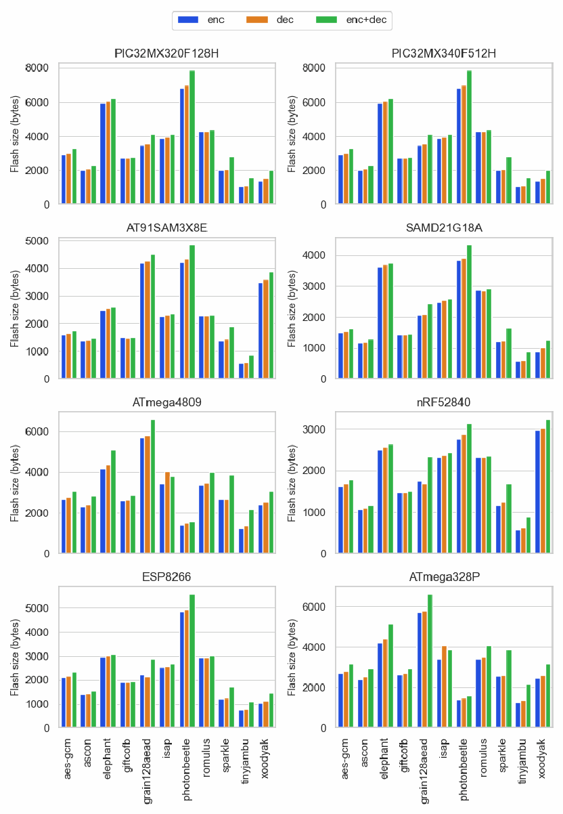
8つの区画（マイコンごと：PIC32MX320F128H、PIC32MX340F512H、AT91SAM3X8E、SAMD21G18A、ATmega4809、nRF52840、ESP8266、ATmega328P）からなる集合棒グラフです。縦軸は「Flash size (bytes)」です。aes-gcm、ascon、elephant、giftcofb、grain128aead、isap、photonbeetle、romulus、sparkle、tinyjambu、xoodyak のそれぞれに enc（青）、dec（橙）、enc+dec（緑）の3本の棒があります。棒に数値は記されていません。
Fig. 5. Minimum flash size used by primary AEAD variants
図 5. AEAD の主要バリアントが使用する最小フラッシュサイズ
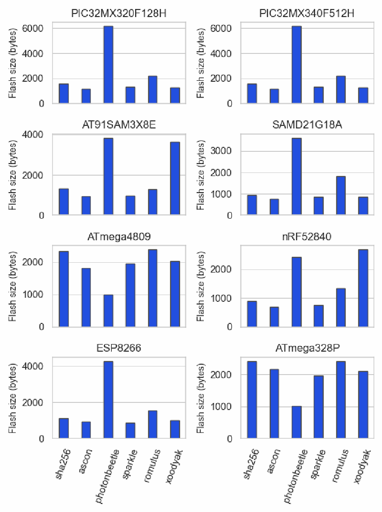
8つの区画（マイコンごと：PIC32MX320F128H、PIC32MX340F512H、AT91SAM3X8E、SAMD21G18A、ATmega4809、nRF52840、ESP8266、ATmega328P）からなる棒グラフです。縦軸は「Flash size (bytes)」で、sha256、ascon、photonbeetle、sparkle、romulus、xoodyak の棒が1本ずつあります。棒に数値は記されていません。
Fig. 6. Minimum flash size used by primary hashing variants
図 6. ハッシュの主要バリアントが使用する最小フラッシュサイズ
![Heatmap titled “Flash size (bytes) for smallest combined implementations”. Rows (“Microcontroller”): AT91SAM3X8E, ATmega328P, ATmega4809, ESP8266, PIC32MX320F128H, PIC32MX340F512H, SAMD21G18A, nRF52840. Columns: ascon128 + asconhash, ascon128a + asconhasha, isapa128a + asconhasha, photon-beetle-AEAD[128] + photon-beetle-hash[32], photon-beetle-AEAD[32] + photon-beetle-hash[32], romulusm + romulush, romulusn + romulush, romulust + romulush, schwaemm192-192 + esch256, schwaemm256-128 + esch256, schwaemm256-256 + esch384, xoodyak. Color scale from yellow (2000) to red (16000). Values in column order — AT91SAM3X8E: 1816, 1900, 3720, 9268, 9268, 3668, 2664, 2952, 16200, 16468, 16564, 4328; ATmega328P: 3086, 3406, 3358, 1814, 1812, 8970, 5284, 7422, 10484, 11234, 11898, 3136; ATmega4809: 3038, 3262, 3310, 1810, 1808, 8854, 5146, 7284, 10436, 11186, 11850, 3098; ESP8266: 1924, 2072, 2932, 7212, 7180, 4400, 3520, 3840, 2852, 3028, 3428, 1760; PIC32MX320F128H: 2792, 3016, 6184, 12216, 12192, 6352, 4992, 5464, 4044, 4320, 4788, 2440; PIC32MX340F512H: 2792, 3016, 6184, 12216, 12192, 6352, 4992, 5464, 4044, 4320, 4788, 2440; SAMD21G18A: 1504, 1808, 3984, 6160, 6100, 4048, 3328, 3456, 2304, 2520, 2788, 1432; nRF52840: 1496, 1608, 3404, 3364, 3316, 3824, 2704, 3056, 16008, 16296, 16328, 4120.](assets/ir-8454/p0107-figure-01.png)
ヒートマップ。表題は「Flash size (bytes) for smallest combined implementations」です。行（「Microcontroller」）は AT91SAM3X8E、ATmega328P、ATmega4809、ESP8266、PIC32MX320F128H、PIC32MX340F512H、SAMD21G18A、nRF52840、列は ascon128 + asconhash、ascon128a + asconhasha、isapa128a + asconhasha、photon-beetle-AEAD[128] + photon-beetle-hash[32]、photon-beetle-AEAD[32] + photon-beetle-hash[32]、romulusm + romulush、romulusn + romulush、romulust + romulush、schwaemm192-192 + esch256、schwaemm256-128 + esch256、schwaemm256-256 + esch384、xoodyak です。色の尺度は黄（2000）から赤（16000）までです。値（列の順）は次のとおりです。AT91SAM3X8E: 1816, 1900, 3720, 9268, 9268, 3668, 2664, 2952, 16200, 16468, 16564, 4328。ATmega328P: 3086, 3406, 3358, 1814, 1812, 8970, 5284, 7422, 10484, 11234, 11898, 3136。ATmega4809: 3038, 3262, 3310, 1810, 1808, 8854, 5146, 7284, 10436, 11186, 11850, 3098。ESP8266: 1924, 2072, 2932, 7212, 7180, 4400, 3520, 3840, 2852, 3028, 3428, 1760。PIC32MX320F128H: 2792, 3016, 6184, 12216, 12192, 6352, 4992, 5464, 4044, 4320, 4788, 2440。PIC32MX340F512H: 2792, 3016, 6184, 12216, 12192, 6352, 4992, 5464, 4044, 4320, 4788, 2440。SAMD21G18A: 1504, 1808, 3984, 6160, 6100, 4048, 3328, 3456, 2304, 2520, 2788, 1432。nRF52840: 1496, 1608, 3404, 3364, 3316, 3824, 2704, 3056, 16008, 16296, 16328, 4120。
Fig. 7. Flash size used by smallest combined AEAD and hashing implementations on each MCU.
図 7. 各 MCU 上で最小の AEAD とハッシュを合わせた実装が使用するフラッシュサイズ
B.4. Time vs. Size Explorations
B.4. 時間とサイズの検討
To gain insight into implementation trade-offs, the AEAD implementation’s encryption time and its flash size requirements were compared. An implementation’s hashing time and flash size requirements were also compared, where applicable.
実装のトレードオフに関する知見を得るために、AEAD 実装の暗号化時間とそのフラッシュサイズ要件を比較しました。該当する場合は、実装のハッシュ時間とフラッシュサイズ要件も比較しました。
The timing metrics varied by platform. A summary of the timer function and metric used for each microcontroller4 is provided in Table 15. The SysTick timer used a 24-bit register and experienced underflows while timing cryptographic operations. To account for this, the cycle counts returned by the platform were adjusted. For example, consider two messages with lengths \(m\) and \(m+8\) that are both encrypted with the same AD. If the cycle count for the larger message is less than the count for the shorter message, an underflow may have occurred. There were instances where this was true but an underflow did not appear to be present (e.g., at a boundary where less padding was needed), so a range of cycle counts was considered where no adjustment was made if the lower cycle count was within the given range. Results presented here use a 500-cycle range for AEAD and 5000-cycle range for hashing.
タイミングの指標はプラットフォームによって異なりました。各マイクロコントローラ4で使用したタイマー関数と指標の要約を表 15 に示します。SysTick タイマーは 24 ビットのレジスタを使用しており、暗号演算の計時中にアンダーフローが発生しました。これに対処するため、プラットフォームが返すサイクル数を調整しました。たとえば、同じ AD で暗号化される、長さ \(m\) と \(m+8\) の2つのメッセージを考えます。長いメッセージのサイクル数が短いメッセージのサイクル数より小さい場合、アンダーフローが発生した可能性があります。これが当てはまるのにアンダーフローがないように見える場合（たとえば、必要なパディングが少なくなる境界）もあったため、サイクル数が小さい方が所与の範囲内にあれば調整を行わないよう、サイクル数の範囲を考慮しました。ここに示す結果では、AEAD には 500 サイクルの範囲を、ハッシュには 5000 サイクルの範囲を使用しています。
Table 15. Timers and timing metrics used in NIST benchmarks
表 15. NIST のベンチマークで使用したタイマーとタイミング指標
| Microcontroller | Timer | Timing metric |
|---|---|---|
| ATmega328P | micros | microseconds |
| ATmega4809 | micros | microseconds |
| SAMD21G18A | SysTick | cycles |
| nRF52840 | RTC | cycles |
| PIC32MX340F512H | micros | microseconds |
| ESP8266 | RTC | cycles |
| AT91SAM3X8E | micros | microseconds |
| マイクロコントローラ | タイマー | タイミング指標 |
|---|---|---|
| ATmega328P | micros | マイクロ秒 |
| ATmega4809 | micros | マイクロ秒 |
| SAMD21G18A | SysTick | サイクル |
| nRF52840 | RTC | サイクル |
| PIC32MX340F512H | micros | マイクロ秒 |
| ESP8266 | RTC | サイクル |
| AT91SAM3X8E | micros | マイクロ秒 |
ASCON. ASCON demonstrated favorable performance compared to current NIST standards, AES-GCM and SHA-2. ASCON implementations were able to encrypt and decrypt significantly faster than similarly sized AES-GCM implementations, as well as achieve smaller times than the fastest tested AES-GCM implementations (Figure 8a). The variants of ASCON that provide hash and XOF functionalities also performed well when compared with SHA-256. In particular, hashing was performed faster when ASCON and SHA-256 implementations had similar flash requirements (Figure 8b).
ASCON。ASCON は、現行の NIST 標準である AES-GCM および SHA-2 と比べて良好な性能を示しました。ASCON の実装は、同程度のサイズの AES-GCM 実装よりも大幅に高速に暗号化と復号を行うことができ、テストした AES-GCM 実装のうち最速のものよりも短い時間で処理できました（図 8a）。ハッシュと XOF の機能を提供する ASCON のバリアントも、SHA-256 と比較して良好な性能を示しました。特に、ASCON と SHA-256 の実装のフラッシュ要件が同程度の場合に、ハッシュはより高速に実行されました（図 8b）。
Elephant. The smallest implementations of Elephant’s primary variant were larger than those of AES-GCM, and Elephant generally did not demonstrate performance advantages when its size was very close to the smallest AES-GCM implementations. However, the implementations of the KECCAK-based Delirium variant outperformed the primary variant, Dumbo, in terms of flash size and encryption speed. Delirium was the only variant of Elephant that demonstrated lower flash usage for similar speeds and a significant speedup over AES-GCM with a moderate increase of flash memory (see Figure 9).
Elephant。Elephant の主要バリアントの最小の実装は AES-GCM の最小の実装より大きく、Elephant は一般に、最小の AES-GCM 実装にサイズが非常に近い場合に性能上の優位性を示しませんでした。ただし、KECCAK ベースの Delirium バリアントの実装は、フラッシュサイズと暗号化速度の点で、主要バリアントの Dumbo を上回りました。Delirium は、同程度の速度でフラッシュ使用量が少なく、フラッシュメモリの適度な増加で AES-GCM に対して大幅な高速化を示した、Elephant の唯一のバリアントでした（図 9 を参照）。
GIFT-COFB. There were implementations of GIFT-COFB that required less time than AES-GCM implementations of similar size on all boards. Further, encryption with GIFT-COFB took less time than the fastest AES-GCM implementations. However, GIFT-COFB implementations that had similar size requirements to the smallest AES-GCM implementations were slower on the two AVR-based MCUs (see Figure 10).
GIFT-COFB。すべてのボードで、同程度のサイズの AES-GCM 実装より短い時間で済む GIFT-COFB の実装がありました。さらに、GIFT-COFB による暗号化は、最速の AES-GCM 実装よりも短い時間で済みました。ただし、最小の AES-GCM 実装と同程度のサイズ要件を持つ GIFT-COFB の実装は、2つの AVR ベースの MCU では低速でした（図 10 を参照）。
Grain-128AEAD. None of the benchmarked implementations of Grain-128AEAD were more compact than the smallest AES-GCM implementation on the tested platforms. When considering implementations most similar in size, some Grain-128AEAD implementations demonstrated faster encryption times (see Figure 11).
Grain-128AEAD。ベンチマークした Grain-128AEAD の実装のうち、テストしたプラットフォームで最小の AES-GCM 実装よりコンパクトなものはありませんでした。サイズが最も近い実装を比較すると、一部の Grain-128AEAD 実装では暗号化時間が短くなりました（図 11 を参照）。
ISAP. Figure 12 shows that ISAP implementations had a large range of flash sizes, with most executables using far more flash than AES-GCM. The only variant that was competitive with AES-GCM was the primary variant, where performance advantages could only be seen when the smallest implementations of AES-GCM and ISAP were compared.
ISAP。図 12 は、ISAP の実装のフラッシュサイズが広い範囲に及び、ほとんどの実行可能ファイルが AES-GCM よりはるかに多くのフラッシュを使用していることを示しています。AES-GCM と競争力があった唯一のバリアントは主要バリアントで、性能上の優位性が見られたのは、AES-GCM と ISAP の最小の実装を比較した場合だけでした。
PHOTON-Beetle. PHOTON-Beetle implementations performed best on the two AVR platforms, ATmega4809 and ATmega328P, but did not perform well compared to AES-GCM on all other tested platforms. Figure 13 provides an example of the tradeoff space disparities between AVR and non-AVR platforms. There are several instances in Figure 13a showing that PHOTON-Beetle had smaller implementations, as well as faster encryption than AES-GCM for implementations of similar size. However, there are no implementations smaller than AES-GCM in Figure 13b, and none of the implementations are faster than all AES-GCM implementations of similar size. PHOTON-Beetle-Hash[32] did not show performance advantages over SHA-256.
PHOTON-Beetle。PHOTON-Beetle の実装は、2つの AVR プラットフォーム、ATmega4809 と ATmega328P で最も良い性能を示しましたが、他のすべてのテストプラットフォームでは AES-GCM と比べて良い性能ではありませんでした。図 13 は、AVR と非 AVR のプラットフォーム間のトレードオフ空間の相違の例を示しています。図 13a には、同程度のサイズの実装について、PHOTON-Beetle がより小さい実装と、AES-GCM より高速な暗号化を示した例が複数あります。しかし、図 13b には AES-GCM より小さい実装はなく、同程度のサイズのすべての AES-GCM 実装より高速な実装もありません。PHOTON-Beetle-Hash[32] は、SHA-256 に対する性能上の優位性を示しませんでした。
Romulus. Several implementations of Romulus-N demonstrated faster encryption times compared to AES-GCM implementations with similar size. This can be seen in Figure 14a when the flash use exceeded 7000 bytes. Romulus also demonstrated more compact implementations compared to AES-GCM implementations that had similar speed. Romulus-M implementations were larger and/or slower than those of Romulus-N, but were still competitive. Romulus-H implementations did not demonstrate performance advantages over SHA-256 implementations.
Romulus。Romulus-N のいくつかの実装は、同程度のサイズの AES-GCM 実装と比べて、より短い暗号化時間を示しました。これは、図 14a で、フラッシュ使用量が 7000 バイトを超えた場合に見られます。Romulus はまた、同程度の速度の AES-GCM 実装と比べて、よりコンパクトな実装を示しました。Romulus-M の実装は Romulus-N の実装より大きいか低速、またはその両方でしたが、それでも競争力がありました。Romulus-H の実装は、SHA-256 の実装に対する性能上の優位性を示しませんでした。
SPARKLE. Implementations for all variants of SCHWAEMM showed performance advantages over AES-GCM. Implementations of ESCH256 were generally competitive with those of SHA-2. The speed of compact hash implementations was particularly favorable on AVR platforms.
SPARKLE。SCHWAEMM のすべてのバリアントの実装が、AES-GCM に対する性能上の優位性を示しました。ESCH256 の実装は、一般に SHA-2 の実装と競争力がありました。コンパクトなハッシュ実装の速度は、AVR プラットフォームで特に良好でした。
TinyJAMBU. All variants of TinyJAMBU demonstrated implementations that were significantly faster than AES-GCM. Further, there were implementations for all variants that were simultaneously smaller and faster than AES-GCM (see Figure 16a) on all but the AVR platforms, where timing information for the smallest implementations was not available. In many cases on AVR platforms the decrypted ciphertext did not match the plaintext and AD and the results were omitted from further processing. This effect was limited to the AVR platforms and the same source code was successfully compiled and executed on the other platforms. The implementations that did run correctly were all significantly faster than AES-GCM implementations with similar size, as shown in Figure 16b.
TinyJAMBU。TinyJAMBU のすべてのバリアントが、AES-GCM よりも大幅に高速な実装を示しました。さらに、AVR 以外のすべてのプラットフォーム（図 16a を参照）では、すべてのバリアントに、AES-GCM より小さく、かつ高速な実装がありました。AVR プラットフォームでは、最小の実装のタイミング情報は得られませんでした。AVR プラットフォームでは多くの場合、復号された暗号文が平文および AD と一致せず、その結果はその後の処理から除外されました。この影響は AVR プラットフォームに限られ、同じソースコードは他のプラットフォームでは正常にコンパイルされ実行されました。正しく動作した実装は、図 16b に示すように、同程度のサイズの AES-GCM 実装よりいずれも大幅に高速でした。
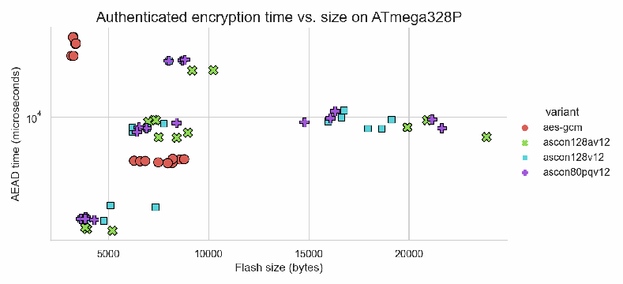
散布図。表題は「ATmega328P における認証暗号化時間とサイズ」です。横軸は「フラッシュサイズ（バイト）」、縦軸は対数目盛の「AEAD 時間（マイクロ秒）」です。凡例「バリアント」は aes-gcm、ascon128av12、ascon128v12、ascon80pqv12 です。各点は1つの実装で、点に数値は記されていません。
(a) Authenticated encryption time vs. size with 16-byte AD and 16-byte message
(a) 16バイトの AD と16バイトのメッセージにおける認証暗号化の時間とサイズ
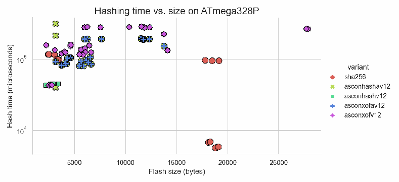
散布図。表題は「ATmega328P におけるハッシュ時間とサイズ」です。横軸は「フラッシュサイズ（バイト）」、縦軸は対数目盛の「ハッシュ時間（マイクロ秒）」です。凡例「バリアント」は sha256、asconhashav12、asconhashv12、asconxofav12、asconxofv12 です。各点は1つの実装で、点に数値は記されていません。
(b) Hashing time vs. size for 512-byte message
(b) 512バイトのメッセージにおけるハッシュの時間とサイズ
Fig. 8. Execution time vs. size explorations for ASCON
図 8. ASCON の実行時間とサイズの検討
Xoodyak. Xoodyak implementations were generally able to achieve faster encryption speeds than AES-GCM, but were not able to demonstrate more compact implementations on all test platforms (see Figure 17). On AVR platforms, this was reversed – implementations were smaller, but not faster. Faster hashing than SHA-2 was demonstrated for most platforms.
Xoodyak。Xoodyak の実装は、一般に AES-GCM よりも高速な暗号化速度を達成できましたが、すべてのテストプラットフォームでよりコンパクトな実装を示すことはできませんでした（図 17 を参照）。AVR プラットフォームでは、これが逆になり、実装は小さいものの、高速ではありませんでした。SHA-2 よりも高速なハッシュは、ほとんどのプラットフォームで示されました。
B.5. Execution Time Comparison
B.5. 実行時間の比較
The NIST benchmarking effort compared the speed of encryption and decryption with various AD and message lengths. The fastest and smallest implementations for each candidate were compared to the fastest and smallest tested implementations of AES-GCM, respectively.
NIST のベンチマークの取り組みでは、さまざまな AD 長とメッセージ長での暗号化と復号の速度を比較しました。各候補の最速および最小の実装を、それぞれ、テストした AES-GCM の最速および最小の実装と比較しました。
Determining the smallest implementation for each variant is straightforward – it is simply the executable using the least flash that successfully completed the timing experiment. Results for the smallest implementations are summarized as heatmaps in Figures 18 - 25. The relative size of the implementation compared to the smallest AES-GCM implementation appears beside the submission name in each heatmap title.
各バリアントの最小の実装を決定するのは簡単で、タイミング実験を正常に完了した実行可能ファイルのうち、使用するフラッシュが最も少ないものです。最小の実装の結果は、図 18 から図 25 のヒートマップにまとめています。最小の AES-GCM 実装と比較した実装の相対サイズは、各ヒートマップのタイトルの提出物名の横に示されています。
Results for the fastest implementations are summarized as heatmaps in Figures 26 - 33. Note that results presented in these Figures may contain data from multiple implementations, as the fastest implementation varied depending on the input sizes.
最速の実装の結果は、図 26 から図 33 のヒートマップにまとめています。最速の実装は入力サイズによって異なるため、これらの図に示す結果には複数の実装のデータが含まれる場合があることに注意してください。
The heatmaps compare the encryption times of the finalists to that of AES-GCM for various message and AD sizes. The value in each cell represents an execution time ratio, calculated by dividing the authenticated encryption time of the finalists by that of AES-GCM for the given input sizes. Unlike the results presented in Figure 3, smaller values are better. Each cell is also colored relative to this value with Matplotlib’s seismic palette, where blue indicates that the candidate is faster than AES-GCM.
ヒートマップは、さまざまなメッセージサイズと AD サイズについて、最終候補の暗号化時間を AES-GCM の暗号化時間と比較しています。各セルの値は実行時間比を表し、所与の入力サイズについて、最終候補の認証暗号化時間を AES-GCM の認証暗号化時間で割って算出しています。図 3 に示した結果とは異なり、値が小さいほど良好です。各セルには、この値に対応して Matplotlib の seismic パレットで色が付けられており、青は候補が AES-GCM より高速であることを示します。
ASCON. ASCON demonstrated clear speed advantages in these experiments. The fastest implementation of ASCON on the ESP8266 platform was the only case where AES-GCM is faster (see Figure 33), but it should be noted that the fastest AES-GCM implementations were much larger than the fastest ASCON implementations. The smallest implementation heatmap from the same platform showed a far different picture, where ASCON demonstrated 25x and 33x speedups over AES-GCM, depending on the input sizes, while using less flash memory (see Figure 25).
ASCON。ASCON は、これらの実験で明確な速度上の優位性を示しました。ESP8266 プラットフォームでの ASCON の最速実装は、AES-GCM のほうが高速だった唯一の例ですが（図 33 を参照）、最速の AES-GCM 実装は最速の ASCON 実装よりはるかに大きかったことに注意が必要です。同じプラットフォームでの最小の実装のヒートマップは、まったく異なる状況を示しており、ASCON は、入力サイズに応じて AES-GCM に対して25倍と33倍の高速化を示しながら、使用するフラッシュメモリは少なくなっていました（図 25 を参照）。
Elephant. Elephant was slower than AES-GCM in most cases. The relative execution time of the smallest implementation was favorable on three platforms, but with increased flash usage. The most favorable relative execution times were obtained on the ATmega328P using an implementation that was about 54.6% larger than the smallest AES-GCM implementation (see Figure 19).
Elephant。Elephant は、ほとんどの場合で AES-GCM より低速でした。最小の実装の相対実行時間は3つのプラットフォームで良好でしたが、フラッシュ使用量は増加していました。最も良好な相対実行時間は、最小の AES-GCM 実装より約54.6%大きい実装を用いた ATmega328P で得られました（図 19 を参照）。
GIFT-COFB. Timing results for GIFT-COFB were generally favorable. The smallest implementations of GIFT-COFB were faster than AES-GCM on five of the eight platforms (Figures 21 – 25), while the fastest implementations showed faster encryption on seven platforms (Figures 26 – 32).
GIFT-COFB。GIFT-COFB のタイミング結果は、おおむね良好でした。GIFT-COFB の最小の実装は8つのプラットフォームのうち5つで AES-GCM より高速であり（図 21 から図 25）、最速の実装は7つのプラットフォームでより高速な暗号化を示しました（図 26 から図 32）。
Grain-128AEAD. Grain-128AEAD did well for the smallest implementations, where its relative execution time was favorable on seven platforms. It should be noted, however, that these implementations were also larger than AES-GCM. The fastest implementations did not clearly demonstrate speed advantages.
Grain-128AEAD。Grain-128AEAD は最小の実装で良い成績を収め、相対実行時間は7つのプラットフォームで良好でした。ただし、これらの実装も AES-GCM より大きかったことに注意が必要です。最速の実装は、速度上の優位性を明確には示しませんでした。
ISAP. ISAP generally had speed advantages for smaller implementations, with better performance as AD and message sizes increased. All of these ISAP implementations were larger than the AES-GCM implementations.
ISAP。ISAP は一般に、小さい実装で速度上の優位性があり、AD とメッセージのサイズが大きくなるほど性能が向上しました。これらの ISAP 実装はいずれも、AES-GCM の実装より大きいものでした。
PHOTON-Beetle. The smallest implementations of PHOTON-Beetle demonstrated favorable relative execution times on all platforms, sometimes at the cost of much larger implementations. The fastest implementations only demonstrated performance advantages on the tested AVR platforms (Figures 26 and 27).
PHOTON-Beetle。PHOTON-Beetle の最小の実装は、すべてのプラットフォームで良好な相対実行時間を示しましたが、実装がはるかに大きくなる代償を伴う場合もありました。最速の実装が性能上の優位性を示したのは、テストした AVR プラットフォームのみでした（図 26 と図 27）。
Romulus. Encryption with the smallest implementations of Romulus was generally faster than AES-GCM in Figures 23-25 and slower in Figures 18-20. Relative execution times were noticeably worse for empty AD and best when the lengths of AD and message were either 8 bytes or 16 bytes. In addition, the smallest implementations of Romulus were larger than the smallest implementations of AES-GCM. The fastest implementations generally outperformed AES-GCM on three of the test platforms.
Romulus。Romulus の最小の実装による暗号化は、図 23 から図 25 では一般に AES-GCM より高速で、図 18 から図 20 では低速でした。相対実行時間は、AD が空の場合に明らかに悪化し、AD とメッセージの長さがどちらも8バイトまたは16バイトの場合に最良でした。さらに、Romulus の最小の実装は、AES-GCM の最小の実装より大きいものでした。最速の実装は、テストプラットフォームのうち3つで、一般に AES-GCM を上回りました。
SPARKLE. The smallest SPARKLE implementations outperformed AES-GCM in both speed and size. The fastest implementations showed favorable relative execution time on all platforms except the ESP8266, where SPARKLE was slower for some of the inputs. The difference in performance, visible in Figure 33, arises due to different SPARKLE implementations being fastest for particular input lengths.
SPARKLE。SPARKLE の最小の実装は、速度とサイズの両方で AES-GCM を上回りました。最速の実装は、ESP8266 を除くすべてのプラットフォームで良好な相対実行時間を示しました。ESP8266 では、一部の入力で SPARKLE のほうが低速でした。図 33 に見られるこの性能の差は、特定の入力長ごとに異なる SPARKLE 実装が最速になることから生じます。
TinyJAMBU. TinyJAMBU demonstrated clear speed advantages over AES-GCM in all tested cases.
TinyJAMBU。TinyJAMBU は、テストしたすべてのケースで AES-GCM に対する明確な速度上の優位性を示しました。
Xoodyak. The smallest Xoodyak implementations demonstrated speed advantages over AES-GCM. However, Xoodyak did not outperform AES-GCM for all input sizes when its code was smaller than that of AES-GCM (shown in Figures 18 and 19). The fastest implementations generally had favorable relative execution times, with the exception of the ATmega4809 (see Figure 26).
Xoodyak。Xoodyak の最小の実装は、AES-GCM に対する速度上の優位性を示しました。ただし、Xoodyak は、コードが AES-GCM より小さい場合（図 18 と図 19 に示す）、すべての入力サイズで AES-GCM を上回ったわけではありませんでした。最速の実装は、ATmega4809 を除いて、一般に良好な相対実行時間を持っていました（図 26 を参照）。
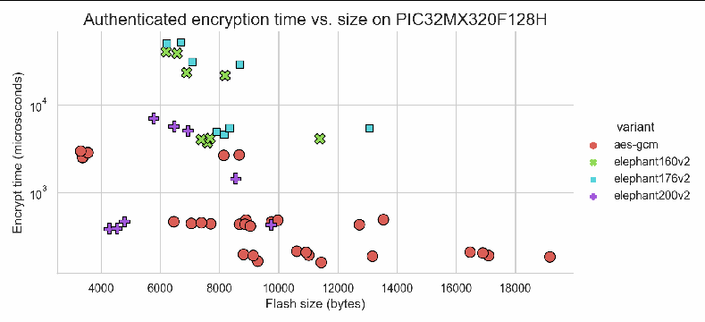
散布図。表題は「PIC32MX320F128H における認証暗号化時間とサイズ」です。横軸は「フラッシュサイズ（バイト）」、縦軸は対数目盛の「暗号化時間（マイクロ秒）」です。凡例「バリアント」は aes-gcm、elephant160v2、elephant176v2、elephant200v2 です。各点は1つの実装で、点に数値は記されていません。
Fig. 9. Authenticated encryption time vs. size exploration for Elephant with 16-byte AD and 16-byte message
図 9. 16バイトの AD と16バイトのメッセージにおける Elephant の認証暗号化の時間とサイズの検討
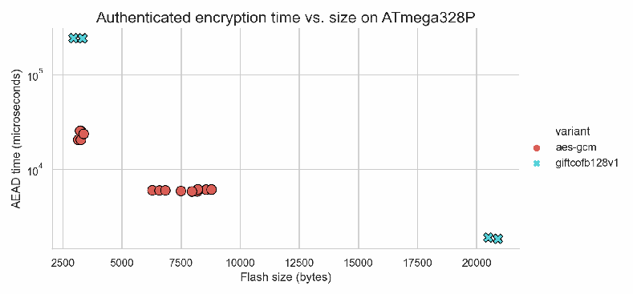
散布図。表題は「ATmega328P における認証暗号化時間とサイズ」です。横軸は「フラッシュサイズ（バイト）」、縦軸は対数目盛の「AEAD 時間（マイクロ秒）」です。凡例「バリアント」は aes-gcm、giftcofb128v1 です。各点は1つの実装で、点に数値は記されていません。
Fig. 10. Authenticated encryption time vs. size exploration for GIFT-COFB with 16-byte AD and 16-byte message
図 10. 16バイトの AD と16バイトのメッセージにおける GIFT-COFB の認証暗号化の時間とサイズの検討
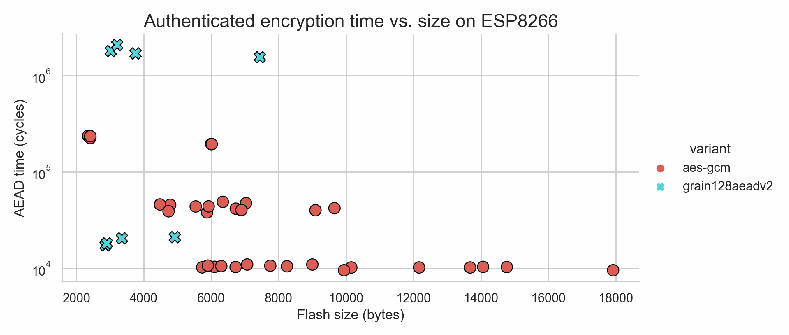
散布図。表題は「Authenticated encryption time vs. size on ESP8266」です。横軸は「Flash size (bytes)」、縦軸は対数目盛の「AEAD time (cycles)」です。凡例「variant」は aes-gcm、grain128aeadv2 です。各点は1つの実装で、点に数値は記されていません。
Fig. 11. Authenticated encryption time vs. size exploration for Grain-128AEAD with 16-byte AD and 16-byte message
図 11. 16バイトの AD と16バイトのメッセージにおける Grain-128AEAD の認証暗号化の時間とサイズの検討
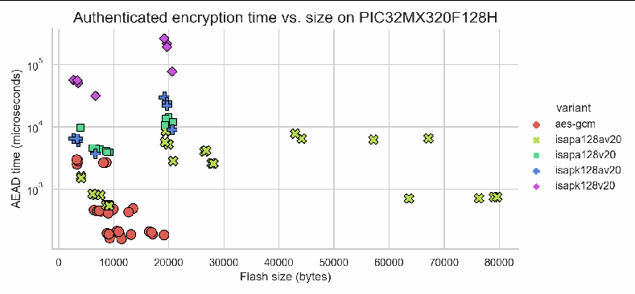
散布図。表題は「Authenticated encryption time vs. size on PIC32MX320F128H」です。横軸は「Flash size (bytes)」、縦軸は対数目盛の「AEAD time (microseconds)」です。凡例「variant」は aes-gcm、isapa128av20、isapa128v20、isapk128av20、isapk128v20 です。各点は1つの実装で、点に数値は記されていません。
Fig. 12. Authenticated encryption time vs. size exploration for ISAP with 16-byte AD and 16-byte message
図 12. 16バイトの AD と16バイトのメッセージにおける ISAP の認証暗号化の時間とサイズの検討
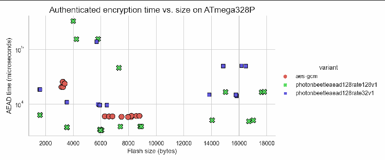
散布図。表題は「Authenticated encryption time vs. size on ATmega328P」です。横軸は「Flash size (bytes)」、縦軸は対数目盛の「AEAD time (microseconds)」です。凡例「variant」は aes-gcm、photonbeetleaead128rate128v1、photonbeetleaead128rate32v1 です。各点は1つの実装で、点に数値は記されていません。
(a) Authenticated encryption time vs. size with with 16-byte AD and 16-byte message on AVR platform
(a) AVR プラットフォームでの、16バイトの AD と16バイトのメッセージにおける認証暗号化の時間とサイズ
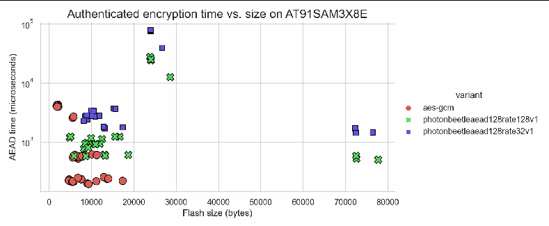
散布図。表題は「Authenticated encryption time vs. size on AT91SAM3X8E」です。横軸は「Flash size (bytes)」、縦軸は対数目盛の「AEAD time (microseconds)」です。凡例「variant」は aes-gcm、photonbeetleaead128rate128v1、photonbeetleaead128rate32v1 です。各点は1つの実装で、点に数値は記されていません。
(b) Authenticated encryption time vs. size with with 16-byte AD and 16-byte message on ARM platform
(b) ARM プラットフォームでの、16バイトの AD と16バイトのメッセージにおける認証暗号化の時間とサイズ
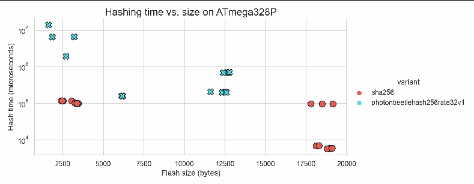
散布図。表題は「Hashing time vs. size on ATmega328P」です。横軸は「Flash size (bytes)」、縦軸は対数目盛の「Hash time (microseconds)」です。凡例「variant」は sha256、photonbeetlehash256rate32v1 です。各点は1つの実装で、点に数値は記されていません。
(c) Hash time vs. size with with 512-byte message on AVR platform
(c) AVR プラットフォームでの、512バイトのメッセージにおけるハッシュの時間とサイズ
Fig. 13. Execution time vs. size exploration for PHOTON-Beetle
図 13. PHOTON-Beetle の実行時間とサイズの検討
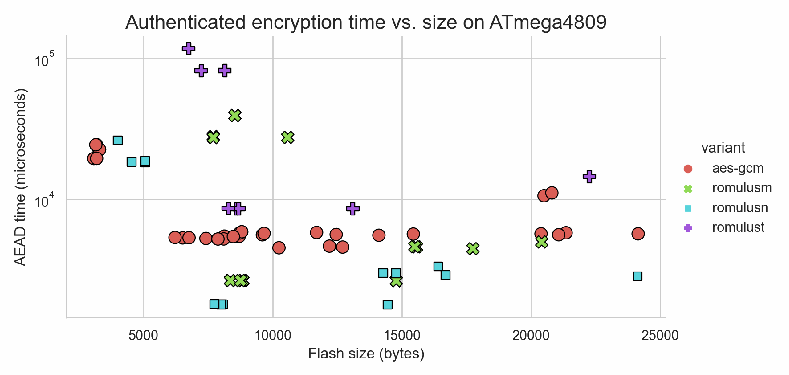
散布図。表題は「Authenticated encryption time vs. size on ATmega4809」です。横軸は「Flash size (bytes)」、縦軸は対数目盛の「AEAD time (microseconds)」です。凡例「variant」は aes-gcm、romulusm、romulusn、romulust です。各点は1つの実装で、点に数値は記されていません。
(a) Authenticated encryption time vs. size with 16-byte AD and 16-byte message
(a) 16バイトの AD と16バイトのメッセージにおける認証暗号化の時間とサイズ
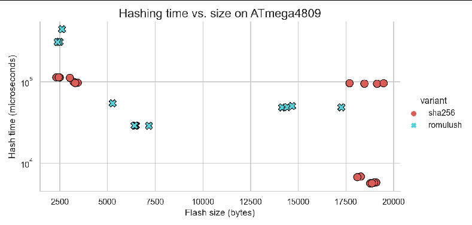
散布図。表題は「Hashing time vs. size on ATmega4809」です。横軸は「Flash size (bytes)」、縦軸は対数目盛の「Hash time (microseconds)」です。凡例「variant」は sha256、romulush です。各点は1つの実装で、点に数値は記されていません。
(b) Hashing time vs. size with 512-byte message
(b) 512バイトのメッセージにおけるハッシュの時間とサイズ
Fig. 14. Execution time vs. size exploration for Romulus
図 14. Romulus の実行時間とサイズの検討
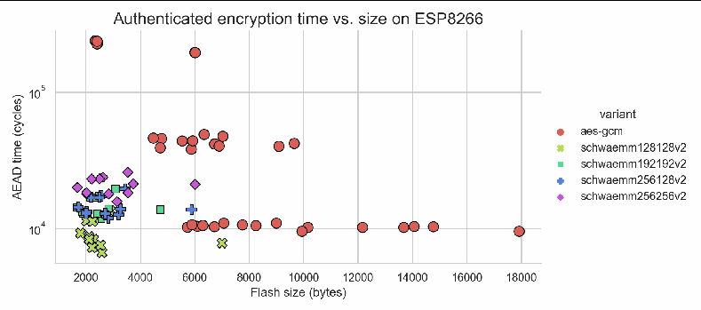
散布図。表題は「Authenticated encryption time vs. size on ESP8266」です。横軸は「Flash size (bytes)」、縦軸は対数目盛の「AEAD time (cycles)」です。凡例「variant」は aes-gcm、schwaemm128128v2、schwaemm192192v2、schwaemm256128v2、schwaemm256256v2 です。各点は1つの実装で、点に数値は記されていません。
(a) Authenticated encryption time vs. size with 16-byte AD and 16-byte message
(a) 16バイトの AD と16バイトのメッセージにおける認証暗号化の時間とサイズ
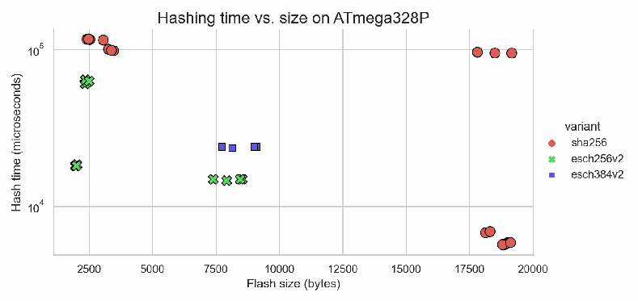
散布図。表題は「Hashing time vs. size on ATmega328P」です。横軸は「Flash size (bytes)」、縦軸は対数目盛の「Hash time (microseconds)」です。凡例「variant」は sha256、esch256v2、esch384v2 です。各点は1つの実装で、点に数値は記されていません。
(b) Hashing time vs. size with 512-byte message
(b) 512バイトのメッセージにおけるハッシュの時間とサイズ
Fig. 15. Execution time vs. size exploration for SPARKLE
図 15. SPARKLE の実行時間とサイズの検討
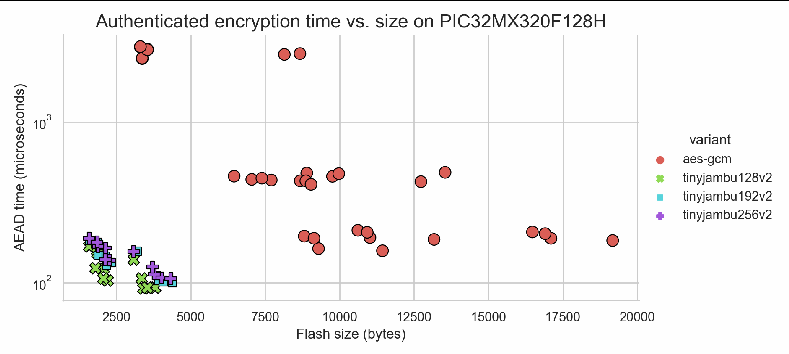
散布図。表題は「Authenticated encryption time vs. size on PIC32MX320F128H」です。横軸は「Flash size (bytes)」、縦軸は対数目盛の「AEAD time (microseconds)」です。凡例「variant」は aes-gcm、tinyjambu128v2、tinyjambu192v2、tinyjambu256v2 です。各点は1つの実装で、点に数値は記されていません。
(a) TinyJAMBU variants on MIPS-based MCU
(a) MIPS ベースの MCU での TinyJAMBU バリアント
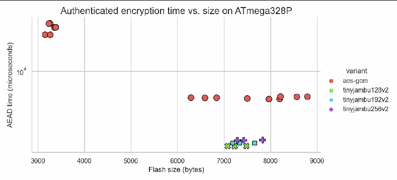
散布図。表題は「Authenticated encryption time vs. size on ATmega328P」です。横軸は「Flash size (bytes)」、縦軸は対数目盛の「AEAD time (microseconds)」です。凡例「variant」は aes-gcm、tinyjambu128v2、tinyjambu192v2、tinyjambu256v2 です。各点は1つの実装で、点に数値は記されていません。
(b) TinyJAMBU variants on AVR-based MCU
(b) AVR ベースの MCU での TinyJAMBU バリアント
Fig. 16. Authenticated encryption time vs. size exploration for TinyJAMBU with 16-byte AD and 16-byte message
図 16. 16バイトの AD と16バイトのメッセージにおける TinyJAMBU の認証暗号化の時間とサイズの検討
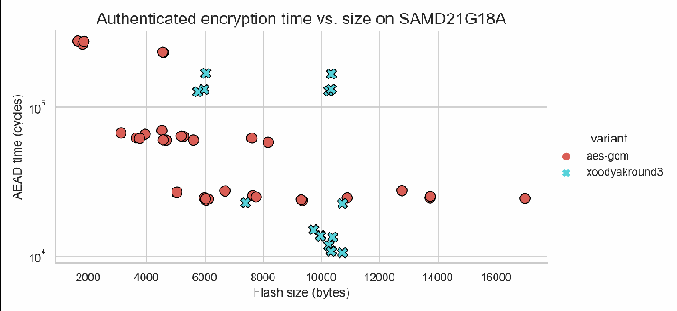
散布図。表題は「Authenticated encryption time vs. size on SAMD21G18A」です。横軸は「Flash size (bytes)」、縦軸は対数目盛の「AEAD time (cycles)」です。凡例「variant」は aes-gcm、xoodyakround3 です。各点は1つの実装で、点に数値は記されていません。
(a) Authenticated encryption time vs. size with 16-byte AD and 16-byte message on an ARM platform
(a) ARM プラットフォームでの、16バイトの AD と16バイトのメッセージにおける認証暗号化の時間とサイズ
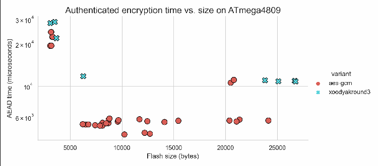
散布図。表題は「Authenticated encryption time vs. size on ATmega4809」です。横軸は「Flash size (bytes)」、縦軸は対数目盛の「AEAD time (microseconds)」です。凡例「variant」は aes-gcm、xoodyakround3 です。各点は1つの実装で、点に数値は記されていません。
(b) Authenticated encryption time vs. size with 16-byte AD and 16-byte message on an AVR platform
(b) AVR プラットフォームでの、16バイトの AD と16バイトのメッセージにおける認証暗号化の時間とサイズ
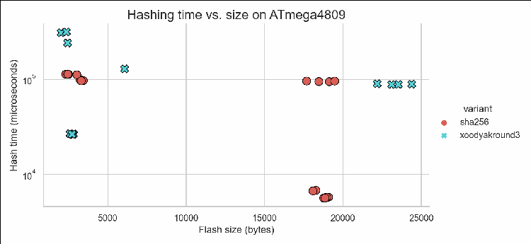
散布図。表題は「Hashing time vs. size on ATmega4809」です。横軸は「Flash size (bytes)」、縦軸は対数目盛の「Hash time (microseconds)」です。凡例「variant」は sha256、xoodyakround3 です。各点は1つの実装で、点に数値は記されていません。
(c) Hashing time vs. size with 512-byte message on an AVR platform
(c) AVR プラットフォームでの、512バイトのメッセージにおけるハッシュの時間とサイズ
Fig. 17. Execution time vs. size exploration for Xoodyak
図 17. Xoodyak の実行時間とサイズの検討
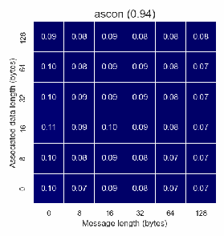
ヒートマップ。表題は「ascon」（後ろに括弧書きで最小の AES-GCM 実装に対する相対サイズ）です。縦軸は「Associated data length (bytes)」（0、8、16、32、64、128）、横軸は「Message length (bytes)」（0、8、16、32、64、128）です。36のセルそれぞれに AES-GCM に対する実行時間の比が記され、AES-GCM より速いと青、遅いと赤で塗られています。
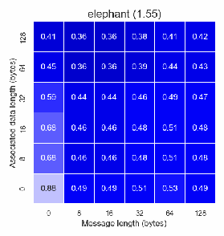
ヒートマップ。表題は「elephant」（後ろに括弧書きで最小の AES-GCM 実装に対する相対サイズ）です。縦軸は「Associated data length (bytes)」（0、8、16、32、64、128）、横軸は「Message length (bytes)」（0、8、16、32、64、128）です。36のセルそれぞれに AES-GCM に対する実行時間の比が記され、AES-GCM より速いと青、遅いと赤で塗られています。
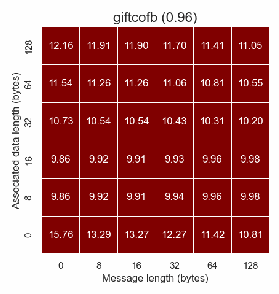
ヒートマップ。表題は「giftcofb」（後ろに括弧書きで最小の AES-GCM 実装に対する相対サイズ）です。縦軸は「Associated data length (bytes)」（0、8、16、32、64、128）、横軸は「Message length (bytes)」（0、8、16、32、64、128）です。36のセルそれぞれに AES-GCM に対する実行時間の比が記され、AES-GCM より速いと青、遅いと赤で塗られています。
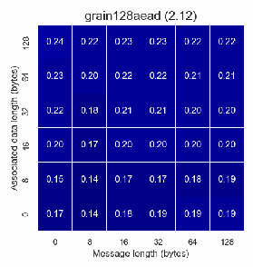
ヒートマップ。表題は「grain128aead」（後ろに括弧書きで最小の AES-GCM 実装に対する相対サイズ）です。縦軸は「Associated data length (bytes)」（0、8、16、32、64、128）、横軸は「Message length (bytes)」（0、8、16、32、64、128）です。36のセルそれぞれに AES-GCM に対する実行時間の比が記され、AES-GCM より速いと青、遅いと赤で塗られています。
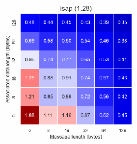
ヒートマップ。表題は「isap」（後ろに括弧書きで最小の AES-GCM 実装に対する相対サイズ）です。縦軸は「Associated data length (bytes)」（0、8、16、32、64、128）、横軸は「Message length (bytes)」（0、8、16、32、64、128）です。36のセルそれぞれに AES-GCM に対する実行時間の比が記され、AES-GCM より速いと青、遅いと赤で塗られています。
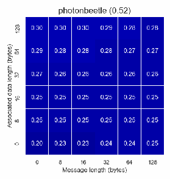
ヒートマップ。表題は「photonbeetle」（後ろに括弧書きで最小の AES-GCM 実装に対する相対サイズ）です。縦軸は「Associated data length (bytes)」（0、8、16、32、64、128）、横軸は「Message length (bytes)」（0、8、16、32、64、128）です。36のセルそれぞれに AES-GCM に対する実行時間の比が記され、AES-GCM より速いと青、遅いと赤で塗られています。
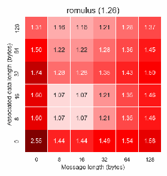
ヒートマップ。表題は「romulus」（後ろに括弧書きで最小の AES-GCM 実装に対する相対サイズ）です。縦軸は「Associated data length (bytes)」（0、8、16、32、64、128）、横軸は「Message length (bytes)」（0、8、16、32、64、128）です。36のセルそれぞれに AES-GCM に対する実行時間の比が記され、AES-GCM より速いと青、遅いと赤で塗られています。
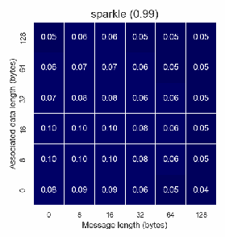
ヒートマップ。表題は「sparkle」（後ろに括弧書きで最小の AES-GCM 実装に対する相対サイズ）です。縦軸は「Associated data length (bytes)」（0、8、16、32、64、128）、横軸は「Message length (bytes)」（0、8、16、32、64、128）です。36のセルそれぞれに AES-GCM に対する実行時間の比が記され、AES-GCM より速いと青、遅いと赤で塗られています。
ヒートマップ。表題は「tinyjambu」（後ろに括弧書きで最小の AES-GCM 実装に対する相対サイズ）です。縦軸は「Associated data length (bytes)」（0、8、16、32、64、128）、横軸は「Message length (bytes)」（0、8、16、32、64、128）です。36のセルそれぞれに AES-GCM に対する実行時間の比が記され、AES-GCM より速いと青、遅いと赤で塗られています。
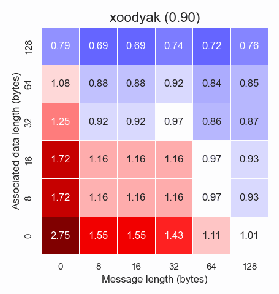
ヒートマップ。表題は「xoodyak」（後ろに括弧書きで最小の AES-GCM 実装に対する相対サイズ）です。縦軸は「Associated data length (bytes)」（0、8、16、32、64、128）、横軸は「Message length (bytes)」（0、8、16、32、64、128）です。36のセルそれぞれに AES-GCM に対する実行時間の比が記され、AES-GCM より速いと青、遅いと赤で塗られています。

色の凡例。濃い青から白を経て濃い赤に変わる帯で、青い側に「Faster than AES-GCM」、赤い側に「Slower than AES-GCM」と記されています。
Fig. 18. Execution time ratio of smallest primary AEAD implementations to AES-GCM on ATmega4809
図 18. ATmega4809 上での、最小の AEAD 主要実装と AES-GCM の実行時間比
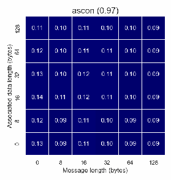
ヒートマップ。表題は「ascon」（後ろに括弧書きで最小の AES-GCM 実装に対する相対サイズ）です。縦軸は「Associated data length (bytes)」（0、8、16、32、64、128）、横軸は「Message length (bytes)」（0、8、16、32、64、128）です。36のセルそれぞれに AES-GCM に対する実行時間の比が記され、AES-GCM より速いと青、遅いと赤で塗られています。
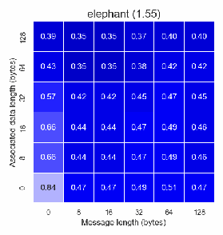
ヒートマップ。表題は「elephant」（後ろに括弧書きで最小の AES-GCM 実装に対する相対サイズ）です。縦軸は「Associated data length (bytes)」（0、8、16、32、64、128）、横軸は「Message length (bytes)」（0、8、16、32、64、128）です。36のセルそれぞれに AES-GCM に対する実行時間の比が記され、AES-GCM より速いと青、遅いと赤で塗られています。
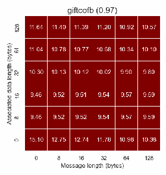
ヒートマップ。表題は「giftcofb」（後ろに括弧書きで最小の AES-GCM 実装に対する相対サイズ）です。縦軸は「Associated data length (bytes)」（0、8、16、32、64、128）、横軸は「Message length (bytes)」（0、8、16、32、64、128）です。36のセルそれぞれに AES-GCM に対する実行時間の比が記され、AES-GCM より速いと青、遅いと赤で塗られています。
ヒートマップ。表題は「grain128aead」（後ろに括弧書きで最小の AES-GCM 実装に対する相対サイズ）です。縦軸は「Associated data length (bytes)」（0、8、16、32、64、128）、横軸は「Message length (bytes)」（0、8、16、32、64、128）です。36のセルそれぞれに AES-GCM に対する実行時間の比が記され、AES-GCM より速いと青、遅いと赤で塗られています。
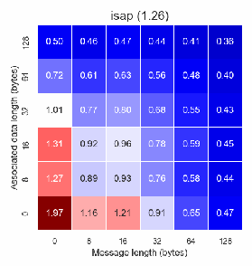
ヒートマップ。表題は「isap」（後ろに括弧書きで最小の AES-GCM 実装に対する相対サイズ）です。縦軸は「Associated data length (bytes)」（0、8、16、32、64、128）、横軸は「Message length (bytes)」（0、8、16、32、64、128）です。36のセルそれぞれに AES-GCM に対する実行時間の比が記され、AES-GCM より速いと青、遅いと赤で塗られています。
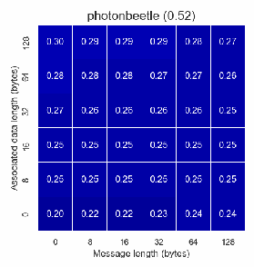
ヒートマップ。表題は「photonbeetle」（後ろに括弧書きで最小の AES-GCM 実装に対する相対サイズ）です。縦軸は「Associated data length (bytes)」（0、8、16、32、64、128）、横軸は「Message length (bytes)」（0、8、16、32、64、128）です。36のセルそれぞれに AES-GCM に対する実行時間の比が記され、AES-GCM より速いと青、遅いと赤で塗られています。
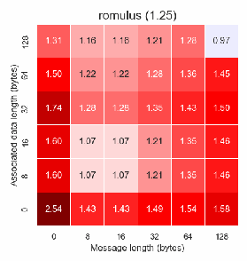
ヒートマップ。表題は「romulus」（後ろに括弧書きで最小の AES-GCM 実装に対する相対サイズ）です。縦軸は「Associated data length (bytes)」（0、8、16、32、64、128）、横軸は「Message length (bytes)」（0、8、16、32、64、128）です。36のセルそれぞれに AES-GCM に対する実行時間の比が記され、AES-GCM より速いと青、遅いと赤で塗られています。
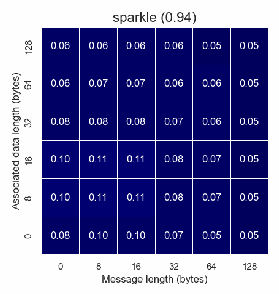
ヒートマップ。表題は「sparkle」（後ろに括弧書きで最小の AES-GCM 実装に対する相対サイズ）です。縦軸は「Associated data length (bytes)」（0、8、16、32、64、128）、横軸は「Message length (bytes)」（0、8、16、32、64、128）です。36のセルそれぞれに AES-GCM に対する実行時間の比が記され、AES-GCM より速いと青、遅いと赤で塗られています。
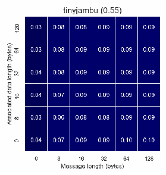
ヒートマップ。表題は「tinyjambu」（後ろに括弧書きで最小の AES-GCM 実装に対する相対サイズ）です。縦軸は「Associated data length (bytes)」（0、8、16、32、64、128）、横軸は「Message length (bytes)」（0、8、16、32、64、128）です。36のセルそれぞれに AES-GCM に対する実行時間の比が記され、AES-GCM より速いと青、遅いと赤で塗られています。
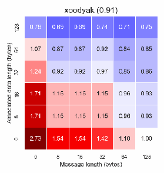
ヒートマップ。表題は「xoodyak」（後ろに括弧書きで最小の AES-GCM 実装に対する相対サイズ）です。縦軸は「Associated data length (bytes)」（0、8、16、32、64、128）、横軸は「Message length (bytes)」（0、8、16、32、64、128）です。36のセルそれぞれに AES-GCM に対する実行時間の比が記され、AES-GCM より速いと青、遅いと赤で塗られています。

色の凡例。濃い青から白を経て濃い赤に変わる帯で、青い側に「Faster than AES-GCM」、赤い側に「Slower than AES-GCM」と記されています。
Fig. 19. Execution time ratio of smallest primary AEAD implementations to AES-GCM on ATmega328P
図 19. ATmega328P 上での、最小の AEAD 主要実装と AES-GCM の実行時間比
ヒートマップ。表題は「ascon」（後ろに括弧書きで最小の AES-GCM 実装に対する相対サイズ）です。縦軸は「Associated data length (bytes)」（0、8、16、32、64、128）、横軸は「Message length (bytes)」（0、8、16、32、64、128）です。36のセルそれぞれに AES-GCM に対する実行時間の比が記され、AES-GCM より速いと青、遅いと赤で塗られています。
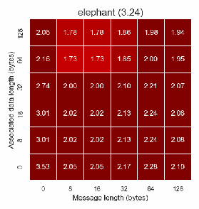
ヒートマップ。表題は「elephant」（後ろに括弧書きで最小の AES-GCM 実装に対する相対サイズ）です。縦軸は「Associated data length (bytes)」（0、8、16、32、64、128）、横軸は「Message length (bytes)」（0、8、16、32、64、128）です。36のセルそれぞれに AES-GCM に対する実行時間の比が記され、AES-GCM より速いと青、遅いと赤で塗られています。
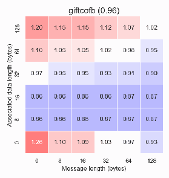
ヒートマップ。表題は「giftcofb」（後ろに括弧書きで最小の AES-GCM 実装に対する相対サイズ）です。縦軸は「Associated data length (bytes)」（0、8、16、32、64、128）、横軸は「Message length (bytes)」（0、8、16、32、64、128）です。36のセルそれぞれに AES-GCM に対する実行時間の比が記され、AES-GCM より速いと青、遅いと赤で塗られています。
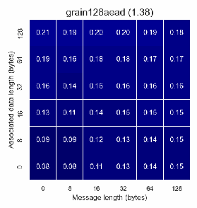
ヒートマップ。表題は「grain128aead」（後ろに括弧書きで最小の AES-GCM 実装に対する相対サイズ）です。縦軸は「Associated data length (bytes)」（0、8、16、32、64、128）、横軸は「Message length (bytes)」（0、8、16、32、64、128）です。36のセルそれぞれに AES-GCM に対する実行時間の比が記され、AES-GCM より速いと青、遅いと赤で塗られています。
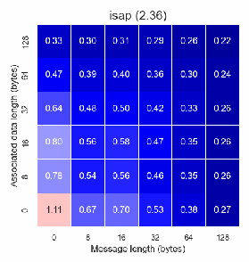
ヒートマップ。表題は「isap」（後ろに括弧書きで最小の AES-GCM 実装に対する相対サイズ）です。縦軸は「Associated data length (bytes)」（0、8、16、32、64、128）、横軸は「Message length (bytes)」（0、8、16、32、64、128）です。36のセルそれぞれに AES-GCM に対する実行時間の比が記され、AES-GCM より速いと青、遅いと赤で塗られています。
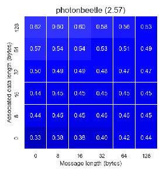
ヒートマップ。表題は「photonbeetle」（後ろに括弧書きで最小の AES-GCM 実装に対する相対サイズ）です。縦軸は「Associated data length (bytes)」（0、8、16、32、64、128）、横軸は「Message length (bytes)」（0、8、16、32、64、128）です。36のセルそれぞれに AES-GCM に対する実行時間の比が記され、AES-GCM より速いと青、遅いと赤で塗られています。
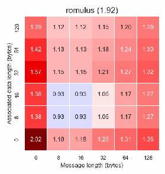
ヒートマップ。表題は「romulus」（後ろに括弧書きで最小の AES-GCM 実装に対する相対サイズ）です。縦軸は「Associated data length (bytes)」（0、8、16、32、64、128）、横軸は「Message length (bytes)」（0、8、16、32、64、128）です。36のセルそれぞれに AES-GCM に対する実行時間の比が記され、AES-GCM より速いと青、遅いと赤で塗られています。
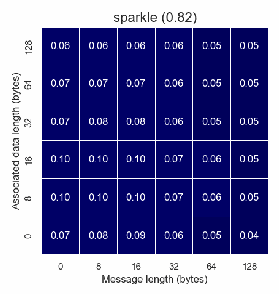
ヒートマップ。表題は「sparkle」（後ろに括弧書きで最小の AES-GCM 実装に対する相対サイズ）です。縦軸は「Associated data length (bytes)」（0、8、16、32、64、128）、横軸は「Message length (bytes)」（0、8、16、32、64、128）です。36のセルそれぞれに AES-GCM に対する実行時間の比が記され、AES-GCM より速いと青、遅いと赤で塗られています。
ヒートマップ。表題は「tinyjambu」（後ろに括弧書きで最小の AES-GCM 実装に対する相対サイズ）です。縦軸は「Associated data length (bytes)」（0、8、16、32、64、128）、横軸は「Message length (bytes)」（0、8、16、32、64、128）です。36のセルそれぞれに AES-GCM に対する実行時間の比が記され、AES-GCM より速いと青、遅いと赤で塗られています。
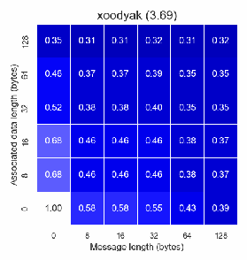
ヒートマップ。表題は「xoodyak」（後ろに括弧書きで最小の AES-GCM 実装に対する相対サイズ）です。縦軸は「Associated data length (bytes)」（0、8、16、32、64、128）、横軸は「Message length (bytes)」（0、8、16、32、64、128）です。36のセルそれぞれに AES-GCM に対する実行時間の比が記され、AES-GCM より速いと青、遅いと赤で塗られています。

色の凡例。濃い青から白を経て濃い赤に変わる帯で、青い側に「Faster than AES-GCM」、赤い側に「Slower than AES-GCM」と記されています。
Fig. 20. Execution time ratio of smallest primary AEAD implementations to AES-GCM on SAMD21G18A
図 20. SAMD21G18A 上での、最小の AEAD 主要実装と AES-GCM の実行時間比
ヒートマップ。表題は「ascon」（後ろに括弧書きで最小の AES-GCM 実装に対する相対サイズ）です。縦軸は「Associated data length (bytes)」（0、8、16、32、64、128）、横軸は「Message length (bytes)」（0、8、16、32、64、128）です。36のセルそれぞれに AES-GCM に対する実行時間の比が記され、AES-GCM より速いと青、遅いと赤で塗られています。
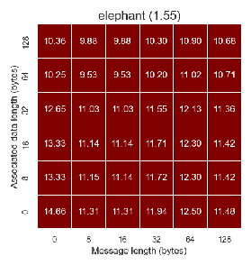
ヒートマップ。表題は「elephant」（後ろに括弧書きで最小の AES-GCM 実装に対する相対サイズ）です。縦軸は「Associated data length (bytes)」（0、8、16、32、64、128）、横軸は「Message length (bytes)」（0、8、16、32、64、128）です。36のセルそれぞれに AES-GCM に対する実行時間の比が記され、AES-GCM より速いと青、遅いと赤で塗られています。
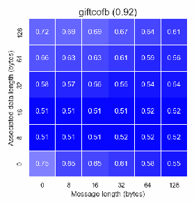
ヒートマップ。表題は「giftcofb」（後ろに括弧書きで最小の AES-GCM 実装に対する相対サイズ）です。縦軸は「Associated data length (bytes)」（0、8、16、32、64、128）、横軸は「Message length (bytes)」（0、8、16、32、64、128）です。36のセルそれぞれに AES-GCM に対する実行時間の比が記され、AES-GCM より速いと青、遅いと赤で塗られています。
ヒートマップ。表題は「grain128aead」（後ろに括弧書きで最小の AES-GCM 実装に対する相対サイズ）です。縦軸は「Associated data length (bytes)」（0、8、16、32、64、128）、横軸は「Message length (bytes)」（0、8、16、32、64、128）です。36のセルそれぞれに AES-GCM に対する実行時間の比が記され、AES-GCM より速いと青、遅いと赤で塗られています。
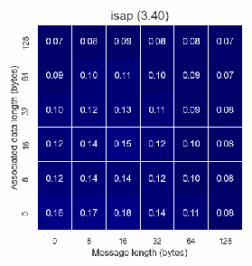
ヒートマップ。表題は「isap」（後ろに括弧書きで最小の AES-GCM 実装に対する相対サイズ）です。縦軸は「Associated data length (bytes)」（0、8、16、32、64、128）、横軸は「Message length (bytes)」（0、8、16、32、64、128）です。36のセルそれぞれに AES-GCM に対する実行時間の比が記され、AES-GCM より速いと青、遅いと赤で塗られています。
ヒートマップ。表題は「photonbeetle」（後ろに括弧書きで最小の AES-GCM 実装に対する相対サイズ）です。縦軸は「Associated data length (bytes)」（0、8、16、32、64、128）、横軸は「Message length (bytes)」（0、8、16、32、64、128）です。36のセルそれぞれに AES-GCM に対する実行時間の比が記され、AES-GCM より速いと青、遅いと赤で塗られています。
ヒートマップ。表題は「romulus」（後ろに括弧書きで最小の AES-GCM 実装に対する相対サイズ）です。縦軸は「Associated data length (bytes)」（0、8、16、32、64、128）、横軸は「Message length (bytes)」（0、8、16、32、64、128）です。36のセルそれぞれに AES-GCM に対する実行時間の比が記され、AES-GCM より速いと青、遅いと赤で塗られています。
ヒートマップ。表題は「sparkle」（後ろに括弧書きで最小の AES-GCM 実装に対する相対サイズ）です。縦軸は「Associated data length (bytes)」（0、8、16、32、64、128）、横軸は「Message length (bytes)」（0、8、16、32、64、128）です。36のセルそれぞれに AES-GCM に対する実行時間の比が記され、AES-GCM より速いと青、遅いと赤で塗られています。
ヒートマップ。表題は「tinyjambu」（後ろに括弧書きで最小の AES-GCM 実装に対する相対サイズ）です。縦軸は「Associated data length (bytes)」（0、8、16、32、64、128）、横軸は「Message length (bytes)」（0、8、16、32、64、128）です。36のセルそれぞれに AES-GCM に対する実行時間の比が記され、AES-GCM より速いと青、遅いと赤で塗られています。
ヒートマップ。表題は「xoodyak」（後ろに括弧書きで最小の AES-GCM 実装に対する相対サイズ）です。縦軸は「Associated data length (bytes)」（0、8、16、32、64、128）、横軸は「Message length (bytes)」（0、8、16、32、64、128）です。36のセルそれぞれに AES-GCM に対する実行時間の比が記され、AES-GCM より速いと青、遅いと赤で塗られています。

色の凡例。濃い青から白を経て濃い赤に変わる帯で、青い側に「Faster than AES-GCM」、赤い側に「Slower than AES-GCM」と記されています。
Fig. 21. Execution time ratio of smallest primary AEAD implementations to AES-GCM on AT91SAM3X8E
図 21. AT91SAM3X8E 上での、最小の AEAD 主要実装と AES-GCM の実行時間比
ヒートマップ。表題は「ascon」（後ろに括弧書きで最小の AES-GCM 実装に対する相対サイズ）です。縦軸は「Associated data length (bytes)」（0、8、16、32、64、128）、横軸は「Message length (bytes)」（0、8、16、32、64、128）です。36のセルそれぞれに AES-GCM に対する実行時間の比が記され、AES-GCM より速いと青、遅いと赤で塗られています。
ヒートマップ。表題は「elephant」（後ろに括弧書きで最小の AES-GCM 実装に対する相対サイズ）です。縦軸は「Associated data length (bytes)」（0、8、16、32、64、128）、横軸は「Message length (bytes)」（0、8、16、32、64、128）です。36のセルそれぞれに AES-GCM に対する実行時間の比が記され、AES-GCM より速いと青、遅いと赤で塗られています。
ヒートマップ。表題は「giftcofb」（後ろに括弧書きで最小の AES-GCM 実装に対する相対サイズ）です。縦軸は「Associated data length (bytes)」（0、8、16、32、64、128）、横軸は「Message length (bytes)」（0、8、16、32、64、128）です。36のセルそれぞれに AES-GCM に対する実行時間の比が記され、AES-GCM より速いと青、遅いと赤で塗られています。
ヒートマップ。表題は「grain128aead」（後ろに括弧書きで最小の AES-GCM 実装に対する相対サイズ）です。縦軸は「Associated data length (bytes)」（0、8、16、32、64、128）、横軸は「Message length (bytes)」（0、8、16、32、64、128）です。36のセルそれぞれに AES-GCM に対する実行時間の比が記され、AES-GCM より速いと青、遅いと赤で塗られています。
ヒートマップ。表題は「isap」（後ろに括弧書きで最小の AES-GCM 実装に対する相対サイズ）です。縦軸は「Associated data length (bytes)」（0、8、16、32、64、128）、横軸は「Message length (bytes)」（0、8、16、32、64、128）です。36のセルそれぞれに AES-GCM に対する実行時間の比が記され、AES-GCM より速いと青、遅いと赤で塗られています。
ヒートマップ。表題は「photonbeetle」（後ろに括弧書きで最小の AES-GCM 実装に対する相対サイズ）です。縦軸は「Associated data length (bytes)」（0、8、16、32、64、128）、横軸は「Message length (bytes)」（0、8、16、32、64、128）です。36のセルそれぞれに AES-GCM に対する実行時間の比が記され、AES-GCM より速いと青、遅いと赤で塗られています。
ヒートマップ。表題は「romulus」（後ろに括弧書きで最小の AES-GCM 実装に対する相対サイズ）です。縦軸は「Associated data length (bytes)」（0、8、16、32、64、128）、横軸は「Message length (bytes)」（0、8、16、32、64、128）です。36のセルそれぞれに AES-GCM に対する実行時間の比が記され、AES-GCM より速いと青、遅いと赤で塗られています。
ヒートマップ。表題は「sparkle」（後ろに括弧書きで最小の AES-GCM 実装に対する相対サイズ）です。縦軸は「Associated data length (bytes)」（0、8、16、32、64、128）、横軸は「Message length (bytes)」（0、8、16、32、64、128）です。36のセルそれぞれに AES-GCM に対する実行時間の比が記され、AES-GCM より速いと青、遅いと赤で塗られています。
ヒートマップ。表題は「tinyjambu」（後ろに括弧書きで最小の AES-GCM 実装に対する相対サイズ）です。縦軸は「Associated data length (bytes)」（0、8、16、32、64、128）、横軸は「Message length (bytes)」（0、8、16、32、64、128）です。36のセルそれぞれに AES-GCM に対する実行時間の比が記され、AES-GCM より速いと青、遅いと赤で塗られています。
ヒートマップ。表題は「xoodyak」（後ろに括弧書きで最小の AES-GCM 実装に対する相対サイズ）です。縦軸は「Associated data length (bytes)」（0、8、16、32、64、128）、横軸は「Message length (bytes)」（0、8、16、32、64、128）です。36のセルそれぞれに AES-GCM に対する実行時間の比が記され、AES-GCM より速いと青、遅いと赤で塗られています。

色の凡例。濃い青から白を経て濃い赤に変わる帯で、青い側に「Faster than AES-GCM」、赤い側に「Slower than AES-GCM」と記されています。
Fig. 22. Execution time ratio of smallest primary AEAD implementations to AES-GCM on nRF52840
図 22. nRF52840 上での、最小の AEAD 主要実装と AES-GCM の実行時間比
ヒートマップ。表題は「ascon」（後ろに括弧書きで最小の AES-GCM 実装に対する相対サイズ）です。縦軸は「Associated data length (bytes)」（0、8、16、32、64、128）、横軸は「Message length (bytes)」（0、8、16、32、64、128）です。36のセルそれぞれに AES-GCM に対する実行時間の比が記され、AES-GCM より速いと青、遅いと赤で塗られています。
ヒートマップ。表題は「elephant」（後ろに括弧書きで最小の AES-GCM 実装に対する相対サイズ）です。縦軸は「Associated data length (bytes)」（0、8、16、32、64、128）、横軸は「Message length (bytes)」（0、8、16、32、64、128）です。36のセルそれぞれに AES-GCM に対する実行時間の比が記され、AES-GCM より速いと青、遅いと赤で塗られています。
ヒートマップ。表題は「giftcofb」（後ろに括弧書きで最小の AES-GCM 実装に対する相対サイズ）です。縦軸は「Associated data length (bytes)」（0、8、16、32、64、128）、横軸は「Message length (bytes)」（0、8、16、32、64、128）です。36のセルそれぞれに AES-GCM に対する実行時間の比が記され、AES-GCM より速いと青、遅いと赤で塗られています。
ヒートマップ。表題は「grain128aead」（後ろに括弧書きで最小の AES-GCM 実装に対する相対サイズ）です。縦軸は「Associated data length (bytes)」（0、8、16、32、64、128）、横軸は「Message length (bytes)」（0、8、16、32、64、128）です。36のセルそれぞれに AES-GCM に対する実行時間の比が記され、AES-GCM より速いと青、遅いと赤で塗られています。
ヒートマップ。表題は「isap」（後ろに括弧書きで最小の AES-GCM 実装に対する相対サイズ）です。縦軸は「Associated data length (bytes)」（0、8、16、32、64、128）、横軸は「Message length (bytes)」（0、8、16、32、64、128）です。36のセルそれぞれに AES-GCM に対する実行時間の比が記され、AES-GCM より速いと青、遅いと赤で塗られています。
ヒートマップ。表題は「photonbeetle」（後ろに括弧書きで最小の AES-GCM 実装に対する相対サイズ）です。縦軸は「Associated data length (bytes)」（0、8、16、32、64、128）、横軸は「Message length (bytes)」（0、8、16、32、64、128）です。36のセルそれぞれに AES-GCM に対する実行時間の比が記され、AES-GCM より速いと青、遅いと赤で塗られています。
ヒートマップ。表題は「romulus」（後ろに括弧書きで最小の AES-GCM 実装に対する相対サイズ）です。縦軸は「Associated data length (bytes)」（0、8、16、32、64、128）、横軸は「Message length (bytes)」（0、8、16、32、64、128）です。36のセルそれぞれに AES-GCM に対する実行時間の比が記され、AES-GCM より速いと青、遅いと赤で塗られています。

ヒートマップ。表題は「sparkle」（後ろに括弧書きで最小の AES-GCM 実装に対する相対サイズ）です。縦軸は「Associated data length (bytes)」（0、8、16、32、64、128）、横軸は「Message length (bytes)」（0、8、16、32、64、128）です。36のセルそれぞれに AES-GCM に対する実行時間の比が記され、AES-GCM より速いと青、遅いと赤で塗られています。
ヒートマップ。表題は「tinyjambu」（後ろに括弧書きで最小の AES-GCM 実装に対する相対サイズ）です。縦軸は「Associated data length (bytes)」（0、8、16、32、64、128）、横軸は「Message length (bytes)」（0、8、16、32、64、128）です。36のセルそれぞれに AES-GCM に対する実行時間の比が記され、AES-GCM より速いと青、遅いと赤で塗られています。
ヒートマップ。表題は「xoodyak」（後ろに括弧書きで最小の AES-GCM 実装に対する相対サイズ）です。縦軸は「Associated data length (bytes)」（0、8、16、32、64、128）、横軸は「Message length (bytes)」（0、8、16、32、64、128）です。36のセルそれぞれに AES-GCM に対する実行時間の比が記され、AES-GCM より速いと青、遅いと赤で塗られています。

色の凡例。濃い青から白を経て濃い赤に変わる帯で、青い側に「Faster than AES-GCM」、赤い側に「Slower than AES-GCM」と記されています。
Fig. 23. Execution time ratio of smallest primary AEAD implementations to AES-GCM on PIC32MX320F128H
図 23. PIC32MX320F128H 上での、最小の AEAD 主要実装と AES-GCM の実行時間比
ヒートマップ。表題は「ascon」（後ろに括弧書きで最小の AES-GCM 実装に対する相対サイズ）です。縦軸は「Associated data length (bytes)」（0、8、16、32、64、128）、横軸は「Message length (bytes)」（0、8、16、32、64、128）です。36のセルそれぞれに AES-GCM に対する実行時間の比が記され、AES-GCM より速いと青、遅いと赤で塗られています。
ヒートマップ。表題は「elephant」（後ろに括弧書きで最小の AES-GCM 実装に対する相対サイズ）です。縦軸は「Associated data length (bytes)」（0、8、16、32、64、128）、横軸は「Message length (bytes)」（0、8、16、32、64、128）です。36のセルそれぞれに AES-GCM に対する実行時間の比が記され、AES-GCM より速いと青、遅いと赤で塗られています。
ヒートマップ。表題は「giftcofb」（後ろに括弧書きで最小の AES-GCM 実装に対する相対サイズ）です。縦軸は「Associated data length (bytes)」（0、8、16、32、64、128）、横軸は「Message length (bytes)」（0、8、16、32、64、128）です。36のセルそれぞれに AES-GCM に対する実行時間の比が記され、AES-GCM より速いと青、遅いと赤で塗られています。
ヒートマップ。表題は「grain128aead」（後ろに括弧書きで最小の AES-GCM 実装に対する相対サイズ）です。縦軸は「Associated data length (bytes)」（0、8、16、32、64、128）、横軸は「Message length (bytes)」（0、8、16、32、64、128）です。36のセルそれぞれに AES-GCM に対する実行時間の比が記され、AES-GCM より速いと青、遅いと赤で塗られています。
ヒートマップ。表題は「isap」（後ろに括弧書きで最小の AES-GCM 実装に対する相対サイズ）です。縦軸は「Associated data length (bytes)」（0、8、16、32、64、128）、横軸は「Message length (bytes)」（0、8、16、32、64、128）です。36のセルそれぞれに AES-GCM に対する実行時間の比が記され、AES-GCM より速いと青、遅いと赤で塗られています。
ヒートマップ。表題は「photonbeetle」（後ろに括弧書きで最小の AES-GCM 実装に対する相対サイズ）です。縦軸は「Associated data length (bytes)」（0、8、16、32、64、128）、横軸は「Message length (bytes)」（0、8、16、32、64、128）です。36のセルそれぞれに AES-GCM に対する実行時間の比が記され、AES-GCM より速いと青、遅いと赤で塗られています。
ヒートマップ。表題は「romulus」（後ろに括弧書きで最小の AES-GCM 実装に対する相対サイズ）です。縦軸は「Associated data length (bytes)」（0、8、16、32、64、128）、横軸は「Message length (bytes)」（0、8、16、32、64、128）です。36のセルそれぞれに AES-GCM に対する実行時間の比が記され、AES-GCM より速いと青、遅いと赤で塗られています。
ヒートマップ。表題は「sparkle」（後ろに括弧書きで最小の AES-GCM 実装に対する相対サイズ）です。縦軸は「Associated data length (bytes)」（0、8、16、32、64、128）、横軸は「Message length (bytes)」（0、8、16、32、64、128）です。36のセルそれぞれに AES-GCM に対する実行時間の比が記され、AES-GCM より速いと青、遅いと赤で塗られています。
ヒートマップ。表題は「tinyjambu」（後ろに括弧書きで最小の AES-GCM 実装に対する相対サイズ）です。縦軸は「Associated data length (bytes)」（0、8、16、32、64、128）、横軸は「Message length (bytes)」（0、8、16、32、64、128）です。36のセルそれぞれに AES-GCM に対する実行時間の比が記され、AES-GCM より速いと青、遅いと赤で塗られています。
ヒートマップ。表題は「xoodyak」（後ろに括弧書きで最小の AES-GCM 実装に対する相対サイズ）です。縦軸は「Associated data length (bytes)」（0、8、16、32、64、128）、横軸は「Message length (bytes)」（0、8、16、32、64、128）です。36のセルそれぞれに AES-GCM に対する実行時間の比が記され、AES-GCM より速いと青、遅いと赤で塗られています。
色の凡例。濃い青から白を経て濃い赤に変わる帯で、青い側に「Faster than AES-GCM」、赤い側に「Slower than AES-GCM」と記されています。
Fig. 24. Execution time ratio of smallest primary AEAD implementations to AES-GCM on PIC32MX340F512H
図 24. PIC32MX340F512H 上での、最小の AEAD 主要実装と AES-GCM の実行時間比
ヒートマップ。表題は「ascon」（後ろに括弧書きで最小の AES-GCM 実装に対する相対サイズ）です。縦軸は「Associated data length (bytes)」（0、8、16、32、64、128）、横軸は「Message length (bytes)」（0、8、16、32、64、128）です。36のセルそれぞれに AES-GCM に対する実行時間の比が記され、AES-GCM より速いと青、遅いと赤で塗られています。
ヒートマップ。表題は「elephant」（後ろに括弧書きで最小の AES-GCM 実装に対する相対サイズ）です。縦軸は「Associated data length (bytes)」（0、8、16、32、64、128）、横軸は「Message length (bytes)」（0、8、16、32、64、128）です。36のセルそれぞれに AES-GCM に対する実行時間の比が記され、AES-GCM より速いと青、遅いと赤で塗られています。
ヒートマップ。表題は「giftcofb」（後ろに括弧書きで最小の AES-GCM 実装に対する相対サイズ）です。縦軸は「Associated data length (bytes)」（0、8、16、32、64、128）、横軸は「Message length (bytes)」（0、8、16、32、64、128）です。36のセルそれぞれに AES-GCM に対する実行時間の比が記され、AES-GCM より速いと青、遅いと赤で塗られています。
ヒートマップ。表題は「grain128aead」（後ろに括弧書きで最小の AES-GCM 実装に対する相対サイズ）です。縦軸は「Associated data length (bytes)」（0、8、16、32、64、128）、横軸は「Message length (bytes)」（0、8、16、32、64、128）です。36のセルそれぞれに AES-GCM に対する実行時間の比が記され、AES-GCM より速いと青、遅いと赤で塗られています。
ヒートマップ。表題は「isap」（後ろに括弧書きで最小の AES-GCM 実装に対する相対サイズ）です。縦軸は「Associated data length (bytes)」（0、8、16、32、64、128）、横軸は「Message length (bytes)」（0、8、16、32、64、128）です。36のセルそれぞれに AES-GCM に対する実行時間の比が記され、AES-GCM より速いと青、遅いと赤で塗られています。
ヒートマップ。表題は「photonbeetle」（後ろに括弧書きで最小の AES-GCM 実装に対する相対サイズ）です。縦軸は「Associated data length (bytes)」（0、8、16、32、64、128）、横軸は「Message length (bytes)」（0、8、16、32、64、128）です。36のセルそれぞれに AES-GCM に対する実行時間の比が記され、AES-GCM より速いと青、遅いと赤で塗られています。
ヒートマップ。表題は「romulus」（後ろに括弧書きで最小の AES-GCM 実装に対する相対サイズ）です。縦軸は「Associated data length (bytes)」（0、8、16、32、64、128）、横軸は「Message length (bytes)」（0、8、16、32、64、128）です。36のセルそれぞれに AES-GCM に対する実行時間の比が記され、AES-GCM より速いと青、遅いと赤で塗られています。
ヒートマップ。表題は「sparkle」（後ろに括弧書きで最小の AES-GCM 実装に対する相対サイズ）です。縦軸は「Associated data length (bytes)」（0、8、16、32、64、128）、横軸は「Message length (bytes)」（0、8、16、32、64、128）です。36のセルそれぞれに AES-GCM に対する実行時間の比が記され、AES-GCM より速いと青、遅いと赤で塗られています。
ヒートマップ。表題は「tinyjambu」（後ろに括弧書きで最小の AES-GCM 実装に対する相対サイズ）です。縦軸は「Associated data length (bytes)」（0、8、16、32、64、128）、横軸は「Message length (bytes)」（0、8、16、32、64、128）です。36のセルそれぞれに AES-GCM に対する実行時間の比が記され、AES-GCM より速いと青、遅いと赤で塗られています。
ヒートマップ。表題は「xoodyak」（後ろに括弧書きで最小の AES-GCM 実装に対する相対サイズ）です。縦軸は「Associated data length (bytes)」（0、8、16、32、64、128）、横軸は「Message length (bytes)」（0、8、16、32、64、128）です。36のセルそれぞれに AES-GCM に対する実行時間の比が記され、AES-GCM より速いと青、遅いと赤で塗られています。

色の凡例。濃い青から白を経て濃い赤に変わる帯で、青い側に「Faster than AES-GCM」、赤い側に「Slower than AES-GCM」と記されています。
Fig. 25. Execution time ratio of smallest primary AEAD implementations to AES-GCM on ESP8266
図 25. ESP8266 上での、最小の AEAD 主要実装と AES-GCM の実行時間比
ヒートマップ。表題は「ascon」です。縦軸は「Associated data length (bytes)」（0、8、16、32、64、128）、横軸は「Message length (bytes)」（0、8、16、32、64、128）です。36のセルそれぞれに AES-GCM に対する実行時間の比が記され、AES-GCM より速いと青、遅いと赤で塗られています。
ヒートマップ。表題は「elephant」です。縦軸は「Associated data length (bytes)」（0、8、16、32、64、128）、横軸は「Message length (bytes)」（0、8、16、32、64、128）です。36のセルそれぞれに AES-GCM に対する実行時間の比が記され、AES-GCM より速いと青、遅いと赤で塗られています。
ヒートマップ。表題は「giftcofb」です。縦軸は「Associated data length (bytes)」（0、8、16、32、64、128）、横軸は「Message length (bytes)」（0、8、16、32、64、128）です。36のセルそれぞれに AES-GCM に対する実行時間の比が記され、AES-GCM より速いと青、遅いと赤で塗られています。
ヒートマップ。表題は「grain128aead」です。縦軸は「Associated data length (bytes)」（0、8、16、32、64、128）、横軸は「Message length (bytes)」（0、8、16、32、64、128）です。36のセルそれぞれに AES-GCM に対する実行時間の比が記され、AES-GCM より速いと青、遅いと赤で塗られています。
ヒートマップ。表題は「isap」です。縦軸は「Associated data length (bytes)」（0、8、16、32、64、128）、横軸は「Message length (bytes)」（0、8、16、32、64、128）です。36のセルそれぞれに AES-GCM に対する実行時間の比が記され、AES-GCM より速いと青、遅いと赤で塗られています。
ヒートマップ。表題は「photonbeetle」です。縦軸は「Associated data length (bytes)」（0、8、16、32、64、128）、横軸は「Message length (bytes)」（0、8、16、32、64、128）です。36のセルそれぞれに AES-GCM に対する実行時間の比が記され、AES-GCM より速いと青、遅いと赤で塗られています。
ヒートマップ。表題は「romulus」です。縦軸は「Associated data length (bytes)」（0、8、16、32、64、128）、横軸は「Message length (bytes)」（0、8、16、32、64、128）です。36のセルそれぞれに AES-GCM に対する実行時間の比が記され、AES-GCM より速いと青、遅いと赤で塗られています。
ヒートマップ。表題は「sparkle」です。縦軸は「Associated data length (bytes)」（0、8、16、32、64、128）、横軸は「Message length (bytes)」（0、8、16、32、64、128）です。36のセルそれぞれに AES-GCM に対する実行時間の比が記され、AES-GCM より速いと青、遅いと赤で塗られています。
ヒートマップ。表題は「tinyjambu」です。縦軸は「Associated data length (bytes)」（0、8、16、32、64、128）、横軸は「Message length (bytes)」（0、8、16、32、64、128）です。36のセルそれぞれに AES-GCM に対する実行時間の比が記され、AES-GCM より速いと青、遅いと赤で塗られています。
ヒートマップ。表題は「xoodyak」です。縦軸は「Associated data length (bytes)」（0、8、16、32、64、128）、横軸は「Message length (bytes)」（0、8、16、32、64、128）です。36のセルそれぞれに AES-GCM に対する実行時間の比が記され、AES-GCM より速いと青、遅いと赤で塗られています。

色の凡例。濃い青から白を経て濃い赤に変わる帯で、青い側に「Faster than AES-GCM」、赤い側に「Slower than AES-GCM」と記されています。
Fig. 26. Execution time ratio of fastest primary AEAD implementations to AES-GCM on ATmega4809
図 26. ATmega4809 上での、最速の AEAD 主要実装と AES-GCM の実行時間比
ヒートマップ。表題は「ascon」です。縦軸は「Associated data length (bytes)」（0、8、16、32、64、128）、横軸は「Message length (bytes)」（0、8、16、32、64、128）です。36のセルそれぞれに AES-GCM に対する実行時間の比が記され、AES-GCM より速いと青、遅いと赤で塗られています。
ヒートマップ。表題は「elephant」です。縦軸は「Associated data length (bytes)」（0、8、16、32、64、128）、横軸は「Message length (bytes)」（0、8、16、32、64、128）です。36のセルそれぞれに AES-GCM に対する実行時間の比が記され、AES-GCM より速いと青、遅いと赤で塗られています。
ヒートマップ。表題は「giftcofb」です。縦軸は「Associated data length (bytes)」（0、8、16、32、64、128）、横軸は「Message length (bytes)」（0、8、16、32、64、128）です。36のセルそれぞれに AES-GCM に対する実行時間の比が記され、AES-GCM より速いと青、遅いと赤で塗られています。
ヒートマップ。表題は「grain128aead」です。縦軸は「Associated data length (bytes)」（0、8、16、32、64、128）、横軸は「Message length (bytes)」（0、8、16、32、64、128）です。36のセルそれぞれに AES-GCM に対する実行時間の比が記され、AES-GCM より速いと青、遅いと赤で塗られています。
ヒートマップ。表題は「isap」です。縦軸は「Associated data length (bytes)」（0、8、16、32、64、128）、横軸は「Message length (bytes)」（0、8、16、32、64、128）です。36のセルそれぞれに AES-GCM に対する実行時間の比が記され、AES-GCM より速いと青、遅いと赤で塗られています。
ヒートマップ。表題は「photonbeetle」です。縦軸は「Associated data length (bytes)」（0、8、16、32、64、128）、横軸は「Message length (bytes)」（0、8、16、32、64、128）です。36のセルそれぞれに AES-GCM に対する実行時間の比が記され、AES-GCM より速いと青、遅いと赤で塗られています。
ヒートマップ。表題は「romulus」です。縦軸は「Associated data length (bytes)」（0、8、16、32、64、128）、横軸は「Message length (bytes)」（0、8、16、32、64、128）です。36のセルそれぞれに AES-GCM に対する実行時間の比が記され、AES-GCM より速いと青、遅いと赤で塗られています。
ヒートマップ。表題は「sparkle」です。縦軸は「Associated data length (bytes)」（0、8、16、32、64、128）、横軸は「Message length (bytes)」（0、8、16、32、64、128）です。36のセルそれぞれに AES-GCM に対する実行時間の比が記され、AES-GCM より速いと青、遅いと赤で塗られています。
ヒートマップ。表題は「tinyjambu」です。縦軸は「Associated data length (bytes)」（0、8、16、32、64、128）、横軸は「Message length (bytes)」（0、8、16、32、64、128）です。36のセルそれぞれに AES-GCM に対する実行時間の比が記され、AES-GCM より速いと青、遅いと赤で塗られています。
ヒートマップ。表題は「xoodyak」です。縦軸は「Associated data length (bytes)」（0、8、16、32、64、128）、横軸は「Message length (bytes)」（0、8、16、32、64、128）です。36のセルそれぞれに AES-GCM に対する実行時間の比が記され、AES-GCM より速いと青、遅いと赤で塗られています。

色の凡例。濃い青から白を経て濃い赤に変わる帯で、青い側に「Faster than AES-GCM」、赤い側に「Slower than AES-GCM」と記されています。
Fig. 27. Execution time ratio of fastest primary AEAD implementations to AES-GCM on ATmega328P
図 27. ATmega328P 上での、最速の AEAD 主要実装と AES-GCM の実行時間比
ヒートマップ。表題は「ascon」です。縦軸は「Associated data length (bytes)」（0、8、16、32、64、128）、横軸は「Message length (bytes)」（0、8、16、32、64、128）です。36のセルそれぞれに AES-GCM に対する実行時間の比が記され、AES-GCM より速いと青、遅いと赤で塗られています。
ヒートマップ。表題は「elephant」です。縦軸は「Associated data length (bytes)」（0、8、16、32、64、128）、横軸は「Message length (bytes)」（0、8、16、32、64、128）です。36のセルそれぞれに AES-GCM に対する実行時間の比が記され、AES-GCM より速いと青、遅いと赤で塗られています。
ヒートマップ。表題は「giftcofb」です。縦軸は「Associated data length (bytes)」（0、8、16、32、64、128）、横軸は「Message length (bytes)」（0、8、16、32、64、128）です。36のセルそれぞれに AES-GCM に対する実行時間の比が記され、AES-GCM より速いと青、遅いと赤で塗られています。
ヒートマップ。表題は「grain128aead」です。縦軸は「Associated data length (bytes)」（0、8、16、32、64、128）、横軸は「Message length (bytes)」（0、8、16、32、64、128）です。36のセルそれぞれに AES-GCM に対する実行時間の比が記され、AES-GCM より速いと青、遅いと赤で塗られています。
ヒートマップ。表題は「isap」です。縦軸は「Associated data length (bytes)」（0、8、16、32、64、128）、横軸は「Message length (bytes)」（0、8、16、32、64、128）です。36のセルそれぞれに AES-GCM に対する実行時間の比が記され、AES-GCM より速いと青、遅いと赤で塗られています。
ヒートマップ。表題は「photonbeetle」です。縦軸は「Associated data length (bytes)」（0、8、16、32、64、128）、横軸は「Message length (bytes)」（0、8、16、32、64、128）です。36のセルそれぞれに AES-GCM に対する実行時間の比が記され、AES-GCM より速いと青、遅いと赤で塗られています。
ヒートマップ。表題は「romulus」です。縦軸は「Associated data length (bytes)」（0、8、16、32、64、128）、横軸は「Message length (bytes)」（0、8、16、32、64、128）です。36のセルそれぞれに AES-GCM に対する実行時間の比が記され、AES-GCM より速いと青、遅いと赤で塗られています。
ヒートマップ。表題は「sparkle」です。縦軸は「Associated data length (bytes)」（0、8、16、32、64、128）、横軸は「Message length (bytes)」（0、8、16、32、64、128）です。36のセルそれぞれに AES-GCM に対する実行時間の比が記され、AES-GCM より速いと青、遅いと赤で塗られています。
ヒートマップ。表題は「tinyjambu」です。縦軸は「Associated data length (bytes)」（0、8、16、32、64、128）、横軸は「Message length (bytes)」（0、8、16、32、64、128）です。36のセルそれぞれに AES-GCM に対する実行時間の比が記され、AES-GCM より速いと青、遅いと赤で塗られています。
ヒートマップ。表題は「xoodyak」です。縦軸は「Associated data length (bytes)」（0、8、16、32、64、128）、横軸は「Message length (bytes)」（0、8、16、32、64、128）です。36のセルそれぞれに AES-GCM に対する実行時間の比が記され、AES-GCM より速いと青、遅いと赤で塗られています。

色の凡例。濃い青から白を経て濃い赤に変わる帯で、青い側に「Faster than AES-GCM」、赤い側に「Slower than AES-GCM」と記されています。
Fig. 28. Execution time ratio of fastest primary AEAD implementations to AES-GCM on SAMD21G18A
図 28. SAMD21G18A 上での、最速の AEAD 主要実装と AES-GCM の実行時間比
ヒートマップ。表題は「ascon」です。縦軸は「Associated data length (bytes)」（0、8、16、32、64、128）、横軸は「Message length (bytes)」（0、8、16、32、64、128）です。36のセルそれぞれに AES-GCM に対する実行時間の比が記され、AES-GCM より速いと青、遅いと赤で塗られています。
ヒートマップ。表題は「elephant」です。縦軸は「Associated data length (bytes)」（0、8、16、32、64、128）、横軸は「Message length (bytes)」（0、8、16、32、64、128）です。36のセルそれぞれに AES-GCM に対する実行時間の比が記され、AES-GCM より速いと青、遅いと赤で塗られています。
ヒートマップ。表題は「giftcofb」です。縦軸は「Associated data length (bytes)」（0、8、16、32、64、128）、横軸は「Message length (bytes)」（0、8、16、32、64、128）です。36のセルそれぞれに AES-GCM に対する実行時間の比が記され、AES-GCM より速いと青、遅いと赤で塗られています。
ヒートマップ。表題は「grain128aead」です。縦軸は「Associated data length (bytes)」（0、8、16、32、64、128）、横軸は「Message length (bytes)」（0、8、16、32、64、128）です。36のセルそれぞれに AES-GCM に対する実行時間の比が記され、AES-GCM より速いと青、遅いと赤で塗られています。
ヒートマップ。表題は「isap」です。縦軸は「Associated data length (bytes)」（0、8、16、32、64、128）、横軸は「Message length (bytes)」（0、8、16、32、64、128）です。36のセルそれぞれに AES-GCM に対する実行時間の比が記され、AES-GCM より速いと青、遅いと赤で塗られています。
ヒートマップ。表題は「photonbeetle」です。縦軸は「Associated data length (bytes)」（0、8、16、32、64、128）、横軸は「Message length (bytes)」（0、8、16、32、64、128）です。36のセルそれぞれに AES-GCM に対する実行時間の比が記され、AES-GCM より速いと青、遅いと赤で塗られています。
ヒートマップ。表題は「romulus」です。縦軸は「Associated data length (bytes)」（0、8、16、32、64、128）、横軸は「Message length (bytes)」（0、8、16、32、64、128）です。36のセルそれぞれに AES-GCM に対する実行時間の比が記され、AES-GCM より速いと青、遅いと赤で塗られています。
ヒートマップ。表題は「sparkle」です。縦軸は「Associated data length (bytes)」（0、8、16、32、64、128）、横軸は「Message length (bytes)」（0、8、16、32、64、128）です。36のセルそれぞれに AES-GCM に対する実行時間の比が記され、AES-GCM より速いと青、遅いと赤で塗られています。
ヒートマップ。表題は「tinyjambu」です。縦軸は「Associated data length (bytes)」（0、8、16、32、64、128）、横軸は「Message length (bytes)」（0、8、16、32、64、128）です。36のセルそれぞれに AES-GCM に対する実行時間の比が記され、AES-GCM より速いと青、遅いと赤で塗られています。
ヒートマップ。表題は「xoodyak」です。縦軸は「Associated data length (bytes)」（0、8、16、32、64、128）、横軸は「Message length (bytes)」（0、8、16、32、64、128）です。36のセルそれぞれに AES-GCM に対する実行時間の比が記され、AES-GCM より速いと青、遅いと赤で塗られています。

色の凡例。濃い青から白を経て濃い赤に変わる帯で、青い側に「Faster than AES-GCM」、赤い側に「Slower than AES-GCM」と記されています。
Fig. 29. Execution time ratio of fastest primary AEAD implementations to AES-GCM on AT91SAM3X8E
図 29. AT91SAM3X8E 上での、最速の AEAD 主要実装と AES-GCM の実行時間比
ヒートマップ。表題は「ascon」です。縦軸は「Associated data length (bytes)」（0、8、16、32、64、128）、横軸は「Message length (bytes)」（0、8、16、32、64、128）です。36のセルそれぞれに AES-GCM に対する実行時間の比が記され、AES-GCM より速いと青、遅いと赤で塗られています。
ヒートマップ。表題は「elephant」です。縦軸は「Associated data length (bytes)」（0、8、16、32、64、128）、横軸は「Message length (bytes)」（0、8、16、32、64、128）です。36のセルそれぞれに AES-GCM に対する実行時間の比が記され、AES-GCM より速いと青、遅いと赤で塗られています。
ヒートマップ。表題は「giftcofb」です。縦軸は「Associated data length (bytes)」（0、8、16、32、64、128）、横軸は「Message length (bytes)」（0、8、16、32、64、128）です。36のセルそれぞれに AES-GCM に対する実行時間の比が記され、AES-GCM より速いと青、遅いと赤で塗られています。
ヒートマップ。表題は「grain128aead」です。縦軸は「Associated data length (bytes)」（0、8、16、32、64、128）、横軸は「Message length (bytes)」（0、8、16、32、64、128）です。36のセルそれぞれに AES-GCM に対する実行時間の比が記され、AES-GCM より速いと青、遅いと赤で塗られています。
ヒートマップ。表題は「isap」です。縦軸は「Associated data length (bytes)」（0、8、16、32、64、128）、横軸は「Message length (bytes)」（0、8、16、32、64、128）です。36のセルそれぞれに AES-GCM に対する実行時間の比が記され、AES-GCM より速いと青、遅いと赤で塗られています。
ヒートマップ。表題は「photonbeetle」です。縦軸は「Associated data length (bytes)」（0、8、16、32、64、128）、横軸は「Message length (bytes)」（0、8、16、32、64、128）です。36のセルそれぞれに AES-GCM に対する実行時間の比が記され、AES-GCM より速いと青、遅いと赤で塗られています。
ヒートマップ。表題は「romulus」です。縦軸は「Associated data length (bytes)」（0、8、16、32、64、128）、横軸は「Message length (bytes)」（0、8、16、32、64、128）です。36のセルそれぞれに AES-GCM に対する実行時間の比が記され、AES-GCM より速いと青、遅いと赤で塗られています。
ヒートマップ。表題は「sparkle」です。縦軸は「Associated data length (bytes)」（0、8、16、32、64、128）、横軸は「Message length (bytes)」（0、8、16、32、64、128）です。36のセルそれぞれに AES-GCM に対する実行時間の比が記され、AES-GCM より速いと青、遅いと赤で塗られています。
ヒートマップ。表題は「tinyjambu」です。縦軸は「Associated data length (bytes)」（0、8、16、32、64、128）、横軸は「Message length (bytes)」（0、8、16、32、64、128）です。36のセルそれぞれに AES-GCM に対する実行時間の比が記され、AES-GCM より速いと青、遅いと赤で塗られています。
ヒートマップ。表題は「xoodyak」です。縦軸は「Associated data length (bytes)」（0、8、16、32、64、128）、横軸は「Message length (bytes)」（0、8、16、32、64、128）です。36のセルそれぞれに AES-GCM に対する実行時間の比が記され、AES-GCM より速いと青、遅いと赤で塗られています。

色の凡例。濃い青から白を経て濃い赤に変わる帯で、青い側に「Faster than AES-GCM」、赤い側に「Slower than AES-GCM」と記されています。
Fig. 30. Execution time ratio of fastest primary AEAD implementations to AES-GCM on nRF52840
図 30. nRF52840 上での、最速の AEAD 主要実装と AES-GCM の実行時間比
ヒートマップ。表題は「ascon」です。縦軸は「Associated data length (bytes)」（0、8、16、32、64、128）、横軸は「Message length (bytes)」（0、8、16、32、64、128）です。36のセルそれぞれに AES-GCM に対する実行時間の比が記され、AES-GCM より速いと青、遅いと赤で塗られています。
ヒートマップ。表題は「elephant」です。縦軸は「Associated data length (bytes)」（0、8、16、32、64、128）、横軸は「Message length (bytes)」（0、8、16、32、64、128）です。36のセルそれぞれに AES-GCM に対する実行時間の比が記され、AES-GCM より速いと青、遅いと赤で塗られています。
ヒートマップ。表題は「giftcofb」です。縦軸は「Associated data length (bytes)」（0、8、16、32、64、128）、横軸は「Message length (bytes)」（0、8、16、32、64、128）です。36のセルそれぞれに AES-GCM に対する実行時間の比が記され、AES-GCM より速いと青、遅いと赤で塗られています。
ヒートマップ。表題は「grain128aead」です。縦軸は「Associated data length (bytes)」（0、8、16、32、64、128）、横軸は「Message length (bytes)」（0、8、16、32、64、128）です。36のセルそれぞれに AES-GCM に対する実行時間の比が記され、AES-GCM より速いと青、遅いと赤で塗られています。
ヒートマップ。表題は「isap」です。縦軸は「Associated data length (bytes)」（0、8、16、32、64、128）、横軸は「Message length (bytes)」（0、8、16、32、64、128）です。36のセルそれぞれに AES-GCM に対する実行時間の比が記され、AES-GCM より速いと青、遅いと赤で塗られています。
ヒートマップ。表題は「photonbeetle」です。縦軸は「Associated data length (bytes)」（0、8、16、32、64、128）、横軸は「Message length (bytes)」（0、8、16、32、64、128）です。36のセルそれぞれに AES-GCM に対する実行時間の比が記され、AES-GCM より速いと青、遅いと赤で塗られています。
ヒートマップ。表題は「romulus」です。縦軸は「Associated data length (bytes)」（0、8、16、32、64、128）、横軸は「Message length (bytes)」（0、8、16、32、64、128）です。36のセルそれぞれに AES-GCM に対する実行時間の比が記され、AES-GCM より速いと青、遅いと赤で塗られています。
ヒートマップ。表題は「sparkle」です。縦軸は「Associated data length (bytes)」（0、8、16、32、64、128）、横軸は「Message length (bytes)」（0、8、16、32、64、128）です。36のセルそれぞれに AES-GCM に対する実行時間の比が記され、AES-GCM より速いと青、遅いと赤で塗られています。
ヒートマップ。表題は「tinyjambu」です。縦軸は「Associated data length (bytes)」（0、8、16、32、64、128）、横軸は「Message length (bytes)」（0、8、16、32、64、128）です。36のセルそれぞれに AES-GCM に対する実行時間の比が記され、AES-GCM より速いと青、遅いと赤で塗られています。
ヒートマップ。表題は「xoodyak」です。縦軸は「Associated data length (bytes)」（0、8、16、32、64、128）、横軸は「Message length (bytes)」（0、8、16、32、64、128）です。36のセルそれぞれに AES-GCM に対する実行時間の比が記され、AES-GCM より速いと青、遅いと赤で塗られています。

色の凡例。濃い青から白を経て濃い赤に変わる帯で、青い側に「Faster than AES-GCM」、赤い側に「Slower than AES-GCM」と記されています。
Fig. 31. Execution time ratio of fastest primary AEAD implementations to AES-GCM on PIC32MX320F128H
図 31. PIC32MX320F128H 上での、最速の AEAD 主要実装と AES-GCM の実行時間比
ヒートマップ。表題は「ascon」です。縦軸は「Associated data length (bytes)」（0、8、16、32、64、128）、横軸は「Message length (bytes)」（0、8、16、32、64、128）です。36のセルそれぞれに AES-GCM に対する実行時間の比が記され、AES-GCM より速いと青、遅いと赤で塗られています。
ヒートマップ。表題は「elephant」です。縦軸は「Associated data length (bytes)」（0、8、16、32、64、128）、横軸は「Message length (bytes)」（0、8、16、32、64、128）です。36のセルそれぞれに AES-GCM に対する実行時間の比が記され、AES-GCM より速いと青、遅いと赤で塗られています。
ヒートマップ。表題は「giftcofb」です。縦軸は「Associated data length (bytes)」（0、8、16、32、64、128）、横軸は「Message length (bytes)」（0、8、16、32、64、128）です。36のセルそれぞれに AES-GCM に対する実行時間の比が記され、AES-GCM より速いと青、遅いと赤で塗られています。
ヒートマップ。表題は「grain128aead」です。縦軸は「Associated data length (bytes)」（0、8、16、32、64、128）、横軸は「Message length (bytes)」（0、8、16、32、64、128）です。36のセルそれぞれに AES-GCM に対する実行時間の比が記され、AES-GCM より速いと青、遅いと赤で塗られています。
ヒートマップ。表題は「isap」です。縦軸は「Associated data length (bytes)」（0、8、16、32、64、128）、横軸は「Message length (bytes)」（0、8、16、32、64、128）です。36のセルそれぞれに AES-GCM に対する実行時間の比が記され、AES-GCM より速いと青、遅いと赤で塗られています。
ヒートマップ。表題は「photonbeetle」です。縦軸は「Associated data length (bytes)」（0、8、16、32、64、128）、横軸は「Message length (bytes)」（0、8、16、32、64、128）です。36のセルそれぞれに AES-GCM に対する実行時間の比が記され、AES-GCM より速いと青、遅いと赤で塗られています。
ヒートマップ。表題は「romulus」です。縦軸は「Associated data length (bytes)」（0、8、16、32、64、128）、横軸は「Message length (bytes)」（0、8、16、32、64、128）です。36のセルそれぞれに AES-GCM に対する実行時間の比が記され、AES-GCM より速いと青、遅いと赤で塗られています。
ヒートマップ。表題は「sparkle」です。縦軸は「Associated data length (bytes)」（0、8、16、32、64、128）、横軸は「Message length (bytes)」（0、8、16、32、64、128）です。36のセルそれぞれに AES-GCM に対する実行時間の比が記され、AES-GCM より速いと青、遅いと赤で塗られています。
ヒートマップ。表題は「tinyjambu」です。縦軸は「Associated data length (bytes)」（0、8、16、32、64、128）、横軸は「Message length (bytes)」（0、8、16、32、64、128）です。36のセルそれぞれに AES-GCM に対する実行時間の比が記され、AES-GCM より速いと青、遅いと赤で塗られています。
ヒートマップ。表題は「xoodyak」です。縦軸は「Associated data length (bytes)」（0、8、16、32、64、128）、横軸は「Message length (bytes)」（0、8、16、32、64、128）です。36のセルそれぞれに AES-GCM に対する実行時間の比が記され、AES-GCM より速いと青、遅いと赤で塗られています。

色の凡例。濃い青から白を経て濃い赤に変わる帯で、青い側に「Faster than AES-GCM」、赤い側に「Slower than AES-GCM」と記されています。
Fig. 32. Execution time ratio of fastest primary AEAD implementations to AES-GCM on PIC32MX340F512H
図 32. PIC32MX340F512H 上での、最速の AEAD 主要実装と AES-GCM の実行時間比
ヒートマップ。表題は「ascon」です。縦軸は「Associated data length (bytes)」（0、8、16、32、64、128）、横軸は「Message length (bytes)」（0、8、16、32、64、128）です。36のセルそれぞれに AES-GCM に対する実行時間の比が記され、AES-GCM より速いと青、遅いと赤で塗られています。
ヒートマップ。表題は「elephant」です。縦軸は「Associated data length (bytes)」（0、8、16、32、64、128）、横軸は「Message length (bytes)」（0、8、16、32、64、128）です。36のセルそれぞれに AES-GCM に対する実行時間の比が記され、AES-GCM より速いと青、遅いと赤で塗られています。
ヒートマップ。表題は「giftcofb」です。縦軸は「Associated data length (bytes)」（0、8、16、32、64、128）、横軸は「Message length (bytes)」（0、8、16、32、64、128）です。36のセルそれぞれに AES-GCM に対する実行時間の比が記され、AES-GCM より速いと青、遅いと赤で塗られています。
ヒートマップ。表題は「grain128aead」です。縦軸は「Associated data length (bytes)」（0、8、16、32、64、128）、横軸は「Message length (bytes)」（0、8、16、32、64、128）です。36のセルそれぞれに AES-GCM に対する実行時間の比が記され、AES-GCM より速いと青、遅いと赤で塗られています。
ヒートマップ。表題は「isap」です。縦軸は「Associated data length (bytes)」（0、8、16、32、64、128）、横軸は「Message length (bytes)」（0、8、16、32、64、128）です。36のセルそれぞれに AES-GCM に対する実行時間の比が記され、AES-GCM より速いと青、遅いと赤で塗られています。
ヒートマップ。表題は「photonbeetle」です。縦軸は「Associated data length (bytes)」（0、8、16、32、64、128）、横軸は「Message length (bytes)」（0、8、16、32、64、128）です。36のセルそれぞれに AES-GCM に対する実行時間の比が記され、AES-GCM より速いと青、遅いと赤で塗られています。
ヒートマップ。表題は「romulus」です。縦軸は「Associated data length (bytes)」（0、8、16、32、64、128）、横軸は「Message length (bytes)」（0、8、16、32、64、128）です。36のセルそれぞれに AES-GCM に対する実行時間の比が記され、AES-GCM より速いと青、遅いと赤で塗られています。
ヒートマップ。表題は「sparkle」です。縦軸は「Associated data length (bytes)」（0、8、16、32、64、128）、横軸は「Message length (bytes)」（0、8、16、32、64、128）です。36のセルそれぞれに AES-GCM に対する実行時間の比が記され、AES-GCM より速いと青、遅いと赤で塗られています。
ヒートマップ。表題は「tinyjambu」です。縦軸は「Associated data length (bytes)」（0、8、16、32、64、128）、横軸は「Message length (bytes)」（0、8、16、32、64、128）です。36のセルそれぞれに AES-GCM に対する実行時間の比が記され、AES-GCM より速いと青、遅いと赤で塗られています。
ヒートマップ。表題は「xoodyak」です。縦軸は「Associated data length (bytes)」（0、8、16、32、64、128）、横軸は「Message length (bytes)」（0、8、16、32、64、128）です。36のセルそれぞれに AES-GCM に対する実行時間の比が記され、AES-GCM より速いと青、遅いと赤で塗られています。

色の凡例。濃い青から白を経て濃い赤に変わる帯で、青い側に「Faster than AES-GCM」、赤い側に「Slower than AES-GCM」と記されています。
Fig. 33. Execution time ratio of fastest primary AEAD implementations to AES-GCM on ESP8266
図 33. ESP8266 上での、最速の AEAD 主要実装と AES-GCM の実行時間比